PARTI 미국일반현황
제1절 국가·지역정보
1. 국가 기본정보
| [표 1] 국가기본정보 출처: 외교부 | |
| 일반사항 |
|
|---|---|
| 정치현황 |
|
| 경제현황 (2020 년기준, IMF 추정치) |
|
| 우리나라 와의 관계 |
|
| [표 2] 對 韓 무역협정 체결현황 출처 : KOTRA | ||||
|---|---|---|---|---|
| 협정명 | 체결국가 | 체결일자 | 발효일자 | 비고 |
| 한-미 자유무역협정 | 한국 | 2007-04-02 | 2012-03-15 | 주요 수출, 수입품(전기제품, 자동차, 전력생산부품, 화학제품, 의학 및 과학 용품 등) 무관세 |
| 한-미 자유무역협정 | 한국 | 2018-03-24 | 2019-01-01 |
투자자-국가간 분쟁 해결(ISDS) 개선 무역구제 투명성과 절차 개선 자동차 안전, 환경 기준 정립 |
2. 경제관련 정보
| [표 3] 미국 경제 지표 현황 자료 : IMF, 미국 통계청, BEA, KOTRA | |||||
|---|---|---|---|---|---|
| 경제지표 | 2017 | 2018 | 2019 | 2020 | 2021 |
| 경제성장률(%) | 2.3 | 2.9 | 2.3 | -3.4 | 5.7 |
| 명목 GDP( 십억$) | 19,479.60 | 20,527.20 | 21,372.60 | 20,893.80 | 22,994 |
| 1인당 GDP(PPP, $) | 59,885.71 | 61,305.19 | 62,417.55 | 59,803.38 | 63,017.82 |
| 1인당 명목 GDP($) | 59,885.71 | 62,769.66 | 65,051.88 | 63,078.47 | 69,231.40 |
| 정부부채(% of GDP) | 105.98 | 107.06 | 108.46 | 133.92 | 133.280 |
| 물가상승률(%) | 2.14 | 2.43 | 1.81 | 1.25 | 4.7 |
| 실업률(%) | 4.35 | 3.89 | 3.68 | 8.11 | 5.43 |
| 수출액(백만$) | 1,547,195.34 | 1,665,786.77 | 1,642,818.69 | 1,424,932.05 | 1,761,709.93 |
| 수입액(백만$) | 2,339,591.33 | 2,536,145.27 | 2,493,737.71 | 2,335,990.97 | 2,853,093.73 |
| 무역수지(백만$) | -792,395.99 | -870,358.50 | -850,919.02 | -911,058.92 | -1,091,383.80 |
| 외환 보유고(백만$) | 12,217.43 | 124,984.56 | 128,928.01 | 145,752.46 | 251,568.25 |
| 이자율(%) | 1.38 | 2.38 | 1.63 | 0.13 | 0.13 |
| 환율 (자국통화) | 1 | 1 | 1 | 1 | 1 |
(1) 관세 장벽 - 한미 FTA에 의한 변화
FTA는 기본적으로 당사국간의 관세를 철폐하고 자유무역을 증진하는 목적으로 이루어지는
조약이나, 실제 관세철폐의 범위 및 시기는 당사국들의 국내시장 상황 및 특성에 기인하여
당사국간 협상 결과에 따라 다르게 나타남
- FTA 협상 당사국들은 원칙적으로 모든 품목에 대한 관세철폐를 추구하나 품목 , 및 상대
국 시장의 특성을 고려하여 특정 품목을 장기철폐품목 및 저율관세 할당물량(Tariff Rate
Quota) 등으로 분류
(2) 비관세 장벽
비관세 장벽이란 정부가 국산 상품과 외국산 상품을 차별하여 수입을 억제하는 정책으로
비관세 장벽에는 외국으로부터의 수입물량 자체를 규제하는 수입할당 제도와 무역상대국으
로부터의 수입에 의해 발생한 국내 산업의 피해를 구제하는 제도인 무역구제가 있음
- 수입할당 제도에는 총량쿼터, 국가별쿼터, 관세쿼터와 같은 방식이 있으며, 무역구제에는
세이프가드, 반덤핑 조치 및 상계조치가 있음. 특히 무역구제 제도는 불공정무역으로부
터 국내산업을 보호하기 위해 WTO가 인정하는 유일한 합법적 보조 수단임
최근 미국은 반덤핑, 상계관세 등의 간접적인 수입제한방식을 사용하여 수입규제조치를 취
하는 경향을 보이고 있음
- 미국은 많은 무역구제조치를 시행하고 있으며, 반덤 조사 조치에 의해 실질적으로 덤
핑에 의해 미국 산업이 피해를 입었다는 결론이 나는 경우는 절반 정도에 불과한 반면,
장기간에 걸친 조사 기간동안 수출업체가 받는 피해는 보상받을 방법이 없음. 따라서 이
러한 무역구제조치는 국내 업체들의 대미 수출에 있어서 상당한 장애가 되고 있음
- 또한 미국의 까다로운 통관절차도 대미수출의 장애 중 하나이며, 일선세관에서 유사상품
확인, 원산지 확인, 구성성분 확인 등의 이유로 통관을 지연시켜 과다한 통관비용이 발
생하거나 상품이 변질되는 사례가 있음
(3) 대미투자 환경
미국은 세계 최대의 시장이며 동시에 가장 개방된 시장으로서 외국인 투자에 대해서는 개
방정책을 유지하고 있음
- 미국 정부는 외국인 투자에 대해 개방적 태도를 취하고 있으며, 정치, 경제, 사회적으로
안정된 사회이며, 에너지 가격이 비교적 저렴하고, 상품 및 용역의 거대한 판매 시장이
형성되어 있으며, 고급 전문경영인 및 숙련노동자의 확보가 쉬우며, 기업가 정신을 중시
하는 문화가 있는 등, 외국인의 투자처로서는 유리한 조건을 갖추고 있음
- 미국내 외국기업은 국내기업을 위한 연방정부 중소기업청 프로그램과 (SBA) 동일한 수준의
지원을 받을 수 있고 동일한 과세율 적용대상이 되며, 많은 주정부가 투자유치를 위하여
산업수입채권발행 권익을 제공하고 있음
기업의 미국진출을 위해서는 현지법인 자회사 설립 ( ) 또는 해외지사 설립 중 하나를 선택하
여야 하며, 이는 본사가 부담하는 책임과 세금의 범위에서 차이가 있음. <표>는 미국내 현
지법인 및 해외지사 설립의 차이점을 보여줌
| [표 4] 미국내 현지법인 및 해외지사 설립의 차이점 출처: KOTRA | |||
|---|---|---|---|
| 설립회사 | 특징 | ||
| 현지법인 |
|
||
| 해외지사 |
|
||
(미-중 대립관계) 2018년 트럼프 정부가 중국 제품에 대한 고관세 부과 반도체 , 산업 패권
대립 등 무역 분쟁에서 시작한 미국과 중국 간의 대립 관계는 대만 군사 위협, 인권, 환율,
전략물자 수출 제한 문화 , 콘텐츠 제한 등 다양한 부문으로 확장되고 있음
- 2018년부터 미국의 최대 수입대상국인 중국으로부터의 수입은 감소 중 년 . 2021 11월까지
미국의 총 수입액 2 5750 조 억 달러 중 대 중국 수입액은 4568억 달러로 전체 수입의
17.8% . 의 비중을 차지함 이는 우리 기업들에 반사 이익으로 돌아올 수도 있으나 한국의
최대 수출대상국인 중국의 대미수출 감소로 인해 중간재를 수출하는 우리 기업에는 타
격이 불가피할 것으로 보임
(물류대란) 코로나19로 소비자들이 외식이나 레저 소비는 줄이고 온라인 쇼핑을 선택하면
서 물류 과부하가 심각해짐
- 태평양 상선협회에 따르면 2021 1 LA 년 월까지 와 롱비치항의 화물량은 전년 동기 대비
각각 17.4%. 17.6% 증가
- 최대 전자상거래 기업인 아마존은 폭발적인 성장을 보이고 있음에도 공급 지연으로 인해
2021년 3분기 순이익은 전년 동기 대비 50.2% 감소하였음
- 기존 대비 약 3배 이상 폭등한 물류비는 특히 우리 중소기업들의 대미 수출에 큰 걸림돌
로 작용하고 있음
(대규모 인프라 확충 법안 시행) 2021년 11월, 1조 2000억 달러 규모의 인프라 법안이 하원
을 통과함. 역대 최대 규모의 인프라 투자는 미국의 도로와 교량, 철도 재건, 전력망, 고속
통신망 확충, 기후변화 대응 등을 목표로 한함
- 도로, 교량 및 주요 프로젝트에 1100억 달러, 대중교통 및 철도 현대화에 1050억 달러,
전력 인프라에 730억 달러, 초고속 인터넷 인프라에 650억 달러, 상수도 인프라 550억
달러를 투자할 계획
- 바이 아메리카(Buy America) 조항을 통해 미국산 제품의 사용 의무를 명문화하였으나
WTO 및 한-미 FTA를 통해 조달시장이 개방돼 있어 우리 기업들에는 참여 기회가 주어
져 유리하게 작용될 전망이며, 품목별로는 수송 기계, 중장비, 건축자재, 케이블 등이 유
망할 것으로 보임
(탄소중립 정책) 2021년 12월, 바이든 대통령은 2030년까지 연방 정부 차원의 탄소배출을
65% 2050 줄이고 년에 탄소중립을 달성하는 행정명령을 내림 이에 . 따라 연방 정부는 2030년
까지 모두 그린 전기를 사용하고 2035년까지 자동차와 트럭 등 미국 정부가 운행하는 차량
모두를 배기가스 제로 차량 으로 (ZEV) 교체하는 내용을 포함함
(MZ세대의 사회변화 주도) 2020년 기준 밀레니얼 세대 (1981~1996년 출생, 미국 인구의
22%)와 Z세대(1997년 ~2012년 출생, 미국 인구의 20%)의 소비 규모는 약 3조 달러로 추산됨.
MZ세대의 본격적인 사회 진출로 미국 내 정치, 경제적 영향력이 확대될 것이며 시장연구기관인 퓨 리서치에 따르면 18~29세 미국인의 99%가 인터넷을 사용하고 있어 이들은 디지털
환경을 주도하고 있음. 현재 미국 내에서 BTS를 비롯, 오징어 게임 등 한류의 인기몰이로
인해 한국산에 대한 긍정적인 인식이 확산 중이므로 우리 제품, 서비스 진출 기회가 확장될
것으로 보임
3. 지식재산권 분야 정보
미국 지식재산권 관련 법률은 특허법, 상표법, 부정경쟁방지법 등으로 나뉨. 특허법(35
U.S.C.)은 발명을 보호하는 특허권을 규율하는 법률로서, 발명은 신규성이 있어야 하고 비자
명성 요건을 충족하여야 함. 특허법에 의해 타인이 권원 없이 미국 내에서 특허 제품을 제
조·사용·판매 청약·판매하거나 미국 내로 수입하는 것이 금지됨
미국법에서는 한국법과 달리 디자인에 대해서도 특허라는 용어를 사용하며, 특허법에서 출
원 및 등록 절차에 관해 규정하고 있음
상표법(15 U.S.C)은 상표권을 규율하는 법률임. 상표법에 의해 타인으로 하여금 혼동가능성
이 있는 유사상표를 사용하는 것이 금지되고, 당사자의 제품이나 서비스의 출처를 밝히거나
다른 출처와 구별시킬 수 있는 단어, 구절, 상징, 디자인 등을 보호함
부정경쟁방지법은 불공정한 상거래행위인 허위 광고, 제품 비방, 상거래상 비방, 영업비밀
침해, 광고권 침해와 남용 등을 규제함
제2절 현지 유관기관 정보
1. 산업재산권 기관
미국특허청(United States Patent and Trademark Office, PTO 또는 USPTO)은 미국 상무부 산하 기관으로 특허 심사, 등록 및 상표등록을 관장하는 기관임. 현재는 버지니아 주 알렉 산드리아에 소재하고 있으며, 직원 수는 약 14,000명(2021년), 연간 총 수입액은 약 39억 9천 만달러에 달함
- 미국특허청 설립의 근거법은 “의회는 저자와 발명자에게 각자의 저작물과 발명에 대한 제한된 시간 동안의 독점적인 권리를 부여함으로써 과학 및 유용한 기술의 진보를 증진 할 권력을 가진다”라고 규정한 미국 헌법 제1조 제8항에 있음
(1) 미국특허청의 업무
미국특허청의 주된 업무는 다음과 같음
* 특허 및 상표 관련법에 관한 행정업무
* 상무성과 대통령 및 특허, 상표, 저작권 보호와 관련된 행정부에 대한 자문
* 교역 관련된 지식재산권적 측면에 대한 자문
(2) 미국특허청의 조직
미국특허청의 조직 구조를 살펴보면, 청장 아래 크게 특허국장(Commissioner for Patent)
및 상표국장(Commissioner for Trademarks)가 있으며, 이 외에 행정부서가 속해 있는데, 각
각 홍보실, 재정실, 행정실, 대외사무실, 일반법무실 및 정보실이 있음
- 특허국장 산하에는 특허사무담당 부국장, 특허심사 정책담당 부국장 및 특허자원 및 계
획 담당 부국장이 있고, 특허사무담당 부국장 산하에 기술 센터가 소속되어 있음
- 상표국장 산하에는 상표사무 담당 부국장 및 상표심사 정책담당 부국장이 있고, 상표사
무 담당 부국장 산하에 상표법 담당부가 소속되어 있음
- 일반법무실 산하에는 미국특허심판원(Board of Patent Appeals and Interference)이 소속
되어 있음
(3) 미국특허청의 주소 및 연락처
- 방문주소 : USPTO Madison East Building, Concourse Level, 600 Dulany St, Alexandria, VA 22314, United States
- 전화 : 1-866-217-9197
- 청장(재임) : Kathi Vidal
- 홈페이지 : www.uspto.gov
특허심판위원회(Patent Trial and Appeal Board)는 한국의 특허심판원과 유사한 조직으로 미국 특허상표청의 유관기관에 해당하며, 개정법에 의해 종전의 특허항소 및 저촉절차 심의 위원회(Board of Patent Appeals and Interferences)를 대체하는 조직으로 설립되었음 등록 후 재심(Post Grant Review), 및 당사자계 재심(Inter Partes Review)은 특허심판위원회의 심 판관(judge)에 의해 심리됨
(1) 연방순회항소법원의 관할소송
연방순회항소법원은 국제 무역, 정부 계약, 특허, 상표, 연방정부, 연방공무원에 대한 금전
청구, 퇴역 군인의 이익 등의 분야에서 전속관할권을 가짐
따라서 모든 연방지방법원(Federal District Courts), 국제무역법원(The United States Court
of International Trade) 및 퇴역군인청구에 대한 미국 항소법원(United State Court of
Appeals for Veteral Claims)의 판결에 불복하는 소는 연방순회항소법원에 제기되어야 함. 또
한 연방순회항소법원은 미국 실적주의 보호위원회(Merit Systems Protection Board), 계약항
소위원회(Boards of Contract Appeals)와 특허심판원(Board of Patent Appeals and Interferences) 및 상표심판원(Trademarks Trial and Appeals Board)의 결정에 대한 불복소송
에 대한 관할권을 가짐
(2) 미국 연방순회항소법원의 조직
미국연방순회항소법원은 12명의 판사로 구성되며, 미국 상원의 조언과 동의를 얻어 대통령
이 임명함. 연방순회항소법원 판사는 연방헌법 제3조에 따라 종신직이며, 시니어 신분을 판
사가 선택할 수 있음. 판사가 시니어 신분을 선택할 경우 일반 판사보다 적은 사건을 담당
하는 대신 정원외로 계속 법원에 남을 수 있음
연방순회항소법원의 일반 판사는 한명의 사법보조원(Judical Assiatant)과 세명의 재판연구
관(Law Clerk)을 둘 수 있으며, 시니어 판사는 한명의 사법보조원과 한명의 재판연구관을
둘 수 있음
(3) 미국 연방순회항소법원의 주소 및 연락처
* 주소 : 717 Madison PI NW, Washington, DC 20005
* 전화 : 1-202-275-8000
* 법원장(재임) : Kimberly A. Moore
* 홈페이지 : www.cafc.uscourts.gov
2. 지식재산권 관련 조약 현황
| [표 5] 지식재산권 관련 조약 현황 출처: USPTO, KOTRA | |||
|---|---|---|---|
| 구분 | 조약명 | ||
| 지식재산권보호 | Paris Convention | ||
| Trademark Law Treaty | |||
| Singapore Treaty on the Law of Trademarks | |||
| 글로벌 보호 체계 | Budapest Treaty | ||
| Hague Agreement | |||
| Madrid Protocol | |||
| Patent Cooperation Treaty(PCT) | |||
| Agreement on Trade Related Aspects of Intellectual Property Rights | |||
| 지재권 분류 | Locarno Agreement | ||
| Nice Agreement | |||
| International Trademark Classification | |||
| Vienna Agreement | |||
제3절 지식재산권 지원 사업 현황
| [표 6] 지식재산권 지원 사업 목록 | |||||
|---|---|---|---|---|---|
| 사업분류 | 사업명 | 주요내용 | 세부정보(링크) | 비고 | |
| 1. 지식재산창출 | IP기반 해외진출 지원 | 수출(예정) 중소기업 대상 최대 3년간 IP 서비스(해외권리화 지원 등)를 제공하여 글로벌 강소기업으로 육성 | www.ripc.org | ||
| 스타트업 지식재산바우처 사업 | 스타트업 대상으로 원하는 IP 서비스(국내외 IP 권리화 등)를 원하는 시기에 이용할 수 있는 바우처 발급 | 위탁기관 미정 | |||
| 중소기업 IP 바로지원 | PCT 출원 비용 등 중소기업 경영시 발생하는 시급한 IP 애로 사항 상담 및 해결 | www.ripc.org | |||
| 2. 지식재산활용 | 지식재산 서비스 활성화 사업 | 지식재산서비스기업의 국내·외시장 판로 개척 지원 | www.kaips.or.kr | ||
| 3.지식재산보호 | 해외 지식재산센터(IP-DESK)운영 | 개별국가에 설치된 IP-DESK를 통해 해외 진출(예정) 기업의 해외 지재권 상담 및 분쟁 초동대응 등 지원 | www.kotra.or.kr | ||
| K-브랜드 분쟁대응 지원 | 수출기업의 K-브랜드 해외 지재권 침해 피해 최소화를 위한 온라인 위조 상품 및 상표 무단선점 대응 지원 | www.koipa.re.kr | |||
| 특허 분쟁대응 지원 | (사전예방)기업 맞춤형 특허분쟁 위험 진단 및 예방 지원 (사후대응)특허침해·피침해 분석 등 분쟁 상황별 맞춤형 대응 전략 제공 |
www.koipa.re.kr | |||
| 4. 기타 수출지원 사업 | 수출바우처 사업(산업부) | 중소·중견기업 중 세부사업 요건을 충족하는 기업을 대상으로, 해외 IP 획득 및 활용에 필요한 서비스를 바우처 형태로 지급 | www.exportvoucher.com | 산업부 | |
| 수출바우처 사업(중기부) | 수출 유망 중소기업 대상, 해외 IP획득 및 활용에 필요한 서비스를 바우처 형태로 지급 | www.exportvoucher.com | 중기부 | ||
| 중소기업 혁신 바우처 사업(중기부) | 제조업 영위 중소기업 대상, IP 출원 및 컨설팅 서비스를 바우처 형태로 지급 | www.mssmiv.com | 중기부 | ||
※ 사업분류 1,2,3은 특허청 산하 사업임
※ 위 자료는 2022년 기준으로 작성되었으며, 세부 지원 기준 등 자세한 사항은 각 홈페이지 링크를 통해 확인이 필요함
PARTII 지식재산권
제1절 개요
1. 법률체계 및 지식재산권 관련 법률
미국 지식재산권 관련 법률은 특허법, 상표법, 부정경쟁방지법 등으로 나뉨
- 특허법(35 U.S.C.)은 발명을 보호하는 특허권을 규율하는 법률임. 발명은 신규성이 있어야
하고 비자명성 요건을 충족하여야 함. 특허법에 의해 타인이 권원 없이 미국 내에서 특
허 제품을 제조·사용·판매 청약·판매하거나 미국 내로 수입하는 것이 금지됨. 미국법
에서는 한국법과 달리 디자인에 대해서도 특허라는 용어를 사용하며, 특허법에서 출원
및 등록 절차에 관해 규정하고 있음
- 상표법(15 U.S.C)은 상표권을 규율하는 법률임. 상표법에 의해 타인으로 하여금 혼동가능
성이 있는 유사상표를 사용하는 것이 금지되고, 당사자의 제품이나 서비스의 출처를 밝
히거나 다른 출처와 구별시킬 수 있는 단어, 구절, 상징, 디자인 등을 보호
- 부정경쟁방지법은 불공정한 상거래행위인 허위 광고, 제품 비방, 상거래상 비방, 영업비
밀 침해, 광고권 침해와 남용 등을 규제
2. 최근 개정사항 및 동향 소개
(1) 제·개정 이력
미국 특허법은 1789년 연방 헌법 제1장 제8조 제8항에 근거하고 있음. 연방 헌법 제1장 제
8조 제8항은 “의회는 일정한 기간 저작자 및 발명자에게 저작물과 발명에 관한 독점적인
권리를 보장하며, 과학과 유용한 기술의 발전을 장려하기 위한 권한을 가진다”라고 규정
2011년 특허법(2011 American Invents Act, 이하 “AIA”라 한다) 개정은 선출원주의의 도
입, 특허 품질의 향상 추구, 소송에서의 확실성 강화에 주안점을 두었음. 선출원주의의 도입
으로 미국 특허등록의 판단기준이 선발명주의 “First-To-Invent”(FTI)에서 선출원주의
“First-To-File”(FTF)로 변경됨. 특허요건 판단에서는 “Effective Filing Date”(유효출원
일)를 기준으로 선행기술이 정해지며, 특허요건에서 이전 법에서의 “발명일·미국출원일”
기준은 AIA에서 “유효출원일” 기준으로 변경되고, 이전 법에서의 “Interference”(저촉)
절차는 AIA에서 “derivation”(파생) 절차로 대체
특허 품질의 향상 추구에 따라 특허청의 심사단계에서 제3자 정보제공의 기회를 확대하는
한편 특허등록 후에는 Post-Grant Review(PGR) 및 Inter Partes Review(IPRev) 절차를 통하여 제3자가 특허의 유효성을 다툴 수 있도록 함
- PGR 절차는 제3자가 특허등록일로부터 9개월 이내에 Board로 모든 특허성 문제를 제기
할 수 있도록 허용하며, IPRev 절차는 제3자가 그 이후에 선행 특허나 간행물을 근거로
다툴 수 있도록 함. 두 Review 절차는 Board에서 수행되며, 그 심결에 불복하는 당사자
는 CAFC(연방순회항소법원)로만 항소할 수 있음
2019년 1월 4일 미국 특허청은 35 U.S.C. §101 에 따라 특허 적격성(subject matter
eligibility)을 평가할 때 심사관이 사용하는 가이드라인의 개정안을 발표함. 또한, 미국 특허
청은 컴퓨터로 실행되는 기능성 청구항(computer-implemented functional claim)에 적용되는
35 U.S.C.§112에 대한 가이드라인 개정안도 발표함
(2) 특허 적격성 심사 가이드라인 개정안
개정안은 35 U.S.C. §101에 따른 Alice/Mayo 테스트에서 관련 청구항이 사법적 예외
(judicial exception)에 해당하는지를 판단하는 기준을 제시하고 있음. 특히, 금번 개정안은
Alice/Mayo Step 2A에서 관련 청구항이 추상적 아이디어(abstract idea)에 해당하는지를 판단
하는 기준을 제시하고 있음
- 관련 청구항이 수학적 개념(mathematical concepts), 인간 활동을 조직화하는 방법(certain
methods of organizing human activity), 및/또는 사고 과정(mental processes)의 부류에
속할 경우에만 추상적 아이디어에 해당할 수 있음을 명시하고 있음. 만일, 관련 청구항
이 상기 부류에 속하지 않지만, 심사관이 관련 청구항을 추상적 아이디어로 판단하고자
할 경우, 심사관은 해당 출원의 심사가 배정된 기술 센터(Technology Center)에 관련 청
구항이 왜 추상적 아이디어에 해당하는지를 설명하고 기술 센터의 승인을 받아야 함
또한 관련 청구항이 사법적 예외에 해당하는지를 - , 판단함에 있어, 심사관은 두 단계을
통해서 결정할 것을 지시하고 있음. 첫째, 심사관은 관련 청구항이 사법적 예외를 명시
적으로 기술(recites a judicial exception)하고 있는지를 판단함. 만약 그렇다고 판단했을
경우, 심사관은 관련 사법적 예외가 실용적 적용으로 통합(integrated into a practical
application)되었는지를 판단해야 함. 그리고, 심사관이 관련 사법적 예외가 실용적 적용
으로 통합되지 않았다고 판단했을 경우, 이는 Alice/Mayo Step 2A에서 사법적 예외에 해
당하는 것으로 결정될 수 있음
(3) 기능성 청구항 심사 가이드라인 개정안
미국 특허청은 또한 컴퓨터로 실행되는 기능성 청구항(computer-implemented functional
claim)에 대한 심사 가이드라인 개정안도 발표하였음. 금번 개정안이 적용되는 컴퓨터로 실
행되는 기능성 청구항은 주로 소프트웨어 관련 청구항을 의미한다고 볼 수 있음. 금번 개정
안에 따르면, 기능성 청구항의 판단 기준인 “means” 또는 “steps”등의 용어가 관련 청
구항에 직접적으로 기재되지 않더라도, 당업자에 의해 상기 용어가 구조를 설명하는 것으로
이해될 수 없다면 이는 기능성 청구항으로 결정될 수 있음. 이 경우, 관련 청구항은 섹션
112(f)의 명확성 요건을 만족해야 함
- 금번 개정안은 관련 청구항이 기능성 청구항인지를 판단함에 있어, 하기 사항들을 고려
할 것을 지시하고 있음
(i) 관련 청구항에 기능성 용어의 기재 여부;
(ii) 관련 용어가 기능식 표현(functional language)에 의한 정의 여부;
(iii) 관련 용어가 해당 기능을 수행하기 위한 충분한 구조(structure), 재료(material), 또는 행
위(act)에 의한 설명 여부;
- 금번 개정안 또한 관련 용어가 구조를 의미하는지를 판단함에 있어 하기 사항들을 고려
할 것을 지침하고 있음
(i) 당업자가 해당 명세서에 기재된 설명을 통해서 관련 용어가 구조를 의미하는 것으로 이
해할 수 있는지의 여부;
(ii) 사전(dictionary) 상에서 관련 용어가 구조를 의미하는지의 여부;
(iii) 관련 용어가 선행 기술에서 해당 기능을 수행하는 구조로 사용된 여부
(1) 제·개정 이력
상표법은 특허법과 달리 상표권자의 신용에 무단 편승하는 행위를 방지하려는 각 주의 보
통법(Common law)2)에 의하여 발달하여 왔음. 각 주 보통법이 다양한 내용으로 제정되자 이
를 연방법으로 통일하려는 움직임이 일어나 1870년 미국 최초의 연방 상표법이 제정되었고,
1876년 개정되었음. 이후 1946년 7월 5일 Lanham 법령에 의해 오늘날의 상표법의 모습을
갖추었으며, 1984년 하위상표법령은 1984년 10월 12일에, 1984년 상표분류법령은 1984년 11
월 8일에, 1988년 상표법개정법령은 1989년 11월 16일에, 1995년 The Federal Trademark
Dilution Act(연방상표희석법령)는 1996년 1월 16일에, 2020년 상표개정법은 2021년 12월 27일 발효되었음
1881년과 1905년의 법령에 의거한 기존 상표권은 기간이 만료되지 않은 동안은 계속하여
완전한 강제력과 효력을 가지고 현행 법률에 의하여 갱신할 수 있음. 다만 상표 등록 및 갱
신은 종전 법령에 의해 법적인 침해가 인정되는 경우 언제라도 취소할 수 있으며 현행법에
근거가 없이 “불가쟁력(incontestability)”을 주장하지 못함
1988년 개정 상표법령이 1989년 11월 16일 발효되기 이전에 등록된 상표의 권리존속 기간은 20년임. 효력 발생 후의 새로운 등록과 갱신에 대하여 10년의 경과기간을 두었음
1996년에 개정 상표법에서는 주지·저명한 상표의 상표권자들에게 상표를 상업적으로 무단사용하고, 상표의 독창적인 가치를 희석시키는 행위를 금지시킬 수 있는 법적 구제 수단을 부여하였음
2021년에 개정 상표법에서는 사용주의를 더욱 강화하였으며, 주요 개정내용은 하기 [표 7]과 같음
| [표 7] 2021년 개정 상표법 주요 개정 사항 | |
|
1. 상표등록말소 제도 도입 - 등록일로부터 3년 이상 10년 이내에 등록상표가 한번도 사용되지 않았을 경우, 누구나 상표등록 말소(취소)를 청구 가능 - 단, 2023년 12월 27일까지는 “등록일로부터 10년 이내”의 제한 없이, 단지 3년 이상 사용되지 않았다면 상표등록말소(취소)를 청구 가능 2. 재심사청구 제도 도입 - 등록일로부터 5년 이내에 상표가 등록되기 전에 사용되지 않았음을 이유로(즉, 상표를 실제로 사용하지 않으면서 사용하는 것처럼 증거를 조작하여 허위로 상표출원 등록을 받은 경우), 누구나 재심사를 청구 가능 3. 심사기간 동안 제3자의 증거제출 규정 신설 - 제3자가 상표의 심사기간 동안 해당 상표를 사용하지 않고 있다는 증거를 심사관에게 제출할 수있고, 심사관은 제출된 증거의 활용 여부를 2개월 안에 결정하여야 하며 제출된 증거가 거절이유로 사용될 경우 이를 기록해야 함 4. 상표권 침해에 대한 상표권자의 권리 강화 - 상표권 침해소송에 있어서 상표권 침해가 있는 경우, 상표권자에게 회복이 불가능한 피해가 있는 것으로 추정하도록 명시하여 상표권자가 사용 금지명령을 더 쉽게 인정받을 수 있게 됨 5. 의견제출기간을 유연하게 설정 - 미국특허상표청의 심사결과통지에 대한 대응 기간을 기존 '6개월 이내'에서 사안에 따라 '60일부터 6개월까지의 기간'으로 정할 수 있도록 함(6개월을 넘지 않는 범위에서 기간연장 가능) |
|
(2) 특징
미국 상표법은 연방 상표법과 주 상표법의 공존에 그 특징이 있는데, 주 상표법은 연방 상표법에 반하지 않는 범위 내에서 효력을 가짐. 따라서 미국의 주들은 상표 등록에 관한 법률을 갖지만, 주에 등록된 상표는 연방에 등록된 상표의 효력을 침해하지 못하며 주 내의 상거래에서만 적용됨. 대부분의 주 정부는 주법에 의하여 등록된 상표의 침해에 대하여 형사소송을 제기하며 연방법은 민사상의 치유책만을 제시함
2020년 연방 상표법을 개정하는 상표 현대화법(Trademark Modernization Act, TMA)이 제정됨. 주요 내용으로 등록상표 말소 제도, 등록상표 재심사 제도, 출원중인 상표에 대란 등록 거절 증거 제출 제도의 신설과 상표권 침해 소송에서 금지명령을 청구한 상표권자에게 주어지는 회복 불능의 손해 법률상 추정의 제도가 신설됨
TMA는 등록상표가 해당 상품 또는 서비스 관련 실제 상거래에서 사용(use in commerce)되지 않는 경우, 등록상표에 대한 결정계 말소 제도를 통해 상표심판원(TTAB)에 상표권 말소 여부의 심사를 청구할 수 있게 하였으며, 특허상표청 자체적으로도 상표권 말소 여부를 심사할 수 있게함. 2020. 12. 27. ~ 2023. 12. 27.까지는 등록일로부터 3년이 경과된 모든 상표가 미사용으로 인한 말소 심사 대상이나, 2023. 12. 27. 이후부터는 등록일로부터 3~10년이 경과된 상표에 국한됨. 이 제도에서 요구되는 상거래세어 실제 사용 요건은 현 상표법에서 규정하는 사용요건과 동일함(15 U.S.C §1127)
또한 TMA는 기준이 되는 날짜 혹은 그 이전에 상표가 상업저긍로 사용되지 않았다는 점을 근거로 등록상표에 대한 재심사와 이에 따른 상표권의 취소를 진행할 수 있는, 등록상표 결정계 재심사 제도(ex parte reexamination)을 신설함. 누구나 재심사 청원이 가능하며 특허상표청장의 직권으로도 결정계 재심사를 진행할 수 있음. 단, 결정계 말소 제도와는 달리 상표 사용 사실 기반 또는 사용 의사 기반이 아닌 다른 출원 근거로 등록된 상표는 재심사 대사에 해당하지 않으며, 상표 등록일로부터 5년 이내에만 재심사를 청구할 수 잇음
이 외에도 TMA는 출원 중인 상표에 대한 제3자의 등록 거절 증거 제출 제도를 명문화 하였으며, 상표권 침해 소송에서 금지명령을 청구한 상표권자에게 회복 불능의 손해를 법률상 추정하도록 하여 원고에게 회복 불능의 손해가 없었다는 점은 피고가 입증해야함
2016년 5월 11일 영업비밀보호법(Defend Trade Secret Act of 2016, DTSA, 이하 ‘영업비밀방어법’)에 개정안이 시행되었으며, 개정된 영업비밀방어법(DTSA)은 형사법인 경제스파이법(Economic Espionage Act)의 영역을 민사로 확장시키는 효과를 가져왔다는 평가를 받음. 즉 미국은 우리나라와 달리 영업비밀 유출 등에 형사처벌은 경제스파이법(EEA)으로, 민사조치는 통일 영업비밀보호법(Uniform Trade Secret Act, UTSA)으로 할 수 있도록 이원화되어 있는 것이 특징이었고, 경제스파이법(EEA)은 연방법으로서 그리고 통일영업비밀보호법(UTSA)은 주법으로서 관할이 상이하였는데, 이번 개정 영업비밀방어법(DTSA)으로 인하여 민사조치나 형사조치 모두 연방법에 근거하여 취할 수 있게 됨
(1) 민사 사건도 연방법원에 제소
기존에는 형사는 연방법인 경제스파이법(EEA)으로 민사는 주법인 통일영업비밀보호법(UTSA)으로 처리하였는데, 문제는 주법인 통일영업비밀보호법(UTSA)이 각 주마다 내용이 상이하여 통일적이고 획일적인 권리실행이 어려웠는바, 이번 영업비밀방어법(DTSA)의 도입으로 인하여 영업비밀 민사사건도 영업비밀 형사사건이나 특허ㆍ상표 사건처럼 연방법원에 바로 제소할 수 있게 되었음
피해자는 주법인 통일영업비밀보호법(UTSA)으로 소송을 제기하든지 아니면 연방법인 영업비밀방어법(DTSA)으로 소송을 제기하든지 선택할 수 있게 되었음 영업비밀방어법(DTSA)에 따라 연방 관할을 선택하였을 경우 전국에 걸쳐 소장을 제출할 수 있고, 출국금지명령이나 외국의 피의자 소환 등도 가능해 통일영업비밀보호법(UTSA)의 경우보다 포괄적이고 강력한 대응을 할 수 있음
(2) 영업비밀 규정 확대
영업비밀방어법(DTSA)의 영업비밀의 정의 규정이 통일영업비밀보호법(UTSA)보다 넓어졌다.전통적으로 영업비밀이란 ‘공중’에 의하여 일반적으로 접근할 수 없어야 하는 정보를 가리키는데, 개정 영업비밀방어법(DTSA)에서는 ‘공중’을 삭제하고 ‘그 정보의 노출이나 사용으로 인하여 경제적 가치를 획득할 수 있는 사람’으로 변경하였음
(3) 일방적 압수 가능
이번 개정 영업비밀방어법(DTSA)은 획기적인 증거수집 방법이 도입되었는데 일방적 압수
(ex parte seizure)가 바로 그것임. 개정 영업비밀방어법(DTSA)의 일방적 압수는 형사 절차에
서의 압수와는 유사하지만 민사 절차로서 일방의 진술이나 소명만으로 증거를 압수할 수 있
도록 하는 조치를 말함
디스커버리 제도보다 강력한 증거수집 방법으로서 이번 개정 영업비밀방어법(DTSA)의 큰
특징에 포함되지만, 다만 이러한 조치가 영업비밀의 확산을 막는 데 필수적으로 기여해야
한다는 조건(extraordinary circumstances) 하에서만 가능함. 그리고 과도하고 부적절한 압수에 대하여는 손해배상 의무가 발생함
(4) 기술유출 최고벌금, 유출된 영업비밀 3배
개정 영업비밀방어법(DTSA)에서는 기술 유출에 대한 최고 벌금이 ‘5백만 달러’에서 ‘5백만 달러 또는 유출된 영업비밀의 3배 가치에 해당하는 금액 중 큰 금액’으로 변경되었음
(5) 내부고발자 조항 추가
개정 영업비밀방어법(DTSA)에는 내부 고발자(whistle blower) 조항이 추가되었음. 즉 위법
사실을 알리고자 정부기관 등에 기술을 비밀스럽게 유출한 경우에는 민ㆍ형사 책임이 면제
된다는 조항이 추가되었음. 다만 기업은 반드시 직원들과 이러한 내용을 포함하는 계약을
사전에 체결하여야 하고, 만일 사전에 계약이 체결되어 있지 않으면 기업은 소송비용 등에
있어서 불이익을 보게됨
이번 영업비밀방어법(DTSA) 개정으로 인하여 그 동안에 문제되었던 민사적 조치의 미흡한
부분들이 상당 부분 보완되었고, 그 주된 방향은 권리자 보호이며, 포브스지에 의하면 최근
미국 지식재산(IP) 역사에서 가장 큰 성과로 인정되고 있음. 이번 개정이 향후 우리나라 영
업비밀보호법 또는 산업기술보호법 등에 어떠한 영향을 줄 수 있는지 면밀하게 고찰해 보아
야 할 것임
부정경쟁방지법은 경업에 있어서 공서양속·신의성실에 반하는 행위이기 때문에 산업사회 의 발달과 경쟁이 격화에 따라 그 행위유형은 더욱 다양해져 가고 있으나 종래부터 보호대 상으로 이론상 문제되는 주요한 것으로는 상표·상호 및 기타 표지의 모용, 오인야기적 광 고 및 레벨, 경쟁상대의 신용이나 노력의 모용, 경쟁상대·그 영업·상품의 비방, 경쟁기업 의 침해, 부정가격경쟁 등, 부정경쟁으로서의 법규위반에 의한 우월적 지위의 획득, 부정경 쟁으로서의 계약위반 등이 있음
3. 한 페이지로 보는 지재권 제도
|
제2절 주요 지식재산권별 비교표
1. 특허
| [표 8] 미국과 한국 특허제도 비교 | |||
|---|---|---|---|
| 구분 | 미국 | 한국 | |
| 법 적용 | 선출원주의 | 선출원주의 | |
| 특허요건 | 신규성 비자명성 유용성 |
신규성 진보성 산업상 이용가능성 |
|
| 심규성 의제기간 | 1년 | 1년 | |
| 심사청구제도 | 무 | 무 | |
| 출원공개제도 | 유 | 유 | |
| 개시의무(IDS) | 유 | 유 | |
| 권리존속기간 | 출원일로부터 20년 | 출원일로부터 20년 | |
| 특허 존속기간 연장등록제도 | 유 (특허법 제89조, 의약품 및 농약 등을 대상) | 유 (35 U.S.C. §156(f)(2)), 의료기기 및 식품첨가물 등을 대상) | |
| 공유특허권 | 다른 공유자 동의 없이 제3자에 지분 양도·실시권 설정이 불가함(이익배분의무 없음) | 다른 공유자 동의 없이 제3자에 지분 양도·실시권 설정이 가능함(이익배분의무 없음) | |
2. 디자인
| [표 9] 미국과 한국 디자인제도 비교 | |||
|---|---|---|---|
| 구분 | 미국 | 한국 | |
| 디자인권 존속기간 | 15년 (등록일로부터) | 20년 (출원일로부터) | |
| 신규성 예외 상실기간 | 12개월 | 12개월 | |
| 우선권제도 | 6개월 | 6개월 | |
| 공고연기제도 | 없음 | 3년이내 (등록일로부터) | |
| 심사방식 | 심사주의 | 심사방식과 일부심사방식을 병행함 | |
| 창작성 판단기준 | 비자명성 (non-obviousness) 35 U.S.C. §103 |
창작비용이성 (디자인보호법 제5조 제2항) |
|
| 복수디자인 제도 | 없음 | 100개까지 허용 | |
3. 상표
| [표 10] 미국과 한국 상표제도 비교 | |||
|---|---|---|---|
| 구분 | 미국 | 한국 | |
| 존속기간 | 10년 | 10년 | |
| 갱신 | 10년마다 갱신 가능 (단, 5~6년차에 사용증명 해야함) |
10년마다 갱신 가능 | |
| 상표 등록 후 상표사용 선언서 제출제도 | 유 | 무 | |
| 지정상품에 대한 개별상품 심사제도 | 지정상품 명칭에 따라 구체적·개별적으로 상품간 관련성 판단 | 원칙적으로 유사군 분류코드가 동일한지에 따라 상품 유사여부 추정 | |
| 부분거절 및 부분포기 제도 | 유 | 무 | |
| 상표등록원부 | 주등록부와 보조등록부가 있음 | 단일 상표등록원부제도 | |
| 상표등록후 변경 가능 여부 | 정당한 이유가 있는 경우 보정 및 일부에 대하 권리불요구 인정 | 허용되지 않음 | |
| 상표등록 이의신청제도 | 유 (단, 보조등록부 상표등록출원에 대한 이의신청은 허용되지 않음) | 유 | |
| 상표권 침해에 대한 법정손해배상제도 | 있음 | 있음 | |
| 상표권 침해에 대한 손해배상액 증액제도 | 있음 (3배 정도 증액함) | 증액제도 없음 | |
4. 기타
| [표 11] 미국과 한국 영업비밀제도 비교 | |||
|---|---|---|---|
| 구분 | 미국 | 한국 | |
| 근거법률 | 영업비밀보호법(DTSA) 제1831조, 제1834조, 1892조 | 부저경쟁방지법 제18조 (벌칙) | |
| 침해태양 | 경제스파이행위, 영업비밀 도용행위 | 별도 규정 | |
| 위법성 | 고의범, 목적범 | 고의범, 목적범 | |
| 형의 종류 | 징역, 벌금, 몰수 | 징역, 벌금 | |
| 예비/음모/미수 | 처벌 | 처벌 | |
PARTIII 특허·실용신안
제1절 주요제도 및 등록요건
1. 출원현황 통계
2011년부터 2020년까지 미국의 특허 출원 건수를 살펴보면 아래의 표와 같음
| [표 12] 미국의 특허출원건수 출처: WIPO | ||||
|---|---|---|---|---|
| 연도 | Resident | Non-Resident | Abroad |
|
| 2011 | 247,750 | 255,832 | 193,404 | |
| 2012 | 268,782 | 274,033 | 205,873 | |
| 2013 | 287,831 | 283,781 | 213,682 | |
| 2014 | 285,096 | 293,706 | 224,825 | |
| 2015 | 288,335 | 301,075 | 242,903 | |
| 2016 | 295,327 | 310,244 | 227,222 | |
| 2017 | 293,904 | 313,052 | 231,564 | |
| 2018 | 285,095 | 312,046 | 230,120 | |
| 2019 | 285,113 | 336,340 | 236,625 | |
| 2020 | 269,586 | 327,586 | 226,297 | |
2011년부터 2020년까지 미국의 특허 등록된 건수를 살피면 다음과 같음
| [표 13] 미국의 특허출원건수 출처: WIPO | ||||
|---|---|---|---|---|
| 연도 | Resident | Non-Resident | Abroad |

|
| 2011 | 108,626 | 115,879 | 93,443 | |
| 2012 | 121,026 | 132,129 | 108,384 | |
| 2013 | 133,593 | 144,242 | 110,590 | |
| 2014 | 144,621 | 156,057 | 110,076 | |
| 2015 | 140,969 | 157,438 | 116,122 | |
| 2016 | 143,723 | 159,326 | 133,418 | |
| 2017 | 150,949 | 167,880 | 134,897 | |
| 2018 | 144,413 | 163,346 | 144,666 | |
| 2019 | 167,115 | 187,315 | 142,496 | |
| 2020 | 164,562 | 187,431 | 141,875 | |
2. 주요제도
미국 특허법은 특허에 대한 출원 및 등록절차에 대해 규정하고 있으며, 특허는 실용(Utility) 특허, 디자인(Design) 특허, 식물(Plant) 특허, 재발행(Reissue) 특허, 재심사(Reexamination) 특허, 법정 발명등록(Statutory invention registration, SIR)으로 나뉨
또한, 미국의 출원은 크게 가출원(provisional application)과 정규출원(regular application), 국제 PCT 출원으로 나뉨. 정규출원은 다시 최초출원과 연속적인 출원으로 구분되고, 연속적인 출원은 다시 계속출원(continuation application), 일부계속출원(continuation-in-part application), 분할출원(divisional application)으로 나누어짐
특허 출원은 신규성, 비자명성, 유용성 등의 특허요건을 갖춰야 특허를 받을 수 있음. 이러한 특허 요건은 특허출원을 통해 구체화되며, 일반적으로 특허 명세서와 명세서 상의 특허 청구범위를 통해 기재되지만, 가출원의 경우 특허 청구범위를 포함하지 않아도 됨
- 미국은 심사청구제도가 없이 출원순서에 따라서 심사가 이루어짐. 심사는 사실 확인 행위이고 청구항마다 거절 예고되며, 2회 거절 후 최종 거절을 하게 되며, 거절에 대한 불복절차는 특허상표청 심판소(PTO Board of Appeal) → (연방지방법원(D.C. 관할)→) 연방관할 항소법원 (CAFC) → 대법원 순으로 이루어짐
특허가 발행되는 경우 특허권자는 출원일로부터 20년간 발명 제품을 배타적으로 생산·사용하거나 판매할 수 있는 권리를 보유하게 됨. 다만, 의약품과 같은 일정 특허 발명의 경우에 상품화하기 위한 조건으로 정부의 허가를 받아야 하므로 특허권 사용이 제한될 수 있음. 따라서 이 경우에는 최고 5년까지 특허권 사용기간의 연장이 가능함
- 특허권자는 특허권의 존속 기간 동안 특허발명에 대한 배타적 사용·처분권을 가짐. 특허권자는 특허발명을 타인에게 양도하거나 독점적·비독점적 라이센스를 설정할 수 있으며, 지역적 범위를 한정하여 특허발명의 사용을 허가할 수도 있음.
(1) 선출원주의의 채택
미국 개정특허법(AIA)에 의하면, 미국특허 부여의 우선순위는 선발명주의(First to Invent; FTI)에서 선출원주의(First to File; FTF)로 변경되며, 모든 출원은 “effective filing date”(유효출원일)를 기준으로 선행기술이 정해지며, 자명성 여부도 유효출원일을 기준으로 판단
- 선행기술 요건도 출원일 당시에 공중이 이용할 수 있는 모든 공지 사유에 대해 국제주의를 적용하며, 다만 출원일 전 1년 이내의 발명자에 의한 공지를 예외(inventor’s publication-conditioned grace period)로 규정
- 이전 법의 저촉 절차는 파생 절차(derivation proceeding)로 대체되어, 선출원에 기명된 발명자가 후출원의 발명자로부터 클레임 발명을 “derived” 하였는지를 판단함
(2) 신규성 요건
AIA에서는 신규성과 비자명성에 관한 §102, §103 규정을 전면 개정하였으며, 특허요건 판단에 있어서 발명일·미국출원일 기준을 삭제하고 유효출원일 기준으로 변경함. “grace period”는 원칙적으로 발명자에 의한 출원 전 공지에만 적용되며, 타인의 독자적인 공지에는 더 이상 적용되지 않음
AIA §102(a) 규정은 두 부분으로 구성됨
- §102(a)(1) 규정은 이전 법 §102(a) & (b)규정을 결합하여 새로 만든 것으로, 공중이 접근 가능한 형태의 선행기술을 정의(“public disclosure of prior art”)
- §102(a)(2) 규정은 선출원에 기초한 선행기술을 정의하는 것으로, 이전 법 §102(e) 규정과 실질적으로 동일하지만, 다음과 같은 점에서 차이가 있음
ⅰ) 특허 부여의 우선순위가 유효출원일을 기준으로 함
ⅱ) 선출원으로서 선행기술로 되기 위한 요건으로 미국을 지정한 국제출원에서 영어로 국제공개되지 않더라도 그 유효출원일로서 선행기술로 될 수 있음
(가) 공지 공용 등의 선행기술 요건 및 그 예외
AIA §102 규정과 관련하여 “2011 Committee Report for the American Invents Act”의 배경설명 부분에서 다음과 같이 설명
- “AIA §102 규정은 특허법의 선행기술 요건을 변경하는 것으로, 선행기술은 출원일을 기준으로 판단되며, (출원일 전 1년 내의 발명자에 의한 개시는 제외) 원칙적으로 그 출원일 전에 공개적으로 존재하는 모든 기술을 포함
- 또한 선행기술 요건으로 더 이상 지역적 제한을 요하지 않으며, “available to the public”이라는 문구는 선행기술의 범위가 나열된 사항보다 넓음을 명확히 하는 한편 선행기술이 공개적으로 접근 가능한 것임을 강조한 것임
AIA의 신규성 규정에서, 클레임 발명은 그 유효출원일 전에 특허되었거나 간행물에 기재되었거나 공용 또는 판매되었거나 기타 공중이 이용할 수 있었던 경우에 특허를 받을 수 없음
- AIA §102(a)(1)는 선행하는 특허·간행물·공용·판매 등에 기초한 선행기술을 규정한 것으로, 공지사유의 지역적 범위를 모두 국내외 구분 없이 국제주의를 채택
- AIA에서는 공지·공용 등에 의한 개시가 클레임 발명의 유효출원일 전 1년 이내에 이루어진 것으로서, 다음에 해당하는 경우 그 클레임 발명에 대하여 AIA §102(a)(1)에 따른 선행기술로 되지 않는 것으로 규정
ⅰ) 그 개시가 발명자나 공동발명자, 또는 그 발명자나 공동발명자로부터 직간접적으로 개시된 주제를 획득한 타인에 의하여 이루어진 경우
ⅱ) 그 주제가 그러한 개시 전에, 발명자나 공동발명자로부터 직간접적으로 개시된 주제를 획득한 타인에 의하여 공공연히 개시되었던 경우
| [표 14] 미국과 한국의 공지·공용 등의 선행기술 비교 | ||||
|---|---|---|---|---|
| 구분 | 미국 | 한국 | ||
| 법조문 | §102(a)(1) | §29① | ||
| 판단시점 | 유효출원일 전 | 특허출원일 전 | ||
| 판단대상 | 누구든지 | 누구든지 | ||
| 판단지역 | 국내외/공지·공용 특허·간행물 | 국내외/간행물, 공지·공용 | ||
(나) 선출원에 기초한 선행기술 요건 및 그 예외
AIA에서는 당해 출원의 출원일보다 앞서 타인이 먼저 출원하였지만 당해 출원한 이후에 공중이 접근할 수 있게 되는 그 타인의 개시를 어떻게 취급할 것인가의 “senior right” 규정에 관하여 이전 법에 비하여 주요한 차이점 중 하나는 출원인이 보다 빠른 발명일을 입증함에 의해서는 더 이상 선출원을 선행기술에서 제거할 수 없다는 것임. 그러나 AIA §102(b)(2)는 다음과 같은 세 가지 예외를 규정
ⅰ) AIA §102(b)(2)(A) 규정은 이전 법 §102(e) 규정에서와 일관되게 마찬가지임
ⅱ) AIA §102(b)(2)(B) 규정은 AIA §102(b)(1)(B)의 grace period 규정과 마찬가지임
ⅲ) AIA §102(b)(2)(C) 규정은 이전 법 §103에 있던 “common ownership” 문제를 옮겨놓은 것임
AIA는 두 가지 측면에서 선행기술 제외 요건을 보다 넓힘
ⅰ) 이전 법과는 달리, AIA에서는 권리자가 동일한 발명에 대해서 자명성 뿐만 아니라 신규성 규정의 선행기술로도 되지 않음
ⅱ) 이전 법에서는 권리자 동일(common ownership) 요건이 “나중 발명의 시점”에서 존재하여야 하지만, AIA에서는 클레임 발명의 “유효출원일” 전에만 존재하면 됨
* 권리자 동일 요건
- AIA는 후출원일 당시 발명에 대한 권리가 동일인에게 소유되었거나 양도의무가 있는 경우
- 한국법은 후출원 당시 출원인 표시가 선출원의 출원인과 같은 경우
AIA의 신규성 규정에서, 미국에서 다른 발명자를 기명한 특허나 출원이 특허공고 또는 출원공개되었고 그 출원이 클레임 발명의 유효출원일 전의 유효출원일을 갖는 경우에, 그 클레임 발명은 특허를 받을 수 없음. 선행기술로 될 수 있는 것은 미국등록특허, 미국공개출원, 및 미국을 지정하고 국제공개된 PCT 국제출원(언어에 무관)임
| [표 15] 선출원이 후출원에 대해 선행기술로 되는지 여부 | |||
|---|---|---|---|
| 구분 | 미국 | 한국 | |
| 발명자와 권리자가 모두 다른 경우 | 신규성 | O | O |
| 진보성 | O | X | |
| 발명자가 다른 경우 (권리자의 동일 여부 무관) |
신규성 | X | X |
| 진보성 | X | X | |
| 발명자는 다르고 권리자만 같은 경우 | 신규성 | X | X |
| 진보성 | X | X | |
(4) 비자명성 요건
AIA의 자명성 규정도 그 판단시점이 “발명이 이루어진 때”에서 “클레임 발명의 유효출원일 전”으로 개정됨. 따라서 클레임 발명이 그 유효출원일 전에 통상의 기술자에 의하여 자명하였는지의 여부로 판단됨. 이전 법 §103에서 “Patentability shall not be negated by the manner in which the invention was made.”라고 규정되었는데, AIA에서는 “negated”가 “negatived”로 변경
(5) 발효일 및 그 적용기준
출원에 있는 “적어도 하나의 클레임”에 대한 유효출원일이 2013년 3월 16일 이후이면 그 “출원”에 대해서는 AIA의 선출원주의 규정이 적용됨. 예를 들어, 2013년 3월 16일 전에 출원된 한국출원에 기초하여 그 이후에 조약우선권을 주장하면서 미국출원을 하는 경우, 그 미국출원의 클레임에 대한 유효출원인이 모두 우선일로 인정되면 AIA가 적용되지 않음
- 미국출원을 하면서 추가된 신규사항에 관하여 미국출원 시에 클레임하지 않았다면 AIA가 적용되지 않고 이전 법이 적용되지만, 그 출원의 심사과정에서 그에 관한 클레임을 추가하면 그 때부터는 그 출원에 대해 AIA가 적용됨에 유의하여야 함
선출원일이 2013년 3월 16일 전이고, 그에 기초한 CA출원(또는 DA출원)이 그 이후인 경우, CA출원 클레임의 유효출원일은 선출원일로 되므로 CA출원에 대해서는 AIA가 적용되지 않음. 만일 그것이 CIP출원으로서 신규사항에 대해 클레임하고 있으면, 그 CIP출원에 대해서는 AIA가 적용
임시출원에 기초한 정규출원의 경우, 임시출원에 따른 국내우선권이 인정되지 않는 적어도 하나의 클레임이 있으면, 정규출원일을 기준으로 그 적용법이 결정됨. 따라서 2013년 3월 16일 전의 유효출원일(Ex. 조약우선일·국내우선일)을 가지면서 그 이후에 제출된 미국출원의 경우 이전 법의 적용을 받기 위해서는, 그 미국 출원에 신규사항을 추가해서는 안되며, 만일 그렇게 하면, 그 미국 출원에 대해서는 AIA가 적용되게 됨
(6) 선출원주의 채택에 따른 영향
AIA에 시행에 의해 미국도 선출원주의로 변경되고 유효출원일 기준의 등록요건이 적용되므로, 기본적으로 우리나라를 비롯한 전세계 국가와 국제적 통일화가 이루어짐
- 특허실체법조약(SPLT)(안)을 논의하면서 선출원주의를 채택하였고 1년 grace period도 이전 법에 비해 보다 엄격한 기준을 적용하게 되어, 타국과의 공감대를 이끌어내기가 훨씬 수월해질 것으로 예상됨. 다만, 선출원주의를 채택하면서 특이하게도 “First-to-Publish” 체계를 도입하였으며, 이 점에 유의할 필요가 있음
- 이전 법에 의하면, 1년 grace period는 누구에 의한 어떠한 공지에 대해서도 적용되지만, AIA에서는 기본적으로 발명자에 기인한 공지에 대해서만 적용됨. 따라서 당해 출원일 전에 타인의 독자적인 공지가 있으면 원칙적으로 grace period의 적용을 받을 수 없게 되므로, 발명의 완성 후 가급적 빨리 출원일(우선일)을 확보하는 것이 요구됨. 다만, 이전 법에서는 1년 grace period를 미국출원일을 기준으로 하지만, AIA에서는 유효출원일을 기준으로 하므로, 가령 조약우선권이 있는 경우 1년 grace period 기간은 미국출원일이 아니라 조약우선일로 기산됨
AIA에 의하면, 이전 법에 비하여 1년 grace period가 제한되고 선출원주의가 적용되므로, 발명자는 보다 빠른 출원일을 확보할 필요가 있으며, 그렇게 되면 발명의 기술적․경제적 가치에 대한 정확한 평가를 다하지 못한 채 출원을 서두를 수밖에 없음. 심사청구제도는 출원인으로 하여금 출원에 대한 심사를 진행할 것인지의 여부를 판단할 수 있는 일정 기간의 유예를 주는 것인데, 선출원주의의 보완책이라 할 수 있으며, 우리나라를 비롯한 대부분의 국가에서 채택하고 있지만, AIA에서는 도입되지 않았음
미국 정규출원의 경우 출원 자체로 심사청구를 겸하는 것으로 되어 그에 따른 수수료를 납부하여야 하고 그 출원 순서로 심사가 진행되게 됨. 따라서 출원 당시에 심사를 통한 특허를 추진할 것인지 여부가 확실치 않은 경우에는 먼저 임시출원을 고려할 수 있음. 임시출원의 수수료는 정규출원에 비하여 상당히 저렴하며, 정규출원을 하기까지에는 임시출원일로부터 1년의 유예기간을 가질 수 있는 장점이 있음
- 중소기업이나 개인의 경우에 임시출원을 이용한다면 특별한 자원을 들지 않고도 우선일(유효출원일)을 확보하는데 유용
- 임시출원은 발명의 공개를 늦추면서 우선일을 확보하는 데에도 효과적
AIA는 선발명주의를 선출원주의로 변경하면서, 원칙적으로는 먼저 출원한 자가 특허를 받을 수 있지만, 제1 당사자가 제2 당사자로부터 그 발명을 “derived”한 경우에 제2 당사자가 파생(derivation) 절차를 제기할 수 있도록 하여, 그 예외를 규정
- AIA에서는 이전 발명일의 선후를 판단하는 35 U.S.C. §135 “Interferences” (저촉심사) 규정을 대신하여, 선출원에 기명된 발명자가 후출원의 발명자로부터 클레임 발명을 derived하였는지를 판단하는 “Derivation Proceedings” (파생절차)를 규정
- 파생절차에서, 제1 당사자가 제2 당사자로부터 그 발명을 파생(derived) 하였는지를 판단하며, 만일 그렇다면 제2 당사자가 그 발명에 대해 특허를 받을 수 있음. 따라서 FITF 시스템에서는 제1 출원인이라 하더라도 다른 출원인으로부터 발명을 파생한 것이 아니어야만 특허를 받을 수 있음
미국 특허제도상 출원인은 특허출원 시 관련 선행기술을 명시하도록 정보공개서(Information Disclosure Statement, IDS)의 제출을 의무화하고 있음. 이는 발명자에게 자신의 발명과 가까운 기술에 대한 문헌을 특허명세서에 인용하는 것을 의무화함으로써, 질 높은 특허를 유도해 내는 측면이 있음
미국 특허제도에는 특허출원의 준비 또는 절차에 실질적으로 관련된 사람들이 지켜야 할 성실과 선의의 의무(duty of candor and good faith)가 있음. 이는 특허출원서의 청구항의 특허성에 중요한 영향을 미칠 수 있는 정보는 심사관에게 제출되어야 한다는 것임. 현재의 청구항의 특허성에 중요하지 않은 정보는 제출할 의무가 없으나 중요성에 대한 판단이 서지 않을 경우 그 결정을 심사관이 하도록 제출하여야 함
우리나라의 경우 출원인이 특허 출원시 선행기술을 명시하는 것이 아닌, 별도의 선행기술조사기관 또는 특허청이 선행기술을 조사하도록 하고 있음. 따라서 정보공개서 제출 의무는 우리나라 특허제도와는 다른 미국의 독특한 특허제도에 해당함
종래에는 특허출원 내용을 특허가 부여될 경우에만 공개하고 특허 거절된 경우 영업비밀로 유지할 수 있다는 점이 매우 특이한 미국 특허제도였으나, 1999년 개정된 특허법에서 출원공개제도를 도입하여 출원일로부터 18개월 후에 출원을 공개하게 되었음. 이에 따라 중복투자를 미연에 방지할 수 있게 되었음
출원공개제도와 관련하여 우리나라는 특허청에 출원되어 공개일 현재 계속 중인 출원은 원칙적으로 모두 출원 공개됨. 그러나 미국의 경우 미국 이외의 국가에 출원하지 않으면 출원공개를 하지 않을 수 있다는 점에서 우리나라 특허제도상 출원공개제도와 일부 차이를 보이고 있음
우리나라 특허제도와 달리 미국특허제도에는 출원인에 의한 심사청구제도가 없음. 즉, 미국 특허출원제도에서는 출원된 발명에 대하여 출원인의 심사청구 여부에 상관없이 무조건 심사를 진행함. 따라서 출원된 순서에 따라 특허상표청 심사관에 의한 심사가 진행됨
재심사 제도는 새롭게 발견된 선행기술에 의거하여 등록된 특허에 대하여 다시 심사하도록 특허상표청에 신청하는 절차로, 누구나 근거자료를 가지고 재심사를 요청할 수 있음. 재심사제도는 우리나라 특허제도상 제3자의 청구에 의한 무효심판과 유사한 제도에 해당함
출원 전 1년간의 기간 동안에 발명자가 그 기술을 공개하더라도 신규성을 유지함. 우리나라도 한미 FTA 발효에 따라 신규성 의제(공지예외적용) 기간을 출원 전 1년으로 하고 있음
| [표 16] 미국과 한국의 신규성 의제 비교 | |||
|---|---|---|---|
| 구분 | 미국 | 한국 | |
| 기간 | 유효출원일 전의 1년 | 한국출원일 전의 12개월 | |
| 판단기준 | 공지 주체와 무관하게 발명자의 발명에 기인한 공지이면 가능 | 공지 주체가 “발명자·승계인”일 것을 요건으로 함 단, 발명자의 의사에 반한 제3자 공지에 대해서는 공지예외적용 가능 |
|
| 타인의 중간공지 | 출원일 전에 타인의 자적인 발명에 의한 공지는 선행기술로 됨 단, 타인의 독자적 공지 전에, 발명자의 공지가 먼저 있었다면 타인의 중간 공지는 선행기술 인정 안됨. |
발명자 자신의 공지로 공지예외적용을 받을 수 있다고 하더라도, 당해 출원일 전에 타인의 독자적인 공지가 있으면 신규성 상실됨 | |
| 출원공개, 등록공고 |
◯ | X | |
| 절차 | 없음 | 출원시 취지 기재하여야 함 출원일~30일내 증명서류 제출하여야 함 |
|
미국 특허제도상 특허청구범위의 해석은 기술의 일정한 범위를 한정하여 그 범위 내에서만 특허권을 부여하는 주변한정주의에 의해 행하여짐. 즉 권리의 해석시 문언적인 해석을 중요시하여, 이에 따라 기술의 일정한 범위를 한정하여 그 범위 내에서만 특허권을 부여함. 따라서 특허청구의 범위의 기재 시에 신중을 기하여야 함
AIA의 공지·공용 등에 따른 선행기술 요건은 한국법과 거의 동일
- grace period의 경우, 2011년 11월 2일 개정 전의 한국법은 6개월이었는데 한미 FTA 협정 이행에 따라 12개월로 개정되어 미국과 같아짐
- grace period 인정 요건과 관련하여, 한국법은 특허를 받을 수 있는 권리를 가진 자(즉, 발명자 또는 그 승계인)에 의하여 그 발명이 공지된 경우에 대해 적용되는 반면 AIA는 발명자 또는 그로부터 획득한 자에 의하여 공지된 경우에 적용됨
당해 출원일 전에 타인에 의한 독자적인 공지가 있으면 이는 신규성 상실 사유로 되는 것은 AIA나 한국법에서 동일하지만, AIA는 그 예외로서 그 타인의 공지 전에 당해 발명자가 먼저 공지하였다면 그 타인의 중간 공지는 선행기술에서 제외되는 점이 한국법과 차이남
grace period의 기준일자와 관련하여, 한국법은 한국출원일인 반면 AIA는 유효출원일임
- 조약우선권 주장을 수반한 출원의 경우, 한국법의 경우 조약우선일에 무관하게 한국출원일을 기준으로 12개월인데, AIA의 경우 조약우선일을 기준으로 1년이 계산됨
선출원에 기초한 선행기술 요건은 한국법과 AIA가 동일하며, 예외로서 발명자가 동일한 경우 및 당해 출원일 당시 권리자가 동일한 경우를 규정한 것도 동일함
- 다만, 권리자 동일 요건에서, 한국법은 후출원일 당시에 출원인 표시가 선출원의 출원인과 같은 경우를 말하며, AIA는 후출원일 이전에 발명에 대한 권리가 동일인에게 소유되었거나 양도 의무가 있었던 경우를 말함
- AIA에는 선출원의 유효출원일 전에, 당해 출원의 발명자가 먼저 공지한 경우(first-to publish)에는 그 예외로 규정하고 있는 점에서 한국법과 차이가 있음
AIA에서는 선출원의 발명이 자신으로부터 Derived 되었음을 주장하는 자(후출원인)가 스스로 파생절차·민사소송를 제기하여야 하며, 또한 이를 위해서는 그에 대응하는 (derived 출원·특허보다 유효출원일이 늦은) 자신의 출원이 있어야 함
한국법에서는 정당 권리자는 무권리자 출원에 대해 정보 제공할 수 있으며, 무권리자 특허에 대해 무효심판을 청구할 수 있지만, 정당 권리자가 반드시 정보제공·무효청구를 하여야만 무권리자 출원·특허가 거절·무효로 되는 것은 아니며, 제3자의 정보제공이나 무효청구로도 가능함. 그리고 정당 권리자의 출원·특허의 존재 여부와도 무관함. 아울러, 무효심판 청구시기에도 제한이 없으며, 무권리자 출원·특허가 그 사유로 거절·무효로 되기만 하면, 일정 기간 내의 정당 권리자 출원에 대해 출원일 소급시효를 인정함
한국법에서는 정당 권리자가 무권리자 출원·특허의 거절·무효 확정일로부터 소정 기간 내에 출원을 하면 무권리자의 출원일로 그 출원일이 소급됨. 그러나 AIA에서는 선출원에 있는 derived 클레임을 삭제하는 것에 그치고 후출원에 대해 선출원일로의 소급효는 인정되지 않음. 다만, 파생절차에서 Board는 선출원 발명이 후출원인(신청인)으로 파생된 경우 그 선출원의 발명자를 정정할 수 있는 경우가 있음
제2절 출원 및 심사절차
1. 특허 출원 절차
미국에서의 특허권 확보를 위하여 미국 특허상표청은 다음의 절차를 권장
• 1단계 : 출원 이전에 선행기술 조사를 통하여 관련 특허의 공개 여부를 판단
- 관련 선행기술이 출원하고자 하는 발명과 동일하거나 본 발명이 선행기술로부터 자명한 경우에는 특허권을 인정받지 못하기 때문에 선행기술조사를 우선 실시하는 것이 바람직
• 2단계 : 어떤 종류의 특허권을 받을 것인지 여부를 결정
- 미국 특허법에서 다루고 있는 권리의 종류는 특허는 실용 특허(Utility patent), 디자인 특허(Design patent), 식물 특허(Plant patent), 재발행 특허(Reissue patent), 재심사특허(Reexamination patent), 법정 발명등록(Statutory invention registration, SIR)으로 나뉨
| [표 17] 특허 출원 과정 | |||||
|---|---|---|---|---|---|
| 단계 | 주체 | 활동 | |||
| 1 | 출원인 | 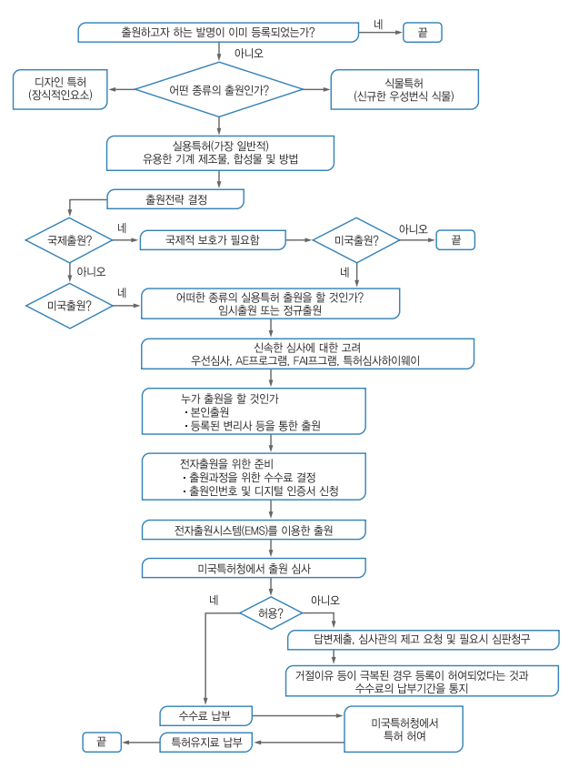 | |||
| 2 | 출원인 | ||||
| 3 | 출원인 | ||||
| 4 | 출원인 | ||||
| 5 | 출원인 | ||||
| 6 | 출원인 | ||||
| 7 | 출원인 | ||||
| 8 | 출원인 | ||||
| 9 | 미국특허청 | ||||
| 10 | 출원인 | ||||
| 11 | 출원인 | ||||
| 12 | 출원인 | ||||
| 13 | 출원인 | ||||
• 3단계 : 미국 내 출원을 할 것인지, 또는 미국과 더불어 다른 나라로의 출원을 할 것인지를 결정
- 미국 내 출원의 경우 속지주의의 원칙상 미국 영토내로 권리가 한정되므로, 권리의 지역적 범위를 넓히고자 한다면 PCT 등을 통하여 타국에도 출원을 해야 함
• 4단계 : 어떠한 종류의 출원을 하는지 결정
- 미국의 출원은 크게 정규출원(Nonprovisional application), 가출원(Provisional application)으로 나뉨
| [표 18] 특허 출원에 필요한 서류 | |||||
|---|---|---|---|---|---|
| 출원에 필요한 서류 | |||||
| 정규출원 | 임시출원 | ||||
| 1 | 클레임을 포함하는 명세서 | 명세서(클레임 기재 불필요) | |||
| 2 | 선언서 | ||||
| 3 | 필요한 도면 | 필요한 도면 | |||
| 4 | 출원수수료 | 출원수수료 | |||
| 비고 | •클레임/선언서 적용 없음 •선행기술 개시(IDS)의무 없음 •정규출원에 비하여 비용이 상대적으로 저렴 |
||||
• 5단계 : 신속한 등록을 위한 절차를 진행할지 결정
- 우리나라 특허제도와 달리 미국특허제도에는 출원인에 의한 심사청구제도가 없음. 즉 미국 특허출원제도에서는 출원된 발명에 대하여 출원인의 심사청구 여부에 상관없이 무조건 심사를 진행. 따라서 출원된 순서에 따라(First-in First-out) 미국 특허상표청 심사관에 의한 심사가 진행
- 다만, 우선심사 신청서를 제출하여 심사순서를 앞당길 수 있음. 우선심사 신청서는 1) 출원인의 건강이나 나이 또는 2) Patent Prosecution Highway(PPH) 프로그램에 기초하거나 3) “개정된 AE(Accelerated Examination) 프로그램”의 요건을 만족하는 경우에 인정됨
- 즉 출원인의 건강상의 이유로 정상적인 순서대로 심사가 진행되면 심사절차에 조력할 수 없는 경우, 의사의 진단서 같은 증거를 첨부하여 우선심사를 신청할 수 있고, 출원인의 나이가 만 65세 이상인 경우 그에 관한 증거를 첨부하여 우선심사를 신청할 수 있으며 이러한 경우에는 별도의 수수료가 추가되지 않음
- Patent Prosecution Highway는 양 국가에 공통으로 특허출원된 경우 제1청 출원 중 특허가능하다고 판단된 청구항이 있으면 제2청은 제1청의 심사결과를 활용하여 제2청 출원이 조기에 심사를 받을 수 있도록 하는 제도임
- 개정된 AE 프로그램은 출원인의 건강이나 나이 또는 PPH 프로그램에 기초한 경우를 제외하고 우선심사를 신청하는 것으로 2006년 8월 25일 이후부터 가능함. 개정된 AE 프로그램에 따라 우선심사 신청을 하려면, 소정의 수수료를 납부하고, 실용 및 디자인 출원이어야 하며, 출원서, 신청서 및 수수료는 미국 특허상표청의 Electronic Filing System(EFS) 또는 EFS-Web을 사용하여 제출되어야 하며, 출원 당시 출원이 37 CFR.51에 따라 완전하여야 하는 등의 요건을 만족하여야 함
• 6단계 : 출원인이 직접 출원할지 또는 대리인을 선임할지 여부를 결정
- 출원인이 직접 출원하는 경우 대리인 선임료 등이 들지 않기 때문에 비용을 절감할 수 있는 장점이 있으나, 출원 과정에서의 시행착오가 발생될 수 있으며, 비법률적인 용어 등의 사용으로 인하여 권리범위가 좁아질 수 있다는 문제점이 있음. 이에 비하여 대리인을 선임하는 경우에는 관련 절차에 능통한 대리인이 절차를 대신 처리해 주는 장점이 있으나 대리인 선임 비용 등의 비용 지출이 증가하는 문제점이 있음
• 7단계 : 전자출원을 위한 준비를 함. 출원절차를 위한 수수료를 결정하고, 출원인번호 및 디지털 인증서(Digital Certificate)를 신청
- 2022년 8월 1일에 개정된 내용을 기준으로 하면, 실용특허 출원을 위한 기본 수수료는 320.00달러에 해당하며, 실용특허를 위한 심사비용은 800.00 달러에 해당
• 8단계 : 전자출원시스템(Electronic Filing System, EFS)를 이용하여 특허를 출원
- EFS-Web는 미국 특허상표청의 웹기반 특허출원과 자료 제출 프로그램임. EFS-Web를 이용하여 누구나 특허출원서 및 서류를 제출할 수 있으며, 특정 프로그램을 다운로드 하는 등의 절차가 필요 없이 사용될 수 있는 간단한 프로그램임
• 9단계 : 미국 특허상표청은 출원인이 출원한 출원서가 특허 등록을 받을 수 있는지 심사
• 10단계 : 등록이 불가하면 심사관은 이를 출원인에게 알림
- 출원인은 답변을 통하여 심사관의 재고(Reconsideration)를 요청하고, 필요한 경우 심판을 청구
• 11단계 : 만일 심사관이 제시한 거절이유 등이 극복이 된 경우라면 미국 특허상표청은 등록이 허여되었다는 것과 수수료의 납부기간을 출원인에게 송부
• 12단계 : 출원인이 수수료를 납부하면 미국 특허상표청은 특허를 허여
- 출원인은 특허 등록이후에 특허를 유지하기 위한 수수료를 납부함. 특허가 발행되는 경우 특허권자는 출원일로부터 20년간 발명 제품을 배타적으로 생산·사용하거나 판매할 수 있는 권리를 보유하게 됨
- 다만, 의약품과 같은 일정 특허 발명의 경우에 상품화하기 위한 조건으로 정부의 허가를 받아야 하므로 특허권 사용이 제한될 수 있음. 따라서 이 경우에는 최고 5년까지 특허권 사용기간의 연장이 가능함
- 특허권자는 특허권의 존속 기간 동안 특허발명에 대한 배타적 사용·처분권을 가짐. 미국 특허법은 특허권자가 이를 사용하도록 강제하거나 타인에 대한 사용 허가를 강제하지 않지만, Bay-Dole법에 의하여 발명이 정부지원 하에 이루어진 경우는 예외적임. 특허권자는 특허발명을 타인에게 양도하거나 독점적·비독점적 라이센스를 설정할 수 있으며, 지역적 범위를 한정하여 특허발명의 사용을 허가할 수도 있음
특허 출원에 걸리는 시간은 일정하지 않으나 일반적으로 진행되는 절차를 기준으로 대략의 기간을 계산하면, 발명상담 및 선행기술조사(약 1개월), 선행기술 조사 내용을 바탕으로 한 명세서작성(1개월), 현지 대리인 송부 및 필요서류 작성(0.5 개월)으로 볼 때, 2.5개월 정도의 기간이 걸림. 이러한 기간은 선행기술 조사 여부, 변리사 선임 여부 등에 따라 크게 달라짐
2. 특허 심사 절차
미국 특허상표청의 특허심사는 크게 형식심사와 실질심사로 구분될 수 있음
초기심사국은 출원건이 특허출원의 형식을 갖추었는지 심사하여 출원서류의 형식이 미국특허청 기준에 맞으면 심사관실로 전달하고, 출원서류의 형식에 문제가 있으면 이를 출원인에게 통보하여 보정하도록 함. 초기심사국이 보내는 보정통지서의 사유는 대게 영문요약서(Abstract)의 글자 수가 150자를 넘지 않는지, 도면의 설명(Drawing Description)과 첨부도면이 일치하는지 여부 및 도면내 참조번호의 글자방향과 도면번호 등의 글자 방향이 일치하는지 여부를 판단함
형식심사에 문제가 없으면 공식접수증(Official Filing Receipt)이 출원인에게 발송되고, 출원서류는 심사관실로 이송되어 심사관이 배정됨. 출원서류가 초기심사국에 머무는 기간은 우편출원의 경우 대개 3-5개월이고 전자출원의 경우 약 2-3주 정도임. 초기심사국에서 분야별 심사관실로 이송된 출원서류는 심사관이 배정되면 해당 심사관에게 출원서류가 전송됨
(1) 거절이유통지
출원은 주제에 따라서 분류되고 출원일자순으로 심사를 받으며, 대개 1년 정도가 지나면 심사가 착수됨. 심사관은 실체심사를 한 후 그 출원을 특허로 발행하기로 통보하거나 출원인에게 거절이유통지를 발송하게 됨. 심사결과 “1차 거절이유통지(First Office Action)”를 받게 되는데 이것이 우리나라에서는 의견제출 통지서라고 지칭되고 있음. 발명이 단일성이 유지되지 않을 경우 한정(restriction)을 심사관이 요구할 수 있고, 분할하여 출원할 수 있음
- 특허에 문제가 있는 경우 거절이유통지를 발송하는데, 실체 거절이유는 특허성의 요건을 만족시키지 못하는 경우에, 방식 거절이유는 도면의 형식위반, 청구범위 기재방식 위반 등의 경우에, 요구사항은 한정요구 등의 경우에 행함
- 거절이유가 없는 경우에는 특허발행 통지와 특허등록료 납부서를 받고 3개월 이내에 특허등록료를 납부하면 특허증(Letters patent)이 발행됨. 특허발행 통지 이후에는 발명의 본질에 영향을 주지 않는 문법적인 정정이 허용됨
■ 실체심사에서 판단하는 특허의 요건
(가) 특허 대상일 것
실용특허는 새롭고 유용하며 자명하지 않은 방법, 기계, 제품이나 조성물 또는 이에 대한 새롭고 유용하고 자명하지 않은 개량임. 즉 발명이 미국 특허를 받기 위해서는 발명이 특허를 받을 수 있는 발명이어야 하고 유용성, 신규성, 비자명성이 있어야 함
- 신규성이란 출원된 발명이 그 발명 이전에 미국에서 타인에게 알려지거나 사용되지 않은 것이어야 함을 의미하며, 미국 또는 외국에서 특허로 등록이 되거나 간행물에 기재되지 않아야 하며, 미국에서 특허출원일로부터 1년 이상 전에 그 발명이 미국 또는 외국에서 특허로 등록이 되거나 판매된 경우가 아니어야 신규성이 인정됨. 따라서 외국 출원일로부터 12개월이 경과하여 미국에 출원한 경우(즉 우선권 주장의 요건을 만족하지 못한 경우), 미국에서 특허되기 전 외국에서 먼저 특허로 등록된 경우, 발명일 이전에 미국에서 타인의 특허에 게재된 경우, 포기된 경우 등은 신규성을 상실하게 됨
- 비자명성이란 당해 분야에서 통상의 지식을 가진 자가 공개된 기술에 의하여 용이하게 발명할 수 없는 것을 의미하며, 우리나라의 진보성 개념과 기본적으로 동일함. 신규성이 인정되는 경우에도 자명한 것에 해당하는 것은 특허로 등록받을 수 없음. 즉 청구하는 발명과 선행기술의 차이가 발명이 이루어진 시점에서 당해 분야에서 통상의 지식을 가진 자가 볼 때 전체적으로 자명한 것이라면 그 발명은 특허로 등록받을 수 없음
- 유용성이란 발명은 사회를 위해 유용한 기능을 수행하여야 한다는 의미이며, 우리나라 특허법의 특허요건 중 하나인 산업상 이용가능성에 대응됨. 유용성 규정을 충족하기 위해 발명이 현존하는 것보다 우월한 성능이나 효과를 가질 필요는 없고, 발명이 기능이나 목적에 맞게 반드시 실시가능하거나 사용 가능해야 함. 또한 인류를 위한 목적을 가진 발명이고 불법적이거나 비도덕적이지 않고 공공의 이익과 배치되지 않아야 함. 그 외에도 발명의 진정한 발명자여야 하고 명확히 명세서를 기재해야 하며, 실시 가능해야 하고 발명을 상세히 기술해야 하며 최적의 실시 예를 기재해야 함
디자인 특허의 대상은 제조물에 관한 새롭고 독창적이고 심미적이며 명백하지 않은 디자인임. 한편, 식물특허의 대상은 재배되지 않은 상태에서 발견된 식물과 재배된 종, 돌연변이체, 잡종과 새롭게 발견된 씨앗을 포함하여 구별되고, 신규하고 명백하지 않은 식물임
(나) 특허 제외 요건에 해당하지 않을 것
특허출원인에 의해 발명전에 그 발명이 미국에서 타인에게 알려지거나 사용되어 온 경우, 혹은 미국 또는 외국에서 특허 등록되거나 간행물에 기재된 경우, 미국에서 특허 출원일로부터 1년 이상 전에 그 발명이 미국 또는 외국에서 특허등록되거나 판매된 경우, 출원인이 발명을 포기한 경우를 제외하고 특허받을 수 있음
또한 발명이 외국에서 출원인 혹은 그 법정대리인 혹은 승계인에 의해 미국에서 특허출원일로부터 12개월 이상 전에 제출된 출원에 준해 미국에서의 특허출원일 전에 특허가 부여되었거나 부여된 상태가 되었거나, 발명자증의 대상이 된 경우, 발명이 특허출원인에 의한 발명 이전에 미국에 제출된 타인의 특허출원에 근거하여 부여된 특허에 기재된 경우, 특허를 청구한 발명의 대상을 출원인 자신이 발명한 것이 아닌 경우를 제외하고 특허 받을 수 있음
(다) 불 특허대상이 아닐 것
자연법칙 또는 자연물(식물특허에 의해 등록될 수 있는 범위는 별개로 함), 인쇄물, 경영방법, 정신적 과정, 원자력법에 의해 원자력무기에 있어서 특정 핵물질 또는 핵에너지를 단독으로 활용하는 발명은 불특허대상임
(2) 답변서 제출
거절이유통지(OA)에 대하여는 3개월의 응답기간(shortened statutory period)이 일반적으로 주어지며, 추가 관납료를 납부하면 6개월까지 연장되는데, 어떠한 경우에도 6개월을 넘는 경우는 없음. 답변서와 함께 필요시 보정서(amendment)를 같이 제출할 수 있는데, 이러한 보정의 범위는 최초 출원한 내용에 한정됨. 수수료를 추가 납부하는 조건으로 3개월까지 답변기간을 연장할 수 있으며, 기간 연장은 미리 하는 것이 아니라 거절이유통지에 대한 답변서를 제출하면서 동시에 납부하면 됨
(1) First Office Action(First OA) 까지 걸리는 기간
미국 특허상표청에 출원을 한 이후 First Office Action 까지 걸리는 기간은 대략 18.4개월 정도 걸림. 즉, 출원인이 미국 특허상표청에 출원한 명세서에 대하여 심사관이 의견서를 통지하는데 걸리는 기간이 대략 1년 6개월 정도 걸림
(2) 거절결정 또는 등록허여 까지 걸리는 기간(Traditional Total Pendency)
출원인이 출원한 이후 Office Action 등을 거쳐 등록여부가 결정되는 데 대략 29.5개월이 소요됨
(1) OA 대응 절차
출원인은 심사관의 OA에 대한 대응으로 보정서 및/또는 의견서를 제출할 수 있음. 일반적인 절차는 미국 현지 대리인이 OA발생 여부를 통지→한국 대리인이 OA를 발명자에게 통지하고 검토의견을 송부→발명자 검토 후 미국 대리인에게 대응 지시의 순서로 진행되며, 심사관은 보정된 명세서를 기준으로 심사를 진행함
(2) OA 대응 비용
최초 OA에 대한 검토 및 대응 비용으로 대리인 비용 포함 $500~$1,500, 2차 OA의 검토 및 대응 관련 $500~$1,000정도의 비용이 소요됨. 이러한 비용은 검토 및 대응시 의견 제시 정도, 현지 대리인과의 계약 관계에 따라 달라질 수 있음
(3) OA 대응 기간
상술한 바와 같이 미국 특허상표청에 출원을 한 이후 First Office Action까지 걸리는 기간은 대략 18.4개월이며, 출원한 이후 Office Action 등을 거쳐 등록여부가 결정되는데 대략 29.5개월이 소요됨. 결국 First Office Action으로부터 등록 여부가 결정되는 기간은 11.1개월이 걸리게 되며, 이러한 기간은 추가 Office Action의 여부 등에 따라 달라짐
- 최초 OA에 대한 응신기간은 3개월로 지정되며, 신청서와 함께 관납료를 제출하면 그 기간을 연장할 수 있음. 최종 OA에 대한 응신기간은 OA 발송일로부터 3개월로 지정되며 6개월까지 기간연장이 가능
(4) Office Action 대응 실무상 Tips
(가) 심사관의 거절 근거를 면밀히 검토하여 심사관이 해당 발명과 인용선행문헌을 잘 이해하고 있는지 여부를 구성요소 별로 분석하고, 각 구성요소 별로 반박논리가 있는지 여부에 대하여 분석
(나) 거절통지에 대한 답변서 제출 전에 대리인이 심사관과 전화 인터뷰를 활용
(다) 청구항 보정이 필요한 경우, 심사관과 전화 인터뷰 전에 반드시 심사관에게 보정안
을 보내고 이에 대해 심사관과 면담
(라) 최종거절통지를 받은 경우 반드시 2개월 이내에 보정서 및 답변서를 제출하여 심사관으로부터 권고통지를 받을 수 있도록 함
(마) 한국에서 조기 등록된 경우에는 특허심사하이웨이(PPH) 이용을 고려함. 그러면 거절통지 가능성이 낮아짐
(바) 심사관이 일부 종속항에 대해 등록을 허여한 경우, 해당 종속항을 등록받고 나머지 거절된 청구항들은 계속출원으로 다시 심사받는 것이 출원금반언을 피하는 방법임
3. 이의/심판 절차
미국 특허상표청은 심사처리 기간을 단축하기 위해 제2회째의 거절이유통지를 최종적인 것으로 하고 최종 거절이유통지 후에는 보정 등을 엄격히 제한함. 거절이유통지 시에는 최종거절통지일로부터 2개월 내에 답변서를 제출하는 경우 심사관이 제출된 답변서에 의해 거절이유가 극복되지 않는다고 판단되거나 제출된 보정서에 포함된 청구항에 대한 보정이 심사관으로 하여금 추가적인 선행기술 검색을 필요로 하는 경우에는 이러한 내용에 대해 심사관은 권고 조치(Advisory Action)를 통지하여 출원인이 적절한 조치를 취할 수 있도록 도와줌
- 최종 거절이유통지 후에 출원인은 답변서 제출기간 내에 이하에서 제시하고 있는 조치를 취할 수 있으며, 답변서 제출기간 내에 출원인이 아무런 조치를 취하지 않으면 특허청구범위 중 허여된 항이 없는 경우 그 특허출원은 포기된 것으로 보고, 만일 특허청구범위 중 허여된 항이 있으면 허여된 항에 대해서만 특허를 부여하고 거절된 항은 취소된 것으로 봄. 이 경우 출원인은 추가 보정을 통하여 거절이유 극복을 시도하거나 항고 심판을 청구할 수 있음
특히 최종거절통지 이후에 특허청구범위를 보정하는 경우, 이러한 보정이 심사관이 추천한 대로라면 거절이유가 극복되겠지만, 심사관이 추천한 것이 아니고 이러한 보정이 청구범위를 변경하여 심사관이 추가 선행기술을 검색할 것이 요구된다면, 이러한 보정은 계속심사청구 없이는 각하됨. 즉, 심사관이 그 보정을 채택하면 특허 발행을 할 것이나, 동의하지 않거나 추가적 검색이 필요하다고 판단되는 경우는 권고조치통지(advisory action)를 보냄
출원인은 거절된 항에 대하여 항고할 수 있고, 항고사실을 심사관에게 통지하여 최종 거절이유통지에 대한 답변 기간을 만료시킬 수 있음. 항고심판청구서를 특허상표청의 항고심판소(BPAI)에 제출하고, 항고심판청구서 제출 후 60일 이내에 항고이유서(Brief)를 제출하여 거절된 청구항의 특허성을 주장함
항고심판소(BPAI)가 심사관의 주장에 동의하지 않는 경우에는 특허 발행하라는 지시와 함께 사건을 심사관에게 환송한다는 내용의 심결을 하며, 심사관의 의견에 동의하는 경우에는 발명이 특허될 수 없다는 취지의 심결을 함. 이와 별개로, 항고심판소가 추가적인 심사를 필요로 한다고 판단하는 경우에는 원심사결과를 파기하고 심사관에게 환송하여 재심사토록 할 수도 있음. 심사관을 지지하는 심결은 약 65%임
- 항고심판소(BPAI)의 심결에 불복이 있는 경우 심결일로부터 60일 이내에 연방관할 항소법원(CAFC)에 항고할 수 있으며, 연방관할 항소법원에 불복하는 경우에는 연방대법원에 상고할 수 있음
이는 우리 특허법의 심사전치제도에 대응하는 것으로 담당심사관을 포함하는 심사관 합의체를 구성하여 거절이유를 재검토하여 과연 심사관의 거절 이유가 타당한 것인지를 판단하게 하는 제도임
- 다만, 심사관 합의체가 담당 심사관의 심사결과를 바꾸는 경우는 흔치 않으므로 결국 항고심판으로 가게 될 것을 대리인 비용만 더 지출하는 결과가 되는 경우가 많음
제3절 등록 및 활용
1. 등록 및 유지
미국 특허법상 특허권의 발생은 특허취득일로부터 시작하지만 만료일은 출원일로부터 20년까지임. 즉 1994년 12월 8일에 시행된 GATT(관세 및 무역에 관한 일반협정, General Agreement on Tariffs and Trade) 시행입법의 시행과 함께, 특허권의 존속기간은 출원일로부터 20년임
그동안 미국에서는 특히 의약산업계에서는 순차적인 출원절차(serial prosecution)이라고 부르는 편법을 통하여 특허기간을 실질적으로 연장하는 사례가 많았으나 개정법 제154조에 따르면 분할출원 혹은 계속출원, 일부계속출원의 경우 특허 존속기간을 계산할 때 원출원일로 출원일을 계산하기 때문에 이 같은 불합리한 결과가 나타나지 않음
1999년 개정 특허법에 따르면 특허상표청 귀책사유로 인해 특허심사가 지체될 경우 지체된 기간만큼 특허권 존속기간을 연장시켜주는 제도를 새로이 마련하였음. 우선권 경쟁, 국가안보를 보호하기 위한 비밀유지, 그리고 특허 항소부와 특허저촉 심사부 또는 연방법원에 의한 성공적인 항소법정에서의 재검토 때문에 늦어진 기간 연기를 보상하기 위하여 최대 5년까지의 존속기간 연장이 허용됨
특허료의 납부 소홀로 특허권이 소멸된 경우 일정한 조건하에서 회복이 인정됨. 미국도 우리나라와 같이 특허료 납부기간 경과 후 6개월의 유예기간을 인정하며, 유예기간 경과 후에도 특허료 납부 지연이 비의도적이거나 불가피한 이유에 의한 점을 특허상표청에 입증하면 6개월의 유예기간 후 24개월 이내에 특허료를 납부하여 특허권을 회복할 수 있음
허가받은 후 3년 반, 7년 반 그리고 11년 반의 정해진 기간 내에 연 특허료를 내야함. 정해진 기간 내에 특허료를 납부하지 않은 경우는 6월 이내에 연체된 지불금에 대한 추가 수수료를 납부하여야 함. 정해진 기간 내에 연 특허료를 납부하지 않고 추납기간도 경과한 특허들은 허가가 있은 지 4년, 8년, 또는 12년 후의 특허의 출원날짜에 소멸함
2. 효력 및 활용
출원 및 특허에 관한 권리는 서면으로 양도할 수 있으며, 이를 USPTO에 등재할 수 있음. 양도서류가 등재되면 일반에게 공개되며, 양수인 명의로 특허 등록이 되도록 하기 위해서는 등록료 납부 전에 양도 등재를 하여야 함
(1) 양도의 등재 방식
양도의 방식에는 ① USPTO의 양도등재서류(Assingment Records)에 등재하는 방식과, ② 출원, 특허 또는 기타 절차의 파일에 등재하는 방식이 있음
(가) 양도서류의 등재
USPTO는 양도서류의 사본만을 등재함. 양도와 관련된 특허나 출원은 특허번호나 출원번호로서 확인되어야 함. 다만, 출원 전에 양도가 있는 경우에는, 발명의 이름과 발명의 명칭으로 그 출원을 확인하여야 함
- USPTO 등재용 양도서류는 ① 권리를 양도하는 당사자의 이름; ② 권리를 양수하는 당사자의 이름과 주소; ③ 등재하고자 하는 양도 대상 권리의 내용 ④ 양도서류가 등재될 출원번호 또는 특허번호 ⑤ 양도서류 등재 신청에 관한 송달이 발송될 자의 이름과 주소 ⑥ 서명일자 ⑦ 양도서류를 제출하는 당사자의 서명이 표시된 표지를 첨부하여야 하며, 팩스, EPAS(Electronic Patent Assignment System)을 통하여 제출될 수 있음
- 특허나 출원의 양수인이 미국에 거주하지 않는 경우, 그 양수인에 의하여 서명된 서면으로 국내 대리인을 지정할 수 있음. 국내 대리인의 지정 서명은 양도서류와 별도로 제출되어야 하며, 각 출원이나 특허별로 제출되어야 함
(2) 등재의 효과
서류의 등재는 서류의 유효성 또는 출원, 특허의 권리의 효력에 관한 USPTO의 판단이 아님. USPTO는 필요하다면, USPTO에 계속 중인 사항에서 조치를 취할 권한을 갖는 자가 누구인지를 포함하여, 서류가 무슨 효력을 갖는지를 판단할 것임. 어떠한 조치나 행위를 조전으로 하는 양도가 USPTO에 등재되는 경우 USPTO는 조건이 없는 양도인 것으로 봄. 즉, USPTO는 그 조전이 만족되었는지를 판단하지 않음
(3) 등재된 양도서류에 있는 오류의 정정
등재된 양도서류에 있는 오류는 정정용 서류(Corrective Document)가 제출되면 Assignment Division에 의하여 정정될 수 있음
- 정정용 서류는 ① 정정사항을 그 내부에 표시한 원 양도서류의 사본(그 정정사항은 권리를 이전하는 자에 의하여 Initialed&Dated 되어야 함), 및 ② 새로운 등재용 표지(Cover Sheet)를 포함함
특허권의 실시권은, 특허권의 양도와 비교하여, 전체적인 특허권리가 아니라 그 일부를 이전하는 것으로, 기간, 지역이나 사용분야 등을 제한할 수 있음. 특허 실시권은 실제에 있어서는 실시권자가 그 의무를 다하고 실시계약에서 규정된 경계 내에서 실시한다면 특허권자가 그 실시권자에게 특허침해의 소송을 제기하지 않겠다는 계약에 해당함. 특허권자는 배타적 실시권을 부여할 수 있으며, 그 실시범위 내에서는 특허권자도 이를 실시할 수 없음
제4절 비용
1. 출원, 심사 비용
| [표 19] 미국 특허 출원 및 심사 비용 | |||||
|---|---|---|---|---|---|
| 특허 출원 관납료 | |||||
| Fee | Small entity Fee | Micor entity Fee | |||
| 출원 관납료 |
기본출원료 | $320 | $160 | $80 | |
| 특허검색료 | $700 | $350 | $175 | ||
| 특허심사료 | $800 | $400 | $200 | ||
| 관납료총계 | $1820 | $910 | $455 | ||
※ 참고사항
- 출원시 관납료는 단일청구항 20개까지, 독립청구항 3개까지 그리고 명세서 분량 100페이지 까지가 기준. 추가되는 청구항 및 독립청구항의 수 또는 다중 종속항(multiple dependent claims)의 추가에 따라 관납료 증가
- “Small entity”는 개인 또는 직원 500인 미만의 기업 출원인에 적용되는 관납료이고, “Large entity”는 직원 500인 이상의 기업에 적용되는 관납료
2. 등록. 연차료
| [표 20] 미국 특허 등록 및 연차료 | |||||
|---|---|---|---|---|---|
| 특허 출원 관납료 | |||||
| Fee | Small entity Fee | Micor entity Fee | |||
| 특허등록료 | $1200 | $600 | $300 | ||
| 특허
유지료 |
등록후 3.5년차 | $2000 | $1000 | $500 | |
| 등록후 7.5년차 | $3760 | $1880 | $940 | ||
| 등록후 11.5년차 | $7700 | $3850 | $1925 | ||
※ 참고사항
- 미국특허권을 유지하려면 특허등록일로부터 3년차, 7년차, 11년차 이렇게 3번에 걸쳐 유지료(maintenance fee) 납부 필요
PARTIV 디자인
제1절 주요제도 및 등록요건
1. 출원현황 통계
2011년부터 2020년까지 미국의 디자인 출원 건수를 살펴보면 아래의 표와 같음
| [표 21] 미국의 디자인 출원건수 출처: WIPO | ||||
|---|---|---|---|---|
| 연도 | Resident | Non-Resident | Abroad |
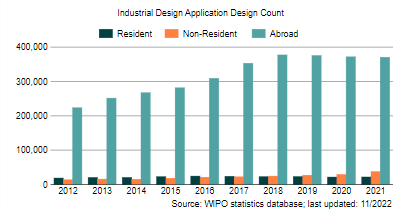
|
| 2011 | 17,443 | 13,024 | 207,440 | |
| 2012 | 18,812 | 13,987 | 223,668 | |
| 2013 | 20,271 | 15,763 | 251,445 | |
| 2014 | 20,320 | 15,058 | 267,464 | |
| 2015 | 22,785 | 18,187 | 281,781 | |
| 2016 | 24,405 | 21,015 | 309,004 | |
| 2017 | 23,618 | 22,451 | 352,792 | |
| 2018 | 22,825 | 24,324 | 377,444 | |
| 2019 | 22,988 | 26,857 | 375,547 | |
| 2020 | 21,686 | 29,057 | 372,033 | |
2011년부터 2020년까지 미국의 디자인 등록된 건수를 살피면 다음과 같음
| [표 22] 미국의 디자인 등록건수 출처: WIPO | ||||
|---|---|---|---|---|
| 연도 | Resident | Non-Resident | Abroad |
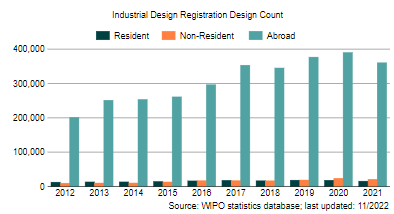
|
| 2011 | 11,756 | 9,600 | 213,590 | |
| 2012 | 12,445 | 9,506 | 201,194 | |
| 2013 | 13,312 | 10,156 | 251,046 | |
| 2014 | 13,385 | 10,272 | 253,414 | |
| 2015 | 14,444 | 13,229 | 261,064 | |
| 2016 | 16,311 | 16,988 | 296,578 | |
| 2017 | 17,709 | 17,099 | 353,112 | |
| 2018 | 16,731 | 16,718 | 345,207 | |
| 2019 | 18,236 | 18,885 | 376,818 | |
| 2020 | 17,871 | 23,617 | 390,182 | |
2. 주요제도
미국 특허법은 실용발명, 디자인 발명 및 식물 발명에 대한 출원 및 등록 절차에 대해 규정하고 있음. 한국 지식재산권법에서 말하는 발명과 고안은 미국법에서의 실용발명에 해당하며, 디자인은 미국법에서의 디자인 발명에 대응됨
- 미국 특허법에서는 한국 특허법에서 말하는 발명에 해당하는 것뿐만 아니라 디자인에 대해서도 특허라는 용어를 사용하고 있음
- 또한 미국 특허법에서는 실용발명에 대한 규정을 일반적으로 규정하면서 디자인 특허의 보호대상에 대해 별도의 규정을 두고 있을 뿐, 그 특허요건이나 절차는 실용발명과 동일
- 디자인 발명의 등록이 허여되면 존속기간은 허여일로부터 15년임
- 디자인의 유형 - 디자인은 전체 물건이나 물건의 일부분에 구현될 수 있으며, 물건에 적용되는 장식물(ornamentation)일 수 있음. 디자인의 외형장식(surface ornamentation; 모양)에 관한 것인 경우, 모양 디자인은 도면에서 물건에 적용된 것으로 도시되고, 물건은 점선으로 도시되어 클레임된 디자인의 일부분이 아닌 것으로 표시되어야 함
디자인 특허는 제조상품의 장식적인 외관에 대해서만 보호를 제공함. 디자인은 제조물에 구현되거나 적용된 가시적이고 장식적인 특징으로 구성됨. 디자인은 외형으로 나타나는 것이기 때문에 디자인 특허출원의 대상은 물건의 형태나 형상, 물건에 적용된 외형장식(모양), 또는 형상과 모양의 조합에 관한 것임. 디자인 특허는 단지 물건의 외형을 그 대상으로 하며 구조적이거나 실용적인 특성은 해당되지 않으므로, 특허법에서는 새롭고 독창적이고 장식적인 디자인을 발명한 자에게 디자인 특허를 부여하도록 규정하고 있음
우리나라에서는 디자인보호법에서 독자적으로 디자인을 규정하고 있으나, 미국에서는 특허법에서 디자인 특허를 규정하고 있음
디자인의 특허출원시 도면과 더불어 그 권리범위를 정하는 클레임을 작성해야함. 독립적이고 구별되는 디자인들은 각각을 별개의 출원으로 제출하여야 함. 디자인과 관련한 둘 이상의 물건 사이에 명백한 관련성이 없다면 그들 디자인은 독립적인 것으로 해석됨.
- 예를 들어 한 쌍의 안경과 문손잡이는 독립적인 물건이므로 별도로 출원해야 함. 디자인에 관한 물건이 서로 관련성이 있다고 하더라도 디자인의 외형과 형상이 서로 다르다면 구별적(distinct)인 것으로 인정됨. 그러나 하나의 디자인 개념에 관한 변형된 형태나 실시예는 한 출원으로 제출할 수 있음
- 디자인 특허의 부적격 대상 - 기본적으로 물품의 기능에 의하여 설명되어지는 디자인은 장식성(ornamentality)을 결여하여 35 U.S.C. § 규정의 법정주체에 해당하지 않음. 디자인은 물품의 기능이 아닌 물품의 형상이나 모양에 대한 장식성이 있어야 함. 또한, 디자인이 특허받기 위해서는 독창적(original)이어야 함. 주지이거나 자연적인 물체를 모방한 디자인은 독창적이라고 볼 수 없음. 더욱이 인종, 종교, 성멸, 민족 또는 국가를 모욕하는 것으로 인정되는 것은 디자인 특허의 대상으로 인정되지 않음
제2절 출원절차
1. 디자인 출원 절차
디자인 특허출원에는 다음을 포함하여야 함
| [표 23] 디자인 출원 서류 | ||||
|---|---|---|---|---|
| 디자인 출원 서류 | ||||
| 1 | Description of the figures fo the drawing | 각 도면이 나타내는 것이 무엇인지에 대한 설명. | ||
| 3 | Feature description(optional) | |||
| 4 | A single claim | 디자인 출원에서는 하나의 클레임만 포함됨 | ||
| 5 | Drawings or photographs | |||
| 6 | Executed oath or declaration | |||
| 7 | Filing fee | Small entity인 경우 50% 할인. | ||
(1) Preamble
출원인 성명, 디자인 명칭, 디자인이 구현된 물품의 성질과 용도에 관한 간단한 설명을 기술함. 클레임된 디자인이 특허되면 이들 정보들이 특허공보에 표시됨. 디자인의 명칭은 다지인이 구현된 물품에 대해 일반적으로 알려지고 사용되는 이름으로 표시하여야 함
(2) Description of the figure(s) of the drawing, Feature description(optional)
각 도면이 무엇을 나타내는지 설명함. 명세서에서 디자인에 관한 설명은 잘 설명하는 것이기 때문임. 그러나 상세히 설명한다고 하더라도 문제가 되는 경우가 있음
① 클레임 디자인의 일부분의 외관을 도면으로 도시하지 않은 경우 그에 관한 설명
② 도시되지 않은 물품의 부분으로서 클래임된 디자인의 일부를 형성하지 않은 부분에 대한 설명
③ 도면에서 점선으로 주변 구조를 도시한 부분은 특허를 청구하는 디자인 부분이 아니라는 것을 나타내는 설명
④ 클레임된 디자인의 성질과 용도를 preamble에 적지 않은 경우 그에 대한 설명
(3) A single claim
디자인 특허출원에서는 하나의 클레임만을 포함하여야 함. 클레임에는 디자인이 구현되거나 응용될 물건과의 관계에서 출원인이 특허받고자 하는 디자인을 규정하여야 함. 클레임은 다음과 같은 형식으로 기재
- “The ornamental design for (the article which embodies the design or to which it is applied) as shown.” 클레임에서의 물품에 대한 설명은 디자인의 명칭에서 사용된 용어와 일관성이 있어야 함
(4) Drawings or Photographs
도면 개시(drawings disclosure)는 출원서의 가장 중요한 부분으로서, 디자인 출원서에는 반드시 도면이나 흑백사진이 포함되어야 함. 도면이나 사진에 의하여 클레임 디자인을 가시적으로 개시하여야 하기 때문에 도면이나 사진은 명확하고 완전하여야 하며, 35U.S.C. §112 (1)절 규정의 개시요건을 만족하여야 함. 개시요건을 만족하기 위하여 클레임된 디자인의 외관을 완전히 개시할 수 있도록 충분한 수의 도면을 포함시켜야 함
도면은 백색 종이에 흰색 잉크로 작성하며, 도면 대신에 제출하는 사진은 37 CFR 1.84(b)(1), 1.152규정의 요건에 따라 허용됨
- 한 출원에서 클레임 디자인을 개시하면서 흑백 사진과 잉크 도면을 함께 제출하여서는 안 됨. 사진과 도면 사이에는 구성요소들이 서로 일관되지 않을 가능성이 있기 때문임
- 도면 대신에 사진을 제출하는 경우 주변 구조물이 나타나지 않도록 하여야 하며 클레임된 디자인만이 나타나도록 하여야 함. 하나의 개념에 관한 복수의 실시예들이 그 외형과 형상이 비슷하다면 이들을 하나의 디자인 출원에 포함시킬 수 있음
① 컬러 도면과 컬러 사진
디자인 특허출원에서 컬러 도면이나 컬러 사진을 제출하기 위해서는 이들이 필요한 이유를 설명하는 37 CFR 1.84(a)(2) 규정의 신청서가 받아들여져야 함. 이 신청서에는 37CFR 1.17(h) 규정의 수수료, 3세트의 컬러 도면이나 사진, 흑백 복사본을 포함하여야 하며, 명세서의 description of the drawings 앞에 이와 관련된 문구를 넣어야 함. 컬러 사진을 비공식적인 도면으로 제출하면서 컬러는 클레임 디자인의 부분이 아니라고 하기 위해서는 명세서에 disclaimer를 추가하여야 함. 최초 출원서에서 disclaimer가 없으면, 컬러도 클레임 디자인의 필수 부분으로 간주됨
② Views
도면이나 사진에는 클레임된 디자인의 외형(appearance)을 완전하게 게시하기에 충분한 수의 views(예: 정면도, 배면도, 좌우측면도, 평면도, 저면도)를 포함하여야 함. 또한, 3차원적인 외형과 형상을 명료하게 표시하기 위해 사시도(perspective view)를 제출할 수 있음. 다른 면과 동일하거나 편평하거나 아무런 장식이 없는 면에 대한 view는 그 도시를 생략할 수 있으며, 이 경우 명세서에 이에 대한 사항을 명시적으로 표시하여야 함
- 예를 들어, 디자인이 좌측면과 우측면이 동일한 경우 한쪽 면에 대해 도시하고 drawing description 부분에서 다른 면은 동일하다는 것을 설명하면 됨. 디자인의 저면이 편평한 경우 저면도는 생략한 채 figure description에서 저면은 편평하고 아무런 장식이 없음(unornamented)을 표시함
- 클레임에는 전체 물품에 대해 청구할 수 있지만, 통상적인 사용시 물품의 모든 면이 보이는 것은 아니기 때문에 그들을 모두 개시할 필요는 없음. 디자인의 구성요소를 보다 명확하게 표현하기 위해 단면도(sectional view)를 제출할 수 있지만, 클레임된 디자인을 형성하는 부분이 아닌 기능적인 특징이거나 내부 구조를 나타내는 단면도는 요구되지도 허용되지도 않음
③ Surface shading
도면에는 디자인의 3차원적인 면의 특성이나 윤곽을 보다 명확하게 표현하기 위해 적당한 Surface Shading(농담(濃淡)표시)을 제공하여야 함. 또한 Surface Shading은 open area와 solid area를 구분하기 위해 필요함. Solid Black Surface Shading은 흑색임을 나타내는 경우를 제외하고는 일반적으로 허용되지 않음. 도면에서 적절한 Surface Shading이 결여되면 디자인의 형상이나 윤곽이 35 U.S.C. §112 (1)절 규정의 non enabling하다고 할 수 있음
④ 점선
점선으로 표시된 부분은 단지 설명적인 목적으로만 사용되며 클레임된 디자인의 일부분을 형성하는 것이 아님. 클레임된 디자인의 일부가 아니지만 디자인이 사용된 환경을 보여주기 위해 필요하다고 인정되는 면은 점선으로 이를 도면에 표시할 수 있음. 디자인이 구현되거나 응용된 물품의 어떤 부분이 클레임된 디자인의 일부를 구성하지 않는 경우 이를 점선으로 표시함. 클레임에서 물품에 대한 면 장식(surface ornamentation)을 청구하는 경우 그 면 장식이 구현된 물품은 점선으로 표시하여야 함
- 점선을 사용할 때 클레임된 디자인을 도시한 부분을 점선이 가로지르거나 중간에 끼어들어서는 안 되며, 클레임된 디자인을 도시하는데 사용된 선보다 더 굵어서도 안됨. 한편, 투명한 면의 뒤쪽에 보이는 요소들은 점선이 아니라, 실선으로 작성하여야 함
디자인 특허 출원에 걸리는 시간은 일정하지 않음. 일반적으로 진행되는 절차를 기준으로 대략의 기간을 계산하면, 디자인 출원상담 선행디자인조사(약 1개월), 선행디자인 조사 내용을 바탕으로 한 명세서작성(0.5개월), 현지 대리인 송부 및 필요서류 작성(0.5개월)으로 볼 때, 2개월 정도의 기간이 걸림. 이러한 기간은 관련 선행 디자인 존재 여부, 도면 작성, 변리사 선임 여부 등에 따라 크게 달라짐
2. 디자인 심사 절차
미국 특허법에서는 디자인을 특허법에서 규율하며 실용방법의 심사 진행 절차와 크게 다르지 않음. 디자인 특허출원이 제출되면 출원번호와 출원일이 부여되고, “Filing Receipt”가 출원인에게 송부됨. 해당 출원인 심사관에게 배정된 다음 출원일 순으로 심사가 진행됨
- 실제 심사에서는 도면이 요건에 맞게 작성되었는지 형식적인 요건을 확인하고, 클레임 된 디자인을 선행기술과 비교함. 심사와 관련된 주요 조문은 35 U.S.C. §102, §103 및 §112가 있음
- 개시된 내용이 불완전하거나 이해할 수 없거나 선행기술이 발견되는 등의 경우 출원 클레임에 대하여 거절이유(Office Action, OA)가 통지됨
거절이유가 통지되면 출원인은 정해진 기간 내에 보정서와 함께 서면으로 재심사를 요청하는 의견서(Response)를 제출하여 대응하는 것이 일반적임
- OA에 대한 응신에는 출원번호, 그룹기술부 번호, 출원일, 당해 OA를 작성한 심사관의 이름 및 발명의 명칭을 포함하여야 함
- OA에 대한 응신할 수 있는 기가는 발송일을 기준으로 기산되며 기간 연장을 신청할 수 있음
- 응신서류가 지정기간 내에 USPTO에 접수되지 않으면 그 출원은 포기 간주됨. 심사관은 출원인의 의견서 및 보정서에 의하여 다시 심사함
3. 이의/심판 절차
미국 특허상표청은 심사처리 기간을 단축하기 위해 제2회째의 거절이유통지를 최종적인 것으로 하고 최종 거절이유통지 후에는 보정 등을 엄격히 제한함. 거절이유통지 시에는 최종거절통지일로부터 2개월 내에 답변서를 제출하는 경우 심사관이 제출된 답변서에 의해 거절이유가 극복되지 않는다고 판단되거나 제출된 보정서에 포함된 디자인에 대한 보정이 심사관으로 하여금 추가적인 선행기술 검색을 필요로 하는 경우에는 이러한 내용에 대해 심사관은 권고 조치(Advisory Action)를 통지하여 출원인이 적절한 조치를 취할 수 있도록 도와줌
- 최종 거절이유통지 후에 출원인은 답변서 제출기간 내에 이하에서 제시하고 있는 조치를 취할 수 있으며, 답변서 제출기간 내에 출원인이 아무런 조치를 취하지 않으면 디자인 출원은 포기된 것으로 보고, 만일 기존 디자인과의 차별성을 증명하면 디자인 권리를 부여함
특히 최종거절통지 이후에 디자인 청구범위를 보정하는 경우, 이러한 보정이 심사관이 추천한 대로라면 거절이유가 극복되겠지만, 심사관이 추천한 것이 아니고 이러한 보정이 디자인 보정 범위를 변경하여 심사관이 추가 선행기술을 검색할 것이 요구된다면, 이러한 보정은 계속심사청구 없이는 각하됨. 즉, 심사관이 그 보정을 채택하면 디자인 발행을 할 것이나, 동의하지 않거나 추가적 검색이 필요하다고 판단되는 경우는 권고조치통지(advisory action)를 보냄
출원인은 거절된 항에 대하여 항고할 수 있고, 항고사실을 심사관에게 통지하여 최종 거절이유통지에 대한 답변 기간을 만료시킬 수 있음. 항고심판청구서를 특허상표청의 항고심판소(BPAI)에 제출하고, 항고심판청구서 제출 후 60일 이내에 항고이유서(Brief)를 제출하여 거절된 디자인의 특허성을 주장함
- 항고심판소(BPAI)의 심결에 불복이 있는 경우 심결일로부터 60일 이내에 연방관할 항소법원(CAFC)에 항고할 수 있으며, 연방관할 항소법원에 불복하는 경우에는 연방대법원에 상고할 수 있음
이는 우리 특허법의 심사전치제도에 대응하는 것으로 담당심사관을 포함하는 심사관 합의체를 구성하여 거절이유를 재검토하여 과연 심사관의 거절 이유가 타당한 것인지를 판단하게 하는 제도임
- 다만, 심사관 합의체가 담당 심사관의 심사결과를 바꾸는 경우는 흔치 않으므로 결국 항고심판으로 가게 될 것을 대리인 비용만 더 지출하는 결과가 되는 경우가 많음
제3절 등록 및 활용
1. 등록 및 유지
미국 특허법상 디자인 특허의 존속기간은 허가일로부터 15년임 (2015. 5. 13. 출원된 디자인은 등록일로부터 15년이며, 그 이전에 출원된 디자인은 등록일로부터 13년임)
1999년 개정 특허법에 따르면 특허상표청 귀책사유로 인해 특허심사가 지체될 경우 지체된 기간만큼 디자인권 존속기간을 연장시켜주는 제도를 새로이 마련하였음. 우선권 경쟁, 국가안보를 보호하기 위한 비밀유지, 그리고 특허 항소부와 특허저촉 심사부 또는 연방법원에 의한 성공적인 항소법정에서의 재검토 때문에 늦어진 기간 연기를 보상하기 위하여 최대 5년까지의 존속기간 연장이 허용됨
특허료의 납부 소홀로 특허권이 소멸된 경우 일정한 조건하에서 회복이 인정됨. 미국도 우리나라와 같이 특허료 납부기간 경과 후 6개월의 유예기간을 인정하며, 유예기간 경과 후에도 특허료 납부 지연이 비의도적이거나 불가피한 이유에 의한 점을 특허상표청에 입증하면 6개월의 유예기간 후 24개월 이내에 특허료를 납부하여 디자인권을 회복할 수 있음
2. 효력 및 활용
디지안에 관한 권리는 서면으로 양도할 수 있으며, 이를 USPTO에 등재할 수 있음. 양도서류가 등재되면 일반에게 공개되며, 양수인 명의로 디자인 등록이 되도록 하기 위해서는 등록료 납부 전에 양도 등재를 하여야 함
(1) 양도의 등재 방식
양도의 방식에는 ① USPTO의 양도등재서류(Assingment Records)에 등재하는 방식과, ② 출원, 디자인 또는 기타 절차의 파일에 등재하는 방식이 있음
(가) 양도서류의 등재
USPTO는 양도서류의 사본만을 등재함. 양도와 관련된 디자인이나 출원은 디자인번호나 출원번호로서 확인되어야 함. 다만, 출원 전에 양도가 있는 경우에는, 발명의 이름과 발명의 명칭으로 그 출원을 확인하여야 함
- USPTO 등재용 양도서류는 ① 권리를 양도하는 당사자의 이름; ② 권리를 양수하는 당사자의 이름과 주소; ③ 등재하고자 하는 양도 대상 권리의 내용 ④ 양도서류가 등재될 출원번호 또는 특허번호 ⑤ 양도서류 등재 신청에 관한 송달이 발송될 자의 이름과 주소 ⑥ 서명일자 ⑦ 양도서류를 제출하는 당사자의 서명이 표시된 표지를 첨부하여야 하며, 팩스, EPAS(Electronic Patent Assignment System)을 통하여 제출될 수 있음
- 디자인권이나 출원의 양수인이 미국에 거주하지 않는 경우, 그 양수인에 의하여 서명된 서면으로 국내 대리인을 지정할 수 있음. 국내 대리인의 지정 서명은 양도서류와 별도로 제출되어야 하며, 각 출원이나 특허별로 제출되어야 함
(2) 등재의 효과
서류의 등재는 서류의 유효성 또는 출원, 특허의 권리의 효력에 관한 USPTO의 판단이 아님. USPTO는 필요하다면, USPTO에 계속 중인 사항에서 조치를 취할 권한을 갖는 자가 누구인지를 포함하여, 서류가 무슨 효력을 갖는지를 판단할 것임. 어떠한 조치나 행위를 조전으로 하는 양도가 USPTO에 등재되는 경우 USPTO는 조건이 없는 양도인 것으로 봄. 즉, USPTO는 그 조전이 만족되었는지를 판단하지 않음
(3) 등재된 양도서류에 있는 오류의 정정
등재된 양도서류에 있는 오류는 정정용 서류(Corrective Document)가 제출되면 Assignment Division에 의하여 정정될 수 있음
- 정정용 서류는 ① 정정사항을 그 내부에 표시한 원 양도서류의 사본(그 정정사항은 권리를 이전하는 자에 의하여 Initialed&Dated 되어야 함), 및 ② 새로운 등재용 표지(Cover Sheet)를 포함함
디자인권의 실시권은, 디자인권의 양도와 비교하여, 전체적인 권리가 아니라 그 일부를 이전하는 것으로, 기간, 지역이나 사용분야 등을 제한할 수 있음. 특허 실시권은 실제에 있어서는 실시권자가 그 의무를 다하고 실시계약에서 규정된 경계 내에서 실시한다면 디자인권자가 그 실시권자에게 특허침해의 소송을 제기하지 않겠다는 계약에 해당함. 디자인권자는 배타적 실시권을 부여할 수 있으며, 그 실시범위 내에서는 디자인권자도 이를 실시할 수 없음
제4절 비용
1. 출원, 심사 비용
관납료는 출원 주체가 micro entity, small entity, 또는 large entity 인지에 따라 달라짐. 개인발명가, 비영리기구, 및 종업원이 500인 이하인 기업이 small entity에 해당되며, small entity 조건을 만족하면서 발명자 또는 출원인의 총수입이 일정수준(전년도 중간가계소득의 3배) 이하이고 발명자가 기존에 4개 이하의 미특허를 출원한 경우나, 대학의 경우가 micro entity에 해당함
| [표 24] 디자인 출원 비용 | |||||
|---|---|---|---|---|---|
| 디자인특허 관납료 | |||||
| Fee | Small entity Fee | Micor entity Fee | |||
| 출원 관납료 |
기본출원료 | $220 | $110 | $55 | |
| 디자인특허 검색료 | $160 | $80 | $40 | ||
| 디자인특허 심사료 | $640 | $320 | $160 | ||
| 관납료총계 | $1020 | $510 | $255 | ||
| 디자인특허등록료 | $740 | $370 | $185 | ||
※ 참고사항
- “Small entity”는 개인 또는 직원 500인 미만의 기업 출원인에 적용되는 관납료이고, “Large entity”는 직원 500인 이상의 기업에 적용되는 관납료
- 미국특허권을 유지하려면 특허등록일로부터 3년차, 7년차, 11년차 이렇게 3번에 걸쳐 유지료(maintenance fee) 납부 필요
2. 등록. 연차료
미국 디자인특허의 존속기간은 등록일로부터 15년이며, 존속기간이 만료될 때까지 별도의 유지료 또는 연차료의 납부는 요구되지 않음
| [표 25] 디자인 등록 비용 | |||||
|---|---|---|---|---|---|
| 디자인특허 관납료 | |||||
| Fee | Small entity Fee | Micor entity Fee | |||
| 디자인특허등록료 | $740 | $370 | $185 | ||
※ 참고사항
- 미국 디자인특허의 존속기간은 등록일로부터 15년이며, 존속기간이 만료될 때까지 별도의 유지료 또는 연차료의 납부는 요구되지 않음
PARTV 상표
제1절 주요제도 및 등록요건
1. 출원현황 통계
2011년부터 2020년까지 미국의 상표 출원 건수를 살펴보면 아래의 표와 같음
| [표 27] 미국의 상표 등록건수 출처: WIPO | ||||
|---|---|---|---|---|
| 연도 | Resident | Non-Resident | Abroad |
|
| 2011 | 319,502 | 91,313 | 1,016,289 | |
| 2012 | 330,032 | 96,816 | 1,059,956 | |
| 2013 | 339,482 | 101,577 | 1,142,522 | |
| 2014 | 361,547 | 110,513 | 1,163,455 | |
| 2015 | 388,136 | 128,969 | 1,289,107 | |
| 2016 | 388,506 | 156,760 | 1,220,360 | |
| 2017 | 428,224 | 185,678 | 1,227,414 | |
| 2018 | 445,872 | 194,236 | 1,314,264 | |
| 2019 | 460,197 | 212,447 | 1,407,071 | |
| 2020 | 549,380 | 320,926 | 1,327,738 | |
2011년부터 2020년까지 미국의 상표 등록된 건수를 살피면 다음과 같음
| [표 27] 미국의 상표 등록건수 출처: WIPO | ||||
|---|---|---|---|---|
| 연도 | Resident | Non-Resident | Abroad |
|
| 2011 | 179,778 | 100,074 | 880,811 | |
| 2012 | 186,981 | 77,626 | 932,388 | |
| 2013 | 194,576 | 79,364 | 1,011,166 | |
| 2014 | 206,189 | 81,900 | 1,004,595 | |
| 2015 | 212,920 | 99,005 | 1,190,699 | |
| 2016 | 221,500 | 104,931 | 1,090,290 | |
| 2017 | 227,916 | 133,832 | 1,154,586 | |
| 2018 | 234,771 | 149,978 | 1,180,136 | |
| 2019 | 267,829 | 171,655 | 1,290,084 | |
| 2020 | 235,711 | 164,509 | 1,264,813 | |
2. 주요제도
일반적으로 미국의 법원들은 상표의 기능을 다음과 같이 보고 있음
- 첫째, 상표사용자의 상품을 타인의 상품과 구별시키며
- 둘째, 상표가 부착된 모든 상품은 익명의 단일한 출처를 가지고 있거나, 단일한 출처에 의해 통제된다는 것을 나타내는 역할을 하며
- 셋째, 상표가 부착된 상품이 동일한 수준의 품질을 가지고 있음을 표시하며 넷째, 상품의 광고와 판매의 중요한 도구로서의 기능을 한다고 함
(1) 출처표시 기능
미국 연방대법원은 상표의 주된 목적은 그 상표가 부착된 상품의 출처나 소유관계를 표시하는 것이라고 하였음 (Hanover Star Milling Co. v. Metcalf)
- 상표의 출처표시 기능은 “한 상인의 상품을 다른 사람의 상품과 구별시키고 특정시키는 것”이라는 연방상표법(Lanham법)상의 상표의 정의와 부합됨
- 상표는 또한 어떤 생산자와 후원 관계가 있다거나 그 생산자에 의해 통제되고 있다는 ‘2차적인 출처’를 표시하기도 함
제7순회법원도 “상표는 소비자가 상품을 선택하는 것을 도우며, 상표는 상품의 출처를 표시함으로서 소비자에게 더 적은 비용으로 가치 있는 정보를 전달함. 출처표시 기능이 강한 상표는 소비자들이 상품을 선택하는데 드는 수고를 줄여 주므로 시장에서 더 경쟁력이 있음.”라고 하여 상표의 출처표시 기능을 강조함
- 상표법의 초기에는 상표가 구체적인 생산자를 표시하였지만, 현대사회에 있어서는 상표는 단일한 익명의 존재로서의 출처(a single, albeit anonymous source)를 표시함. Restatement도 “상표는 그 존재가 알려지지 않거나 익명의 생산자와 그 상품의 잠재적 소비자들간의 커뮤니케이션
(2) 품질표시 기능
미국에서는 1930년대 초반부터 상표의 기능에 관한 새로운 개념이 탄생하였는데 상표가 제조업자나 상인의 출처를 나타내는 기능 외에 일정 수준의 품질을 나타내는 기능을 한다는 것임. 따라서 상표권자는 좋은 품질의 상품을 통해 좋은 평판을 유지하려고 노력하고, 소비자도 같은 상표가 부착된 모든 상품은 같은 품질을 가질 것으로 기대하게 됨
- 제2연방순회법원도 “랜햄법에 의해 가장 중요하게 보호되는 것은 상표권자가 상표사용자에 의해 제조되고 판매되는 상품의 품질을 통제할 수 있는 권리를 가지는 것임”라고 하여 상표의 품질 보증 기능을 강조하였음. 오늘날 랜햄법은 상표권자가 상표의 사용허락 계약을 맺고 타인에게 상표를 사용하게 하는 것을 허용하고 있으며, 품질 보증 기능을 보장하기 위하여 반드시 상표권자가 품질에 대하여 통제를 하도록 규정하고 있음
- 상표의 품질 보증기능은 그 상표가 높은 수준의 상품이나 서비스라는 것을 나타내는 것은 아니고 단지 일정하고 예측 가능한 품질을 유지한다는 것을 의미함. 소비자는 일정수준의 품질을 기대하고 상표법은 그러한 기대를 구체화시킴
(3) 광고 기능
시장의 지역적 범위가 확대되고 상품의 판매시스템이 날로 복잡해져 가는 현실에서 상표는 중요한 광고의 도구로서 기능
- 상표와 제조업자의 이름을 소비자에게 기억시킴으로써 광고선전 기능을 수행하며, 상품광고를 통하여 형성된 상품에 대한 심리적 연상작용이 구매동기를 불러일으키기도 함
- 특히 오늘날 대중매체의 발달로 소비자에게 쉽게 광고할 수 있으며 제품의 동질화 경향에 따라 상품판매 경쟁은 품질보다 광고에 의존하는 경향이 뚜렷해져 상품의 판매량 역시 상표의 광고 기능에 좌우되고 있는 현실임. 이에 상표권자는 상표 자체의 광고를 통하여 상품을 선전하고 수요를 창출하고자 막대한 투자를 하고 있음
(4) 재산적 기능
상표가 지속적으로 사용되어 가치 있는 경쟁수단이 되면 그 상표는 하나의 독립된 재산권으로 보호받게 되는데 이를 재산적 기능이라고 함
- 상표 사용자가 자기의 상표를 오랜 기간 계속 반복적으로 사용함으로써, 주지 저명한 상표가 되면 그 상표는 상표 그 자체만으로도 엄청난 무형자산으로서의 가치인 영업상의 고객흡인력을 창출하게 됨
- 상표는 그것이 사용되는 영업과 분리하여 독립된 재산적인 가치를 가지므로 상표를 영업과 분리하여 상표만을 타인에게 이전하거나 사용권을 설정할 수 있는 재산적인 기능을 가짐
(1) 상표(Trademarks)
상표란 상품을 구별하기 위하여 생산자에 의하여 사용되는 단어, 구, 로고와 기호를 말함. 랜햄법상 “상표란
ⅰ) 특정인에 의해 사용되거나,
ⅱ) 자기의 상품을 다른 사람에 의해 제조되거나 판매되는 상품과 구별하고, 출처가 알려지지 않았더라도 상품의 출처를 표시하기 위해 상업에 사용하려는 지정한 의사를 가지고 주등록 출원한 모든 단어, 명칭, 심볼, 장치 또는 이들의 결합”을 말함
(2) 서비스표(Service Marks)
서비스표는 상품이 아니라 서비스를 다른 사람의 서비스와 구별시키는 것이라는 점 이외에는 상표와 동일함. 서비스표란
ⅰ) 특정인에 의해 사용되거나,
ⅱ) 자기의 서비스를 다른 사람의 서비스와 구별하고, 그 출처가 알려지지 않았더라도 서비스의 출처를 표시하기 위해 상업에 사용하려는 진정한 의사를 가지고 주등록 출원한 모든 단어, 명칭, 심볼, 장치 또는 이들의 결합을 말함
(3) 증명표장(Certification mark)
증명표장이란
ⅰ) 소유자 아닌 사람에 의해 사용되거나,
ⅱ) 지역, 원산지, 재료, 생산방식, 품질, 정밀도, 또는 그 외에 특정인의 상품이나 서비스의 특징을 나타내거나, 그 상품이나 서비스가 어떤 조합이나 단체에 의해 수행되었음을 나타내는 것으로서, 그 소유자가 타인이 상업에 사용하고 주등록 출원하도록 허락하는 진정한 의사를 가진 모든 단어, 명칭, 심볼, 장치 또는 이들의 결합을 말함
이러한 증명표장은 증명표장의 소유자 이외의 자에 의해 사용되며, 증명포장의 소유자가 본인이 아닌 다른 자에게 동 표장의 상업거래상의 사용을 허락하려는 성실한 의도를 가지고 있으며 본 법에 의한 주등록부에의 등록출원을 하는 것이어야 함
증명표장에는 규격표시·품질표시·원산지표시 증명표장이 있음. 소비자들은 상품이나 서비스에 대한 정보를 증명표장에 의존하기 때문에 연방상표법은 증명표장에 대하여 규제함
ⅰ) 지리적 표시에 의하여 보호받기를 희망하는 지리적 지역이 본국의 법에 의해 적절히 정의되어야 하고,
ⅱ) 출원인인 소유자가 지리적 표시의 사용을 통제할 수 있는 권한을 가져야 하며,
ⅲ) 소유자가 사실상 동 표장의 사용에 대한 통제권을 행사해야 하며,
ⅳ) 소유자는 동 표장이 사용되는 모든 제품 또는 서비스의 생산 또는 판촉 활동에 관여해서는 아니되며,
ⅴ) 소유자는 증명목적 이외의 다른 용도로 동 표장을 사용하는 것을 허여해서는 아니되며,
ⅵ) 소유자는 그 표장이 증명하는 기준 또는 조건들을 유지하고 있는 어떤 자의 상품이나 서비스도 증명하는 것을 차별적으로 거절하지 않아야 하는 등의 제한이 따름
(4) 단체표장(Collective mark)
단체표장은 상품이나 서비스의 출처가 특정 단체의 구성원에 의한 것이라는 것을 표시함. 단체표장이란 단체나 조직이 상업에 사용하기 위하여 주등록에 출원하고 그 단체나 조직의 구성원들에 의해 쓰여지는 상표나 서비스표를 말함. 랜햄법상 단체표장에는 단체회원표장과 단체상표 또는 서비스표가 있음
- 단체회원표장(Collective membership mark)은 단체에 속한 회원들이 그 단체나 조직의 소속 회원이라는 것을 나타내기 위한 것임
- 단체상표 또는 서비스표(Collective trademark or service mark)는 단체의 회원들이 단체가 생산한 물건이나 단체의 서비스의 판매나 광고 등에 사용하는 표장임
(1) 문자상표
문자상표는 상품의 성질에 대해 기술적인(descriptive) 의미를 가지지 않는다면 식별력이 강한 상표가 될 수 있음. 상품의 성질을 표현하지 않는 문자 상표의 경우는 비슷한 문자조합과 구별하기가 쉽지 않음. 따라서 한 글자만을 달리하여 쓰거나 글자를 재배열하여 사용하는 경우 혼동 가능성이 인정됨
- 예를 들어 아동용 셔츠에 ‘TTM’이란 상표와 셔츠와 바지에 대한 ‘TMT’라는 상표는 혼동 가능성이 있음. 법원은 글자의 조합이 전혀 다른 의미를 가지는 경우에 혼동 가능성을 부정함. 즉, 캠프장에 대해 ‘KOA’라는 상표와 ‘A-OK’라는 상표에 대해 혼동 가능성이 없다고 하였음
문자상표는 상품의 성질에 대해 기술적(descriptive)인 내용의 약자로서 소비자가 그 기술적 내용을 쉽게 인식할 수 있는 것이면 기술적 상표로 봄. 기술적 문자상표는 사용에 의해 식별력을 취득했다는 것이 인정되어야 상표로서 보호받을 수 있음. 상품에 대한 보통명칭인 문자상표는 상표로서 보호받지 못함
(2) 숫자 상표와 전화번호 상표
숫자 상표는 문자상표와 마찬가지로 상품의 성질이나 용도에 대해 기술하는 것이 아니라면 식별력이 강한 상표임. 예를 들어 화장수에 대하여 ‘4711’이란 상표는 그 숫자가 그 상품과 관련하여 아무런 의미도 가지지 않으므로 식별력이 강한 상표임
숫자 상표도 기술적인 용어의 약자라면 기술적인 상표가 됨. 이 경우 문자상표와 마찬가지로 사용에 의한 식별력이 인정되어야 보호받을 수 있음
- 예를 들어 ‘7-Eleven’이라는 슈퍼마켓의 상표는 오전 7시에서 오후 11시까지 영업한다는 의미를 전달하기는 하지만, 사용에 의해 식별력을 취득하였기 때문에 보호받을 수 있었음. 숫자나 문자상표는 단어로 된 상표와 마찬가지로 기술적이 아니라 암시적인 것일 때에는 사용에 의한 2차적 의미가 없어도 보호받을 수 있음
근래 들어 미국 특허상표청은 문자로 된 전화번호를 등록해 주기 시작함. 미국 전화기에는 ABCD 등 알파벳이 아라비아 숫자 1234 등과 병행하여 한 버튼에 지정되고 있어서 전화번호도 상표로서 보호받을 수 있음. 이러한 전화번호를 경쟁업자가 사용하는 것은 상표침해 및 부정경쟁행위로 금지시킬 수 있음
- 미네소타에 거주하는 원고인 변호사가 등록한 표장인 ‘DIAL LAWYERS’를 (612)529-9377의 전화번호와 연관지어 광고하고 있는 사례에서 ‘피고인 뉴욕변호사는 ‘DIAL LAWYERS’와 연관지어 사용한 무료장거리전화번호를 뉴욕 이외의 지역에서 사용할 수 없다’는 가처분을 내렸음. 피고가 뉴욕 이외의 지역에 위의 전화번호를 사용하는 것은 원고의 표장을 침해한다고 판시
미국에서는 ‘1-800-Flowers’와 같은 전화번호가 현재 다수의 법원에 의해 상표로서 보호받고 있음. 이러한 유형의 상표보호는 전통적인 알파벳과 숫자의 조합에 인정되는 보호와 유사하나, 전화번호 표장은 다음과 같은 특징이 있음
- 첫째, 전화번호 표장은 전화 다이얼에 지정된 대로만 사용할 수 있다는 점에서 완전히 임의적으로 사용될 수 없음
- 둘째, 전화번호를 기억할 수 있도록 문자선택을 하기 때문에 그 번호를 사용하는 영업과 연관되는 경우가 흔함
- 셋째, A,1과 같이 전혀 아무런 의미가 없는 용어와 달리 전화번호 표장은 기억코드 뿐 아니라 그 이상의 의미를 가지고 있는 것으로 해석됨
(3) 슬로건
슬로건도 하나의 단어로 된 상표와 마찬가지로 한 회사의 제품을 다른 회사의 제품과 구별시킨다면 상표로서 기능함. 그러나 슬로건이 그 라벨에 붙은 다른 요소들과 분리되어 상업적 느낌을 주지 못하는 경우, 슬로건이 단지 설명적이거나, 정보를 제공해주는 것으로 보일 뿐 상표로서 인식되지 않는 경우, 슬로건이 광고 메시지의 일부분인 경우, 슬로건이 너무 길거나 광고카피 문구에 묻혀 버리는 경우에는 상표로서 보호받지 못함. 대부분의 슬로건은 성질표시 성격을 가지고 있으므로 등록되기 위해서는 사용에 의한 식별력을 증명하여야 함
(4) 지리적 표장
모든 지리적 표시 표장이 기술적인 표장인 것은 아님. 예를 들어 셔츠에 대하여 ‘Nantucket’이라는 상표는 기술적인 표장이 아니라고 함. 이는 소비자가 낸터컷섬이 셔츠의 원산지라고 생각하지도 않고 낸터컷섬이 셔츠로 유명한 곳도 아니기 때문임
- 소비자가 그 지정상품이 그 지역에서 유래된 것이라고 믿기 쉽게 지명으로 표시되어 있으나 실제로 그렇지 않은 경우 ‘지리적인 기망적 허위표시상표’라고 함
- 북미자유무역협정(NAFTA) 이전에는 지리적인 기망적 허위표시 상표도 사용에 의해 2차적 의미를 취득한 경우에는 주등록부에 등록될 수 있었고 2차적 의미를 취득하지 못한 경우에는 보조등록부에 등록될 수 있었음
북미자유무역협정으로 인하여 랜햄법이 개정되면서 지리적인 기망적 허위표시상표는 1993년 12월 8일 이전에 지리적 명칭이 이차적 의미를 취득하지 않은 경우에는 상표등록을 할 수 없게 되었음
- 단체표장(collective mark)과 증명표장(certification mark)의 경우에는 랜햄법 제4조에 의하여 지역명칭의 경우에도 등록이 가능함
(5) 외국어 상표
외국어는 외국어 동등의 원칙에 의하여 영어로 번역하여 같은 의미로 파악됨. 즉, 영어로 번역한 상표가 상품의 보통명칭이면 등록될 수 없음. 번역은 꼭 직역으로 할 필요는 없고 원래의 외국어와 같은 의미를 담고 있으면 됨. 외국어 상표에서 느껴지는 상업적 인상 또한 상표의 혼동 가능성을 판단하는데 고려되어야 함
(6) 색채 상표
미국법에서는 색채가 2차적 의미가 있어야 상표로서 보호받을 수 있다고 하고 있음. 1980년대까지는 미국 법원은 단일의 색채로 된 표장을 보호하지 않았음. 이는 색채는 한정되어 있어, 한 사람이 어느 색채를 독점하게 되면 경쟁자들이 쓸 수 있는 색채가 남지 않게 될 것이라는 색채고갈론(color depletion theory)에 근거한 것이었음. 그러나 1985년 한 연방법원은 건축단열재인 유리섬유 제품의 분홍색이 상품의 자연색이 아니고 경쟁자들의 합리적인 권리를 박탈하는 것이 아니므로 보호받을 수 있다는 판결을 내려 색채만으로 된 상표를 보호하기 시작하였음
단일색채의 보호에 대하여 그 후 약 10년간 항소법원의 견해대립이 있었으나 1995년 연방대법원의 Qualitex 사건에서 단일색채도 2차적 의미를 취득한 경우 상표성을 인정함으로서 색채도 상표로서 등록할 수 있게 되었음
- 법원은 다림질판의 녹금색은 기능적이지 않고, 2차적 의미를 취득하였으므로 상표로서 등록 받을 수 있고 보호받을 수 있다고 하였음. 즉 단일색채도 2차적 의미가 있는 경우에 상표로서 보호받을 수 있지만 그 색채는 기능적이지 않아야 한다는 것임
우리나라 상표법 제2조 제1항 가목은 표장을 ‘기호, 문자, 도형, 입체적 형상 또는 이들을 결합한 것’이라고 규정하고 있고, 나목은 ‘가목의 각각에 색채를 결합한 것’이라고 규정하여 색채상표를 인정하고 있음. 이는 색채상표를 인정하는 국제적 경향과 WTO/TRIPs 규정에 따라 1995년 상표법 개정시에 규정하게 된 것임. 그러나 현행 상표법은 색채를 독립적인 표장으로 인정하지 않고 있으며, 단일색채를 표장으로 한 상표등록에 관하여 아무런 규정을 두고 있지 않음
(7) 소리상표
랜햄법상 상표의 정의에 소리(sound)가 명시적으로 규정되어 있는 것은 아니나 한 사업자의 상품이나 서비스업을 다른 사업자의 상품이나 서비스업과 식별시킬 수 있는 모든 단어, 명칭, 기호, 장치 또는 이들의 결합은 모두 상표를 구성할 수 있는 것으로 정의하고 있으며 소리는 기호(symbol)나 장치(device)의 개념에 포함될 수 있으므로 상표등록이 가능함
- 1950년 NBC가 3화음의 차임벨(NBC three chime sounds)을 서비스표로 등록하였으며, MGM/UA 영화사는 미국특허상표청에 사자울음소리(the Mark Comprise a Lion Roaring)를 상표서비스표로 등록함
1947년 이후 1994년까지 47년 동안 29건 정도 밖에 출원되지 않던 소리상표의 출원이 1995년 이후 2004년까지 10년 동안 176건으로 증가하여 그 수가 급격하게 증가하였음. 미국은 소리를 서비스표로 출원한 것에 대해서 심사기준을 두고 있고 상표에 대해서는 심사기준이 없으나 실제로 소리를 상표로 등록 받은 경우가 다수 있음
- USPTO에서는 통상적으로 상표나 서비스표에 대한 견본의 제출을 요구하고 있는데 이와 관련하여 서면으로 견본을 제출할 수 없는 서비스표의 경우에는 오디오 카세트 테이프의 제출이 허용되고 있음.
- 미국 상표심판항소위원회(TTAB)에 의하면 소리상표도 본질적으로 식별력이 있는 상표와 식별력이 없는 상표로 구분할 수 있다고 하면서 독특하고 뚜렷하게 구별되는 음향은 2차적 의미를 입증할 필요가 없으나 보통 흔한 음향이나 이를 모방한 음향은 2차적 의미를 취득했다는 증거를 제시해야 한다고 함
(8) 냄새상표
냄새의 경우도 소리와 같이 상품이나 서비스의 출처에 대하여 식별력이 있는 경우 커먼로상 또는 연방상표법상 보호받을 수 있음. 냄새의 경우 아직 실례가 드물지만, 1990년에 In re Clarke 사건에서 법원은 소비자들이 단순히 냄새에 의해 상품이나 그 상품의 생산자를 알 수 있다면 냄새에 대하여 상표등록을 하지 못할 이유가 없다고 하면서 냄새의 상표성을 인정하였음. 이 사건에서 상표심판항소위원회(TTAB)는 바느질용 및 자수용 실의 향기에 대해 상표등록이 가능하다고 하였음
랜햄법은 냄새에 대하여 아무런 명시적 규정을 두고 있지 않으나, 냄새도 소리와 같이 연방상표법의 상표의 정의 중 device나 symbol로서 상표등록이 가능하다고 봄. 즉, 냄새도 그것이 비기능적이고 사용에 의해 2차적 의미를 취득하였다는 것을 상표 사용자가 증명한다면 상표로서 등록 보호될 수 있음
상표(trade mark)가 상품이나 서비스를 다른 것과 구별하는 표지로서 사용되는 데 반해 상호(trade name)는 그것을 사용하는 회사 또는 사업의 명칭이며, 그것이 사용됨으로써 그 회사 또는 사업의 평판을 상징함
- 관습법상 상호는 상표와 같은 법리에 의하여 보호되고 있고, 타인의 상호에 대해 “혼동의 가능성(likelihood of confusion)”을 일으키는 행위는 상호에 대한 권리의 침해를 구성
- 랜햄법은 상호에 대해 ‘any name used by person to identify his or her business or vocation’이라고 정의하고, 상품(goods)의 식별 표지인 상표와는 명확히 구별
상호를 연방 등록하는 것은 인정되지 않으나, 동법 43조(a)항은, 타인의 이름을 사용하여 혼동을 일으키는 등의 행위를 한 경우, 손해를 입은 자에 대하여 민사상의 책임을 진다고 규정하고, 상호의 침해에 대해 연방재판소에 의한 구제를 인정함. 또한, 몇 개 주는 상호의 등록을 인정하고 있으며 연방상표 등록 출원한 상표가 선행하는 타인의 상호와 유사하여 혼동을 일으킬 우려가 있는 것일 때에는 등록이 거절됨. 그런 의미로 상호는 연방등록은 인정되지 않으나, 미국상표법상 트레이드 마크에 준하여 보호되고 있다고 할 수 있음
미국의 법원은 보통 상표의 식별력의 정도에 따라서 보통명칭 표장(generic terms), 기술적 표장(descriptive terms), 암시적 표장(suggestive terms), 임의선택/창작상표(arbitrary/fanciful marks)의 네 가지로 구분함
(1) 보통명칭 표장 (Generic terms)
보통명칭 표장은 ‘자동차’나 ‘컴퓨터’와 같은 상품의 일반적인 명칭임. 상품의 보통명칭은 누구나 자유롭게 쓸 수 있어야 하기 때문에 어느 특정인에게 독점권을 준다면 공익에 반하게 됨. 따라서 상품의 보통명칭은 상표로 보호받을 수 없음. 미국에서 상품의 보통명칭으로 인정된 것에는 ‘LITE’(저칼로리 맥주),‘CONSUMER ELECTRONICS’(잡지제목), ‘FIRST NATIONAL BANK’(은행업), ‘GOLD CARD’(크레딧카드 서비스) 등이 있음
한 상품에 대해서는 보통명칭이라도 다른 상품에 쓰였을 때 임의선택 상표가 될 수 있음. 예를 들어 ‘스푼’은 음식을 먹는 도구에 쓸 때에는 보통명칭이지만 담배에 사용하면 임의선택 상표가 될 수 있음. 원래 상품의 보통명칭이 아니었던 것이 소비자들에게 널리 알려져 그러한 종류의 상품을 지칭하는 보통명칭으로 인식되게 되는 경우도 있으며, 이 경우 그 상표는 더 이상 상표로서 보호받지 못함. ‘아스피린’이나 ‘셀로판’ 등이 그 예임
(2) 기술적 표장 (Descriptive terms)
기술적 표장은 상품에 대하여 그 특징이나 품질, 목적, 구성, 성질 등에 대하여 기술하는 상표임. 상표가 상품의 구성요소나 품질, 특징에 대해서 즉각적인 감각을 전달한다면 기술적 상표임
- 기술적 상표의 예로는 ‘AUTO PAGE’(자동 다이얼링 서비스업), ‘BABY BRIE’(미니사이즈의 브리치즈), ‘HONEY-BAKED’(햄), ‘ICE’(맥주) 등이 존재
이러한 표장은 일반수요자에게 자타상품의 식별표지로 인식되기보다는 그 상표가 가지고 있는 언어적 또는 사전적 의미로 인식되며, 당해 상품을 취급하는 경쟁업자들이 자유롭게 사용하여야 할 필요가 있어 상표등록을 받을 수 없음. 다만 사용에 의해 2차적 의미를 획득하여 일반 수요자들이 당해 상표를 사전적 의미보다 출처표시로 인식하는 경우 상표로서 보호받을 수 있음. 기술적 표장은 단순 기술표장(merely descriptive mark)과 사칭 기술표장(deceptively misdescriptive mark)으로 나누어짐
(가) 단순 기술표장 (Merely descriptive mark)
단순 기술표장은 상품의 성질 등을 사실 그대로 기술하고 있는 표장을 의미
- 단순 기술표장을 상표등록에서 배제하고 있는 이유는 동일한 상품을 제조 판매하는 경쟁업자를 보호해야 한다는 측면에서 비롯됨. 동종업체에 종사하는 모든 제조업자는 그의 상품을 기술하거나 설명하기 위하여 그러한 용어를 사용할 수 있어야 하며 어느 특정인에게만 독점 부여할 수 없기 때문임
(나) 사칭 기술표장 (Deceptively misdescriptive mark)
사칭 기술표장은 상품의 성질 등을 사실과 다르게 기술하고 있는 표장을 의미
- 사칭 기술표장을 상표등록에서 배제하고 있는 이유는 상표로 인한 수요자의 오인이나 혼동을 방지하여 수요자를 보호하기 위해서임. 유리세척제에 사용하는 ‘glass wax’라는 표장은 그 유리세척제가 어떤 왁스 성분도 함유하지 않았다는 사실 하에서 사칭 기술표장에 해당한다고 하였음
(다) 암시적 표장 (Suggestive terms)
암시적 표장은 상표 사용자가 사전적 의미를 갖고 있는 용어를 상표로 선택한 것으로 그 상표의 사전적 의미가 상품과 관련하여 당해 상품의 성질이나 특성을 직접적이 아닌 간접적이고 암시적 또는 상징적으로 나타내는 것을 말함
- 암시적 상표는 상품의 성질에 대하여 암시하기는 하지만, 소비자가 그 상표를 보고 즉각적으로 인식할 수 있는 것이 아니고 상상이나 생각, 인식 과정을 거쳐 깨닫게 되는 점에서 기술적 표장과 상이함
- 암시적 상표는 고유의 식별력(inherent distinctiveness)을 가지고 있으므로 2차적 의미를 취득했다는 것을 증명하지 않아도 상표로서 보호받을 수 있음. 암시적 상표의 예로는 ‘CONTACT’(접착종이), ‘ORANGE CRUSH’(오렌지맛 음료) 등이 있음
(라) 임의선택·창작 상표 (Arbitrary·Fanciful marks)
임의선택 상표(Arbitrary mark)란 상표 사용자가 상표로 사용하기 위하여 이미 존재하고 있는 사전적인 의미를 갖고 있는 용어 중 상품과 전혀 관련이 없는 것을 임의적으로 선택한 상표를 말함
- 임의선택 상표는 상품과 아무런 관계가 존재하지 않기 때문에 식별력이 인정되어 상표로서 등록이 가능함. 예를 들어 담배에 ‘CAMEL’, 비누에 ‘Ivory’, 은행서비스업에 ‘HORIZON’과 같은 상표임
창작상표(fanciful mark)란 상표 사용자가 상표로서 사용하기 위하여 새로 창작한 상표로서 사전에 나와 있지 않은 단어로 된 조어상표(coined mark)를 말함
- 창작상표 또는 조어상표는 사전적인 의미를 전혀 갖지 아니한다는 점에서 사전적인 의미를 갖고 있는 보통명칭상표, 기술적 상표, 암시적 상표, 임의선택 상표와 구별됨. ‘EXXON’, ‘KODAK’, ‘ROLEX’ 등이 창작상표의 예임
임의선택상표와 창작상표는 본질적으로 식별력이 있으므로 암시적 상표와 마찬가지로 2차적 의미를 입증하지 않아도 보호받을 수 있음. 임의 선택, 창작상표는 식별력이 강한 상표(strong mark)로서 상표 취득과 취득 후의 보호가 가장 쉬움
제2절 출원 및 심사절차
출원 내용이 결정되면 미국의 법률사무소는 그것에 입각하여 연방상표등록출원을 작성하고 PTO에 연방상표등록 출원함. 미국 출원에 대해 우리나라의 특허사무소를 경유하여 의뢰하는 경우에는 미국 사무소는 출원 후 바로 출원보고서를 우리나라의 특허사무소에 보고하고, 우리나라의 특허사무소는 출원이 당초의 지시대로 이루어졌는지를 확인한 후, 클라이언트에게 미국사무소의 보고를 송부함
연방상표법 하에서 상표를 등록받기 위해서는 첫째, 출원인이 출원 전에 그 상표를 미국 내 주 사이의 상거래(interstate commerce)나 외국과의 통상(in foreign commerce)에서 사용하였거나 둘째, 파리조약 당사국 영역 내에서 상표등록 또는 출원을 하고 있어야 가능하였음. 그러나 1989. 11. 16일자로 발효된 개정법(The Trademark Law Revision Act of 1988)에서는 사용 의사에 기한 출원(intent-to-use : ITU)을 인정하는 획기적인 변화가 있었음. 사용의사에 의한 출원을 인정함으로써 커먼로를 입법화하였던 연방상표법에 근본적인 변화를 가져오게 되었음. 즉, 사용이라는 객관적 사실이 아니라 사용의사라는 주관적 의사에 의한 상표출원이 가능해짐. 사용의사에 의하여 출원을 한 경우에는 실제의 상표사용이 아닌 등록에 의해 상표권이 발생하게 됨. 이는 상표권의 발생에 있어서 등록주의 요소를 가미한 것임. 따라서 그 동안 상표의 출원, 등록, 권리유지 등을 위해 인정되던 명목상의 사용(token use)은 더 이상 허용되지 않고 반드시 진정한 상업적 사용이어야 하도록 하였음. 단, 출원시점을 기준으로 실제 사용하지는 않더라도 일정기간 내에 사용할 의사가 있으면 상표등록 출원을 할 수 있게 되었음
■ 상표권 확보 유관기관 - 미국 특허상표청(United States Patents and Trademark Office)
미국 특허상표청은 미국에서의 지식재산권 주무 기관으로 상무부(Dept. of Commerce)에 소속된 연방행정기관임. 미국 특허상표청은 지식재산권(특허·상표)의 심사·등록 업무를 담당함. 따라서 직접적인 법 집행 기관은 아니지만, 최근 특허·상표 관련 법률 집행 활동에도 관여하고 있음
미국 특허상표청의 지식재산 법률 집행과 관계되는 활동으로는 크게 4가지로 나눌 수 있음
① 각국의 지식재산집행 법제에 관련되는 국제적인 감시활동 지원
② 국제기관과의 제휴
③ 교육·훈련활동
④ 관세청과 공동으로 상표권 및 저작권의 데이타베이스 구축
USPTO는 “특허 공공 자문 위원회” 및 “상표 공공 자문 위원회”의 조언을 받는 특허청장 하에 부 특허청장이 있으며, 주요 업무 라인인 특허 및 상표국과 일반 지원업무라인으로 구성되어 있음
- “특허 공공 자문 위원회” 및 “상표 공공 자문 위원회”는 특허 및 상표제도 시행에 있어 자문하는 기관으로 다양한 계층의 미국 시민으로 구성되어 있음. 위원회는 특허 및 상표에 관한 정책, 목표, 시행업무, 예산 등을 심의하며 조언함. 상표국의 조직도는 아래와 같음
1. 상표 출원 절차
(1) 등록할 상표의 검색
미국에서 사용하는 상표를 채택할 때는 우선 자기의 상표와 저촉할지도 모르는 타인의 선행 상표의 존재 여부를 조사하는 것이 중요함. 조사의 목적은 PTO에 출원하여 연방상표등록을 취득할 수 있는지의 여부(등록가능성)를 조사하려는 것도 있으나, 그것보다도 당해 상표를 미국에서 사용하여 타인의 권리 침해가 될지의 여부(침해 가능성)를 조사한다는 목적이 더 중요함. 사용에 의해 권리의 발생을 인정하는 미국에서는 선행 상표 조사에 대해 100%의 정확성을 기하는 것은 사실상 곤란함. 그러나 미국에서 일단 상표권의 침해 소송이 제기될 경우 고액의 소송 비용 등을 생각하면, 새롭게 상표를 채용하는 때에는 미리 가능한 철저하게 조사하여 소송이 될 위험성을 회피하는 것이 중요함
상표조사의 또 하나의 중요한 목적은 채용할 표장의 상표로서의 강도 판정임. 즉, 상표가 그 자체로서는 식별성이 높은 구성으로 이루어진 조어라도, 그것과 유사한 표장을 이미 많은 사람이 관련 상품 또는 서비스에 사용하고 있다는 것이 조사 결과 판명되었다고 하면, 상표의 식별력은 그 업계에서는 상대적으로 약하고, 따라서 그 상표에 대해 취득할 수 있는 권리의 범위는 비교적 좁음. 반대로 주변에 유사한 표장이 전혀 없는 상황이라면, 그 상표는 당해 업계에서는 독창적이며 상대적으로 강한 식별력을 갖는다고 생각되므로, 그 권리 범위는 넓어짐. 이와 같이 타인의 기존의 상표의 사용, 등록의 상황을 조사함으로써, 상표의 침해 가능성 및 등록 가능성을 알 수 있으며, 또한 조사한 상표에 대해 취득한 상표권의 권리 범위를 예측하는 것도 가능함
(2) 조사의 대상
① 연방상표등록
먼저 연방특허상표청(PTO)의 연방상표등록의 데이터베이스를 조사함(http://www.uspto.gov). 상표권은 등록에 의해서가 아니라 상표의 사용에 의해 획득된다는 법제를 채택하는 미국에서도, 연방상표등록은 등록 권리자의 전국에 걸친 유효한 권리의 존재를 법률상 추정하게 할 수 있는 것으로, 선행 상표 조사에서 가장 중요한 데이터 소스임
조사에서는 대상 상표와 동일한 표장 이외에 그것과 철자는 다르나 발음은 같은 표장 또는 유사한 표장, 나아가 동의어, 유의어까지 포함시켜 조사
- Ex)“DUST SHIELD”라는 상표의 서치에서는 “DUST GUARD”라는 동의어까지 조사
조사 결과 자신의 상표와 저촉할 것으로 생각되는 선출원이나 등록이 발견되지 않은 경우에는 그 시점에서 연방등록 출원하면 제3자로부터 이의 신청이 없는 한 연방상표등록을 취득할 수 있음. 그러나 이 경우에도 제3자가 출원, 등록을 하지 않고 동일 또는 유사 상표를 이미 사용하고 있고, 그 자가 나중에 등록의 취소(cancellation)를 신청해 올 가능성은 있음. 따라서 연방상표등록을 조사하면 그것으로 일단 충분한 것은 결코 아니며, 충분한 조사를 기하기 위해서는 이하에서 서술하는 다른 데이터 소스도 조사하여야 함
② 주(state)등록
각 주의 주상표등록도 조사함. 주등록은 그 효력이 미치는 범위가 등록을 한 당해 주에 한정되며, 또 주등록에는 권리의 유효성의 추정 효력조차 인정되지 않는 경우가 많으므로, 연방상표등록과 비교하면 주등록은 2차적인 데이터 소스라고 할 수 있음. 그러나 어떤 상표에 대해 주등록이 존재한다는 것은, 그 상표가 당해 주에서 사용되고 있고 그 곳에 타인의 권리가 존재한다는 것을 추측하게 하므로, 역시 중요한 조사 대상임
③ 미등록상표(관습법상의 상표권), 상호, 도메인 네임
또한 전화번호부, 비즈니스 디렉토리, 업계지, 제품 디렉토리, 인터넷상의 여러 종류의 검색엔진, 또한 인터넷상의 도메인 네임 등의 데이터 소스에 타인의 등록되지 않은 상표, 상호(트레이드 네임), 도메인 네임에 대해서도 조사함. PTO 또는 각주의 상표 등록에 대한 컴퓨터 데이터 베이스에 대하여 조사하는 것과 달리, 등록되어 있지 않은 상표에 대한 조사는 100%의 정확성을 기하는 것은 실제 어려움
(3) 조사 방법
① 풀 서치와 스크리닝 서치
미국에서의 조사는 등록주의 국가에서와 비교하여 용이하지 않으며, 다수의 상표 각각에 대해 처음부터 상세하게 조사하고자 하면 상당한 시간과 비용과 노력이 들고, 실제 상당히 어려움을 동반함. 그러므로 경제적, 효율적인 방법으로서 다수의 후보 상표에 대해 우선 등록된 선행 상표만 간단하게 조사하고(스크리닝 서치), 그 다음 남은 상표에 대해서만 더욱 상세하게 미등록 상표 등까지 포함시켜 조사(풀 서치)하는 2단계 조사가 실시되고 있음
② 스크리닝 서치
연방상표등록에 대해, 동일 마크를 포함하는 출원 또는 등록 유무는 조사 회사에 의뢰하지 않아도 인터넷을 통해 PTO의 데이터베이스(http://www.uspto.gov/main/trade marks.htm)에 접속하여 출원인 자신이 간단하게 검색해 볼 수도 있음. PTO의 데이터베이스에 접속하여 검색하는 데에는 비용이 전혀 들지 않음. 동음이의어, 유사어 등에 대한 조사도 해야 함
③ 풀서치
조사 회사에 Full Availability Search를 의뢰하여 실시함. 조사 회사는 연방 상표등록 뿐 아니라, 주등록 및 미등록 상표에 대해서도 전화번호부, 인터넷의 각종 검색 엔진, 비즈니스 디렉토리 등을 찾아보아 조사의 대상이 되는 상표를 미국에서 사용하는데 장애가 될 가능성이 있는 상표, 트레이드 네임, 도메인 네임을 모두 조사
(4) 조사 후의 대응
조사가 종료되어 조사 결과가 나오면 조사 결과 보고서 내용에 입각하여 대응책을 검토하게 됨. 조사한 상표와 저촉의 우려가 있는 연방상표등록이 발견되었다면, 그 상표의 채택은 일단 중지하는 편이 좋음
단, 미국에서는 연방상표등록은 등록된 상표에 대해 타인의 권리 존재를 추정하게 하는데 지나지 않으며, 등록이 되었어도 상표는 사용되고 있지 않거나, 혹은 등록 자체에 하자가 있어 무효가 되는 경우도 있을 수 있음. 발견된 연방상표등록이 등록되고 나서 5년이 경과하지 않았고 불가쟁력을 취득하지 않은 경우에는 등록을 취소할 수 있는 경우도 있음. 또한 조사 결과 등록된 상표와 같은 상표를 제3자가 등록권리자의 출원 또는 사용의 개시보다 이전부터 미국에서 등록 없이 사용했던 것이 판명된 경우, 그 제3자에게 접촉하여 그 사람으로부터 당해 상표에 관한 권리를 양수하는 방법도 있음. 만약 양수가 가능하다면 양도인이 갖고 있던 최초사용자로서의 권리를 행사함으로써, 등록권리자의 권리행사에 대항할 수 있음
장애가 될 것 같은 연방상표등록은 발견되지 않았으나, 주등록을 받았거나 미등록의 상표가 발견된 경우는 그 상표와 같은 주 또는 지역에서 사용을 예정하고 있다면 상대방의 권리 침해가 될 우려가 있음. 그러나 당해 상표의 사용 지역에서 사용하지 않는다면 침해는 되지 않음. 따라서 이 경우에는 당해 상표의 사용을 예정하는 지역과의 관계에서 당해 상표의 채용 여부를 결정하게 됨
조사 결과 그 상표를 채택하기로 결정하였다면 가능한 빨리 미국에서 사용을 개시하여야 함. 만약 하나 또는 복수의 상표를 어떤 특정 상품 또는 서비스에 대해 사용할 것을 검토하고 있다면 미국 전역에 걸친 우선일을 획득하는 수단으로서 연방등록출원(여기에서는 ‘사용 의사에 의한 출원’)을 검토해야 함. 미국에서는 상표가 경합하는 경우에는 최초로 사용한 자가 우선하고, 상표를 연방등록 출원하여 등록된 경우에는 당해 상표는 출원일에 사용한 것으로 의제되기(constructive use) 때문임
(1) 출원 준비 서류
1) 미국에서의 출원일 인정을 위한 최소한 필요 서류
| [표 28] 상표 출원 주요서류 | |||||
|---|---|---|---|---|---|
| 상표 출원 주요서류 목록 | |||||
| 1 | 출원인의 이름 | ||||
| 2 | USPTO와의 연락처 주소 | ||||
| 3 | 상표를 나타내는 도면 (문자상표의 경우 출원서에 기재하면 되므로 도면은 불요) | ||||
| 4 | 상표를 사용하는 상품/서비스 | ||||
| 5 | 출원료 | ||||
2) 출원 종류에 따라 개별적으로 제출하여야 하는 서류
| [표 29] 상표 출원 종류별 제출서류 | |||||
|---|---|---|---|---|---|
| 상표 출원 주요서류 | |||||
| No | 출원종류 | 비고 | |||
| 1 | 현재 사용 기준에 따른 출원 | ○ 상표의 사용 견본(Specimen) - 상표가 보이도록 찍은 제품의 사진이나 제품 카탈로그 •전자출원은 사용증명 샘플사진을 스캔하여 제출 가능 ○ 사용에 의한 출원이라는 표시 및 출원상표의 사용 개시일 - 어디서든 처음 사용한 날짜(date of first use anywhere) - 미국에서 상업에 처음 사용한 날짜(date of first use in commerce) |
|||
| 2 | 미래 사용 기준에 따른 출원 | ○ 사용증명 제출 - 상표 등록 허락통지서를 받고 6개월 이내 사용증명 제출 ○ 사용의 의도에 의거한 출원이라는 표시 - 사용증명 형식상표가 부착된 제품의 사진, 매뉴얼 사용증명 연장 신청 - 한번에 6개월씩 5번까지 연장신청 가능 |
|||
| 3 | 외국 출원 우선권 주장에 따른 출원 | ○ 우선권 주장을 위한 서류 - 해당 국가 특허청이 발급한 상표우선권 서류 등본(Certified copy) - 번역인의 이름 및 서명(Signature)이 포함된 각 페이지의 영문 번역(공증하지 않아도 됨) •전자출원의 경우 준비 서류 - 우선권 서류 각 페이지 스캔하여 번역인의 서명(Signature)이 포함된 번역문을 미국 특허상표청에 전송 |
|||
| 4 | 외국 등록 상표권에 근거한 출원 | ○ 외국 등록 상표권의 증명을 위한 서류 - 해당 국가 특허청이 발급한 상표 등록증 등본 - 번역인의 이름 및 서명(Signature)이 포함된 각 페이지의 영문 번역(공증하지 않아도 됨) ○ 전자출원의 경우 준비 서류 - 우선권 서류 각 페이지 스캔하여 번역인의 Signature 포함된 번역문을 미국 특허상표청에 전송 |
|||
| 5 | 국제상표 출원 제도를 이용한 출원 | ○ 출원 장소 - 출원인이 국적을 두고 있거나 거주하는 국가 - 출원인이 비즈니스 영업(Commercial establishment)을 하는 국가 ○ 소재 국가의 출원된 상표나 등록된 상표에 근거하여 해당 특허청을 통한 단일 출원(Single application)으로 국제사무국에 심사 없이 등록 ○ 협약 가입국 중 출원인이 상표권 보호를 받고자 하는 국가가 출원일로부터 12개월 또는 18개월 이내에 국제상표사무국(International Bureau)에 거절 통지를 하지 않으면 자동으로 효력 발생 |
|||
나) 출원 시 주의점
출원은 ① 사용, ② 사용 예정, ③ 본국 등록(또는 우선권 주장을 수반하는 본국 출원) 요건 중 적어도 하나를 기초로 하여야 함. 사용 예정을 기초로 하는 경우에서도 최종적으로 등록되기 위해서는 사용 실적이 필요
다) 상표 출원의 종류
(1) 현재 사용기준에 따른 미국상표출원
상표가 출원 시점에서 이미 미국 내에서 사용 중에 있다면, 실제사용기준(Actual Use)으로 상표를 출원하는 방식으로 상표권을 보호하는 방식임. 상표의 사용이 있는 경우 상표권이 존재하고 다툼이 존재하는 경우에 실제 사용을 증명하는 사용주의를 채택한 미국상표법의 특징으로, 출원은 전자출원 또는 우편출원 모두 가능
(2) 미래 사용기준에 따른 미국상표출원
미국에서 현재 사용 중인 상표는 아니지만, 앞으로 미국 내에서 상업적으로 사용하기 위해서 미리 상표를 등록하는 경우 미래사용기준(Intent-to-Use)에 따라 특허상표청에 상표출원을 할 수 있음
(3) 외국출원 우선권 주장에 따른 미국상표출원
미국 이외의 나라에서 자국에 출원 중인 상표를 근거로 미국특허상표청에 상표를 출원하는 방식임
- 우선권 주장 출원의 경우에는 사용주의 원칙이 적용되는 미국에서 인정 가능한 제도로 최초 출원일로부터 6개월 이내에만 가능하다는 제한이 존재
- 또한, 자국 상표가 등록되면 등록증 사본을 미국 특허상표청에 제출해야 함. 이 방법은 출원 이전에 등록이 가능한지 상세히 검색하는 것이 필수적 요소에 해당
(4) 외국 등록 상표권에 근거한 미국상표출원
외국에서 이미 등록된 상표를 근거로 미국의 특허상표청(US PTO)에 상표 출원을 하는 방식임. 이 방식은 외국에서 이미 등록된 상표를 가지고 미국 시장에 진출하기 위한 경우에 보편적으로 이용하는 것에 해당함
- 미국에서 현재 사용하고 있지 않고 수년 이내에 미국에서 사용할 계획이 없더라도, 미리 자신의 상표를 등록해 두어 침해를 예방하고 발생된 침해에 대해서는 손해배상을 청구하여 재산적 가치를 지키기 위해서 이용 가능한 출원 방식임
- 이와 같은 외국 상표 등록을 근거로 한 출원은 외국 등록상표가 유지되는 한 미국 내에서 해당 상표에 기간의 제한이 없다는 장점이 있음. 이는 사용주의를 취하고 있는 미국의 출원제도에서 실제로 상표의 사용 없다고 하더라도 상표권을 가질 수 있다는 특성이 있기 때문에 외국 상표 등록에 있어 가장 효용성이 큰 제도임
(5) 국제상표출원제도를 이용한 미국상표출원
국제상표출원제도란 마드리드 조약(Madrid Protocol)의 가입국(contracting party)에 거주하는 출원인이 다른 가입국의 특허상표청에 직접 상표를 출원하는 것이 가능하도록 하는 제도임. 이 조약에 근거하여 미국 상표법 안에 새롭게 규정을 신설하여 국제상표출원제도를 이용한 상표출원 방식을 새롭게 도입하였음.
- 대부분 유럽 국가와 한국, 일본, 중국 등 세계 산업을 움직이는 나라들이 대부분 가입되어 있으므로, 미국 시장 이외에 국제 시장을 공략하는 전략을 가진 기업의 경우에 국제상표출원을 하여 국제적으로 회사의 상표를 보호하고 이를 근거로 미국에 상표를 출원할 수 있다는 점에서 장점을 가짐
다음의 표는 앞에서 언급된 5가지 방식의 미국에 상표등록을 할 수 있는 출원 종류를 관련조항과 함께 표로 정리한 것임
| [표 31] 상황별 출원 방법 | |||||
|---|---|---|---|---|---|
| 한국에서의 상표 상황 | 출원 방법 | ||||
| 한국에서 상표를 사용만 하는 경우 | 한국에서 출원 후 미국에 상표출원 가능 | ||||
| 한국에서 상표를 출원 중인 경우 | 외국 출원 우선권 주장에 따른 미국상표출원 | ||||
| 한국에서 이미 상표권을 등록한 경우 | 외국 등록 상표권에 근거한 미국상표출원 | ||||
| 국제상표출원을 준비하는 경우 | 국제상표출원 제도를 이용한 미국상표출원 | ||||
(나) 상표 출원 기간
필요한 서류의 작성, 상표의 출원 태양에 따라 달라질 수 있음. 한국 대리인을 선임하여 미국 상표출원을 하는 경우, 상표출원 대행계약부터 상표출원 결과보고까지 최소 20일 가량 소요되고, 상표 등록까지는 약 1년 ~1년 반 이상의 시간이 소요됨. 물론 중간에 거절이유가 통지될 경우 그 기간이 더 길어질 수 있음
2. 상표 심사 절차
출원상표가 다른 상표와 비슷하다고(confusingly similar) 판단되거나, 해당 상품 또는 서비스의 단순 설명으로(merely descriptive) 판단되면 심사관(Examining Attorney)은 혼동가능성 또는 설명적 표현 등의 이유로 첫 번째 거절 통지서(Office Action)를 출원인에게 보내게 됨. 이에 대해 출원인은 거절 사유를 극복하기 위해 의견서나 보정서를 6개월 이내에 특허상표청(PTO)에 다시 보내야 함. 그리고 이러한 의견서나 보정서에 대하여 재심사를 한 후 최종통지를 하게 됨
심사관의 거절통지에 명시된 거절 이유가 해소되면 해당 상표는 출원공개결정을 받게 됨. 그리고 해당 절차에 따라 제3자의 이의제기가 없다면 상표로 등록을 하게 됨. 그러나 거절 이유가 해소되지 않으면 거절결정을 하게 되고 이에 대해서는 행정심판을 청구하여야 함. 혼동가능성을 이유로 한 경우에는 이의 극복이 용이한 편이나, 설명적 표현으로 판단한 경우에는 이에 대한 거절이유를 극복하는 것이 어려우므로 우회적 방법인 보조등록부 등록을 하거나 해당 상표를 포기하여야 함
(1) 혼동가능성(likelihood of confusion)에 의한 거절과 이에 대한 의견서
혼동 가능성의 개념에 대해서는 앞에서 살펴본 바와 같고, 미국특허상표청 심사관이 가장 많이 인용하는 상표등록 거절사유가 다른 상표와의 혼동 가능성(Likelihood of Confusion)임. 혼동가능성을 판단하는 기준은 객관적인 기준과 다른 경우가 많이 있고, 이러한 거절통지에 대한 적절한 답변서의 제출로 거절을 극복하여 출원인의 상표가 등록하는 것이 가능함
가) 기존 상표가 이미 등록된 경우
혼동가능성에 근거한 거절통지의 경우 대개 혼동가능성이 존재하지 않음을 객관적으로 주장하는 방식으로 혼동가능성에 따른 거절의 극복을 시도하게 됨. 혼동가능성에 따른 거절의 근거로 심사관이 인용한 등록상표가 출원인의 상표와 혼동을 일으키지 않는다는 타당한 이유를 제시하고 관련된 판례를 첨부하는 방식으로 답변서를 제출하는 것으로 거절 이유를 해소시킬 수 있음
나) 먼저 출원 신청이 된 경우
만일 혼동가능성의 근거로 심사관이 제시한 상표가 등록된 상표가 아니라 출원인의 상표보다 먼저 출원을 신청한 상표라면 대개 심사관은 심사보류 통지(Suspension Notice)를 보내게 됨. 이는 먼저 출원된 상표의 심사결과가 나올 때까지 출원인의 상표에 대한 심사를 보류하겠다는 의미의 통지서로 이 경우에는 답변서를 제출하는 것이 아니라 그 결과를 기다려야 함
2) 설명적 표현(descriptiveness)에 의한 거절과 이에 대한 의견서
혼동 가능성과 함께 빈번한 상표등록 거절통지 사유는 심사관이 출원인의 상표를 설명적 표현(merely descriptive mark)으로 판단하는 경우임. 설명적 표현에 따른 등록거절의 경우 거절이유에 대해 극복하기가 힘들기 때문에 거절에 대한 의견서를 제출하는 것보다는 주등록부 등록 출원을 보조등록부에 등록 출원으로 보정을 하는 우회적인 방법을 사용하는 것이 더 나은 방법임
보정을 포함한 출원인의 답변을 검토하여 심사관은 출원에 대하여 출원공고결정을 하거나 거절 결정을 하거나 최종통지를 함. 심사관은 출원인의 동의를 얻어 다음과 같은 보정을 할 수 있음. 즉, 지정상품의 삭제나 수정, 권리 불요구사항의 기입(Disclaimer of unregistrable matter), 등록의 변경(주등록에서 보조등록으로의 변경) 등으로 보정할 수 있음
(1) 방식심사
미국 특허상표청에 상표등록 신청을 하게 되면 이 신청이 필요한 서류를 갖추었는지 심사하게 되는데, 이를 방식심사라고 함. 이러한 방식심사는 출원의 주체, 법령이 정한 방식상의 요건 등 절차의 흠결 유무를 점검하는 것을 말함. 방식심사에서는 다음의 사항들에 대해 검토를 함
가) 출원인의 성명, 주소, 국적, 상표견본 및 국제 분류에 의한 분류와 지정상품, 실사용 견본(사용에 의한 출원인 경우)
나) 출원에 대한 기본사항
① 사용에 의한 출원인 경우 - 상업적으로 최초로 사용한 날짜
② 파리조약에 근거한 외국인 출원의 경우 - 외국등록 또는 출원일
③ 사용의사에 의한 출원인 경우 - 사용의사에 대한 주장(claim of intent- to-use)
④ 우선권이 있는 경우 - 주장 및 증명서류 방식심사
상표청(PTO)은 신청의 종류에 따라 절차의 하자가 있을 때는 보정을 명하고 보정으로도 그 하자를 치유할 수 없는 경우는 무효처분 결정을 하게 됨
(2) 실체심사
심사관은 출원서 실사용 상표 견본, 상표 견본, 선등록이나 선출원 검색 등을 심사하여 해당 상표가 유효한지 검토함. 이러한 심사는 통상 상표출원한 후 6개월 정도면 최초의 거절이유가 출원인에게 통지되며 필요시 추가적 소명과 이에 대한 자료를 요구할 수 있음. 최초의 거절이유를 받은 출원인은 심사관이 지적한 모든 사항에 대하여 6개월 이내에 답변하여야 하며, 답변하지 않은 경우에는 그 출원은 포기된 것으로 간주됨. 이 답변기간에 대한 기간연장은 허용되지 않으나, 출원인이 답변을 하면서 실수로 설명서나 보정서를 흠결하였을 경우에는 심사관은 30일을 연장할 수 있음. 지정상품류가 추가되는 경우 이외의 보정서 제출에 대해서는 수수료가 없음
이하에서는 실체심사에 있어서 거절 시에 적용되는 구체적 사유와 상표의 유사성 검토에 적용되는 이론, 그리고 거절 이유가 통지 되었을 때 출원자가 작성해야 할 의견서나 보정서에 대해서 자세히 알아보기로 함
가) 등록가능 상표 심사
출원된 상표가 등록이 불가능한 상표(Statutory bar)에 해당하여 등록이 거부되는 사유들이 있는지 심사하는 것을 말함. 등록이 불가능한 경우 상표 출원은 거절됨. 이러한 경우에는 보정은 불가능하고 이에 대한 의견서 제출은 가능함
나) 상표의 유사성 심사
선등록이나 선출원의 심사는 기존의 상표가 있는지 혹은 유사 상표가 존재하는지 파악하는데, 유사 상표의 판단으로는 다음의 두 가지 원칙이 적용됨
① 혼동가능성 존재 여부
㉮ 개념
혼동이론은 가장 일반적이면서도 가장 많이 사용되는 거절 사유의 근거가 되는 이론으로, 상표의 본질을 상품의 출처(source, origin)에 대한 소비자의 혼동을 방지하기 위한 것으로 봄. 혼동가능성이 존재하면 상표를 보호하는 것이 불가능하므로 상표권 자체가 불가능하기 때문에 혼동시킬 수 있는 상표는 등록이 거부되어야 한다는 것이 이 이론의 핵심임
㉯ 보호범위 및 목적
소비자를 잘못된 정보로부터 보호하고, 상표의 침해자가 불법적 이익을 얻는 것을 금지하며, 상표소유자의 영업적 신용을 보호하는 데 있음
② 상품 이미지 희석화 여부
㉮ 개념
희석화 이론은 타인의 상표 사용이 혼동 가능성을 유발하지는 않지만 상표권자의 상표 이미지를 훼손하거나 식별력을 흐리게 하는 주지·저명 상표권에 대한 침해의 한 유형임
㉯ 보호범위 및 목적
상표가 가지는 상품에 대한 평가를 통하여 소비자에게 발생한 상품의 출처에 대한 신용, 품질 또는 상표가 전달하려는 가치를 보호함. 상표권자의 신용을 떨어뜨리는 희석화 행위로부터 상표권자와 소비자를 보호하는 것을 목적으로 함
③ 단순 설명적 표현(merely descriptive mark)
심사관이 출원인의 상표를 설명적 표현으로 판단하는 경우 상표등록이 거절됨. 설명적 표현이란 상표가 식별력이 없어서 특별히 상표로서 식별되지 못한다는 것임. 즉, 출원 상표가 “단순히 상품의 설명적 어구 또는 단어에 불과하여 특별히 상표로서 식별되지는 못하는 것”이라는 것임. 따라서 비록 상품의 특성을 보이는 것이라 하여도 그것이 직접적이고 않고 간접적으로 암시하는 것이라면 식별력이 인정되므로 상표 등록이 가능함
출원된 상표가 방식심사와 실체심사를 거치거나, 실체심사 후 거절된 상표에 대하여 그 거절이유가 해소된 경우에 심사관(examining attorney)은 상표의 출원공개 결정을 하게 됨
출원된 상표가 미국특허상표청 상표 심사관의 심사를 통과하였다면 출원기준이 현재사용기준(Actual Use)인 경우에는 바로 공보(Official Gazette)에 공개(Publication)하여 공개일로부터 30일간 제3자가 심사관의 결정에 이의제기(Opposition) 할 수 있는 기회가 제공됨. 미국의 상표공보(Trademark Official Gazette)는 매주 화요일 발행되며 공개된 상표, 등록된 상표 등의 내용이 수록됨
안전한 상표 등록을 위해서 미국특허상표청은 상대적으로 긴 출원 심사기간을 가짐. 심지어 사용되고 있는 상표의 신청이 아무런 장애가 없을지라도, 상표의 출원부터 안전한 등록까지 1년 이상의 기간이 소요될 수도 있음. 현재 일반적인 PTO의 재심사 기간은 약 4~6개월 정도 평균적으로 소요됨
(1) 사용 출원(Use Based Application)의 심사 경과
1) 출원자의 접수
2) 접수료 수수
3) 심사관의 출원 심사(출원 후 4~6개월)
4) 최초 심사 통지(출원인은 6개월 이내 답변)
5) 출원인의 6개월 기간내의 답변
6) 출원의 공고 승인 - 출원공고
7) 이의 제기 접수 없을 때는 기간 경과(출원인은 등록 절차 진행)
8) 등록 증명 발급
(2) 사용 의도 출원(Intent to Use Application)의 심사 경과
1) 출원자의 접수
2) 접수료 수수
3) 출원서의 심사관 접수(출원 후 4~6개월)
4) 최초 심사 통지(출원인은 6개월 이내 답변)
5) 출원인의 6개월 기간내 답변
6) 출원의 공고 승인 - 출원공고
7) 이의 제기의 접수가 없을 경우는 제기기간 경과(출원인은 등록 절차 진행)
8) 신청인의 사용증명 접수나 첫 번째 연장신청서 제출(허용 통보 후 수수료와 함께 연장 신청을 할 경우 최장 3년간 유효)
9) 등록 증명 발급
출원으로부터 통상 약 4~6개월 정도 경과했을 때에 연방특허상표청에서 심사관이 심사를 함. 심사는 출원의 방식에 대한 요건을 충족하고 있는가 및 출원에 관련된 상표가 등록되기 위한 실체적 요건을 충족하고 있는가의 여부에 대해 이루어짐
심사 결과 심사관이 그대로는 등록을 허가할 수 없다고 판단하면 거절이유통지(Office Action)를 발행함. 출원인은 거절이유통지에 대해서 그 내용에 따라 심사관의 판단에 맞설 의견서를 제출하고, 상품 또는 서비스의 기재를 감축하는 등의 보정서를 제출할 수 있음. 거절이유통지에 대한 응답 기한은 그 거절이유통지의 발행일로부터 6개월로 기한 내에 응답하지 않는 경우에는 출원은 포기된 것으로 처리됨
거절이유통지에 대한 응답 기간 내에 응답하지 않고 기한을 넘긴 경우 출원은 포기되어 버리나, 기한을 넘긴 것이 의도적이지 않은 경우에는 그 후 6개월 내에 청원서(petition)를 제출함으로써 포기된 출원을 회복하는 것이 인정됨
- 이것은 자신이 잘못하여 응답 기한을 도과하였을 때뿐만 아니라 타인이 응답 기한을 도과한 경우에도 중요한 의미를 가짐. 상표 조사 보고서에서 포기되었다고 보고된 타인의 상표 출원이 사실은 아직 완전하게 포기된 것이 아니라 나중에 petition이 제출되어 되살아날 가능성이 있기 때문임. 따라서 선행 상표 조사 보고에서 출원이 응답 기한을 넘겨 포기된 상태라고 해도, 응답 기한을 넘기고 6개월을 경과했는지의 여부에 대해 주의 깊게 확인해야 함
3. 이의/심판 절차
심사관이 등록 가능하다는 판단을 내린 상표라 해도 이 상표가 바로 상표 등록이 되는 것은 아님. 상표심사를 통과한 상표라 해도 공개과정에 제3자의 이의제기로 인하여 등록이 되지 못하는 경우가 발생할 수 있음. 출원된 상표에 대하여 이미 기존에 이 상표를 등록한 사람이나 자신이 가진 상표와 유사하다고 판단한 사람은 이의를 제기할 수 있음
이와 같이 상표의 등록을 원하는 출원인의 입장과 이미 등록된 상표에 대한 보다 강력한 배타적 보호권 유지를 목적으로, 유사상표의 등록을 막기 위하여 공개된 상표의 등록에 이의를 제기하는 입장은 대립하게 되는데, 이러한 문제를 해결하기 위해서 미국특허 상표청은 이러한 문제를 전담하는 상표 항소법원(Trademark Trial and Appear Board, TTAB) 라는 기구를 두고 있음
상표권자는 매주 공개되는 상표공보를 검색하여 유사 상표가 발견되면 바로 상표 항소법원에 이의제기하는 방식으로 유사상표의 등록을 억제하는 노력이 필요함. 이의제기는 상표공개일로부터 30일 이내에 하여야 하며 1회에 한하여 이의제기서류 제출을 30일까지 연기할 수 있음
만일 이의제기 서류가 상표 항소법원에 접수되면 공개된 상표의 출원인은 곧바로 이의제기 통지서(Notice of Opposition)를 받게 되는데 이때 출원인이 40일 이내에 답변서를 제출하지 않으면 공개된 상표의 등록은 취소됨
제3절 등록 및 활용
1. 등록 및 유지
연방상표등록의 존속기간은 등록일로부터 10년으로 갱신 절차를 밟아 10년마다 갱신이 가능함. 여기에서 주의해야 할 것은 미국에서는 등록의 존속과 권리의 존속과는 다르다는 점임. PTO에 등록이 존속하고 있어도, 권리자가 상표를 포기한 것으로 인정되면 권리는 소멸함. 미국에서는 사용을 재개할 의사를 잃고 상표의 사용을 중지한 경우에는 그 상표는 포기된 것으로 간주됨. 따라서 간단하게 사용을 중지한 것만으로는 포기한 것이 되지 않음
상표가 일정 기간 사용되지 않는 것을 이유로 하여 권리가 포기에 의해 소멸했는지 여부가 다투어지는 경우(등록의 취소 청구 절차 등에 있어서), 당해 상표가 최후로 사용된 날로부터 3년을 경과하지 않은 경우엔, 상표는 이미 포기되어 있다고 주장하는 측이 권리자에게는 사용을 재개할 의사가 없었다는 것을 증명해야 하는데 그 증명은 용이하지 않음. 그러나 당해 상표가 최후로 사용된 날로부터 3년 이상을 경과한 경우에는 증명 책임은 권리자측으로 옮겨져서 상표권자 측에서 3년 이상 계속된 불사용에도 불구하고 당해 상표를 포기할 의사는 없으며 장래 사용을 재개할 계획이었다는 것을 적극적으로 증명하지 않으면 안 됨
상표 등록 날짜 (registration date)에 따라 10씩 갱신 가능하기 때문에 지속 생신 시 계속 상표권 유지 가능하며, 상표권을 유지하기 위해 사용 보증서 (Section 8 Affidavit of Use)를 2차례 걸쳐 연차료와 함께 제출해야 함
- 첫째는 상표 등록 후 5-6년사이에 제출 해야 하고
- 둘째는 상표 등록 후 9-10년사이에 제출 해야 함
상표의 소유자는 제3자에게 상표의 이용을 허락할 수 있음. 상표권은 재산권이므로 일반 재산권과 같이 상표권자가 자유롭게 처분할 수 있음. 상표의 이용 허락 계약에 있어 반드시 필요한 조건은 상표소유자(licensor)가 그 상표하에서 쓰이고 있는 상품과 서비스의 품질을 통제하여야 함. 이는 상표법의 가장 중요한 목적인 일반 소비자의 이익을 보호하기 위해서 필요한 것으로, 만약 상표사용자가 상표소유자의 상품보다 품질이 떨어지는 상품을 판매한다면 소비자를 기만할 수 있기 때문임
만일 상표소유자가 품질 보증에 실패한 경우 “naked license”라 부르고 그 상표는 포기된 것으로 간주됨. “naked license”가 될 때 즉, 사용자에 의해서 생산되는 상품의 품질에 대해서 통제를 하지 않는 것은 근본적으로 소비자를 기망하는 행위이고 상표소유자는 상표권을 포기한 것으로 간주되어 상표권을 상실하게 됨
여기에서 상표권 포기의 범위가 문제되는데, 상표소유자의 모든 권리가 포기된 것으로 볼 지, 특정한 지역에서 특정한 상품에 대하여만 포기된 것으로 볼 지가 문제됨
- Sheila’s Shine 사건에서 적절한 품질에 대한 통제가 없었음을 이유로 상표권이 포기되었는데, 법원은 상표권이 포기된 것으로 증명되지 않은 지역에 대하여 상표권이 여전히 유효하다고 보았음
미국 특허상표청에 출원 중이거나 등록된 상표의 권리는 다른 개인 또는 기업에 양도(transfer of trademark rights)가 가능함. 미국에서의 상표권에 대한 양도는 양도서류(Assignment)를 특허상표청에 제출하는 형식임. 양도 서류는 영문이거나 번역자가 서명한 영문 번역본이 첨부되어야 함. 단,
- 미래사용기준(Intent-to-Use)에 따른 출원의 경우에는 사용증명 이후에만 상표권의 양도가 가능함(단, 출원인의 사업 승계인에게 또는 상표가 적용되는 부분은 예외) [Sec. 10 (15 U.S.C §1060)].
- 통지 없는 양도는 실행일로부터 3개월 이내 또는 후속 구매 이전에 기록되지 않으면 가치의 후속 구매자에 대하여 무효임. 미국에 거주하지 않은 양수인은 미국 대리인의 명칭을 제출해야 함
2. 효력 및 활용
미국에서는 상표권은 사용에 의해 취득되는 것으로 상표등록을 받은 것과 실체적인 상표권의 취득과는 직접적인 관계는 없음. 그러나 미국 특허상표청(PTO)에 출원하여 연방상표등록을 받으면 권리 자체의 취득은 아니나, 권리에 관련된 이익을 향유할 수 있음
연방상표등록을 받은 상표는 상표등록을 받은 자가 미국에서 최초로 사용하여 유효하게 권리를 취득한 것으로 추정됨. 따라서 상표등록권리자가 타인의 침해 행위에 대해 소송을 제기한 경우 상표권의 유효성에 대해 스스로 적극적으로 증명할 필요가 없으며, 그것을 다툴 상대방 쪽에서 권리가 유효하지 않다는 것을 입증하지 않으면 안됨
상표의 소유자가 연방상표등록출원을 하여 등록을 받으면, 등록권자의 권리가 존재하는데 대해 미국 전역의 일반 공중에 대하여 “통지”가 이루어진 것으로 의제됨(constructive notice). 그 결과 등록된 상표와 동일 또는 유사한 상표를 사용하여 혼동을 일으킨 자는, 자신의 침해 행위는 등록 권리자의 상표권의 존재를 모르고 했다는 선의의 항변(good faith defense)을 제출할 수 없게 됨. 즉, 연방상표등록출원을 함으로써 출원인은 상표의 현실적인 사용 개시 이전에 미국 전역에 걸친 우선일을 취득할 수 있음
상표권자가 그 등록된 상표를 상표가 등록된 후 5년간 계속하여 상거래에 있어서 당해 상품 또는 서비스에 상업적으로 사용하면 상표 사용에 대하여 다툴 수 없는 불가쟁적 효력이 발생함. 만일 상표등록에 불가쟁의 효력이 발생한다면 등록은 상표의 등록자가 등록된 상품이나 서비스에 대하여 사용할 수 있다는 점에 대한 확정적 증거가 됨
1989년 11월 16일 이후에 출원되어 연방상표등록을 받은 경우, 당해 등록권리자(registrant)는 출원일에 미국의 전지역에서 출원에 관련된 상표를 사용한 것으로 의제됨(constructive use). 이 의제된 사용일은 타인과의 선후 우선을 결정하는데 기준이 되는데 그치며, 출원일에 현실적으로 사용이 이루어진 것으로 완전하게 동일시되는 것은 아님. 그러나 연방상표등록을 받음으로써 상표의 소유자는 현실적으로는 한정된 지역에서만 상표를 사용하고 있는 경우라 하더라도, 미국 전역에 걸친 우선적 지위를 향유할 수 있음
연방상표등록을 받은 상표를 미국관세당국 (US Customs Service)에 신청해 둠으로써, 당해 상표와 동일 또는 유사한 상표를 부착한 침해품이 미국에 수입되어 오는 경우에 관세당국이 당해 침해품의 수입 금지 구제 조치를 취할 수 있음
제4절 비용
1. 출원, 심사 비용
| [표 32] 미국 상표 출원 및 심사 비용 | ||||
|---|---|---|---|---|
| 구분 | 비용 | |||
| 출원 | 우편출원 | $750 | ||
| 전자출원 | $500 | |||
| 보정 | $100 | |||
| 사용 진술서 제출 | $100 | |||
| 사용 진술서 연장 신청 | $125 | |||
2. 등록. 연차료
상표권 만료되기 1년 전(상표 등록 후 9년째)에 연차료, 사용 보증서 및 갱신등록출원서(Section 9 Renewal Application) 제출 해야 상표권 갱신 가능함—유예기간 6월 있으며, 유예기간에 제출할 경우 체납료 부과 됨
- 연차료, 사용 보증서 및 갱신등록출원서 제출 시 상표권이 10년 갱신 됨
| [표 33] 미국 상표 등록 및 갱신 비용 | ||||
|---|---|---|---|---|
| 구분 | 비용 | |||
| 사용 보증서 | $100 | |||
| 사용 보증서 오류 수정 | $100 | |||
| 유예기간에 제출 할 시 체납료 | $100 | |||
| 상표권 갱신 신청 | $300 | |||
| 갱신등록출원서 오류 수정 | $100 | |||
| 비계쟁선고 | $200 | |||
PARTVI 신지식재산권
제1절 영업비밀
1. 정의
영업비밀은 대체적으로 비밀스럽고 상업적으로 가치 있는 정보를 가리킴. 미국연방법원은 영업비밀은 “그 보유자가 고용인 등과 비밀협정을 체결하고 방어벽, 금고보관, 암호화, 다른 은닉 등의 방법을 통해 외부인으로부터 정보를 숨김으로써 비밀로 하고자 하는 정보”라고 정의하면서 “이를 캐내는 방법은 계약위반이나 불법행위를 통하는 수밖에 없다”고 판시한 바 있음. 미국 연방법이나 주(州)법에 따라 어떠한 정보가 “영업비밀”로서의 요건을 충족하는지 여부는 배심원이 결정하는 사실관계의 문제이나, 다음 6가지의 요소를 고려하여 판단함
• 회사 외부에 그 정보가 알려져 있는 정도
• 회사 내부의 고용인 등이 그 정보를 알고 있는 정도
• 그 정보의 비밀을 지키기 위해 그 회사가 택한 수단의 정도
• 그 회사와 경쟁업체에 있어 그 정보의 가치
• 그 정보를 발전시키는 데 있어 그 회사가 투자한 노력이나 비용의 양
• 타인이 그 정보를 제대로 획득하거나 복제하는 것의 난이도
기술 정보의 기밀성을 특허를 통한 방법이 아닌 영업비밀을 통해 보호하기도 함. 영업비밀은 회사가 정보를 기밀로 유지하기 위한 합당한 노력을 기울이는 한 기밀로 유지되며 회사에 경제적 가치를 창출하는 기밀 정보로 광범위하게 정의됨. 기술 정보 외에도, 고객 목록, 내부 재무 정보 및 프로젝트 예산 등의 상업 정보도 비 기술적 정보이지만 영업비밀 (특허권이 없음에도 불구)로 보호될 수 있음. 일반적으로 영업비밀에 경우 정보가 기밀로 유지되고 경제적 가치가 있는 동안은 영업비밀로 보호되지만 예외사항이 있을 수 있기 때문에 정확한 보호기간에 대해 전문 변호사와 상담하여야 함
미국대법원은 어떠한 소재가 영업비밀로 보호받으려면 그 소재는 관련 사업에서 상식으로 받아 들여지고 있는 부분에 대해 영업비밀보호를 하는 것을 피하기 위해서 신규성과 독창성의 최소기준에 부합해야 한다는 입장임. 나아가 대법원은 “영업비밀의 무형성 때문에, 그 소유권의 범위는 그 비밀의 소유자가 타인으로부터 비밀을 지키고자 하는 범위 내에서 정해”지기는 하지만, 개인의 (미국헌법의 재산권 제한 조항에 의해 보호되는) 영업비밀에 대한 소유권을 인정하였음
따라서 기업들은 이러한 대법원의 포괄적인 기준에 따라 폭넓은 범위의 독점 정보와 기술(고객 목록, 제조방법, 영업전략, 가격정보, 화학식 등)에 대하여 영업비밀로서의 보호를 받을 수 있게 되었음
영업비밀보호는 영업비밀소재가 상업적으로 가치 있고 기밀로 지켜지는 한 무기한으로 연장될 수 있음. 그러나 정보가 제3자에게 공개되었을 경우, 영업비밀보유자가 정보 공개 이전과 도중에 그 기밀성을 유지하기 위해 비밀정보의 수령인에게 비밀협정을 요구하는 등의 적절한 조치를 취하지 않은 이상 그 정보의 영업비밀로서의 자격은 소멸함
영업비밀의 유용은 여러 방법으로 발생할 수 있는 불법행위임. 개인이 절취, 뇌물수수, 사칭, 스파이행위 등 부정한 방법으로 영업비밀을 취득하거나 비밀유지의무를 위반한 경우에 불법행위가 성립함. 또한, 영업비밀이 부정하게 혹은 과실로 취득된 것이라는 사실을 알면서도 그 영업비밀을 사용하거나 공개한 경우에도 영업비밀 유용이 성립함. 한편 타인이 영업비밀소재를 독자적으로 발전시키거나, 비밀정보를 알아내기 위하여 대중적으로 공개된 물건이나 정보를 분석하는 것은 영업비밀보호법에 위반되지 않음. 나아가 이미 알려진 물건을 가지고 그 물건의 발전 혹은 제조에 도움이 된 과정을 역으로 추적하는 역분석(reverse engineering)도 타인의 영업비밀 소재를 부정적으로 취득하는 방법이라고 보지 않음. 이러한 영업비밀의 유용은 법원에 의해 금지될 수 있고, 그 피고는 전보배상과 징벌적 손해배상 책임 역시 질 수 있음
지식재산은 크게 저작권법, 상표법, 특허법 그리고 영업비밀보호법에 의해 보호되는 넓은 범위의 무형재산을 가리킴. 연방법은 특허권자, 상표권자, 저작권자에게 특정 전용권을 부여하고, 그 전용권의 침해에 대한 구제수단을 제공함. 위 세 종류의 지식재산권자는 연방법원에 그 권리침해자를 상대로 제소하여 자신의 권리를 행사할 수 있음. 또한 미국 법무부는 저작권법이나 상표법 위반자에 대해 형사적 처벌도 할 수 있음.(특허침해는 민사적 구제수단만을 가짐) 그런데 영업비밀은 연방법이 아닌 주(州)법에 의해 일차적으로 규율됨. 따라서 영업비밀의 보유자는 위 세 종류의 지식재산권자들보다 제한된 법적 구제수단을 가짐. 주법은 영업비밀보유자에게 그 영업비밀을 유용한 자에 대해 민사소송을 제기할 권리를 부여함. 연방법은 미국연방검사에게 권리침해자를 기소할 권리를 부여하기는 하지만, 현재 개인에게 연방차원의 민사소송을 제기할 권리를 부여하고 있지 않음
2. 보호
(1) 영업비빌보호 법제의 발전과정
미국에서 영업비밀에 대한 보호는 그동안 원칙적으로 연방법(Federal Law)이 아닌 주(州) 법(State Law)에서 규율해왔음. 그러나 주(州)별로 다르게 규정한 영업비밀의 정의와 제재범위, 상이한 판결(판례) 등은 영업비밀 침해에 대한 대응과 소송에 있어 통일된 기준을 필요로 하게 된 이유가 됨
통일법위원회(Uniform Law Commission)는 주별로 상이한 영업비밀 관련 규율에 통일성을 갖추도록 하는 가이드라인인 「통일영업비밀법(Uniform Trade Secrets Act)」을 1979년 마련함
- 「통일영업비밀법(UTSA)」은 개별 주(州)에서 제정하는 영업비밀보호와 관련한 법률의 모델이 되는데, 이는 가이드라인 또는 권고안이지 효력을 발생하는 법률은 아님
- 「통일영업비밀법(UTSA)」에 근거해 주별로 제정된 영업비밀보호법은 대부분 민사적 구제를 규정함
혁신기술이 발전함에 따라 자국 또는 외국 산업(경제)스파이에 의한 기술유출이 빈번해지자 연방차원에서 1996년 「경제스파이방지법(Economic Espionage Act of 1996)」을 제정하여 기술유출 및 영업비밀 침해에 대한 형사적 제재를 규정함
또한 연방의회는 주(州)별로 제정한 영업비밀보호법상 권리실행의 상이함, 영업비밀 침해와 관련한 민사사건의 연방법원 제소 불가능 등의 한계를 보완하기 위해 2016년 5월 「영업비밀보호법(Defend Trade Secrets Act of 2016)」을 제정하였고 이에 따라 연방차원의 민사소송 제기가 가능해짐
(2) 연방 「영업비빌보호법(DTSA)」의 주요내용
연방 「영업비밀보호법(DTSA)」의 제정으로 주(州)별 영업비밀보호법의 기능이 상실되는 것은 아니고, 영업비밀을 보유한 자가 침해를 당했을 경우 병존하는 양 법률 중 선택하여 연방법원 또는 주 법원에 제소할 수 있고 경우에 따라서 동시 제소도 가능함
- 「영업비밀보호법(DTSA)」에 근거할 경우 특허나 상표처럼 연방법원에 바로 제소하여 미(美) 전역을 대상으로 소를 제기할 수 있고, 출국금지명령이나 외국으로 도피한 피의자의 소환 등도 가능해 주(州) 영업비밀보호법에 의한 제재보다 강력하고 포괄적인 제재가 가능함
- 이는 그동안 지속적으로 논의되어온 연방차원의 민사적 구제 필요성을 실제 입법화하여 기존 연방법인 「경제스파이방지법(EEA)」을 보완했다는 점에서도 의미가 큼
- 한편 「경제스파이방지법(EEA)」은 제1832조에 규정한 영업비밀의 탈취와 관련한 사항(§ 1832. Theft of trade secrets) 외에도 제1831조에 경제스파이 관련 사항(§ 1831. Economic espionage)을 두어 미국 기업의 영업비밀을 탈취한 외국기관에 대한 강력한 형사적 제재조치를 규정하고 있음
영업비밀의 정의(definition)와 범위를 기존 「통일영업비밀법(UTSA)」과 「경제스파이방지법(EEA)」에서 규정 하는 것보다 대폭 확대하여 권리자(또는 영업비밀 보유자)에 대한 보호를 크게 강화함
- 제1839조에 영업비밀의 정의를 ‘패턴･계획･편집물･프로그램 장치･공식･디자인･프로토타입･방법･테크닉･절차･프로그램 또는 코드를 포함한 모든 형태와 유･무형에 관계없이 재정적･상업적･과학적･기술적･경제적･공학적 정보(이때의 정보는 물리적･전자적･그래픽･사진･문서로 저장 또는 편집･기억되었는지를 불문)’라고 하여 그 범위를 매우 광범위하게 정함으로써 영업비밀로 보호받을 수 있는 대상을 넓혔음
한편 영업비밀 유용(misappropriation)13)에 해당하는 경우도 제1839조에 정의하였는데, 이는 기존 「통일영업비밀법(UTSA)」과 크게 다르지 않으나 연방차원에서 영업비밀의 침해행위를 정의하였다는데 의미가 있음
- 영업비밀 침해에 해당하는 행위는, 부적절한 방법(improper means)에 의해 입수된 것임을 알고 있는 자나 이를 알게 된 자를 통해 영업비밀을 입수한 경우, 부적절한 방법으로 영업비밀을 입수한 자가 이를 명시적･묵시적 동의(express or implied consent) 없이 무단으로 공개 또는 사용하는 경우 등임
3. 침해구제
제1836조는 영업비밀을 유용 당했을 때 민사적 구제 조치를 명시하였는데, 영업비밀이 주(州) 간(inter‐state) 또는 외국과의 거래에서 사용되거나 사용될 예정인 상품･서비스와 관련된 것일 경우 영업비밀 권리자가 민사소송을 제기할 수 있도록 허용함 (18 U.S.C. § 1836(b)(3)(C).)
만약 영업비밀을 고의 또는 악의적(willfully and maliciously)으로 유용한 경우, 연방법원은 침해자로 하여금 실제 손해액(actual loss)의 2배의 범위(2 times the amount of the damages)에서 징벌적 손해배상을 하도록 명할 수 있음
영업비밀 유용 피해자를 위한 다음과 같은 민사적 구제수단도 신설함
- 영업비밀이 유용되었거나 유용될 우려가 있는 경우 법원은 고용을 제한하는 등의 금지명령(grant an injunction)을 내릴 수 있음
- 또한 입증된 소장이나 진술서에 기초하여 영업비밀 유출 확산이나 전파를 방지하기 위해 재산을 압류 하도록 명령(civil seizure)할 수 있음
그동안 영업비밀 침해에 대한 형사적 제재는 기본적으로 「경제스파이방지법(EEA)」을 통해 이루어졌는데 「영업비밀보호법(DTSA)」에서는 일부 행위 유형에 대해 그 처벌 수위를 강화시킴
- 기업 등 조직(organization)이 영업비밀을 탈취(theft of trade secrets)하였을 경우 「경제스파이방지법(EEA)」에서는 최고 벌금을 500만 달러 이내로만 규정하였으나, 「영업비밀보호법(DTSA)」 제1832조에서는 최고 500만 달러 또는 침해한 영업비밀로 얻은 이익의 3배 이내에 해당하는 금액 중 큰 금액에 해당하는 금액을 벌금으로 부과하도록 함
- 조직 외의 자가 영업비밀을 유용하였을 때에는 10년 이하의 징역 또는 벌금(정해진 상･하한액은 없음)에 처하거나 이를 병과할 수 있음
경제스파이(economic espionage)행위에 대한 제재는 「경제스파이방지법(EEA)」과 같음 (18 U.S.C. § 1831)
내부고발자에 대한 면책 조항을 신설(제1833조)하여 위법한 사실을 알리기 위한 목적으로 자신이 속한 조직의 영업비밀을 연방기관, 주 정부, 법원에 공개한 경우에는 「영업비밀보호법(DTSA)」 또는 주(州) 영업비밀보호법에 따른 책임 즉, 민･형사상 책임을 지지 않도록 함 (18 U.S.C. § 1833(b))
- 다만 영업비밀의 공개는 연방이나 주 정부의 공무원 또는 변호사에게 은밀하게 이루어져야 하고 법률의 위반이 의심되는 경우를 조사하거나 보고하기 위한 목적이어야 함
고용주는 이 법률에서 규정하는 내부고발자에 대한 면책 조항을 직원들에게 반드시 고지하여야 하고 이를 어길 때에는 소송 시 변호사 수수료 등에서 불이익을 받을 수 있음
- 이때 ‘직원(employee)’의 범위에는 고용주와 계약관계에 있는 개인 또는 컨설턴트도 포함됨
제2절 트레이드 드레스
1. 정의
트레이드 드레스란 우리말로 ‘상품의 외장(外裝)’이라 번역될 수 있음. 트레이드 드레스란 상품의 사이즈나 모양, 색채, 무늬, 심지어 독특한 판매기법 등의 특징을 포함하는 상품의 전체적인 이미지를 말함. 이는 상품의 크기, 형태, 색채 또는 색채의 조합, 소재(질감), 도형, 설계, 광고 주제 등을 포함하는 다수의 상이한 물리적 형태로 구성됨. 나아가 상품의 포장이나 라벨도 포함됨은 물론 다른 상품과의 식별기능을 발휘하는 상품 자체의 디자인이나 외관도 포함되며, 심지어 식당의 실내장식, 메뉴, 서비스방식, 판매기법 등까지 트레이드 드레스의 일종으로 파악되는 등 점점 그 대상이 확대되어 오고 있음. 일반적으로 트레이드 드레스에는 상품포장의 디자인과 상품 자체의 디자인의 두 종류가 있음
- 미국법원에서는 제7, 제5, 제10 항소법원들이 트레이드 드레스를 이처럼 판매기법까지 포함하는 물건의 전체적인 이미지로 넓게 인정하고 있으며, 연방대법원도 트레이드 드레스를 “독특하고 기능적이지 않은 상품의 포장이나 상품 자체의 외관으로서 다른 상품과 구별되는 특징의 총체”라고 정의 내린 바 있음
(1) 1946년 연방상표법 제정
미국은 오랫동안 common law에 의해 상표를 보호해 왔음. 1946년 연방상표법 제정 이전에는 주법인 부정경쟁방지법에 의해 트레이드 드레스가 비기능적이고 식별력이 있으면 상표의 한 형태로서 보호하였음. 1946년 최초로 제정된 미 연방상표법에도 아직 현대적인 의미의 트레이드 드레스의 보호에 관한 명시적인 규정이 없어 랜햄법 시행 초기에는 트레이드 드레스를 상표로서 등록 받을수 없었음
- 연방상표법 제43조(a)는 “상품 또는 서비스, 상품의 용기와 관련하여 허위로 원산지를 표시하거나, 단어나 그 밖의 심벌을 통해 동일 상품을 허위로 표시하는 자” 등에 대한 민사소송이 가능함을 규정하고 있었으나, 여기에 상품 또는 서비스, 상품의 용기, 상품 그 자체의 형상 등이 포함될 수 있는지는 불명확하였음
(2) Sears-Compco 사건
1964년 Sears-Compco(Sears, roebuck&Co. v. Stiffel Co., Copco. Corp. v. Day-Brite Lighting, Inc.) 사건으로 통칭되는 두가지 사건을 통해 트레이드 드레스 보호에 대한 새로운 판례의 확립을 가져옴
- 당초 의장특허를 받았다가 특허가 무효된 상품의 형상 디자인의 고의적인 모방에 대해서 제7항소법원은 일리노이주의부정경쟁방지법을 적용하여 유죄를 인정하였으나, 연방대법원은 “연방특허법과 저작권법에 의해 공유로 된 것의 복제를 불허하는 것은 그것에 대한 자유로운 접근과 복제를 허용하는 헌법에 근거를 둔 연방정책에 저촉된다”는 요지로 주법에 대한 연방법원의 우선원칙을 분명히 하면서 제7항소법원의 판결을 파기함
다른 한편으로는 상품의 비기능적인 형태의 경우 그것이 상표적인 의미를 갖고 혼동의 가능성이 있는 경우 연방상표법 제43조(a)에 의해 보호받을 수 있음을 암시하는 항소법원의 초기판결이 있은 후, 이러한 논거에 입각하여 트레이드 드레스의 보호를 인정하는 판례들이 잇따라 출현했고, 이제 트레이드 드레스의 보호는 주법의 문제라기 보다는 연방상표법의 부정경쟁방지 조항 적용의 문제로 주로 대두되게 되었으며, 그 보호범위도 입체상표 또는 용기의 형상으로부터 색채, 디자인, 도형, 포장 등에 이르기까지 폭넓게 확대됨
(3) 1988년 개정 연방상표법
1988년 미 연방상표법 제43조의(a)의 대폭 개정은 그간 발전해 온 트레이드 드레스 보호에 관한 법원의 판례를 반영하고, 연방 상표법 규정상의 트레이드 드레스의 보호근거와 범위를 명시함으로써 트레이드 드레스 보호의 연방법적 근거를 명확히 하고, 주법과 연방법의 해석상의 혼선과 불일치를 해결하기 위한 것임
- 개정법 제43조(a)는 ‘상품과 서비스 또는 상품의 용기에 단어, 문자, 심벌, 장치 또는 이들의 결합을 상업적으로 사용하여 출처의 허위표시, 상품 출처의 오인 혼동을 야기하거나 또는 상업적 광고행위에서 타인의 영업과의 관계 또는 연관관계 또는 후원관계가 있다는 혼동을 야기하거나 기만할 우려가 있는 행위를 한 자에 대해서는 그러한 행위로 인하여 침해를 받았거나, 또는 받을 우려가 있는 자는 민사소송을 제기할 수 있다’고 규정하여 트레이드 드레스를 폭넓게 보호할 수 있는 근거를 마련하였음
(4) 1999년 상표법 개정
미 연방의회는 1999년 트레이드 드레스와 관련하여 상표법 제2조(e)(5)를 신설하여 기능적인 표장을 부등록사유에 추가하였고 상표법 제43조(a)(3)을 신설하여 미등록된 트레이드 드레스의 침해소송시 원고가 자신의 트레이드 드레스가 비기능적이라는 사실을 입증
- 1999년의 상표법 개정은 새로운 원칙을 확립하였다기 보다는 이미 수년간 법원에서 판결로서 확립된 내용을 성문화하였다는 데에 그 의미가 있음
2. 보호
트레이드 드레스는 기능적이지 않아야 하며 고유의 식별력을 가지고 있거나 2차적 의미를 가지고 있을 때 보호됨. 그러므로 트레이드 드레스의 침해 소송에서 원고는 첫째, 트레이드 드레스가 기능적이지 않다는 점과 둘째, 그 트레이드 드레스가 본질적으로 식별력이 있거나 사용에 의해 2차적 의미를 취득하여 상품의 출처표시 기능을 하는 점, 셋째 피고의 사용이 혼동을 일으킬 가능성이 있는 점을 입증해야 함
일정한 상품의 형상이 본질적 식별력과 2차적 의미를 획득한 경우에는 미국 특허청의 주등록부에 등록이 가능하고, 2차적 의미를 획득하지 못한 경우에는 보조등록부에 등록이 가능하다. 법적 보호는 주등록부에 등록된 표장에 한함
트레이드 드레스의 상품출처 표시기능을 입증하는 것은 상품의 포장인지 상품 형태의 디자인인지에 따라 달라짐
- 상품 형태의 트레이드 드레스의 경우 원고가
ⅰ) 그 상품의 형태가 특이하고 주목할 만한 것이라는 것과,
ⅱ) 개념적으로 상품과 구별될 수 있다는 것,
ⅲ) 상품의 출처를 가리키는 역할을 한다는 것을 증명해야 함
- 상품 포장의 경우는 그 트레이드 드레스가 기술적인 경우에는 2차적 의미가 있음을 원고가 증명해야 보호 받을 수 있으나 암시적이거나 임의 선택적인 경우에는 2차적 의미 여부에 관계없이 보호를 받음
(1) 기능성의 정의
미국상표법 제43조(a)는 트레이드 드레스 보호의 요건으로서 트레이드 드레스가 비기능적일 것을 요구하고 있는데, 이 요건은 트레이드 드레스 침해의 요건인 동시에 트레이드 드레스의 등록 요건이기도 함
어떠한 트레이드 드레스가 기능적이라 할 수 있는지는 공정한 경쟁 유지의 관점에서 판단되고, 보호가 요구되는 트레이드 드레스가 실용성, 경제성의 관점에서 다른 디자인보다 뛰어난지의 여부, 트레이드 드레스로서의 보호를 부여하면 경쟁을 부당하게 제한하게 될 것인지의 여부가 판단 기준이 됨
- 기능성에 관한 리딩 케이스인 Morton-Norwich Products, Inc. 판결(671 F.2d 1332, 1336, 213 U.S.P.Q. 9,11 1982년)에서는 ‘기능성은 유효성에 비추어 결정되고, 유효성은 디자인의 우위성에 비추어 결정되며, 이것은 효과적인 경쟁에 필요한지의 여부에 입각하고 있다’고 서술하고 있음. 또 Qualitex Co. v. Jacobson Product Inc. 사건의 연방대법원 판결(514 U.S. 159, 169, 115 S. Ct. 1300, 1306, 34 U.S.P.Q.2d 1161. 1163 1995년)에서는, 기능성에 관해 ‘제품의 특징이 물품의 사용 또는 목적에 있어 불가결하든가, 물품의 가격 또는 품질에 영향을 주는 경우, 즉 그 특징을 독점적으로 사용하면 경업자가 현저한 불이익을 받는 경우’로 정의되고 있음
(2) 기능성의 판단 요소
트레이드 드레스가 기능적인지를 판단할 때에는, 이하의 요소가 종합적으로 검토됨
(가) 경업자가 채택 가능한 대체 디자인이 존재하는가?
경업자가 채택하고 있는 대체 디자인의 존재는 트레이드 드레스가 기능적이지 않다는 사실을 결정짓는 중요한 근거가 됨. 대체 디자인이 존재한다면 경업자는 대체 디자인을 채용할 수 있어, 트레이드 드레스로서의 보호를 부여하여도 경쟁을 부당하게 제한하게 되지는 않을 것이기 때문임
(나) 디자인의 실용적인 이점이 실용 특허에 개시되어 있는가?
디자인의 실용적인 이점에 개시되어 있는 실용특허의 존재는 트레이드 드레스가 기능적이라는 사실의 근거가 됨. 예를 들어 Elmer v. ICC Fabricating Inc. 사건의 연방순회재판소 판결 (67 F 3d 1571, 36 U.S.P.Q. 2d 1417 1995년)에서는 실용특허의 존재가 트레이드 드레스가 기능적이라는 사실을 결정짓는 근거가 되고 있음
(다) 상품의 광고 중에 디자인의 실용적인 이점이 기술되어 있는가?
디자인의 실용적인 이점에 대해 언급하고 있는 광고의 존재도 트레이드 드레스가 기능적이라는 사실의 근거가 될 수 있음. 단, 광고의 내용이 디자인의 이점을 과장한 요란스러운 것이라면, 증거로서 채용되지 않는 경우도 있음
(라) 다른 디자인보다 상품이 싸거나 또는 쉽게 제조되는가?
특정한 상품 형태를 채용하면 상품제조 비용을 삭감할 수 있는 경우에 당해 제품 형태는 기능적이라고 할 수 있음. 이 점이 문제가 되는 경우는 실제로 그렇게 많지 않으나, North American Phillips Corporation 사건의 상표심판항소위원회 심결 (217 U.S.P.Q. 926 1983년)에서는, 이러한 이유로 트레이드 드레스가 기능적이라고 판단하였음
3. 침해구제
대부분의 트레이드 드레스는 등록이 되어 있지 않지만, 등록이 되어 있지 않더라고 연방상표법 제43조(a)에 의하여 보호받을 수 있음. 즉 트레이드 드레스의 소유자는 비록 등록을 하지 않았더라도 그 모방자에 대하여 침해금지청구, 손해배상 등의 권리를 행사할 수 있음. 한편 트레이드 드레스가 존속하는 동안 계속 보호받을 수 있는바, 권리 존속기간은 영구적이라 할 수 있음
트레이드 드레스는 상표법에 대한 적용을 받으며, 소송 절차는 상표 소송과 동일함
제3절 부정경쟁행위
1. 정의
부정경쟁방지법은 경업에 있어서 공서양속·신의성실에 반하는 행위이기 때문에 산업사회의 발달과 경쟁이 격화에 따라 그 행위 유형은 다양해져 가고 있으나 종래부터 보호대상으로 이론상 문제되는 주요한 것을 열거해 보면 다음과 같음
1) 상표·상호 및 기타 표지의 모용: 상표·상호는 물론 상품의 외관·영업활동의 표지·작품의 제호·원산지명칭 등의 모용
2) 오인야기적 광고 및 레벨: 품질·상품이 출처·가격 등의 허위광고·과대광고·부정레벨 등
3) 경쟁상대의 신용이나 노력의 모용: 경쟁상대의 광고나 레벨의 모용, 상품 등을 그대로 모방하는 행위 즉 지식재산권 보호대상이 아닌 상품을 아주 똑같이 만들어 내는 노예적 모방, 영업비밀의 절취 등
4) 경쟁상대·그 영업·상품의 비방: 특히 비교광고·상품비교시험이 공표 등
5) 경쟁기업의 침해: 불매동맹(boycott), 상업적 증뢰, 피용자매수, 덤핑, 계약파기의 유인, 경업 상대방측에 일어난 노동쟁의(strike)에 대한 금적적 원조 등
6) 부정가격경쟁 등: 할인, 덤핑, 재판매가격유지, 부당경쟁제한, 부당판매조직, 프리미엄, 끼워팔기, 현상부판매 등
7) 부정경쟁으로서의 법규위반에 의한 우월적 지위의 획득, 부정경쟁으로서의 계약 위반
2. 보호
미등록상표를 보호하는 연방 상표법상의 규정인 제43조 (a)항은 연방 상표법상의 부정경쟁방지법임. §43(a)는 미등록상표를 보호할 뿐만 아니라 트레이드 드레스의 보호 및 허위광고의 규제도 포함하고 있음
- 연방상표법 제43조(a)는 상품이나 서비스에 관한 출처나 오인시키는 단어나 다른 상징을 포함하여 상품이나 서비스 또는 상품의 포장용구와 관련하여 출처표시를 오인시키는 것 또는 기술 또는 표시를 오인시키는 것을 부착, 적용, 첨가 또는 사용되도록 하거나 상품이나 서비스가 이전 또는 사용되도록 운송인에게 배달하는 자는 누구든지 소재지가 위치한 출처나 지역으로 오인시키도록 표시된 지역에서 영업을 하는 자에 의한 또는 그러한 오기 또는 잘못 표시된 것을 사용하여 손해를 입거나 입을 염려가 있는 자에 의한 민사소송에서 책임이 있음. 그 후 1988년 개정법에서 혼동가능성을 명시적으로 규정
(1) 출처나 후원관계의 혼동
제43조(a)(1)(A)는 누구든지 상품이나 서비스에 또한 이들과 또는 상품의 용기에 관련하여 어떤 사람과 다른 사람과의 제휴관계·연결관계·연합관계 또는 자신의 상품이나 서비스의 승인·후원관계·출처 또는 다른 사람의 상업적 활동에 관하여 혼동을 발생케하거나, 오해를 불러일으키는 어떠한 단어, 용어, 이름, 상징(symbol) 또는 고안 또한 이들을 결합한 것 또는 허위의 출처를 표시하거나 사실의 기술을 잘못하거나 오인시키거나 또는 사실표시를 잘못하거나 오인시키는 행위를 하는 경우에 상표법상의 규제방법이 적용된다고 규정
(가) 적용요건
침해자의 행위는 다음의 각 요건을 충족하여야 함
1) 단어, 용어, 이름, 상징(symbol) 또는 고안(device) 또는 그들을 결합한 것 또는 허위의 출처표시, 사실의 기술을 잘못하거나 오인시키거나 또는 사실표시를 잘못하거나 오인시키는 행위 등을 하여야 하고;
2) 상품이나 서비스 또는 상품의 용기와 관련하여
3) 상업적으로 사용하고
4) 어떠한 사람과 타인과의 제휴관계·연결관계·연합관계, 또는 자신의 상품이나 서비스의 승인·후원관계·출처 또는 타인의 상업적 활동에 관하여 혼동을 발생케 하거나, 오해를 불러 일으켜야 함
연방상표법 제43조(a)가 명시적으로 규정하고 있지는 않지만, 자신의 권리를 주장하는 자는 자신의 상표가 유효하다는 점을 입증하여야 함. 원래 등록상표는 유효성이 추정되고 등록 후 5년이 경과하면 불가쟁력이 발생하지만 연방상표법 제43조(a)는 등록상표뿐만 아니라 비등록상표에도 적용되기 때문에 자신의 권리의 유효성을 주장·입증하여야 하는 것임. 다만 등록상표의 경우에는 등록된 사실을 입증하면 될 것임
(나) 역혼동(Reverse Confusion)
Reverse palming off는 상표법상 역혼동에 해당하는 개념임. 불공정경쟁행위인 사칭통용(palming off)이 자신의 상품을 타인의 것처럼 하는 것임에 반하여 역혼동(reverse palming off)은 타인의 상품을 자신의 것처럼 하는 것임. 사칭통용이나 역혼동 모두 소비자를 기망하는 행위에 해당됨. 한편 역혼동과 구별하여야 할 것은 진정상품의 병행수입임. 역혼동은 타인의 상품의 자신의 상품인 것처럼 하여 정당한 상표사용자의 재능과 노력을 자신의 것처럼 하는 것임에 반하여, 진정상품의 병행수입행위는 그러한 허위표시행위가 없이 타인의 상품을 타인의 상품으로 양도하는 행위로서 허위로 출처표시를 하는 행위가 아님
(다) 기망의 고의 등 주관적 요소
연방상표법 제43조(a)의 가장 큰 특징 중의 하나는 불공정경쟁행위에 대한 구제수단을 행사하는 경우에 침해자의 주관적인 요건은 불필요하다는 것임. 불공정경쟁법은 불법행위에 기원을 두는 것으로 불법행위상 주관적 요건인 고의·과실에 해당하는 고의적 요소가 필요함. 형평법상 구제수단인 금지청구권을 행사하는 경우에는 침해자의 고의·과실은 그 행사요건이 아님. 그런데 연방상표법 제43조(a)의 경우에는 연방상표에 대한 보호와 같이 침해자가 자신이 상품을 상표권자의 상품인 것처럼 하여 소비자를 속이려는 기망의사를 요구하지 않음. 따라서 연방상표법에 의한 연방불공정경쟁법의 경우에는 소비자를 기망하려는 침해자의 부정한 목적이 필요하지 않다는 점에서 전통적인 불공정경쟁법과 근본적인 차이가 있음
- 원래 현재의 연방상표법 제43조(a)에 해당하는 1920년 상표법 제3조에는 주관적 요건을 포함하고 있었으나, 1946년 연방상표법 제정시에 주관적 요소를 삭제한 것임. 따라서 연방상표법 제43조(a)의 적용에 있어서 전통적인 “사칭통용(passing off)”를 주장할 필요가 없음. 물론 사칭통용(passing off)의 경우에도 연방상표법 제43조(a)의 적용이 있음
(라) 혼동가능성
연방상표법 제43조(a)에 의하면, 실제로 혼동이 발생한 경우뿐 아니라 혼동가능성이 존재하는 경우에도 침해행위가 됨. 즉 다시 말하면 연방 불공정경쟁법에서 요구하는 혼동은 구체적 혼동이 아니라 혼동의 가능성임. 즉 우리나라의 불공정경쟁법상의 혼동의 의미가 구체적 혼동의 가능성을 말하므로 우리나라의 부정경쟁방지법과 미국의 연방불공정경쟁법은 그 혼동의 개념이 같음
- 연방상표법 제43조(a)는 그 문언상 “혼동을 일으킬 것 같은(likely to cause confusion)”의 의미로 되어 있고, 상표법 제32조(1)도 “혼동 또는 오류를 야기하거나 기만할 가능성이 있는(likely to cause confusion, or to cause mistake, or to deceive)”라고 되어 같은 의미로 규정되어 있음. 연방상표법 제32조(1)은 일반 등록상표의 침해의 요건과 그 구제에 대하여 규정하고 있는 조항이므로 혼동가능성을 그 요건으로 하고 있음. 따라서 같은 문장으로 구성되어 있는 연방상표법 43조(a)도 추상적 위험을 요건으로 하고 있음
(2) 허위광고
연방상표법 제43조(a)는 상표 사용자나 제3자의 상품이나 서비스에 관하여 허위광고를 하는 경우에 적용이 됨. 제43조(a)(1)(B)는 누구든지 상품이나 서비스 또는 상품의 용기에 관련하여 상업적 광고나 판촉, 자신이나 다른 사람의 상품이나 서비스 또는 상업적 활동의 본질, 특질, 수량 또는 원산지를 허위표시하는 어떠한 단어, 용어, 이름, 심볼 또는 기구 또는 이들을 결합한 것 또는 원산지를 허위표시하거나 사실표시를 잘못하거나 오인시키는 행위를 하는 경우에 연방상표법상의 구제방법이 적용된다고 규정하고 있음. 허위 광고는 연방상표법 이외에 보통법(common law)에 의한 불법행위에 해당하는 경우도 있었음. 그리고 연방거래위원회(Federal Trade Commission; FTC)가 일정한 경우에 허위광고에 대한 관할권을 행사할 수 있음
(가) 허위이거나 소비자를 기망하는 경우
허위표시는 상품이나 서비스에 대한 성질, 특질, 품질, 또는 원산지표시에 관한 것으로 광고가 허위이거나 허위는 아니지만 소비자를 기망하는 경우임
(나) 상업성 및 상업적 광고
연방상표법 제43조(a)가 허위광고에 적용되기 위해서 상업성은 두 가지 의미가 있음. 첫째는 행위 주체, 즉 광고주에 관한 것이고, 둘째는 행위에 관한 것임. 연방상표법 제43조(a)는 상업적 사용을 해야 한다고 규정하고 있으므로 연방상표법은 행위 주체의 상업적 관련성을 그 요건으로 하고 있음. 따라서 광고주의 허위표시된 상품이나 서비스가 주간 통상에 영향을 미쳐야 함. 광고주의 행위는 상업적인 것이어야 함
- 상업적인 아닌 정치적 발언이나 정치적인 사건에 대한 풍자나 해학에는 연방상표법 제43조(a)항의 적용이 없음. 또한 소비자 보호단체 등에서 행한 상품에 대한 조사보고나 상품평에 대한 결과 발표에 대하여도 연방상표법 제43조(a)는 적용되지 않음
(다) 모욕·경멸
경쟁회사의 상품을 모욕하거나 경멸하는 경우 연방상표법 제43조(a)에 의해서 또는 보통법(common law)에 의해서 소제기가 가능함. 1988년 연방상표법 제43조(a)의 “or another person’s goods, services, or commercial activities” 규정에 의해 타인의 상품이나 서비스 또는 상업적 활동에 대하여 허위광고를 금지하고 있음
- 이와 같이 금지되는 허위광고에는 모욕이나 경멸적인 것도 포함됨. 연방상표법이 최근에 모욕적인 광고를 규제하였으므로 그 이전에 경쟁자는 보통법(common law)상 모욕적인 광고로부터 구제받을 수 있었음. 모욕적인 광고는 허위표시와 명예훼손을 구성하였으므로 불법행위 소송을 제기할 수 있음
(라) 중요 부분의 생략(material omissions)
1988년 연방상표법 개정으로 인하여 새로 규정된 부분 중의 하나가 일부 사실을 생략하여 사실에 대한 정보를 정확히 전달하지 않았을 경우, 즉 정보전달에 있어서 중요한 부분이 생략되었을 경우에 대한 구제방법을 제공하였다는 것임
(마) 과장행위
과장행위는 허위광고가 아니므로 연방상표법 제43조(a)에서 금지되는 행위가 아님. 과장행위로 분류되는 행위는 자신들의 상품이 더 좋은 것이라는 표현, 상품이 신품이라는 것, 최초의 것, 독창적 디자인 등이라는 표현들은 보통 과장된 것으로 보아 허위광고를 인정하지 않음. 그러나 허위광고와 과장광고는 개념적으로 분류되는 것이 아니므로 과장광고로 분류될 수 있는 것도 소비자를 기망하거나 특정하고 구체적인 정보를 제공한다면 연방상표법 제43조(a)에서 금지되는 행위가 됨
3. 침해구제
트레이드 드레스는 상표법에 대한 적용을 받으며, 소송 절차는 상표 소송과 동일함. 미국에서 미등록 표장(unregistered mark)이 보호되는 것은 다음 두 가지 방법에 의함
- 상표로 사용된 어떠한 상징(symbol)에 대한 권리는 주 판례법(state common law)에 의하여 부여됨. 곧 주 판례법에 따라 상표로서 보호되기 위하여 주 또는 연방법에 따른 상표의 등록이 요구되지 않음. 따라서 미등록상표는 주 판례법에 의하여 보호될 수 있음
- 미등록상표는 연방 상표법(Lanham Act, Trademark Act of 1946)에 의하여 보호될 수도 있음. 미등록상표를 보호하는 연방 상표법상의 규정은 제43조 (a)항이며, 제43조 (a)항은 연방 상표법상의 부정경쟁방지법이라고 지칭되기도 함
(1) 주법과 연방법에 의한 상표의 보호
미국에서 상표는 주법과 연방법에 의하여 보호될 수 있음. 주법에 의한 보호는 주의 판례법(common law)과 성문법에 의할 수 있음. 상표에 대한 주의 판례법에 의한 보호는 그 주에서의 상표의 사용에 기초하며, 상표의 보호는 상표가 사용된 지역에서 보호됨. 일반적으로 상표를 보호함에 있어서 연방 상표법이 상표를 보호하는 것과 동일한 원리를 적용하여 보호함
(2) 연방 상표법상 등록상표와 미등록상표의 보호
미국의 연방상표법(Trademark Act of 1946, Lanham Act)은 상표를 기만적이고 오해를 불러일으키는(misleading) 사용을 금지시키고 부정경쟁으로부터 상거래에 종사하는 자를 보호하기 위한 것임. 연방상표법 제2조에 의하여 상표법을 등록한 자는 제32조에 의하여 등록상표의 침해로부터 구제받을 수 있음
연방상표법은 등록상표와 미등록상표를 모두 보호하고 있으며, 미등록상표를 보호하기 위한 §43(a)는 등록상표를 보호하기 위한 §32보다 그 적용범위가 훨씬 더 넓음. §43(a)는 미등록상표를 보호할 뿐만 아니라 트레이드 드레스의 보호 및 허위광고의 규제도 포함하고 있으므로 §32보다 그 적용범위가 훨씬 더 넓음. §43(a)에 의하여 미등록상표가 보호될 수 있는지 여부를 결정함에 있어서는 제2조에 의한 등록상표의 보호요건이 대부분 그대로 적용됨
(3) §43(a)의 의의: 연방상표법에 의한 미등록상표의 보호
§43(a)는 미등록상표를 보호하기 위한 연방상표법상의 유일한 규정, 곧 미등록상표나 명칭에 대한 침해까지도 주장할 수 있는 연방상표법의 규정임. 사실상 §43(a)는 허위의 광고를 방지하기 위한 것이었고, ‘허위의 출처표시(false designation of origin)’는 지리적 표시의 허위광고에 제한되는 것으로 해석되었음
제4절 지리적 표시
1. 정의
지리적 표시(Geographical Indications)란, 상품의 특정 품질, 명성 또는 그 밖의 특성이 본질적으로 지리적 원산지에서 비롯되는 경우, 그 지역 또는 지방을 원산지로 하는 상품임을 명시하는 표시임. 이를테면, 이산화탄소를 함유한 발포성 와인(sparkling wine)을 통칭하는 단어로 곧잘 쓰이는 ‘샴페인(Champagne)’은 프랑스의 샹파뉴(Champagne) 지역에서 생산되는 백포도주에만 붙일 수 있는 지리적 표시임. 지리적 표시는 출처표시기능, 품질보증기능 및 영업상 이익과 관련한 경제적 기능을 갖는 점에서 상표와 유사함. 하지만, 영업출처가 아닌 지리적 출처를 표시하는 점에서 상표와 큰 차이가 있음. 즉, 상표는 상품 또는 서비스를 제공하는 ‘특정 사업주체’를 식별시켜주는 표장인데 반해, 지리적 표시는 상품을 생산하는 사업주체들이 위치하는 ‘특정 지역’을 확인시켜주는 표장임. 때문에 지리적 표시는 상표처럼 한 개인이 다른 경쟁자들의 사용을 배재하면서 절대적‧배타적 사용권을 갖지 않음
2. 보호
미국은 지리적 표시와 관련한 별도의 등록․승인제도를 가지고 있지 않으며, 상표법상의 인증상표 또는 단체상표로 보호하거나, 기타 일반법령(부정경쟁방지법, 소비자보호법, 상표법, 주류관련법, 소비자보호법, 표시․광고법 등)에 의해 보호하고 있음
미국 상표법에서는 상품/서비스 내 ‘총칭적’으로 사용되는 지리적 용어나 기호는 보호되지 않음. 소비자 입장에서 어떠한 지리적 용어 또는 기호가 지리적 기원이 아니라 동일 유형의 모든 상품/서비스의 범주 내 널리 사용되는 경우, ‘총칭적(generic)’으로 간주하고 있음. ‘총칭적’으로 간주되는 제품의 경우, 상품의 출처를 다른 유사제품과 구별할 수 없다고 판단하기 때문에 보호 대상에 포함되지 않음. 예를 들어, ‘사과’라는 단어는 과일의 총칭이기 때문에 상표로 보호받을 수 없음. 하지만, 예외적으로 지리적 상표가 식별력이 인정되는 상표인 경우, 해당 제품에 한하여 상표 등록이 가능함. 식별력(acquired distinctiveness)을 가진다는 것은 소비자가 상품/서비스의 출처 및 특별 생산자를 식별 가능한 경우를 의미함(특허청, 2019). 이러한 식별력의 필요 여부에 따라, 미국의 GI는 단체표장(collective mark), 상표(trademark), 인증표장(certification mark)으로 등록이 가능함
단체표장(collective mark)과 상표(trademark)로서 지리적 표시를 할 경우, 지리적인 ‘용어’ 사용을 위해서는 반드시 식별력을 가지고 있어야 함. 이들은 지리적 출처 식별자로, 독점적으로 지속적인 사용이 가능한 당사자들에게만 부여되며, 주로 이미 상업화 한 생산자 및 집단에게 명칭 사용을 부여함. 주 소유자는 집단 또는 협동 조합이 일반적이며, 해당 단체에서 조합원의 용어 사용을 통제하고 있음. 단체 표장의 예시로 Frankfurter Äpfelwein (U.S. Reg. No. 1097779)는 Verband Der Deutschen Fruchtwein- Und Schaumwein- Industrie에서 소유하고 있으며, ‘독일 연방 공화국의 프랑크푸르트 시’의 원산지를 증명하고 있음(USPTO, 2017)
미국 GI제도는 단체표장(collective mark)과 상표(trademark)보다는 인증표장(certification mark)으로 더 많은 제품들을 보호하고 있음. 미국특허청 웹페이지 용어사전에 따르면, 인증표장(certification mark)이란 ‘소유자 이외의 제공자가 상품/서비스에 대해 지역적 원산지 또는 재료, 생산방식, 품질, 정밀도, 또는 기타 특성을 인증하거나 상품이나 서비스에 대한 노동이 어떠한 단체(union) 또는 기타 조직에 의하여 특정 표준을 충족하였음을 인증하기 위한 표장’으로 정의하고 있음(USPTO, 2021c). 인증 표장은 해당 규격 및 기준에 부합할 경우, 소유자 이외의 자에 의하여 사용되거나 이외의 자가 시장판매 시 이용하는 것을 허용하도록 랜험법 내 규정하고 있음(특허청, 2007)
인증표장에는 크게 세가지 유형이 존재함. 첫번째로, 상품/서비스가 특정 지리적 지역에서 오는 경우, 두 번째로, 상품/서비스가 특정 품질, 재료 또는 제조방법의 규격을 충족하는 경우, 마지막으로 상품/서비스 작업 또는 생산이 특정한 노동조합이나 기구의 소속원에 의해 기준을 충족하며 수행하는 경우임. 해당 사항들은 공통 적용이 불가능하므로 동일한 마크를 사용하여 둘 이상의 범주에서 상품 및 서비스의 특성을 인증할 수 있음. 예를 들어, 'Roquefort' 치즈 마크의 경우, 프랑스의 Roquefort 지역의 양젖으로 천연석회암굴에서 전통적인 숙성방식에 따라 생산됨을 의미함(USPTO, 2021b)
미국이 지리적 표시를 강조하지 않는 이유는 보호받을 지리적 표시가 별로 없기 때문이며, 일부 지리적 표시는 하기의 법령에 따라 보호됨
◦ 상표법
- 기만적인 지리적표시를 가진 상표의 주등록부에의 등록 금지
※ 식별성을 획득하거나 합법적으로 상업에 이용중인 상표는 예외 있음
- 포도주와 증류주와 관련하여 원산지 이외의 지역을 나타내는 지리적표시의 상표등록은 금지됨. 허위․기만적 지리적표시는 상표등록 거부. 포도주와 증류주에 관한 지리적표시의 단순한 오기도 등록 거부
- 인증상표, 단체상표에 의해 지리적표시가 상표 등록 가능
◦ 연방알콜 관리법
- 알콜 제품과 관련하여, 소비자 기만을 금지하고 정확한 제품정보제공을 위한 규정에 따라 라벨링되지 않은 제품 판매 금지
◦ 보통법상의 권리
- 상표나 인증상표에의 등록없이 실질적인 사용에 의해 지리적표시권 발생
PARTVII 산업재산권 분쟁
제1절 분쟁통계
1. 분쟁현황
2. 분쟁통계
미국은 매년 5천건 이상의 특허 소송이 발생되고 있으며, 2015년 이후 소송 건수가 점차 하락하다가 2019년을 기점으로 다시 증가하고 있음
- 2021년에는 전년도에 비해 소송 전체 건수가 증가하였으며, 특히 재심사가 47% 증가함
미국 내 지방법원의 소송건수를 살펴보면, PTAB(Patent Trial and Appeal Board)를 제외하면, Texas Western District Court와 Delaware District Court가 가장 높은 비중을 차지하고 있으며, NPE 관련 소송 비중이 높음. 특히 Texas Western District Court는 NPE 관련 소송이 지역의 특허 사건의 83%를 차지함
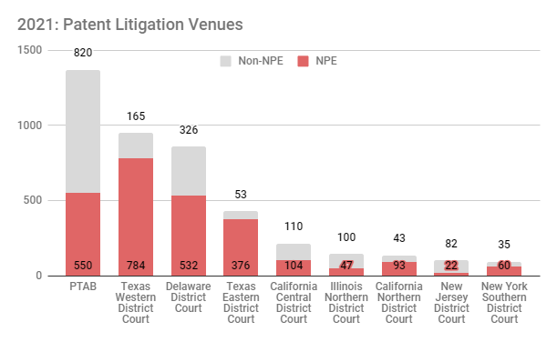제2절 분쟁제도
특허·상표분쟁을 해결하기 위한 수단은 크게 협상과 소송임. 즉 협상을 통해 라이선스 계약 체결 또는 법원에서 소송을 진행하는 것임. 특허 및 상표침해 경고장 수령 후에 협상이 아닌 소송을 통해 분쟁을 해결하기로 결정한 경우, 적극적으로 먼저 특허침해 부존재 또는 특허무효 확인소송(Declaratory Judgment Action)을 제소하거나, 특허권자·상표권자(원고)가 제소한 특허·상표 침해소송에 응소하는 두 가지 방법이 있음
| [표 34] 공적인 기관에 의한 분쟁 해결 절차 | ||||
|---|---|---|---|---|
| 능동적 대응 절차 | 수동적 대응 절차 | |||
|
•특허상표청에 등록 후 재심 또는 당사계 재심 신청 •특허상표청(PTO)에의 결정계 재심사 청구 •연방 지방법원에의 특허·상표 무효·비침해 등 확인소송 제기 |
•특허·상표 침해소송 •가처분절차 •국제무역위원회(U.S. International Trade Commission, ITC) 특허분쟁절차 |
|||
특허 무효화의 수단으로서 연방법원에서의 소송 외에, 그보다 적은 비용과 짧은 기간의 이점이 있는 수단인 특허상표청에서의 재심사(Reexamination)를 들 수 있음
- 특허상표청의 재심사 결과 특허 무효 판정이 내려질 경우에는 특허권자가 청구범위를 보정하여 무효를 피해갈 수 있으며 이 경우에는 상대방은 중용권(Intervening Right)을 주장할 수 있게 됨
- 만일 특허상표청의 재심사과정에서 무효판정을 얻는데 실패한 경우에는 사실상 추후 소송절차에서 특허 무효주장을 하는 것이 어려워짐
- 연방지방법원에 특허 무효 또는 비침해 주장을 통한 확인소송을 먼저 제기하는 것도 적극적인 대응 방법임
등록된 특허에 관한 분쟁은 연방법원에 제소하게 됨. 제소는 각주에 위치한 1심법원인 연방지방법원(Federal District Court)에 하게 됨. 다만, 특허와 달리 상표권의 경우, 미국 특허상표청에 등록된 상표는 연방법원에 제소할 수 있으나 기타 주등록 상표나 미등록 사용 상표는 연방법원이 아닌 관할 주 법원에서도 제소가 가능한 경우가 있음
외국에서 수입된 상품이 미국의 특허나 특허상표청에 등록된 상표를 침해했을 경우 소유권자는 연방법원만이 아니라 동시에 준 사법기관인 국제무역위원회(ITC)에 제소할 수 있음. ITC에 제소되면 모든 판결이 제소한 날로부터 12개월 내에 결정이 나며, 침해라고 판정이 났을 때는 미국 관세청에 즉시 관련된 상품의 수입을 금지시키고, 수입된 상품을 차압할 수 있음. ITC의 판결에 불복한 경우 연방관할 항소법원(CAFC)에 항소할 수 있음
1. 사법적 분쟁해결 제도
미국 특허소송은 미국 사법시스템에 의해 운용되며, 미국법은 영국법과 함께 불문법 체계를 가지는 영미법계에 속하며, 독일, 일본 등과 함께 성문법 체계를 가지는 대륙법계에 속하는 우리나라 사법시스템과는 차이가 큼
- 영미법계는 법(law)과 형평법(equity)으로 구분 운용되어 특허침해소송에 있어서도 손해배상의 구제를 청구하는 영역은 전통적으로 법(law)의 영역에 속하고, 금지청구의 영역은 형평법(equity)에 속함. 이러한 형평법적 영역에는 그 특유의 방어방법, 예컨대 inequitable conduct, unclean hand, laches 등이 인정되므로 이를 유의하여야 함
- 영미법계는 불문법에 근간을 두고 있기 때문에 판례법, 즉 법원이 구체적인 사건에 대해 재판에서 내린 판결이 추후 다른 사건에서도 성문법과 마찬가지로 법원을 구속함
(1) 소 제기 단계
(i) 소장의 제출 및 송달
특허침해소송은 연방지방법원에 소장(complaint)을 접수함으로써 개시되고, 피고에게 송달됨으로써 본격적으로 진행됨. 특허사건은 연방법원의 전속관할이므로 반드시 인적관할(personal jurisdiction)이 인정되는 연방지방법원에 제출하여야 함. 소장은 일반적으로 청구원인을 포함하여야 하는데, 특허사건에서 청구원인은 특허침해임. 연방 민사소송법상 소장은 청구원인을 구체적으로 특정해야 하지만, 모든 사실관계를 구체적으로 설명할 필요는 없음. 다만, 특허침해사건의 소장에는 (1) 관할에 관한 내용, (2) 특허번호의 특정, (3) 침해자의 특정, (4) 청구취지 등에 관한 내용을 간략히 포함하여야 하며, 일반적으로 특허사건의 소장은 10 페이지를 넘지 않는 경우가 많음. 피고가 직접송달을 받거나 수령서에 서명하여 반송한 경우 수령일로부터 20일내에 답변서(Answer)를 제출해야 함이 원칙임
(ii) 소장 수령한 피고의 대응
소장을 수령한 피고는 소장에 포함된 원고측의 주장에 대한 반록을 포함한 답변서를 제출함. 상기한 바와 같이, 소장이 간략하므로 답변서도 간략한 답변으로 제출하나 소장에 주장된 사항에 대해서는 모두 회신 내지 반대 주장을 기재하여야 함. 이와 함께, 특허 비침해, 특허무효, 불공정행위로 인한 특허권 권리행사 금지 등의 피고의 적극적 반론(Affirmative Defense)은 물론, 만일 원고 역시 피고의 특허권을 침해하고 있는 경우에는 반소 역시 반드시 답변서에 기재하여야 함
이러한 답변서와 별도로 피고는 소장에 포함된 내용에 치명적 오류가 있는 경우 소송 각하 신청(Motion to Dismiss)을 할 수 있으며, 소송을 접수한 연방법원이 관할권을 갖고 있지 않거나 다른 법원에서 소송을 진행하는 것이 더욱 타당한 경우에는 관할 이송 신청(Motion to Transfer)을 할 수도 있음. 특히, 미국 연방법원은 관할에 따라 특허권자 승소율이나 사건 진행 속도 등이 크게 차이가 나므로 원고가 자신에게 유리한 법원에 소송을 제기한 경우, 만일 다른 법원으로 이송 신청이 가능한 경우에는 관할 이송신청을 할 수 있음
| [표 35] 소장 송달시 피고가 고려해야 사항 | ||||
|---|---|---|---|---|
| 연번 | 소장 송달시 피고가 고려해야 사항 | |||
| 1 | 최대한 신속히 미국 소송대리인 선임함 | |||
| 2 | 특허권 침해여부에 대한 판단과 이에 따른 여러 조치들을 준비함 | |||
| 3 | 소 제기 이전에 경고장을 먼저 받은 경우에는 확인의 소(Declaratory Judgment Action) 제기할지 여부를 결정함 | |||
| 4 | 변호사로부터 감정서를 받을 수 있는지를 확인함 | |||
| 5 | 소송진행시 관련 정보를 알고 있는 자들을 파악하고 그들과 면담함 | |||
| 6 | 가능한 항변사유를 검토함 | |||
| 7 | 가능한 반소사유를 검토함 | |||
| 8 | 필요시 전문가를 고용함 | |||
| 9 | 인적관할 인정여부를 확인함 | |||
| 10 | 소송전략을 수립함 | |||
(iii) 공판전 협의 (pre-trial conference)
피고의 답변서가 제출되면 증거개시절차에 들어가기 전에 담당판사와 대리인들이 모여 사실심리(공판)전 협의 절차를 가짐. 공판전 협의는 재판을 개시하기 전에 법원의 재량으로 당사자를 회합하게 하여 재판절차를 논의하고, 쟁점을 명확히 하며 당사자간의 합의를 유도하는 비공식 절차임. 대부분의 연방법원은 재판 진행 절차에 대한 해당 법원만의 규칙이 있으므로 각 대리인은 이를 토대로 담당판사와 향후 각 단계의 일정 및 각종 서류를 제출할 기일을 정하게 되는데, 이러한 공판전 협의 절차는 보통 2회 정도 열리게 됨
(2) 증거개시절차 (Discovery)
공판전 증거개시제도는 소송의 당사자 또는 당사자로 되려는 자가 상대방 등에 대하여 소송과 관련된 내용을 미리 수집하여 공평하고 타당한 판결을 내리기 위하여 고안된 제도임. 문서제출요구, 질문서, 증인신문 및 인정요구 등의 절차를 통해 양 당사자들이 상대방으로부터 증거를 수집하게 되는데, 담당판사는 양 당사자에게 증거개시 절차의 기간을 정하게 되고, 증거수집의 범위와 방법은 연방민사소송규칙(Federal Rules of Civil Procedure) 제26조에서 제37조까지 규정에 따라야 함. 일방 당사자가 증거개시절차 규정을 위반한 경우 소송의 패소는 물론 상대방의 소송비용까지도 부담할 수 있으므로 주의를 요함
(i) 문서제출요구 (Request for Production of Documents)
상대방의 문서제출요구가 있는 경우 없는 문서를 만들어 낼 필요는 없으나 소송과 관련이 있는 경우에는 보유하고 있는 어떠한 서류라도 상대방에게 제공하여야 함. 다만, 기밀서류의 경우 소송담당 변호사들만이 보도록 표기하고 제출할 수도 있으며, 소송과 관련 없는 서류는 이를 이유로 제출을 거부할 수 있음
(ii) 질문서 (Interrogatory)
질문서의 경우 법원의 별도 명령이 없는 한, 25개의 질문을 상대방에게 할 수 있는데 소송과 무관한 질문은 이의 제기를 할 수 있고, 애매한 질문은 전제조건을 달고 답변할 수 있음
(iii) 증인심문 (Deposition)
법원의 별도 명령이 없는 한, 당사자나 그 대리인에 의한 증인심문은 하루로 제한되며 7시간을 넘을 수 없음. 증인은 대리인을 동석시킬 수 있는데, 이 경우 비밀 특권(privilege)에 해당하거나 법원의 명령에 위반되거나 또는 상대방을 괴롭히기 위한 질문의 경우만 저지하거나 이의 신청이 가능함
(iv) 자인요구서(Request for Admission)
당사자에 의한 자인은 당해 소송에 한해 구속력을 갖는데, 자인요구서에서 일반적으로 확인하는 내용은 특정의 사실에 관한 서술이나 견해가 올바른지 여부, 특허서류의 내용이 올바른지 여부 등임
(v) 전자적 증거개시절차 (E-Discovery)
2006년 12월 1일 미국 연방 민사소송법은 전자 증거개시 절차를 도입하였음. 전자 증거개시절차란 민사소송에서 “전자적으로 저장된 정보(Electronically Stored Information: ESI)”에 대한 증거개시절차임. 전자 정보는 서면으로 된 정보들과 달리 무형의 형태로 보존된다는 점에서 서면 정보와 차이가 있음. 이러한 전자증거개시제도의 대상이 되는 것으로는 이메일, 메신저를 통해 주고 받은 대화, 문서를 담고 있는 컴퓨터 파일 등임. 당사자나 대리인은 이러한 전자문서를 출력된 서면이나 컴퓨터 파일 그 자체, 음성메시지, pdf 파일 또는 TIFF 이미지를 통하여 검토할 수 있음. 양 당사자는 소송이 예상되는 경우 회사내 직원들의 컴퓨터에 저장된 내용을 전자 증거개시절차 전에 삭제하여서는 안됨
(3) 마크맨 히어링 (Markman Hearing)
역사적인 Markman 판결에서 미국 연방 항소법원은 전원합의체(en banc) 판결로서 특허침해소송에서 특허 청구항의 해석과 관련하여 양 당사자간 쟁점이 있는 경우 이는 법률문제(legal issue)로서 배심원이 아닌 판사에 의해 판단되어야 한다고 판시하였으며, 대법원 또한 이러한 연방법원의 판결을 확인하여 특허 청구항의 해석은 법률문제라고 판시하였음. 이러한 Markman 판결에 따라 제1심 법원의 판사는 쟁점이 되는 청구항의 해석을 위한 별도의 절차를 진행시킬지를 결정하며, 특허청구범위의 해석을 둘러싸고 당사자가 증거 및 전문가 증언 등을 제시하고 그에 따라 특허청구범위의 해석을 확정하는 마크맨 히어링 절차를 거치고 있음
(4) 약식판결 (Summary Judgment)
약식판결은 쟁점이 있는 사안에 대해 상대방의 주장을 모두 사실로 인정하더라도 법률 판단에 의해 약식판결을 신청(Motion for Summary Judgment)한 일방이 승소할 것이라고 판사가 판단하는 경우 사실심리(trial) 없이, 즉 배심원에 의하지 아니하고 판사가 판결을 내리는 것임. 즉, 피고가 특허 비침해나 무효를 이유로 약식판결을 신청하여 받아들여지는 경우 피고가 승소하게 되어 소송이 기각될 것이며, 반대로 원고의 약식판결이 받아들여지는 경우 특허침해가 인정되어 원고가 승소하게 될 것임
법원은 당사자간에 더 이상 사실과 관련된 쟁점이 없어 법률상의 판단만이 남아있다고 판단되면 신청을 접수함. 바꾸어 말하면, 사실 문제에 쟁점이 남아 있는 경우 신청은 기각되고 본안 절차를 진행하게 됨. 약식판결은 소송과정에서의 쟁점 중 일부에 대해서만 신청을 할 수도 있고 공동피고가 있는 경우 이 중 일부 피고에 대해서만 신청할 수도 있음
(5) 공판(Trial) 단계
공판은 제1심법원에서의 심리절차 중 마지막 단계라 할 것이며, 공판전 증거개시절차 및 마크맨 히어링 등을 통해 증거수집 및 특허청구범위에 대한 법률판단이 공판전에 모두 이루어져 있으므로 사안에 따라 며칠에서부터 몇주까지 걸쳐 공판을 진행하는 집중심리제도를 취하고 있음. 이러한 공판에서의 증인신문, 당사자 진술 등이 모두 끝나면 배심원단은 특허침해, 특허무효 등에 대한 평결(Jury Verdict)을 내림. 이러한 배심평결을 토대로 법원은 판결문을 작성하는데, 이 과정에서 평결파기판결신청 (Motion for Judgment Notwithstanding Verdict: JNOV)이 허락되면 평결 내용에 상관없이 판사가 판결문을 작성함. 특히, 배심원이 손해배상산정기준을 무시하고 너무 많은 손해배상액을 인정한 경우 평결파기판결신청이 인정되어 판결을 통해 배심평결의 내용이 수정되는 경우가 있음. 만일 당사자 일방이 판결내용에 불복하는 경우에는 연방관할 항소법원에 항소를 할 수 있는데, 이 경우 원심의 법률적 판단만을 심리하는 것이 원칙임
제3절 수출입단계(세관) 분쟁해결 제도
1. 개요
외국에서 제조된 상표권, 특허권 및 저작권 위조품이 미국 국내로 유입되는 것을 막는 역할을 하는 것은 우리나라 관세청에 해당하는 미국 세관보호국(U.S. Customs andBorder Protection - 이하 “CBP” 또는 “세관보호국”이라 함)임
세관보호국에서는 미국에 상표권, 특허권 또는 저작권을 소유하고 있는 권리자의 허락 없이 해당 권리를 침해하는 제품을 해외에서 제조하여 미국 국내로 수입되는 것을 금지하고 이를 압류할 수도 있음. 특히, 상표권 및 저작권의 경우 이를 세관보호국에 등록한 경우에는 그 위조품을 세관이나 국경 등에서 압류함. 특허권 침해물품의 경우 세관보호국에서 수입금지처분을 할 수는 없으나, 이미 살펴본 바와 같이 미국연방법 제337조에 의해 미국 국제무역위원회에서 수입배제명령 또는 중지명령이 있는 경우 세관보호국이 압류조치를 행함
다만, 상표권의 경우 연방 등록된 상표와 동일한 상표, 소위 위조 상표(counterfeit mark)를 부착한 상품의 경우에는 세관보호국에 등록되지 않는 상표라 할지라도 이를 압류하여 폐기하는데 비해, 위조 상표는 아니지만 연방등록상표와 오인, 혼동을 야기할 수 있는 정도의 유사상표의 경우에는 연방등록상표권자가 세관보호국에 자신의 상표를 등록한 경우에만 압류 대상이 됨
저작권의 경우에도 미국 연방저작권사무소에 등록된 저작물의 해적판의 경우에는 세관보호국에 등록되어 있지 않더라도 이를 압류하여 폐기할 수 있으나, 이를 모방한 유사저작물의 경우에는 저작권사무소에 등록뿐 아니라 세관보호국에도 등록된 저작물과 유사한 저작물에 대해서만 압류의 대상이 됨
2. 유관기관
특허권 침해품의 수입을 막을 수 있는 것은 이미 살펴본 바와 같이 ITC에 제소하여야 가능함. 그러나, 판단이 비교적 용이한 상표권이나 저작권의 경우 국토보안부(Department of Homeland Security) 산하의 세관보호국에서 그 수입배제를 담당하여 필요한 경우 압류하여 폐기하기도 함. 또한, 세관보호국에서 위조품을 파악할 수 있도록 자신의 상표권이나 저작권을 미리 등록할 수 있는데, 온라인 등록 시스템 역시 세관보호국 홈페이지를 통해 제공하고 있음
3. 세관보호 절차
연방등록상표의 위조 상표를 부착한 상품의 경우는 세관보호국이 특허상표청에 등록된 상표 데이터베이스로부터 이를 파악하여 압류절차를 진행할 수 있으나, 위조 상표는 아니지만 연방등록상표와 유사하여 오인, 혼동의 우려가 있는 상표의 수입을 막기 위해서는 상표권자가 자신의 연방등록상표를 세관보호국에 등록하여야 함. 저작권의 경우도 위에서 설명한 바와 같이 세관보호국에 등록하여야만 해적판 이외의 모방 저작물을 세관보호국에서 압류할 수 있음. 이러한 등록은 세관보호국 홈페이지(www.cbp.gov)를 통해 쉽게 할 수 있는데, 홈페이지 상에 e-RECORDATION이라고 표시된 탭을 클릭 후 필수입력정보를 입력하면 손쉽게 등록할 수 있음.(https://apps.cbp.gov/e-recordations/) 세관등록의 장점은 등록상표의 실사용상표 혹은 저작물 중 중요부분에 대한 이미지를 직접 업로드할 수 있어서 추후 세관보호국 담당자들이 위조 상표 혹은 해적 저작물을 좀 더 용이하게 식별할 수 있음은 물론, 절차 역시 매우 간단하다는 장점이 있음
(1) 상표권
(가) 위조 상표
미국 상표법 15 U.S.C. 1127에 의하면, 위조 상표란 연방등록된 상표와 동일하거나 실질적으로 거의 차이를 식별할 수 없을 정도로 동일한 상표를 말하는데, 이러한 연방등록상표의 위조 상표를 부착한 상품은 관세법 제525(e)에 의해 상표권자의 동의 없이도 세관보호국이 압류하고 몰수하여 수입될 수 없도록 하고 있음. 연방 등록된 상표의 위조 상표품의 경우 세관보호국에 등록되어 있지 않더라도 압류 및 몰수 절차를 진행할 수 있음. 위조 상표품의 몰수 이후에는 이들 상품을 폐기하여야 하는 것이 원칙이며, 이들 상품이 건강이나 위생에 문제가 없는 경우에는 상표권자의 동의하에 해당 위조 상표를 떼어낸 후 (i) 관련부처로 전달하거나 (ii) 자선단체에 기부하거나 혹은 (iii) 경매를 통해 일반 공중에게 판매할 수 있음
(나) 복제 또는 모방상표
미국 상표법 15 U.S.C. 1124에 의하면, 제3자의 등록된 상표 또는 상호를 복제하거나 이와 극히 유사하게 모방한 상표가 수요자들에게 오인, 혼동을 야기할 가능성이 높은 상표를 복제 또는 모방상표라고 규정하고 있음. 이러한 모방상표를 부착한 상품은 통관이 보류되고 압류될 수도 있음. 세관보호국은 이러한 모방상표를 부착한 상품은 세관 심사일로부터 30일동안 통관이 보류될 수 있도록 규정하고 있으며, 이 기간 안에 모방상표라고 인정이 되면 해당 상표를 제거하거나 혹은 상표권자의 동의가 있는 경우에는 수입을 허용함. 만일, 30일 안에 모방상표를 제거하거나 상표권자의 동의를 얻지 못하는 경우에는 해당 상품은 압류됨
(2) 저작권
세관보호국에서는 저작권사무소에 등록된 저작물과 동일하거나 실질적으로 유사한 복제물이 저작권자의 동의 없이 생산되어 수입되는 것을 “해적판”이라고 규정짓고, 이들 해적판은 압류하도록 하고 있음. 다만, 저작물의 해적판인지 여부의 판단은 위조 상표 여부의 판단보다는 더 복잡한 경우가 많으므로 세관보호국에서는 (1) 명백한 해적판이거나 (2) 해적판일 가능성이 높은 복제물을 나누어서 처리함
(가) 명백한 해적판 (Clearly Piratical)
연방저작권 사무소에 등록된 저작물의 해적판인 경우에는 저작권법 17 U.S.C. 602 위반으로 19 U.S.C. 1595(a)(2)(C)에 근거해 세관보호소에 등록여부와 상관없이 압류절차를 진행함. 다만, 여행객의 개인 수화물에 포함된 단일 복제물의 경우 설사 저작권 침해물품이라 할지라도 판매할 목적이 아니라면 세관보호국에서의 압류대상의 예외로 보고 있음
(나) 해적판일 가능성이 높은 복제물 (Possibly Piratical)
제3자 저작물의 명백한 해적판은 아니지만 해적판으로 의심할 만한 가능성이 높은 복제물의 경우 세관보호국에 해당 저작권이 등록된 경우에 한하여 심사절차를 진행함. 심사결과 해적판으로 인정되는 경우 저작권법 17 U.S.C. 602 위반으로 19 U.S.C. 1595(a)(2)(C)에 근거해 압류절차가 진행됨은 위의 명백한 해적판의 경우와 동일함
위의 상표권 및 저작권 침해물품이라는 이유로 압류통지를 받은 수입업자는 다음 4가지 대응조치 중 하나를 취할 수 있음
(1) 19 U.S.C. 1607에 근거한 행정몰수절차를 신청
(2) 보증금을 공탁하고 세관보호국으로 하여금 법원 소송절차를 진행하도록 신청
(3) 19 U.S.C. 1618조에 근거해 세관보호국의 통관감독(Port Director)에게 행정구제를 신청
(4) 19 U.S.C. 1617조에 근거해 세관보호국장에게 범칙금 및 몰수 규정에 근거한 제안을 함
4. 비용
세관보호국에 등록하는 관납료는 상표 1건 혹은 저작물 1건당 190불임. 이에 반해, 위조품이나 해적저작물을 심사, 압류 및 폐기하는 데는 상표권자 또는 저작권자는 별도의 비용을 부담하지 않음
3. 조정중재 등 대체적 분쟁해결(ADR) 제도
법률분쟁을 법원 소송절차의 판결에 의하지 아니하고, 즉 재판외 해결하는 방법에는 (i) 재판상 화해, (ii) 조정제도 및 (iii) 중재제도가 있음 대부분의 특허분쟁은 협상에 의해 양 당사자간 협상에 의해 종료됨. 그러나 서로 분쟁 중에 있는 양 당사자간에 협상을 하는 것은 어느 일방이 일방적으로 유리하거나 불리하게 되지 않는 경우에는 쉽지 않은 경우가 대부분임. 따라서, 제3자가 개입되어 양 당사자의 협상을 원활하게 도와줄 필요가 있는데, 이때 사용할 수 있는 절차가 바로 (i) 재판상 화해, (ii) 조정제도 및 (iii) 중재제도임
특히 소송비용이 많이 드는 미국에서는 특허소송이 제기되더라도 1심 공판까지 가는 경우는 전체 10% 미만이며, 나머지는 소송 계속 중에 양 당사자간 합의를 하거나 혹은 공판 전 간이판결 등으로 소송이 종료되는 경우임. 또한, 소송이 2심 또는 대법원까지 진행되어 종료되더라도 소송에서 결정되는 손해배상액은 과거분이므로 추후 해당 특허기술을 계속해서 사용하기 위해서는 협상이 필요함
| [표 36] 재판외 분쟁해결절차의 장점 | |
|
(1) 소송보다 절차진행이 신속하고 경제적이어서 시간과 비용을 절약할 수 있음 (2) 절차의 진행이 법에 묶이지 아니하여 탄력적이며, 특히 엄격한 소송절차법칙이 적용되지 않음 (3) 절차진행이 비공개적이기 때문에 기업의 비밀이나, 개인의 이익이 잘 보호됨 (4) 법원 판결에 비해 양 당사자가 법률쟁점에 관한 법률 이외의 다른 경제적, 영업적 이익을 고려하여 모두에게 좀 더 유리한 방향으로 결정될 수 있도록 탄력적인 기준을 적용함 |
|
재판상 화해는 법원이 선임하는 특별행정판사가 관여하여 양 당사자간의 합의에 의해 화해로서 소송을 종료시킴. 일반적으로 소송담당판사가 제안하거나 양 당사자의 신청에 의해 재판상 화해절차가 진행됨
이 밖에도 당사자간 화해를 권장하고 소송을 피하기 위해 연방민사소송규칙 제68조에서는 “판결의 제안(Offer of Judgment)” 규정을 두고 있음. 판결의 제안 규정은 피고가 원고에게 소정의 금액을 포함한 판결을 제안하고 원고가 이를 제안일로부터 14일 이내에 수락 여부를 결정할 수 있도록 하고 있음. 만일, 원고가 판결의 제안을 수락하지 않고 재판을 진행하여 판결의 제안에서 제시된 내용보다 더 나은 내용으로 판결을 받지 못하는 경우에는 판결의 제안일 이후 피고가 부담한 소송 진행 비용을 원고가 부담해야 한다는 규정임
조정은 분쟁의 해결을 위해 판사 및 특별한 지식과 경험이 있는 자를 조정인으로 두고, 법원을 대신하여 양 당사자의 주장을 서로 양보하게 하고 필요한 경우 자신의 중재의견을 제안하여 당사자를 설득하고 그 합의로써 분쟁을 원만한 해결로 이끄는 절차임
- 조정을 하게 되는 경로는 1) 당사자간의 계약서에 포함된 조정조항(Mediation Clause)에 의해 조정이 미리 합의된 경우, 2) 분쟁 발생이후에 당사자간 자발적인 합의(Voluntary Agreement)된 경우, 및 3) 법원의 명령 또는 권고(Court-ordered or Referral)에 의한 경우의 3가지가 대표적임
중재는 분쟁 당사자간의 합의에 따라 제3자(중재인)을 선정하여 중재인의 판정에 복종함으로서 분쟁을 최종적으로 해결하는 절차임. 중재는 재판에 의해 분쟁을 해결하지 않더라도 당사자를 구속하기 때문에 당사자가 중재절차에 따를 것을 합의한 경우에 가능함
- 다만, 특허사건의 경우 특허의 유효성이나 침해문제는 전문적이고 복잡한 판단이 필수적이므로 이러한 절차 없이 제3의 중재인이 판사 역할을 대신하여 중재결정을 내리는 중재제도는 상대적으로 중재절차에 부적합한 것이며 재판상 화해나 중재제도를 이용하여 당사자간에 탄력적인 조건으로 협상을 하는 것을 선호하는 편이며, 상표침해사건에서는 재판상 화해, 조정, 중재제도 모두 빈번히 이용되고 있음
조정인이나 중재인은 일반적으로 양 당사자간의 합의에 의해 선임함. 조정인이나 중재인의 경우 특정 분야, 예컨대 특허사건 또는 상표사건에 전문성을 가진 조정인이나 중재인들이 있으며, 각 지역별로 활동중에 있는 조정인 또는 중재인 협회를 통해 소속 조정인이나 중재인을 소개받을 수도 있음. 이 밖에도 American Arbitration Association(www.adr.org) (이하 “AAA”), National Arbitration Forum (www.prochoice.org) (이하 “NAF”), JAMS (www.jamsadr.com)와 같이 전국적 규모의 조정인 및 중재인 협회도 있으며, AAA가 설립한 International Centre for Dispute Resolution (ICDR)의 경우 국제간 분쟁 조정이나 중재를 전문으로 협회도 있음
특허사건에 있어서 법원의 명경이나 권고에 의한 조정은 분쟁의 해결을 위하여 법원에 의해 지정된 특별행정판사(magistrate judge) 또는 법원에 의해 추천된 조정자(mediator) 자격이 있는 변호사 등에 의해 진행되는 경우가 대부분임. 이와 반대로, 당사자간 계약조항에 의한 경우나 사후 합의에 의한 경우에는 조정자(mediator)를 당사자 합의에 의해 선택하게 되는데, 조정자를 선택할 때에는 다음과 같은 체크리스트 상의 내용을 확인하여야 함
| [표 37] 조정자 선택 기준 | ||||
|---|---|---|---|---|
| 연번 | 조정자(mediator) 선택 기준 체크리스트 | 확인 | ||
| 1 | 특허분쟁이 해결되지 않고 있는 이유들을 파악할 것 | |||
| 2 | 조정절차를 진행할 지역은 어디로 할 것 | |||
| 3 | 조정자 풀 및 가능한 조정자 리스트는 확인할 것 | |||
| 4 | 선택하려는 조정자의 일반적 배경정보를 확인할 것 | |||
| 5 | 조정자의 경험, 추천정보를 확인할 것 | |||
| 6 | 조정자와 조정하는 방법 및 스타일에 관하여 문의할 것 | |||
| 7 | 조정자에게 특허기술 또는 특허사건에 대한 전문성이 필요한지 확인할 것 | |||
| 8 | 조정자가 이번 사건과 관련하여 중립성이 보장되는지 확인할 것 | |||
| 9 | 조정자의 조정비용을 확인 | |||
| 10 | 조정자가 조정절차 지역 및 시간에 가능한지 확인할 것 | |||
일반적으로, 소송대리인들은 자신들이 직접 또는 간접 경험한 조정자들이 많이 있으므로 소송대리인과의 협의를 통해 조정자를 선택하는 것도 좋은 방법임
조정절차는 조정인이 제안하는 절차에 대해 양 당사자가 합의함으로써 결정되는데, 아래 그림에서 보이는 흐름도가 보편적인 조정절차임
- 조정이 성립되어 조정조서가 작성되면 성립한 화해의 효력은 화해(settlement)와 같고, 만약 조정조서의 내용으로 합의에 의한 소취하가 포함되는 경우, 법원은 이를 받아들여 소를 취하시킴
조정은 법률에 의한 것이 아니라 양 당사자간 합의에 의해 정해진 절차에 의해 진행되므로 정해진 절차는 없음. 즉, 양 당사자간의 협상에 절차의 원활한 진행을 위해 심판 또는 협상진행 사회자를 둔다고 이해하면 될 것임. 다만, 양 당사자 합의에 의해 특정 단체, 예컨대 American Arbitration Association 등의 조정절차를 선택하는 경우 해당 기관에서 만든 표준 절차를 따르게 되지만 구체적인 진행은 개별 조정자에 따라 다소 차이가 있을 수 있음. 특허소송사건에 있어 효율적인 조정을 위해서는 다음과 같은 단계를 취하는 것이 바람직함
위와 같은 단계를 거쳐 조정을 진행하는 경우, 실제 조정절차의 진행은 일반적으로 다음과 같은 절차를 따름
(1) Opening Joint Session
조정절차의 시작은 양당사자측 참가 인원과 조정자가 모두 모여서 조정자로부터 조정절차의 진행에 관한 설명과 주의사항을 듣고, 사건에 대한 쟁점을 정리하는 Opening Joint Session으로 함. 다만, 조정자 또는 사건의 상황에 따라서 이러한 Opening Joint Session이 생략되고, 조정자가 서로 다른 방에 있는 각 당사자들과 별개로 조정절차의 진행에 관한 설명과 주의사항을 들을 수도 있음. 또한, 조정자에 따라서는 각 당사자로 하여금 주요 쟁점에 대한 당사자의 모두 진술을 모두가 모인 상태에서 할 수 있는 기회를 주기도 함. 이러한 Opening Joint Session의 가장 중요한 역할은 각 당사자와 조정자 사이에 조정진행에 관한 신뢰와 적극적 자세 등을 확인할 수 있도록 하는 것임
(2) 개별 협의 세션
Opening Joint Session이 끝나면 양 당사자는 서로 다른 방에 분리 수용되어 조정자가 양 당사자와의 개별 협의를 반복하게 됨. 조정자의 역할은 각 당사자의 불리한 점들을 인식시킴과 함께 다른 당사자의 제안사항을 상대방 당사자에게 전달하여 서로의 이견을 좁히게 도움으로써 합의에 이를 수 있도록 돕는 것임. 각 당사자는 자신들에게 불리한 점들을 상대방 당사자에게 듣는 것보다 중립적 위치에 있는 조정자로부터 들음으로써 좀 더 객관적 입장에서 자신들의 유, 불리를 생각해 보고 자신들의 제안내용을 수정할 수 있음. 이러한 조정 진행은 조정자의 경험이나 특허사건에 대한 이해도 및 업무스타일에 따라 차이가 있음
(3) 합의사항 확인절차 및 종료
조정절차 진행결과 양당사자가 합의에 이른 경우에는 양 당사자는 조정자 입회하에 합의된 내용에 대해 서로 문서로 간략히 정리한 후 추후 합의된 내용에 따라 화해계약서를 작성하여 교환할 것을 약속하고 조정절차를 종료함
- 조정절차에서 합의가 된 것이라도 추후 화해계약서에 서명하기 전까지는 양당사자를 구속하는 효력은 없으므로 합의된 내용을 파기 가능
- 조정절차 진행결과 양당사자가 합의에 이르지 못한 경우에는 조정절차를 종료시킴. 이 경우, 조정자는 조정절차에 의해 양당사자의 합의가 없었음을 확인한 후, 절차를 산회
일반적으로 조정절차는 하루 동안 진행되는 경우가 많지만 사안이 복잡한 경우에는 이틀 동안 진행되는 경우도 있음
조정이나 중재는 일반적으로 1-2일 정도 소요되는 것이 일반적임. 특히, 조정의 경우 되도록 하루 동안 끝내는 것이 일반적이지만 사안이 복잡한 경우 2-3일 소요되는 경우도 있고, 혹은 하루에 합의가 도출되지 않는 경우 다시 일정을 잡아서 2차 조정을 하는 경우도 있으며, 혹은 하루 동안에 좁혀진 협상안을 가지고 양 당사자가 조정인이나 중재인 없이 협의를 계속 진행하여 화해에 이르기도 함
중재인이나 조정인의 비용은 해당 중재인이나 조정인의 경력 등에 따라 차이가 있으며, 정해진 공인 수수료 체계는 없음. 다만, 비용은 시간당으로 부과하거나 혹은 일단위로 부과하며, 대략 다음과 같은 범위의 비용이 일반적임
| [표 38] 중재인 및 조정인 수수료 | ||||
|---|---|---|---|---|
| 시간당 수수료 | 일 수수료 | |||
| 시간당 $200-$1000 | $1,500-$8,000/일 | |||
4. ITC절차에 의한 보호
미국 연방법 제1337조(19 U.S.C. § 1337, 이하 “제1337조” 혹은 “Section 337” 혹은 “제337조”라고도 함)는 상품 수입시 불공정 경쟁 및 불공정행위에 대해 미국 국제무역위원회(U.S. International Trade Commission, 이하 “ITC”라 함)에 준사법적 조사권을 부여함. 관세법 제337조는 불공정 행위에 의한 수입으로 미국 산업에 악영향을 미치는 경우에 이것을 배제하려고 하는 규정임. 일반적으로 교부된 지식재산권을 제품의 수입을 방지하기 위해 사용되며, 특허 기타의 지적재산권, 부정경쟁행위, 독점금지법 위반행위는 물론이고 최근에는 영업비밀 침해행위도 불공정행위로서 337조의 위반행위가 됨
ITC가 제337조 위반이라 판정하면 일반적으로 수입배제명령과 중지명령을 발동하고, 일정한 경우 압류조치를 행함. ITC는 제337조 조사를 수행한 후 대통령에게 결정내용을 통지함. 대통령은 ITC의 결정통지 수령 후 60일 내에 ‘정책적 판단’에 근거하여 거부권을 행사할 수 있음. 대통령이 기간 내에 거부권을 행사하지 않거나 결정을 추인하는 경우 ITC의 결정은 최종적인 효력을 가짐. 동 결정은 법원의 제1심 판결과 같이 취급되어 연방관할 항소법원(CAFC)의 사법심사 대상이 됨
ITC 청원인은 제1337조 위반을 증명하기 위해 (i) 불공정경쟁이나 불공정행위, (ii) 침해 혐의 제품의 미국 내 수입이나 수입을 위한 판매, (iii) 침해 혐의 제품과 연관된 국내 산업의 존재, (iv) 불공정으로 추정되는 행위로 인한 손해를 증명해야 함. 손해의 증명과 관련해 등록된 지식재산권(특허권, 상표권 또는 저작권(반도체칩 배치설계권 포함))의 경우 수입제품의 지식재산권 침해만을 증명해도 손해가 추정됨. 국내 산업은 (i) 공장 및 장비에서 중요 투자, (ii) 노동이나 자본의 중요한 채용, 특허받은 기술을 이용하는데 있어 실질적인 투자를 의미함. 관세법 337조의 2가지 요건을 자세히 살펴보면 다음과 같음
(1) 불공정 행위
관세법 337조는 불공정 행위이 대상을 명시하지 않고 있으나, 실무상 특허권, 상표권, 저작권 등의 지적재산권 침해, 부정경쟁행위, 독점금지법 위반, 영업비밀보호법 위반행위로 크게 나눌 수 있음. 이 가운데 가장 큰 비중을 차지하는 것이 특허권 침해임
(2) 미국내 산업의 손해
이 요건을 만족시키기 위해서는 미국 내에 그 산업이 존재해야 하고 미국내 산업의 실질적 손해가 있어야 하며, 불공정 행위와 그 손해 사이에 인과관계가 있어야 함
- 국내산업을 입증하는 방법으로 대표적인 것은 특허 실시권자의 미국 내 영업활동, 상당한 공장 및 설비투자, 상당한 자본 투여 및 고용 또는 지적재산권, 연구개발, 라이센싱을 위한 실질적인 투자를 입증하는 것임. 단순한 판매점을 운영하는 것은 국내산업 요건이 되지 못함
ITC(The U.S. International Trade Commission: 미국 무역위원회)란 미국 관세법 337조에 의한 수입금지 신청을 받아 결정하는 곳임. ITC 조사절차는 그 이름 그대로 행정부 소속의 국제무역위원회(International Trade Commission)에서 진행되며, 행정 절차법이 적용된다는 점에서 사법부에서 이루어지는 소송과 차이가 있음
- ITC 조사절차는 6명의 행정판사(Administrative Law Judge: ALJ) 중 1인에 의해 진행되고, 행정판사가 가결정을 한 후, 6인의 Commissioner로 구성된 위원회에서 최종결정을 함
- ITC 수입배제명령이 최종 확정되면 미국 국토 보안부(Home Land Security) 산하의 미국 세관(Customs and Border Protection)에서 침해품에 대한 수입배제명령을 집행하게 됨
ITC 홈페이지(https://www.usitc.gov/)에는 해당 절차에 대한 소개와 현재 진행 중인 ITC 조사절차 및 최근 결정된 ITC 결정문 등을 확인할 수 있음
증거조사와 심문절차를 거쳐 연방관할 항소법원(CAFC)에의 항소가 인정되는 준사법적 절차임
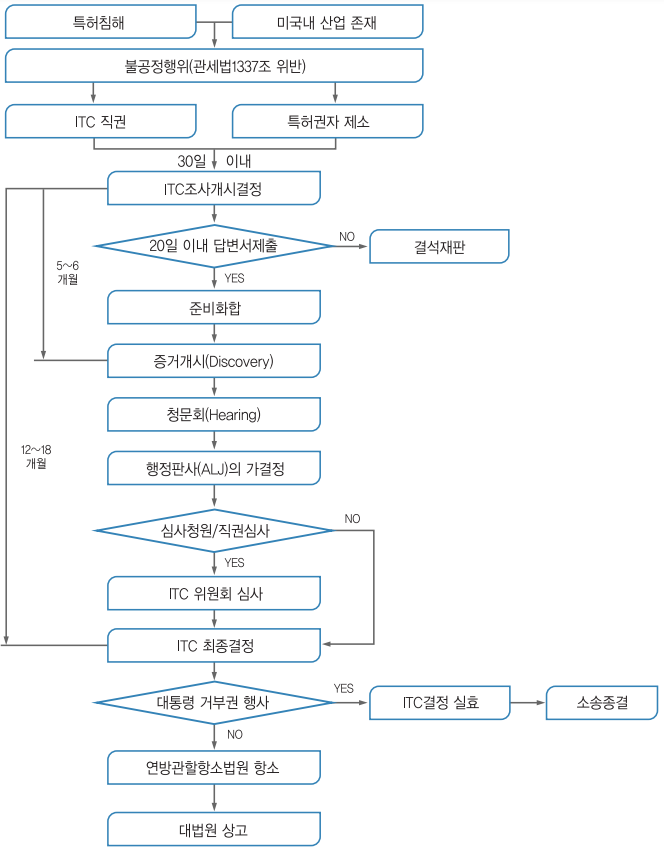(1) 제소장 제출
제소자(Complainant)는 제소 전에 ITC와 사전 상담을 할 수 있으며, 일정한 형식에 맞춘 소장을 제출해야 함. 제소장에는 다음과 같은 내용이 포함됨
| [표 38] ITC 제소장 | |
|
(1) 당사자 관계 (2) 부정경쟁과 부정행위를 적시하는 내용 (3) 본 건과 관련하여 타 법원에 사건 계류 여부 (4) 관련 미국 국내 산업의 입증 -특허권자는 특허권자 본인 혹은 실시권자의 미국 내 영업활동, 상당한 공장 및 설비투자, 상당한 자본 투여 및 고용 및 지적재산권, 연구개발, 라이선싱을 위한 실질적인 투자를 하고 있음을 보임으로써 국내산업 존재를 입증할 수 있음 (5) 본건이 제소자의 영업에 미치는 영향 (6) 특허침해내용 (7) 구제 요청사항 |
|
(2) 조사개시 결정
불공정수입 조사실(Office of Unfair Import Investigations, OUII)의 ITC 전담변호사는 제소 전에 정식 준수절차에 맞는지 소장을 검토함. ITC의 제1337조에 근거한 조사절차는 제소장의 접수 또는 ITC의 직권으로 개시됨. 제소장 접수 후 30일 이내에 조사개시 여부를 결정해야 함. 불공정수입 조사실과 일반 자문실(Office of General Counsel)은 조사를 개시할지에 대해 위원회에 권고함. 만약 위원회가 조사하기로 결정한다면 그 문제는 행정판사에게 이관됨. 불공정수입 조사실의 전담 변호사 역시 조사에 대한 공식적인 당사자가 됨
- ITC는 소장 사본을 만들어 제소된 침해자 및 그 침해자의 고국 대사관에 조사 실시를 통지함. 관보에 조사개시 통지를 공표함으로써 본격적인 절차가 개시되는데, ITC 홈페이지를 통해 이를 확인할 수 있음
(3) 답변서의 제출
제소장과 조사개시 통지는 피제소인에게 발송되며 피제소인은 20일 이내에 답변서를 제출하여야 함(잠정적인 구제 청구가 소장과 더불어 제출되었다면, 10일로 단축될 수 있음). 답변서는 다음 특정 정보를 담고 있어야 함
| [표 39] 답변서(Response) | |
|
(1) 제소사항 각각에 대해서 구체적으로 인정 또는 부인 (2) 각 항변을 뒷받침하는 사실 진술 (3) 제소된 제품의 수입량 및 가액에 대한 통계적인 정보 (4) 제소된 제품의 관세율 표(Harmonized Tariff Schedule) 품목 수 (5) 제소된 제품의 생산능력에 대한 침해 혐의자의 진술 (6) 제소된 침해자의 활동에 대한 미국 시장의 상대적 중요성 (7) 제소된 제품의 공급자 이름 및 주소 |
|
이러한 답변서를 소정 형식에 따라 작성·제출하지 못한 경우에는 궐석재판(Default Judgement)에 따라 제소장에 주장된 사실관계가 진실한 것으로 추정되어 불리한 판결을 받을 수 있음
(4) 조사일정의 결정
조사개시 이후 45일 이내에 행정판사는 조사 완료의 목표일을 결정해야 하며, 조사기간은 보통 1년에서 18개월이 소요됨. 12개월 이내에 조사를 완료해야 한다는 법적인 규정은 삭제되었으나, ITC는 대체로 조속한 결정 정책을 준수하는 편임. 연방법원에서의 민사소송과 달리 기간 연장은 거의 허용되지 않음
(5) 심문절차 전 회의(Pre-Hearing Conference)
쟁점의 단순화를 위한 심문절차 전 회의를 개최할 수 있고, 일반적으로 당사자 및 행정판사와의 2번의 “심문절차 전 회의”가 열림. 조사가 행정판사에게 이관된 후 15일에서 30일 내에 1차 심문절차 전 회의가 개최되고, 심리가 열리기 전에 2차 심문절차 전 회의가 개최됨. 심문절차 전 회의는 증거조사 및 심리를 위한 근거 규정을 확립함
(6) 증거개시(Discovery)
ITC 증거개시 절차는 연방지방법원의 증거개시절차와 동일함. 증거조사는 구두 또는 문서에 의한 증언녹취, 질문서, 문서제출 및 출입요청, 사실관계의 진정성 인정의 요청, 소환장(subpoena) 등의 방법으로 구성됨. 전체 증거개시절차 과정은 (12개월의 조사를 위한) 약 5개월 또는 (18개월 조사를 위한) 10개월 이내에 이루어져야 함. ITC는 기밀 또는 민감한 정보를 보호하기 위해 비밀 보호명령을 내릴 수 있음
- 조사를 개시할지에 관해 위원회의 결정을 기다리는 답변인은 기다리는 동안 증거조사를 준비해야 함. 제소인은 수개월간 ITC절차를 준비해왔고 시작부터 증거조사를 실시하려고 하며, 증거조사는 집중적으로 빨리 진행되기 때문임
(7) 심문절차(Hearing)
심문절차는 법원의 공판에 해당하는 핵심적인 절차임. 다만, 배심원이 없고, 전담변호사(staff attorney)가 참석하는 것이 다름. 모든 심문절차는 문서로 기록되며 보호명령의 적용을 받는 비밀정보는 비공개로 처리됨
(가) 영구 수입배제 명령 심문절차(Permanent Exclusion Order Hearing)
심문은 행정판사 앞에서 초기 결정일 이전 3개월에 이루어짐. 어떤 판사도 관여하지 않으므로 전문증거와 같은 쟁점은 보다 관대하게 다루어짐에도 불구하고 연방 증거규칙은 일반적으로 적용됨. 심문절차 전 회의 개요 및 증거물은 심문절차 직전에 제출됨
- 심문절차는 일주일간 행해지고 공판 일자는 10일 이상 지속될 수 있음
- 몇몇 행정판사는 증인이 심문절차 전 회의 진술서로 심리에서의 직접 증언을 제출하기를 더 선호함. 이 경우 심리에서의 증언은 교차 심문과 재직접 심문으로 구성됨
당사자들은 심문절차 이후 개요서 및 사실관계·법적 결론 확인서를 제출해야 함. 최종 논쟁은 심문절차 이후 개요서 및 확인서가 제출된 이후 이루어짐
(나) 잠정 수입배제 명령 심문절차(Temporary Exclusion Order Hearing)
잠정 수입배제 명령 심문절차는 지방법원의 가처분과 동일한 근거로 활용될 수 있음. 영구 수입배제 명령 심문절차와 동일한 방식으로 이루어짐. 잠정 수입배제 명령 심문절차는 조사 개시일부터 70일(좀더 복잡한 사건의 경우 120일) 이내 완료되어야 함. 잠정 수입배제 명령 심문절차의 증거조사(증언녹취 및 서류제출 포함)는 조속한 시일 내에 이루어짐
(8) 행정판사(ALJ)의 가결정
조사완료 목표일이 조사개시 후 15개월 미만일 경우는 목표일 3개월 전, 15개월 이상일 경우는 목표일 4개월 전에, 행정판사는 가결정을 내림. 가결정이 그대로 최종결정으로 확정되는 경우가 많아 실무적으로 가장 중요한 결정임. 가결정에는 사건 처분방향, 즉 수입배제명령과 중지명령에 대한 행정판사의 권고안이 첨부될 수 있음
(가) 수입배제명령
제한적 수입배제명령은 피고의 특정제품만을 수입 배제시키며, 일반적 수입배제명령은 피고에 국한되지 않고 불특정 제3자가 생산하는 침해제품 전부를 수입 배제시킬 수 있음
(나) 중지명령
중지명령은 피고만을 상대로 내려지며, 이미 수입된 침해품의 판매, 유통을 막는 조치임. 수입배제명령과 병행하여 내려지는 경우가 많음. 본 명령의 중지 대상은 수입, 판매, 영업, 배송, 침해품의 광고에 이르기까지 광범위하게 내려짐
(9) 재심청구
재심청구를 하려면 통상 가결정 송달일로부터 10일 이내에 위원회에 재심청구를 하여야 함. 재심청구가 있는 경우 가결정 송달일로부터 45일 이내에 재심사를 할 것인지를 결정하여야 하는데, 위원 중 한사람이라도 재심사에 찬성하는 경우 위원회는 재심사를 하여야 함
(10) 최종결정
ITC의 위원회는 행정판사의 잠정 결정(영구·잠정 수입배제 명령에 대한 잠정결정 포함) 을 검토함. 당사자들이 잠정결정에 대해 ITC에 심사청원을 하지 않거나 ITC가 직권으로 심사를 명령하지 않으면 ITC의 결정으로 확정됨. 잠정결정의 심사청원은 결정 송달 후 10일(또는 5일) 이내에 접수되어야 하며, 45일(또는 30일) 이내에는 청원의 수용여부가 결정됨. ITC의 6인 위원의 투표 결과 최소 1인의 위원이 잠정결정에 대해 실수 또는 절차남용이 있었거나 검토해야 할 정책적 문제가 있다고 투표할 경우 심사청원이 수용됨. ITC는 행정판사(ALJ)의 잠정결정을 추인, 수정, 파기, 취소 또는 환송할 수 있음
(11) 재심사 청원
당사자는 ITC의 결정 송달 후 14일 이내에 동 결정의 재심사를 청원할 수 있음. 재심사 청원은 ITC의 결정 또는 동 결정으로 명령된 조치에 의해서 새롭게 제기된 문제로서 청원인이 의견을 제출할 기회를 갖지 못한 경우로 제한됨. 재심사청원이 송달된 후 5일 내에 동 청원을 반대하는 당사자는 답변서를 제출해야 하며, 동 청원은 ITC의 명령이 없는 한 ITC의 최종결정 절차를 정지시키지 못함
(12) 잠정 구제조치(Temporary Relief)
제1337조 절차의 진행 중 동 법규정의 위반이 있었다고 믿을 만한 이유가 있는 경우 잠정구제조치가 허용될 수 있음. 제소인이 ITC에 잠정 구제조치를 신청하면 ITC는 연방관할 항소법원(CAFC)이 하위법원의 가처분의 추인에 적용하는 기준을 그대로 적용함
- ITC는 잠정적 수입배제명령의 발동조건으로서 제소인이 일정액을 담보(Bond)로 공탁하도록 요구할 수 있음. 반대로 잠정적 수입배제 명령 대신, ITC는 제소인의 청원이 최종적으로 인정되기 전까지 피제소인으로 하여금 제소인이 주장한 피해를 보호하기에 충분한 정도의 담보를 공탁하도록 요구할 수 있음
잠정 구제조치 단계에서도 증거수집, 강제절차, 심문절차는 보장됨. 행정판사(ALJ)는 조사개시 공고가 관보에 공표된 후 70일 이내에 잠정구제조치의 허용 여부를 결정하는 잠정결정을 발표해야 함. 사안이 더 복잡한 경우에는 120일의 기간이 허용됨
(13) 대통령의 거부권
ITC가 제1337조의 위반 결정을 내린 후, 동 결정은 관보에 공표되고 대통령은 최종 결정을 검토하게 됨. 대통령은 ITC의 결정 전달 후 60일 내에 동 결정에 대해 ‘정책적 이유’에 의한 거부권을 행사할 수 있음. 60일 검토기간이 대통령의 행위 없이 경과한다면, 최종 결정은 그대로 효력을 유지함. 대통령이 승인하지 않은 ITC의 결정과 조치는 동 불승인이 통지된 일자에 효력을 상실함
(14) ITC 결정에 대한 항소
ITC의 결정에 대해서는 대통령의 검토기간이 끝난 날부터 60일 이내에 연방관할 항소법원에 이를 항소할 수 있음. ITC의 결정에 대한 사법심사의 범위는 (i) ITC의 결정이 자의적이거나, (ii) 예측 불가능했거나, (iii) 재량권을 남용했거나, (iv) 헌법상 권리에 반하는 결정을 내렸거나, (v) 기타 법률상 절차를 따르지 않았거나, (vi) 기록상의 주요 증거를 따르지 않고 결정을 내렸는지의 여부로 제한됨
ITC 절차는 연방소송절차에 비해 짧지만 이에 소요되는 대리인 비용은 연방 소송에 비해 크게 차이가 나지는 않음. 따라서, 대리인 비용은 앞에서 언급한 소송 대리인 비용과 크게 차이가 나지 않지만, 연방지방법원에서의 민사소송과 병행하는 경우 실질적으로 중복되는 절차가 상당하여 전체 소송비용은 예상비용보다 다소 적을 것임
ITC 일정은 연방법원의 소송절차에 비해 매우 타이트하기 때문에 소송일정에 대해 주의를 기울여야 함. 종전에는 소장 제출일부터 위원회 결정까지 12개월을 목표로 하였으나 최근에는 15개월을 목표기간으로 하는 경우가 많음. 아래 그림은 15개월을 목표기간으로 하는 경우 각 절차당 소요기간을 도시한 그림임
(1) 연방법원에 동시 제소된 경우의 절차중지 신청권
특허침해 분쟁에 있어서 특허권자는 각 절차의 법적 요건을 갖추는 한 특허침해 혐의자를 상대로 연방지방법원과 ITC에 선택적으로 또는 병행하여 제소할 수 있음. 제1337조 절차의 피제소인으로 통지받은 후 특허침해 관련 소송에서 피고가 된 자는 연방법원 피소 후 30일 내에 절차정지신청을 해야 하고, 특허침해관련 소송에서 피고가 된 뒤 제1337조 절차의 피제소인이 된 자는 제1337조 절차에서 피소된 뒤 30일 내에 연방법원절차에 대해 정지신청을 해야 함
- 제1337조 절차가 완료되면, 법원이 절차정지를 종료시킴과 함께 ITC의 사건파일은 법원으로 이송됨. ITC의 사건파일은 법원 기록의 일부를 이루며, 기록의 증거 인정 여부는 연방 증거규칙(Federal Rules of Evidence)에 따라 처리함
(2) 구제 요건
연방법원 제소절차는 유효한 특허권의 침해가 있어야 하는 반면, ITC 조사절차는 유효한 특허권의 침해 외에 미국 국내산업의 존재 및 공익성 고려 요건을 충족하여야 함
(3) 관할권
연방법원 제소절차는 피고에 대한 인적 관할권 및 적정 관할법정을 필요로 하기 때문에 피고가 다수 있는 경우 주 및 법정이 나누어질 수 있음. 반면 ITC 절차에서는 사물관할권만 있으면 되므로, 워싱턴 DC에 위치하는 ITC가 모든 수입품에 대해 전국 관할권을 행사함
(4) 절차
ITC 절차는 행정판사(ALJ)에 의한 준사법적인 행정소송절차에 의해 당사자의 항변, 증거조사절차, 구두심리로 진행됨. 이러한 절차는 행정절차법에 의해 제한을 받지만, 많은 규정은 연방지방법원에서 사용되는 절차규정과 유사함
| [표 40] 연방법원 제소절차와 ITC 절차의 비교 | ||||
|---|---|---|---|---|
| 항목 | 연방법원 | ITC | ||
| 기간 제한 |
절차기간의 제한 없음 (평균 30여 개월이 소요) |
가능한 한 가장 이른 시기 내 (조사기간이 통상 1년에서 18개월 소요) |
||
| 판단자 | 판사 또는 배심원 | 행정판사(ALJ) 및 ITC 위원 | ||
| 조사관 | 없음 | 소송당사자 이외에 공익을 대변하는 제3의 당사자인 조사관이 참여 | ||
| Domestic Industry 요건 | 없음 | 있음 | ||
| Discovery 요청에 대한 답변기간 | 30일 | 10일 | ||
| 청구범위해석 공개변론 | 있음 (마크맨심리) | 없음 | ||
| 구제조치 | 손해배상, 금지명령 | 수입배제명령, 중지명령 | ||
| 항소 | 연방순회항소법원 | 연방순회항소법원 | ||
(5) 구제조치
특허침해에 대해 ITC와 지방법원이 취할 수 있는 조치는 두 가지 중요한 점에서 다름
- 첫째, 지방법원은 금전적인 손해배상액을 결정할 수 있지만, ITC는 이를 결정할 수 없음
- 둘째, ITC는 특허침해 제품의 수입을 일반적 또는 제한적으로 금지할 수 있지만, 지방법원은 이를 할 수 없음
(1) ITC 절차의 유·불리 분석
■ 제소자(특허권자)의 이점
| [표 41] 제소자의 이점 | ||||
|---|---|---|---|---|
| 항목 | 주요 내용 | |||
| 관할권 | ITC는 전국적 관할권을 보유하므로, 관할 위반, 판결집행의 문제가 발생하지 않음 | |||
| 기간 제한 | 조사절차는 신속하게 진행하여 12-18개월 이내 종결되므로 통상 제소자에게 유리함 | |||
| 결정 경향 | 통상적으로 법원에서의 판결보다 특허권자에게 유리한 입장으로 결정하는 경향을 보임 | |||
■ 피제소자의 이점
| [표 42] 피제소자의 이점 | ||||
|---|---|---|---|---|
| 항목 | 주요 내용 | |||
| 공정한 재판 |
전문적 소양을 갖춘 행정판사의 공정한 재판을 기대할 수 있음 - 행정판사에 의한 사실심으로 외국기업에 대한 편견 가능성이 적음 - 보다 엄격한 기준으로 신규성 및 진보성의 판단을 함 |
|||
| 소송비용 |
신속한 절차 진행으로 소송비용을 절감할 수 있음 - 특허분쟁을 둘러싼 사업상의 불확정성을 조기에 해소할 수 있음 - ITC 결정 여하에 따라 후속 의사결정을 신속하게 내릴 수 있음 |
|||
(2) 제소시부터 조사개시 결정까지의 대응방안
ITC절차는 연방법원에서의 재판절차보다는 절차의 신속이 강조되고 행정판사에 의한 소송 진행도 상대적으로 엄격하여, 대부분의 조사는 12개월 이내에 종료됨. 따라서, 제소 정보를 사전 입수하여 신속히 대응하고, ITC 분쟁 초기에 반론 쟁점을 추출하여 집중적으로 공략해야 함. 단기 집중형의 소송에 대비하여 일사불란한 사내 대응체제를 구축해야 함. 이 대응체제에는 (i) 정보의 변화에 신속 대응할 수 있는 의사결정 시스템, (ii) 정보를 순조롭게 수집·전달하는 체제, (iii) 방대한 작업을 신속·정확하게 수행하는 체제가 포함됨
그리고, 유능한 ITC 전문 변호사를 선임해야 하는데, (i) ITC 사건의 경험이 있는 변호사일 것, (ii) 불공정행위의 종류(특허·상표·저작권·반도체 배치설계권 등)에 따른 변호사와 경제요건(미국 내 산업의 피해 등)을 다루는 변호사 양자를 기용할 것, (iii) 핵심이 되는 사무소는 다수의 변호사로 구성되어 있을 것, (iv) 자사와의 밀접한 관계를 지닌 변호사를 팀의 일원으로 넣을 것, (v) 한국기업의 대리경험이 있을 것 등이 선정 기준이 됨
(3) 조사개시 결정부터 증거조사까지의 대응방안
조사개시 통지 후 20일 이내에 정식의 구체적인 답변서를 제출해야 함. 만일 적시에 소정의 형식을 갖춘 답변서를 작성·제출하지 못하고 그 이유를 소명하지 못할 경우에는 궐석판결을 받아 제소장에서 주장된 사실관계가 진실인 것으로 추정되는 불이익을 받을 수 있음
- 질문서 및 문서·물건 제출요구서는 증거조사절차 기간 중 양 당사자간에 두 세 번에 걸쳐 주고받음. 질문서 및 문서·물건 제출요구서에 대한 회신기간은 원칙적으로 10일이지만 이유가 있을 경우 당사자의 양해로 다소 연기가 가능함. 제출문서에 대해서는 색인표를 작성하여 현지 대리인의 활용 편의를 도모함
입증사항과 쟁점을 염두에 두고 증거조사에 임함으로써 상대방의 주요 공격 논리를 예상하고 방어책을 수립함
| [표 43] 당사자별 입증 내용 | ||||
|---|---|---|---|---|
| 요건 | 제소자 | 피제소자 | ||
|
기술적 요건 (특허침해 등) |
피제소자측 조직과 책임자 및 담당자, 개발 경위, 특허의 검토경위, 개발 및 제조에 관한 각종 제품 등에 대한 질문이 포함 | 제소자측의 발명 경위, 출원 경위, 관련 발명·출원의 경위, 공지기술, 라이센스계약, 판매계약 등에 대한 질문 및 문서 수집 | ||
|
경제적 요건 (미국 국내 산업의 존재) |
피제소자의 판매실적과 계획, 유통방법, 제품 가격, 이익현황, 각종 계약에 대해 질문하고 관련 자료의 제시 요구 | 제소자의 설비, 시설, 생산판매 비용, 상품구성, 가격, 판매수량, 매상, 이익, 시장점유율 및 이들 수치의 변화, 기타 경업자에 관한 정보 등을 수집 | ||
비밀보호특권을 활용하여 상대방의 증거입수를 가능한 제한하고, 증언녹취 장소는 되도록 증인의 현지에서 하도록 노력해야 함
(4) 심문단계에서의 대응방안
ITC 조사절차에서 심문은 사법절차에서의 공판에 해당하며, 가장 중요하고 부담이 큰 절차이며, 현지 대리인과의 긴밀한 연락 및 협조체제 구축이 핵심임. 미국 대리인은 증거조사 절차로부터 공격·방어의 논점을 선정하고, 전략을 세우며, 자기측 증인을 위한 다수의 진술서 및 심문준비회의를 위한 준비서면을 작성하는 등 심문절차에 대비하게 됨. 이 때, Task Force Team(TFT) 또는 주미사무소 파견 멤버는 미국 변호사가 요청하는 각종 자료를 신속·정확하게 한국 본사와 연락을 취해 지원하며, 특히 핵심 쟁점사항을 재확인하고 그에 대해서는 비교적 풍부한 자료를 제공할 수 있도록 함
제4절 분쟁 대응 전략
1. 침해 발생시 주요 단계별 대응 방안
(1) 특허권자 입장에서의 특허침해 분석 및 경고장 발송
경쟁사나 특허발명과 관련된 산업분야의 기업에 의해 자신의 특허권의 침해가 발생하고 있는 경우 특허권자는 당연히 그러한 침해행위를 중지시키거나 혹은 무단실시에 대한 손해배상을 고려할 것임. 이러한 특허권의 권리행사에 가장 먼저 선행되어야 할 것은 침해가 의심되는 실시가 과연 자신의 특허권을 침해하는지 여부를 검토하는 일임. 만일 구체적인 침해분석 없이 소송을 제기하였다가 법률상 근거 없는 소송이라고 법원이 판단하는 경우에는 연방 민사소송규칙 제11조의 남소의 제재 규정에 의한 처벌로 상대방의 소송비용까지 배상하여야 함
이러한 특허권 침해분석에 의해 특허침해가 의심되는 경우 경고장을 보낼 것인지 아니면 바로 특허침해소송을 제기할 것인지, 또는 경고장을 보내면 어떠한 내용으로 보낼지에 대한 소송 전략을 결정하는 것이 다음 단계가 될 것임. 경고장의 내용이 중요한 이유는 특허권 침해소송을 제기하겠다는 경고가 포함된 서신을 수령한 자는 자신에게 유리한 관할법원에 소위 특허권침해부존재 확인의 소를 제기할 수 있기 때문임
따라서, 이러한 특허권 침해부존재 확인의 소 제기 가능성을 없애기 위해 침해소송제기의 언급 없는 부드러운 어조의 협조 서신을 보내는 경우가 많이 늘고 있음. 이와 같이 경고장을 보내는 목적은 사안에 따라 여러 가지겠지만 대표적인 것은 세가지 정도임
- 특허권의 존재를 모르는 상대방으로 하여금 그 존재를 알리어 실시를 중지시킬 수 있도록 고지하는 효과가 있음
- 특허발명을 무단 실시하는 상대방과 협상을 개시하는 의미가 있을 것임
- 이러한 경고장을 받고도 계속하여 특허발명을 실시하는 상대방을 악의의 침해자로 만드는 효과도 있을 것이며, 악의의 침해가 인정되는 경우 특허권자는 실제 손해액의 세배에 해당하는 손해배상을 받을 수 있음
(2) 침해자로 주장되는 자의 경고장 처리
이와 반대로 특허권자로부터 경고장을 받은 자가 가장 먼저 하여야 할 일은 바로 경고장에 나와 있는 해당 특허권의 침해 여부를 분석하는 일임. 침해 여부 분석에 있어서 가장 먼저 할 일은 경고장에 표시된 특허번호로 해당 특허공보를 검색하여 경고장을 보낸 자가 실제 특허권자인지 특허권 존속기간 만료일은 언제인지를 확인한 후, 미국 특허상표청 웹사이트에서 해당 특허권의 연차료 납부 여부를 확인하여야 함. 이러한 확인 절차 결과 해당 특허권이 유효한 경우 출원경과기록 사본을 주문하는 한편, 우선 특허청구범위를 분석하여 자신이 생산 또는 판매하고 있는 제품이나 실시하고 있는 방법이 특허청구범위의 문언적 침해범위에 포함될 것인지를 판단하고, 출원경과기록 사본을 검토하여 균등의 범위 및 균등 범위의 제한 여부를 검토함. 이러한 침해여부 분석과 더불어 해당 특허의 무효여부, 해당 특허권자가 실제 특허발명을 실시하는 자라면 특허표시를 제대로 하였는지 여부나 혹은 출원과정에서 특허권자가 불공정행위를 하였는지 여부 등의 방어방법 역시 검토하여야 함
특허 (비)침해에 관한 의견서는 특허권자 보다는 경고장을 받은 자 쪽에 훨씬 필요함. 물론, 특허권자도 특허침해 여부를 분석하기 위하여 특허변호사의 분석을 의뢰하는 경우가 많지만, 이 경우 주로 감정의견서의 형태보다는 간단한 의견서 및 청구항 분석표 (claims chart)의 형태로 작성되는 경우가 많으며, 경고장을 받은 쪽에서는 추후 소송에서 사용하기 위해 감정의견서 형태로 받는 경우가 더 많음. 다만, 특허변호사의 감정 결과 경고받은 자에게 불리하게 판단되는 경우에는 실무적으로 감정의견서 작성 없이 구두로 의견을 전달하는 것이 실무임
미국에서 특허 침해에 관한 의견서가 특별히 중요한 의미를 갖는 것은 특허권의 침해행위를 조기에 중단하여 소송을 미연에 방지함은 물론, 설사 침해가 아니라는 의견에 따라 계속 실시를 한 뒤, 법원에서 특허침해가 인정된 경우에도 악의에 의한 특허침해를 피할 수 있는 유효한 방법이기 때문임
- 법원에서 악의에 의한 특허침해가 인정되는 경우 침해자는 특허권자에게 실제 발생한 손해의 3배까지를 배상하게 되는데, 이때 침해자가 적절한 특허 비침해에 관한 의견서에 의존했는지 여부가 이러한 악의 여부 판단에 중요한 판단 기준이 되기 때문임
국내기업이 외국기업으로부터 미국 특허권 관련 경고장을 수신한 경우, 미국변호사를 고용하는 대신 사내 특허팀에서 침해여부에 대한 판단을 하거나 기존에 거래하던 국내 변리사 사무실을 이용하여 특허침해여부나 무효여부에 대한 감정서를 받는 경우가 많이 있는데, 이 경우 주의해야 할 점은 먼저 이러한 감정서는 추후 고의침해를 부정하기 위한 자료로는 사용될 수 없으며, 만일 이러한 감정서나 의견서는 미국변호사에게 받은 것이 아니라서 비밀유지특권(Attorney-client Privilege)이 인정되지 않기 때문에 추후 소송에서 피고에게 불리하게 작용할 수 있음을 명심하여야 함
비침해 판단과 회피설계 방안은 판단 방법이 실질적으로 동일함. 최소한 특허청구범위의 구성요소 중 하나가 누락되거나, 혹은 다르게 변경되면 특허발명을 실시하지 않는 것이 되므로 회피 설계가 되는 것임. 이러한 회피 설계는 객관적으로 특허침해 분석을 할 수 있는 특허전문가와 제품 설계를 자유롭게 할 수 있는 회사 내의 엔지니어가 함께 하는 것이 가장 이상적임. 특허 전문가는 균등론 적용을 고려하여 피해야 할 구성요소에 대해 엔지니어에게 설명하고, 엔지니어는 이를 바탕으로 가능한 회피 설계 방안을 다시 특허 전문가에게 제시하여 비침해 판단을 받으면 됨. 만일, 이러한 회피 설계가 단순히 특허침해를 피하는 것을 넘어서서 기존의 특허기술에 비해 특허성이 있다고 판단되는 경우에는 해당 회피설계된 제품의 생산이나 판매 전에 특허출원을 하는 것도 고려해 볼 수 있음
(1) 소 제기 단계
소송은 원고가 소장을 제출하면서 개시됨 소장의 제출시점은 그 후에 행해지는 여러 가지 절차의 기준시점이 됨. 원고가 소장에 가처분 신청을 동시에 한 경우 법원은 우선적으로 가처분에 대한 약식판결을 행함
소장이 접수되면, 피고는 몇 가지 대응방법을 선택할 수 있음
- 첫째, 답변서를 제출하기 전에 관할권 없음 또는 소장 불충분을 이유로 하여 소송각하 신청과 관할이송 신청 등 각종 신청을 할 수 있음
- 둘째, 위의 각종 신청을 하지 않거나 혹은 신청이 받아들여지지 않는 경우 당해 소송에
서 응소하기로 결정하고, 상대방의 소장에 대한 답변서를 제출함
- 셋째, 특허권의 침해사실을 부인하거나 특허권의 무효를 주장하는 반소를 제기함. 사건이 각하되지 않는 한 당사자들은 어떠한 제소나 이에 대항하는 반소에 대해서도 답변을 해야만 함
- 넷째, 답변서를 제출한 피고는 상대방이 주장하는 사실관계를 다 인정하더라도 법리적으로 승소할 수 있다고 판단되는 경우에는 약식판결을 신청함. 사실심리 절차를 생략하여 신속히 원하는 판결을 얻을 수 있는 장점이 있음
(2) 증거(Discovery)조사
미국의 소송에서도 통상 유리한 증거를 상대방보다 얼마나 많이 획득하는지 여부에 따라 재판의 승패가 나뉘기 때문에 증거조사는 매우 중요함. 증거조사는 광범위한 실체적 진실을 발견하도록 하고, 화해 종결 가능성을 높이는 분쟁해결 수단으로 작용하는 반면에, 기업의 영업비밀이 노출될 위험이 있음. 실제로 소송의 80% 이상이 증거조사 단계의 완료 이전에 당사자간의 화해나 소송의 취하에 의해 종결됨. 한국 기업의 경우 폭넓은 서류 조사 및 증언 등이 이루어질 수 있어, 서류 특정과 번역 등이 한정된 시간 동안 이루어져야 하는 경우 큰 부담을 느끼게 됨
(3) 가처분 신청
특허침해소송은 제소된 법원에 따라 다르지만, 소송 개시부터 최종 판결시까지 30개월 이상의 장기간이 소요됨. 이러한 판결절차의 지연으로 인해 피고가 유리해지지 않도록 하기 위해 본 심리전에 침해행위를 잠정적으로 금지할 필요성이 대두됨
- 특허권자는 특허권의 침해를 이유로 침해 금지명령을 발해줄 것을 법원에 청구할 수 있는 바, 특히 본안에 관한 최종적인 심리의 이전 단계에서(제소 전·후를 불문) 침해 혐의자에게 잠정적인 침해 금지명령을 내리는 것을 가처분(preliminary injunction)이라고 함
특허권자의 종국적 구제 방법에는 과거의 특허침해행위에 대한 손해배상 판결과 본안에 관한 심리를 거쳐 내리는 영구 금지명령(permanent injunction)이 있음. 한편 잠정적 구제방법으로는 특허침해소송의 계속 중에 발생할 수 있는 긴급하고 회복하기 어려운 특허권자의 손해를 방지하기 위해 가처분 명령이 있음. 가처분 판결의 특징은 다음과 같음
(ⅰ) 본안 소송 시작 전에 특허권자가 법원에 특허침해자로 하여금 특허 장치 및 방법을 사용, 제조, 판매, 수입 등을 하지 못하도록 명령을 내려줄 것을 청구
(ⅱ) 가처분 명령 청구가 있으면, 심리(Hearing)를 통해 가처분 인용 요건을 만족시키는지를 심리
(ⅲ) 청구가 받아들여지면 가처분 명령을 내리고, 받아들여지지 않으면 본안을 개시
(ⅳ) 가처분 명령에 대해 불복하는 특허 침해자는 중간항소(interlocutory appeal)가 가능
(4) 마크맨 심리(Markman Hearing)
‘마크맨 심리’는 법원이 당사자가 제출한 증거자료를 토대로 특허 청구항(claim)의 해석을 확정하는 특허소송의 특별한 절차를 말함. Markman v. Westview Instruments, Inc. 판결에서 연방대법원이 특허소송에 있어 특허 청구항(claim)의 해석은 법률문제로서 법원의 전속권한에 속하며 배심원이 판단할 사실문제가 아니라고 판시한 데 기인
법원에서 나오는 일반적인 마크맨 결정은 서면 형식으로 나오지만, 종종 법정에서 마크맨 판결이 나오는 경우도 있음. 법원은 재량에 따라 변호사로부터 구두 주장을 청취하기로 결정할 수 있으며, 예비적으로 법원은 증거를 구성하는 심리를 갖기로 결정할 수 있음. 증거를 구성하는 심리에서 각 당사자는 특허청구항 의미에 관해 증언할 증인을 제시할 수 있음. 다만, 특허청구항 해석은 특허청구항 자체, 명세서, 심사이력 순으로 이루어짐
(5) 약식판결(Summary Judgment)
약식판결은 쟁점별로 핵심적인 사실관계가 명백한 경우 정상적인 사실심리(공판)를 생략하고 법률 쟁점에 대해 법률심에 의한 판결을 내리는 절차임. 약식판결을 인정받으려면 청구인이 핵심적인 사실관계에 관한 한 당사자간에 분쟁이 없음을 입증하여 허가받아야 함. 약식판결이 내려지면 청구인은 그 사실관계에 대해 별도로 증거를 제출하지 않아도 됨
신청자 입장에서는 신청이 허가될 경우 소송을 조기에 종결할 수 있는 장점이 있으며 신청이 각하되어도 실질적인 불이익을 입지는 않음. 통상 특허소송의 소송비용이 200만불에 이르고 그 중 증거조사 단계에서 120만불 가량이 소요된다고 보았을 때 공판(Trial) 절차를 생략함으로써 약 70~80만불 가량을 절약할 수 있는 이점이 있음. 이 때문에 결정적인 비침해사실, 특허무효, 금반언, 시효 등이 표시된 자료 등 강력한 증거를 확보한 경우는 즉시 약식판결을 신청하는 것을 고려해야 함
(6) 공판(Trial) 단계
공판은 지방법원에서의 심리절차 중 마지막 단계이며 소송의 절정에 해당함. 공판은 쟁점이 되는 사실을 증거제출로써 확인하고 법률적 판단을 판결로써 내리는 절차임. 공판 이전의 절차가 법원 부담을 경감할 목적으로 당사자 중심으로 진행됨에 반하여, 공판은 법관의 지휘 하에 ‘구두주의’에 의하여 법원이 직접 진행함. 미국 수정헌법 제7조에 따라 어느 한쪽이 배심제를 요구하면 이를 허가해야 함. 최종 심리에서는 기업관계자가 증인으로서 직접 법원에 출두하여 증언하는 경우도 많으며, 그 증언이 판결을 좌우하는 경우도 적지 않음. 이 때문에 기업 내의 소송담당자와 증언에 관여될 가능성이 있는 관계자는 공판 진행절차를 파악하고 있어야 함
배심제가 아닌 경우에는 법관이 독자적으로, 배심제의 경우에는 배심원의 평결에 기초하여 작성. 배심심리에서의 판결은 배심평결을 기초로 작성되지만, 평결파기판결 신청(Motion for Judgement Notwithstanding Verdict : JNOV)이 허락되면 평결 내용을 무시하고 판결문을 작성함. 특히 특허침해/비침해, 유효/무효의 판단에서, 배심평결은 판결에 있어서 그대로 지지되는 경우가 많지만, 손해배상액의 산정에는 평결파기판결 신청(JNOV)이 인정되어, 배심평결의 내용이 수정되는 경우도 적지 않음
(7) 새로운 공판(Post-Trial) 단계
배심원의 평결시 배심의 평결에 의해 패소한 자는 자신의 소송대리인을 통해 담당법관이 배심원의 판단과 다른 평결파기판결(Judgment Notwithstanding the Verdict : JNOV)을 해줄 것을 최종적으로 신청할 수 있음. 배심원이 내리는 평결은 대체로 이성적이고 사실에 기초한 법적 결론이라고 추정되지만, 이 추정이 합당하지 못한 경우 패소자는 평결 10일 이내에 평결파기판결을 신청할 수 있음
(8) 손해배상액의 산정
(가) 손해배상 청구
미국 특허법 35 U.S.C §284에서는 특허침해로 인한 손해배상청구를 아래와 같이 규정하고 있음. 미국법에 의한 특허침해의 손해배상은 크게 일실이익(Lost Profit)과 합리적 로열티(Reasonable Royalty) 및 확립된 로열티로 구분할 수 있음
| [표 44] 미국특허법 35 U.S.C §284 검토 | ||||
|---|---|---|---|---|
| 미국 특허법 | 비고 | |||
| 원문(영어) | 번역(한국어) | |||
| Upon finding for the claimant the court shall award the claimant damages adequate to compensate for the infringement but in no event less than a reasonable royalty for the use made of the invention by the infringer, together with interest and costs as fixed by the court. | 원고에 유리한 판결에 근거해서 법원은 그 침해에 대해 보상을 하는데 적정한 배상액을 재정하여야 함. 그 배상액은 적어도 침해자에 의한 그 발명의 실시에 대한 적정한 실시료에 법원에서 정한 이자 및 소송비용을 더한 금액보다 적어서는 아니됨 |
-한국 특허법 제 128조 제1항 내지 제3항 -일실이익, 합리적 로열티 중 어느 하나 |
||
| When the damages are not found by a jury, the court shall assess them. | 그 배상액이 배심에서 결정되지 않은 때에는 법원은 사정하여야 함 | 한국 특허법 제 128조 제5항 | ||
| In either event the court may increase the damages up to three times the amount found or assessed. | 이들 어느 경우에도 법원은 결정 또는 사정된 액의 3배까지 손해배상을 증액할 수 있음 | 징벌적 손해배상 | ||
| Increased damages under this paragraph shall not apply to provisional rights under section 154(d) of this title. | 본 조하에 증액된 손해배상액은 섹션154(d)의 가권리에는 적용되지 아니함 | 한국 특허법 제 65조 제2항(보상금청구권) | ||
| The court may expert testimony as an aid to the determination of damages or of what royalty would be resonable under the circumstances. | 법원은 손해배상액 또는 그 상황하에서 합리적이라고 생각되는 실시료의 결정을 위해 참고로서 전문가의 증언을 청취할 수 있음 | |||
(나) 일실이익(Lost Profit)
일실이익이란 장래에 얻을 수 있을 것으로 기대되었던 이익이 제3자의 방해에 의하여 얻지 못하게 됨으로써 발생된 침해를 말함
- 특허권자의 일실이익은 판매의 감소, 가격의 저하, 비용의 증가 등이 고려되며 특허권자가 침해행위가 없었다면 보다 많은 판매를 할 수 있었고 보다 높은 가격으로 판매할 수 있다는 사실 또는 비용이 절약될 수 있었다는 사실의 인과 관계를 입증하여야 함
(다) 합리적 로열티(Reasonable Royalty)
미국 특허법 284조는 특허권자에게 최저한의 손해배상액으로서 침해자에 의한 발명의 사용의 대가로 합리적 로열티의 회복을 보증하고 있음. 따라서 특허권 침해로 인하여 특허권자가 입은 실제의 손해가 산정되지 않거나 산정이 곤란한 경우 법원은 이른바 합리적 로열티를 기준으로 손해배상액을 산정할 수 있음
- 합리적 로열티는 판례법상 형성되어 온 개념으로 특허권자와 침해자가 침해행위 개시 시에 특허권 실시 허락의 교섭을 행하였을 경우, 그 결과 양자 사이에 합의가 성립하였을 로열티임
(라) 침해시기 판단과 관련된 규정(35 U.S.C. 287)
특허된 제품에 특허표시를 하지 아니한 경우,(특허권자가 침해자에게 침해에 대한 통지를 한 후에도 침해를 계속한 것을 증명한 경우를 제외하고는) 침해소송에서 손해배상을 받을 수 없음. 특허권자가 손해배상을 받을 수 있다고 하여도 통지 후에 발생된 침해에 대해서만 손해배상을 청구할 수 있을 뿐임
따라서, 특허소송에서 특허권을 행사하여 손해배상을 받기 위해서는 일반적으로 특허 발명에 관련된 제품에 특허표시를 할 필요가 있음
| [표 45] 침해개시 판단 시점 | ||||
|---|---|---|---|---|
| 특허권자 등의 특허표시가 있는 경우 | 특허권자 등의 특허표시가 없는 경우 | |||
| 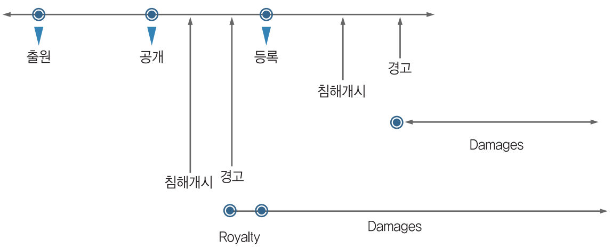 | ||||
(마) 영구금지(Permanent Injunction)
미국 연방대법원은 eBay Inc v. MercExchange, L.L.C., 2006 사건에서, 특허침해소송에 있어서 다른 분야의 소송과 달리 특허침해가 인정되면 거의 자동적으로 침해금지명령(Injunctive relief)이 내려지는 이제까지의 판례를 수정하여, 다른 일반 사건들과 마찬가지로 (ⅰ) 원고가 회복할 수 없는 손해를 입고 있는지, (ⅱ) 손해배상 등과 같은 법률적 구제가 그러한 손해를 보상하는데 적절한지, (ⅲ) 원고와 피고가 입을 어려움을 비교할 때, 침해금지명령이 필요한지 및 (ⅳ) 영구적 금지명령이 공중의 이익에 반하지 않는지 여부를 판단한 후에 침해금지여부를 판단할 것을 판시하였음
(9) 항소(Appeal) 단계
(가) 연방관할 항소법원(CAFC)
제1심 법원의 판결에 불복한 자는 판결일로부터 30일 이내에 항소할 수 있음. 이 때, 항소인은 항소장을 원심법원에 제출하여야 함. 항소장에는 항소 제기 사실 및 항소의 근거를 명확히 기재하여야 함. 대체로 최종적인 결정만이 항소 대상이 됨. 최종 결정이란 제반 소송 원인 및 소송당사자에 관한 본안을 결정하는 판결임. 다만 예외적으로 금지명령과 관련된 명령 등의 일부 중간명령도 항소 대상이 됨. 특허침해소송의 경우, 제1심법원에 상관없이 제2심법원은 워싱턴 D.C.에 있는 연방관할 항소법원이 됨
(나) 연방대법원
연방 항소심에서 패소한 자는 90일 이내에 연방 대법원에 상고할 수 있음. 다만, 주 대법원의 판결이 연방헌법에 위반되어 상고한 경우를 제외하고는 연방대법원의 상고허락을 받아야 가능함
- 상고의 허가여부는 연방대법원의 재량사항에 속하며, 연방대법원에 상고하려는 자는 약 30쪽 이내의 상고허가 청원서(Petition for a writ of certiorari)를 제출하여야 함
2. 확인소송
확인소송은 특허침해소송 제기 이전에 침해 혐의자 또는 당해 특허의 효력에 관한 이해 관계인이 특허권자에 대한 선제공격 수단으로 또는 특허권자로부터 특허침해소송이 제기된 이후에 소송계속 중의 반소라는 형태로, 특허 무효/권리 행사불능/비침해에 대하여 법원의 확인을 구하는 것임
확인판결은 원고로서 유리한 관할법원의 선택(forum shopping)이 가능하고 소송의 주도권을 가지게 되며, 무효 확인소송에 대한 우려로 특허권자의 제소를 억제시키는 등 특허권자에 대한 가장 강력한 대응책이 될 수 있음
확인의 소 제기는 특허침해소송에 제소당하는 것보다 우리 기업에 여러 면에서 유리한 바, 다음의 상황에서는 유효적절한 대응수단으로 적극적으로 고려해 볼 수 있음
(1) 특허 비침해·무효로 판단되는 경우
자체 조사, 검토 및 특허 전문가의 유력한 감정 의견 등을 통하여 자사 제품의 특허 비침해 또는 무효라는 결론이 선 경우의 유력한 대응책임. 다만, 전문가의 감정결과와 법원의 판단이 항상 일치하지는 않는다는 점도 아울러 염두에 두어야 함
(2) 특허침해소송을 시장진입 배제의 수단으로 사용한 경우
기존의 선진기업들이 중소기업의 시장진입을 저지하기 위하여 제품 판매 중에 특허침해소송을 제기함으로써 기업의 이미지를 손상시키고 당해 제품의 생산과 판매에 차질을 주는 전략을 구사하는 경우가 있음. 이러한 경우에는 확인소송을 통하여 특허권자의 의도 및 행태와 과거에 사용했던 일련의 전략을 분석하여 불확실성을 미리 해소하여야 함
(3) 특허권자가 시장 불안을 야기한 경우
간접적인 방법에 의해 즉 구매자에 의해 특허침해 가능성을 인식케 하여 구매활동을 저하시키는 경우에는 확인의 소를 제기하여 시장 불안을 해소해야 함
(4) 특허침해소송이 확실히 예견되는 경우
특허권자의 태도와 성향을 분석해 볼 때, 추후 특허침해소송이 불가피한 경우에는 미리 공격적으로 확인소송을 제기하여 그 이점을 활용, 추후 소송 진행단계에서 유리한 위치에 점할 수 있음
(1) 제소시기 선택 및 관할상의 이점
수동적인 입장에서 특정시점 및 특정관할로 응소를 강요받을 것이 아니라, 능동적인 당사자로서 자신에게 가장 유리한 시점을 포착하여 소송을 수행할 수 있고 자신에게 되도록 유리한 법원에의 제소가 가능한 장점이 있음
(2) 입증책임상의 이점
특허 비침해 등의 확인소송에 있어서는 입증책임이 피고(특허권자)에게 있는 점이 특허권자에게 부담으로 작용하여 유리한 조건하의 협상을 유도할 수 있음
(1) 상대방 분석 및 소제기 결정 문제
특허권자의 불필요한 자극 및 소송비용 등을 고려하여 전문가의 분석 및 경고장에 나타난 상대방의 의도를 분석하여 불가피한 경우에 한하여 신중히 소를 제기함이 바람직함
(2) 실제적 분쟁(계쟁성)의 증명 문제
확인의 소가 적법하다면 특허권자는 그 소송절차에서 특허범위의 명확화 및 침해에 대한 증명책임을 부담하는 반면, 소의 적법 요건(계쟁성, actual controversy)은 제소자(특허침해자)가 증명해야 함. 따라서, 사전에 적법성을 입증할 수 있는 자료를 확보하고 그 가능성을 타진한 이후에 소를 제기하여야 함
- 국내 기업의 생산품이 미국 시장에 진입할 수 있는 가능성이 없는 경우, 미국 법원에 제기한 확인소송은 기각될 가능성이 높음에 유의해야 함
(3) 제소시 금기 사항
특허권자는 경고장에서 일정 시한 이내에 특허침해행위를 중지하지 않으면 제소하겠다는 취지의 문구를 넣는 경우가 있음. 이러한 경고장을 수령한 상태에서 그 시한 바로 직전에 상대방보다 선행하여 제기한 확인소송이 적법한지가 문제될 수 있음. 특정시한을 제시하고 이를 어길시 제소하겠다는 내용의 경고장을 수령하고 난 이후에 그 기일 이전에 단순히 상대방의 예상되는 제소에 선행하기 위한 의도만으로 먼저 확인소송을 제기하는 것은 각하될 가능성이 높음
확인소송의 절차는 다음과 같음
(i) 특허침해 혐의자에 대한 특허권자의 경고가 있은 후 제기된 특허침해소송에 대해 피고가 반소로서 확인소송을 청구하거나, 침해 혐의자가 특허침해소송 전에 확인 소송을 먼저 제소함
(ii) 침해 혐의자의 확인소송 제소가 있으면, 특허권자는 특허상표청 심판원에 문제 특허에 대해 재심사(reexamination)를 청구할 수 있고 이 경우 확인소송은 중지됨
(iii) 확인소송에서는 심리 등을 통해 특허침해 여부, 특허 유효 여부, 특허권자의 자격이나 불공정행위(inequitable conduct) 등의 여부에 대한 주장을 전개함. 이상의 세 가지 쟁점은 모두 제기할 수도 있고 선별적으로 제기할 수도 있으나 순서는 정해져 있지 않음
(iv) 특허침해 소송에서 피고의 주요 방어수단인 유효성에 대한 도전이 확인판결에서도 우선적으로 고려된다고 추정할 수 있음
(v) 특허 유효가 확인되면 특허권자의 자격이나 특허권자의 불공정행위 등에 따라 권리 행사할 수 있는지 판단하는 단계로 이전, 특허 무효가 확인되면 피고 승소, 특허권자는 불복하는 경우 항소가 가능함
(vi) 특허권자가 특허 발명자로서 특허권을 행사하거나, 독점적 라이센시(exclusive licensee)로서 특허권을 행사할 수 있고, 특허상표청에서의 불공정행위를 한 바가 없으면 특허에 대한 권리를 행사가능하다고 판단받음. 그 다음 침해 혐의자의 침해 여부 판단 단계로 이전되어, 특허권자의 자격이 부적격하거나 불공정행위한 사실이 있으면 특허에 대한 권리행사가 부정되어 침해 혐의자가 승소하게 되며, 특허권자는 이에 불복, 항소가 가능함
(vii) 특허 침해가 확인되면 특허권자의 손해배상 청구 단계로 이전하고, 비침해가 확인되면 침해 혐의자가 승소함. 특허권자는 침해 혐의자의 승소판결에 불복, 항소할 수 있음
(1) 등록특허의 무효를 확인하는 제도
등록된 특허의 무효를 확인하고자 하는 경우, 특허청의 유관기관인 특허심판원에 무효심판을 청구하는 것이 유일한 절차인 한국과 달리, 미국에서는 등록특허의 무효 확인을 위해서는 연방지방법원에 무효확인의 소를 제기하거나 특허청에 재심사(Reexamination) 등을 신청할 수 있는데, 재심사는 개정법에 의해 결정계 재심사(Ex. Parte Reexamination)절차와 당사자계 재심(Inter Partes Review) 및 등록 후 이의신청 절차에 해당하는 등록 후 재심(Post Grant Review) 절차로 나뉨. 재심사 신청은 제3자가 유효한 특허에 관하여 새로 발견된 선행기술에 의거해 특허청에 대해 다시 심사해줄 것을 요청하는 것임
다만, 개정 특허법(American Invents Act)에서는 한국 특허법에서 폐지된 이의신청제도와 유사한 등록 후 재심절차(Post Grant Review)를 도입하고, 기존의 당사자계 재심사(Inter Partes Reexamination)을 당사자계 재심(Inter Partes Review)제도로 대체하였음. 다만, 기존의 결정계 재심사(Ex Parte Reexamination)제도는 그대로 유지됨
특허상표청은 스스로 기존 특허에 특허요건 구비 여부가 문제된다고 판단되면 재심사를 결정할 수 있음. 심사관은 일반적으로 새로운 검색을 하지 않고 재심사 신청인이 제출한 선행기술에 의거해 재심사를 함. 특허 재심사의 경우, 원 특허심사와 동일하게 청구범위 변경(명세서 보정)이 가능함
재심사 절차 중에 선행기술과 구별되도록 보정이 허용되는 범위는 특허청구범위를 포함한 특허 명세서와 도면임. 특허청구범위는 신규사항의 추가 및 청구범위의 확장이 아닌 다른 형태의 정정은 인정됨. 재심사를 통해 특허가 보정되면 그 사실을 적은 재심사 증명서가 발행되며, 그 정정된 특허 내용이 특허공보에 기재되게 됨
- 기존 재심사(Reexamination)절차와 새로 도입된 등록 후 재심/당사자계 재심(Post Grant Review/Inter Partes Review)절차의 가장 큰 차이점은, 전자는 특허청의 특허출원 당시의 심사와 유사하게 심사관에 의해 다시 특허성 여부에 대해 심사를 하는 것인데 반해, 후자인 등록 후 재심/당사자계 재심은 개정법에 의해 새로 신설된 특허심판위원회(PTAB: Patent Trial and Appeal Board)에 의해 심리된다는 것임. 개정법에서 신설된 제도들은 무효를 다툴 수 있는 절차는 다양해졌지만 문턱은 높아졌다고 할 수 있음
| [표 46] 재심사제도 비교 | ||||
|---|---|---|---|---|
| 구분 | 등록후 재심 Post-Grant Review(PGR) |
결정계 재심사 (Ex Parte Reexamination) |
당사자계 재심 Inter Parte Review(IPR) |
|
| 신청기간 | 등록일 또는 재등록일로부터 9개월 이내 | 특허의 유효기간 동안 언제든지 | 등록 후 9개월 후 또는 등록 후 재심이 신청된 때에는 절차 종료 후 | |
| 신청사유 | 모든 거절이유 (단, Best Mode 요건 제외) | 선행문헌과 관련된 신규성 및 비자명성 결여 | 선행문헌과 관련된 신규성 및 비자명성 결여 | |
| 기간 | 12-18개월 | 20-27개월 | 12-18개월 | |
| 관납료 | $20,000 | $12,600 | $19,000 | |
| 평균 소요비용 | 평균 $330,000 | 평균 $60,000 | 평균 $270,000 | |
(2) 결정계 재심사 제도
재심사는 ‘누구나 (특허의 유효기간 동안) 언제든지’ 선행기술의 특허나 간행물에 기초하여 특허 청구항에 대하여 재심사를 청구할 수 있음. 즉, 특허를 무효로 하려는 제3자뿐 아니라 특허권자 자신도 종전 심사에서 심사받지 않았던 새로운 선행기술에 대해 특허성을 다시 심사받도록 청구할 수 있음
특허청은 모든 재심사 청구에 대해 재심사를 개시하지는 않음. 특허청은 무분별한 재심사 청구를 막기 위해 재심사를 개시하기 위한 최소한의 요건을 요구하는데, 이것이 ‘특허성에 관한 실질적인 새로운 문제(‘Substantial New Question of Patentability’- SNQP)’임. 즉, 특허청은 재심사가 청구된 각 청구항에 영향을 미치는 SNQP가 제기되었는지를 판단하여, 일부 또는 전부 청구항에 SNQP가 인정되지 않는 경우, 해당 청구항에 대한 재심사를 개시하지 않음. 다만, SNQP는 재심사를 개시할 요건에 불과하고, 이것이 만족된 경우에 한하여 새로운 심사관이 다시 특허성 여부를 심사하여 만약 거절이유를 발견한 경우에는 거절이유를 포함한 Office Action을 발송하고, 재심사 결과 거절이유를 발견하지 못한 경우에는 특허를 유지한다는 결정을 내리게 됨
재심사는 원칙적으로 당해 특허의 출원을 심사하였던 심사관 이외의 다른 심사관에 의해 심사됨. 재심사는 위의 결정계 재심사 절차 흐름도에서 확인할 수 있듯이, 크게 2단계의 절차로 진행됨. 제1단계는 재심사 청구서를 심사하여 재심사가 청구된 각 청구항에 ‘특허성에 관한 실질적인 새로운 문제’(SNQP)를 제기하였는지 여부를 심사하여 재심사 개시여부를 결정하고, 제2단계는 재심사 청구서의 내용을 기초로 각 청구항에 선행기술에 의해 신규성 또는 비자명성 흠결로 거절이유가 존재하는지는 심사하여 특허의 유,무효를 결정하는 절차로 구성되어 있음
■ 비용
개정법에 의해 결정계 재심사를 청구하기 위해서 특허청에 납부해야 할 관납료가 종래 $2,520에서 $12,600)로 크게 인상되었음. 따라서, 평균 $30,000 - $70,000에 달하는 대리인 수수료까지 감안하면 종전에 비해 결정계 재심사 청구에 드는 비용 역시 재심사 절차를 진행할지 여부를 결정할 때 중요하게 고려할 사항임. 다만, 개정법에 의해 새로 도입된 등록 후 재심이나 당사자계 재심의 경우 제한된 범위의 디스커버리(Discover) 절차가 도입되어 결정계 재심사에 비해 대리인 비용이 훨씬 더 많이 들 것이어서, 비용면에서는 특허를 무효로 시킬 수 있는 여러 절차들 중에서 여전히 결정계 재심사 절차가 유리함
■ 기간
통계적으로 결정계 재심사에 소요되는 기간은 20-27개월임. 다만, 심사관이 재심사한 결과 거절이유가 없다고 판단하는 경우에는 평균 12개월이 소요됨
| [표 13] 결정계 재심사 | ||||
|---|---|---|---|---|
| 연번 | 결정계 재심사 | 확인 | ||
| 1 | 신규성, 비자명성 무효자료 조사결과 입수 여부 | |||
| 2 | 무효분석으로 유리한 결과가 나왔는지 확인 | |||
| 3 | 유력한 무효자료가 출원단계에서 심사관에 의해 이미 고려되거나 인용된 자료인지 여부 | |||
| 장점 | 단점 | |||
| 4 | 법원과 달리 특허 유효추정(presumption of patent validity) 없으며 입증책임의 정도도 법원과 달리 “clear and convincing evidence” 가 아님 | |||
| 5 | 대부분의 심사관은 특허내용과 선행기술에 대해 판사나 배심원보다 이해도가 높음 | |||
| 6 | 결정계 재심사 청구의 경우 설사 무효가 되지 않더라도 법원에서 다시 무효를 다툴 수 있음. | |||
| 7 | 재심 과정에서 특허청구범위가 특허권자의 보정에 의해 축소되면 과거 침해에 대해서는 권리행사를 할 수 없을 수도 있음 | 다만, 이 경우에도 좁아진 청구항에 의해서도 장래의 침해행위에 대해 권리행사가 가능할 수 있음. | ||
| 8 | 결정계 재심사의 경우 재심사 절차에 신청인이 참가하여 특허권자의 항변에 대해 반박할 수 없다는 단점이 있음 | |||
| 9 | 결정계 재심사의 경우 심사관 1인이 심사하므로 3인 합의체에 의한 판단보다는 신뢰성이 떨어짐 | |||
| 10 | 무효 이외의 다른 항변사유, 예컨대 불공정행위에 따른 권리행사불능을 주장할 수는 없음 | |||
(3) 등록 후 재심 제도
등록 후 재심은 결정계 재심사와 달리 ‘특허권자가 아닌 자로서 이해관계인’에 의해서만 신청될 수 있으며, 등록일 또는 재등록일로부터 9개월 내에 적어도 하나의 청구항이 특허를 받을 수 없는 것으로서 삭제되어야 한다고 신청할 수 있음. 이해관계인의 확인이 필요하므로 결정계 재심사와 달리 익명으로 신청할 수 없음
- 신청인이 해당 특허의 등록일로부터 9개월 이내라 할지라도 등록 후 재심 신청일 전에 특허 무효를 다투는 민사소송을 이미 제기하였다면 등록 후 재심은 신청할 수 없으며, 이는 특허소송이 진행중이라도 청구할 수 있는 결정계 재심사 제도와 다른 점임
(i) 특허권자가 법원에 소송중지의 취소를 신청한 경우
(ii) 신청인이 해당 특허권을 침해했다고 주장하는 민사소송이나 반소를 특허권자가 제기한 경우
(iii) 신청인이 법원에 그 민사소송의 각하를 신청한 경우

등록 후 재심 절차는 절차 개시 통지가 있은 날로부터 1년 이내에 최종 결정을 하여야 하며, 다만 ‘good cause’가 있는 경우에만 최대 6개월 연장될 수 있을 뿐임. 등록 후 재심 절차는 위 그림의 절차 흐름도와 아래 설명과 같이 5단계로 나눌 수 있음
• 제1단계 – 재심 개시여부 심사
신청인은 80페이지 이내의 재심 신청서를 작성하여 제출하여야 함. 특허심판위원회는 재심 신청인이 제출한 신청서의 내용에 적어도 하나의 청구항이 특허를 받을 수 없을 가능성이 더 높은지 여부를 심사하며, 특허권자는 신청서를 송달 받은 날로부터 3개월 이내에 예비답변서를 제출하여 재심 개시여부를 다툴 수도 있고, 예비응신 포기함으로써 절차를 신속하게 진행시킬 수도 있음
• 제2단계 – Discovery (증거개시절차)
재심이 결정되면 Discovery 절차가 진행되는데, 통상적 Discovery에는 (i) 인용된 증거, (ii) 선언서 교환 및 (iii) 출원과정에서의 입장과 다른 “관련 정보” 등이 증거개시의 대상이 되지만, 당사자간 합의나 위원회의 명령에 의해 초기증거공개(initial disclosures)나 추가 discovery도 가능함
• 제3단계 – 특허 유효성에 대한 당사자 주장 교환
재심이 결정되면 특허권자 답변서 (Patent Owner’s Response) 및 청구항 감축 보정신청을 3개월 기간 내에 제출할 수 있음. 특허권자 답변서가 제출된 경우 신청인 역시 답변서 및 보정신청에 대한 15페이지 이내의 서면으로 작성된 이의신청을 3개월 기간내에 제출할 수 있음. 이 경우, 보정에 대한 신청인의 이의신청에 대한 특허권자 응신서를 5페이지 이내의 서면으로 작성하여 1개월 이내 제출 가능함
• 제4단계 – 증거 인부에 대한 신청
위 제3단계까지의 절차가 종료되면 “Observation”과 증거배제신청(Motion to Exclude)이 가능함. “Observation”은 일방 당사자가 제출한 증언에 대해 상대방의 반대심문이 있는 경우 해당 증언의 사건 관련성을 입증하기 위해 제출하는 1페이지 이내의 진술서를 말함
• 제5단계 – 구술심리
구술심리는 당사자의 신청이 있어야 진행하는데, 재심 개시일로부터 9개월 이내에 해야 하며, 3인의 심판관 합의부가 진행함
■ 비용
등록 후 재심신청의 관납료는 개정법 시행 초기에는 청구항 20항까지 $35,800이었으나 현재 $20,000으로 인상되었으며, 여전히 결정계 재심사에 비해 고액의 관납료를 납부하여야 하고, 대리인 비용까지 합하면 평균 $330,000 정도의 비용이 소요됨
■ 기간
등록 후 재심은 기존의 재심사(Reexamination) 제도에 비해 신속한 절차라는 장점을 가지도록 개정법에서 규정한 결과, 절차 개시 통지가 있은 날로부터 1년 이내에 최종 결정을 하여야 하며, 다만 ‘good cause’가 있는 경우에만 최대 6개월 연장될 수 있을 뿐임. 따라서, 기존에 평균 20~27개월 소요되던 결정계 재심사나 평균 35-38개월 소요되던 당사자계 재심사에 비해 기간이 훨씬 짧음
(4) 당사자계 재심 제도
등록 후 재심 신청을 위한 9개월의 기간이 경과하면, 제3자는 당사자계 재심을 신청할 수 있는데, 이는 종전의 당사자계 재심사(Inter Partes Reexamination)을 대체하도록 개정법에서 도입한 제도이며, 선행특허와 간행물에 기초하여 신규성과 비자명성 흠결을 이유로 특허를 무효로 하는 것에 한정됨
- 당사자계 재심은 등록 후 재심과 마찬가지로 ‘특허권자가 아닌 자로서 이해관계인’에 의해서만 신청될 수 있으며, 등록일 또는 재등록일로부터 9개월이 경과한 날로부터 특허가 유효한 기간 내에는 언제든지 신청할 수 있음. 이해관계인의 확인이 필요하므로 결정계 재심사와 달리 익명으로 신청할 수 없음
당사자계 재심의 개시가 가능한 신청기간은 다음과 같음
(i) 등록일 또는 재등록일로부터 9개월 또는 등록 후 재심 절차의 종료일 중 늦은 날 후;
(ii) 신청인이 특허의 무효를 다투는 민사소송을 제기하기 전; 및
(iii) 신청인이 특허침해를 주장하는 소장을 받은 날로부터 1년 이내.
• 제1단계 – 재심 개시여부 심사
신청인은 60페이지 이내의 재심 신청서를 작성하여 제출하여야 함. 특허심판위원회는 재심 신청인이 제출한 신청서의 내용에 적어도 하나의 청구항이 특허를 받을 수 없을 가능성이 더 높은지 여부를 심사하며, 특허권자는 신청서를 송달 받은 날로부터 3개월 이내에 예비답변서를 제출하여 재심 개시여부를 다툴 수도 있고, 예비응신 포기함으로써 절차를 신속하게 진행시킬 수도 있음
• 제2단계 – Discovery (증거개시절차)
재심이 결정되면 Discovery 절차가 진행되는데, 통상적 Discovery에는 (i) 인용된 증거, (ii) 선언서 교환 및 (iii) 출원과정에서의 입장과 다른 “관련 정보” 등이 증거개시의 대상이 되지만, 당사자간 합의나 위원회의 명령에 의해 초기증거공개(initial disclosures)나 추가 discovery도 가능함. 다만, 증거개시절차는 신속하게 진행되고 E-Discovery는 통상적 discovery에는 허용되지 않으며, 만일 E-Discovery를 진행하는 경우에는 Federal Circuit Model Order를 따름
• 제3단계 – 특허 유효성에 대한 당사자 주장 교환
재심이 결정되면 특허권자 답변서 (Patent Owner’s Response) 및 청구항 감축 보정신청을 3개월 기간 내에 제출할 수 있음. 특허권자 답변서가 제출된 경우 신청인 역시 답변서 및 보정신청에 대한 15페이지 이내의 서면으로 작성된 이의신청을 3개월 기간내에 제출할 수 있음. 이 경우, 보정에 대한 신청인의 이의신청에 대한 특허권자 응신서를 5페이지 이내의 서면으로 작성하여 1개월 이내 제출 가능함
• 제4단계 – 증거 인부에 대한 신청
위 제3단계까지의 절차가 종료되면 “Observation”과 증거배제신청(Motion to Exclude)이 가능함. “Observation”은 일방 당사자가 제출한 증언에 대해 상대방의 반대심문이 있는 경우 해당 증언의 사건 관련성을 입증하기 위해 제출하는 1페이지 이내의 진술서를 말함
• 제5단계 – 구술심리
구술심리는 당사자의 신청이 있어야 진행하는데, 재심 개시일로부터 9개월 이내에 해야 하며, 3인의 심판관 합의부가 진행함
■ 비용
당사자계 재심신청의 관납료는 $19,000이며, 여전히 결정계 재심사에 비해 고액의 관납료를 납부하여야 하나 등록 후 재심보다는 다소 저렴함. 또한, 대리인 비용까지 합한 비용 역시 평균 $270,000 정도로 등록 후 재심보다 다소 저렴하지만 큰 차이는 없음
■ 기간
당사자계 재심은 기존의 재심사(Reexamination) 제도에 비해 신속한 절차라는 장점을 가지도록 개정법에서 규정한 결과, 절차 개시 통지가 있은 날로부터 1년 이내에 최종 결정을 하여야 하며, 다만 ‘good cause’가 있는 경우에만 최대 6개월 연장될 수 있을 뿐임. 따라서, 기존에 평균 20~27개월 소요되던 결정계 재심사나 평균 35~38개월 소요되던 당사자계 재심사에 비해 기간이 훨씬 짧음
| [표 47] 결정계 재심사와 당사자계 재심 비교 | ||||
|---|---|---|---|---|
| 구분 | 결정계 재심사 (Ex Parte Reexamination) |
당사자계 재심 (Inter Partes Review) |
||
| 청구인의 참여 | 신청인 참여 배제 | 이의 및 의견제출 가능 | ||
| 신청기간 | 특허의 유효기간 동안 언제든지 |
•등록일 또는 재등록일로부터 9개월 또는 등록 후 재심절차의 종료일 중 늦은 날 후; •신청인이 특허의 무효를 다투는 민사소송을 제기하기 전; 및 •신청인이 특허침해를 주장하는 소장을 받은 날로부터 1년 이내. |
||
| 신청사유 | 선행문헌과 관련된 신규성 및 비자명성 결여 | 선행문헌과 관련된 신규성 및 비자명성 결여 | ||
| 절차개시의 판단기준 | 특허성에 관한 실질적인 새로운 문제(‘Substantial New Question of Patentability’) | 적어도 하나의 청구항에 대하여 신청인의 주장이 받아들여질 합리적인 가능성 (reasonable likelihood)이 있다고 판단 | ||
| 소송과 관계 (금반언) | 제한없음(금반언 부적용) | 제한가능(재심사절차에서 제기했거나 제기할 수 있었던 항변은 추후 소송에서 제한) | ||
| 특허의 정정 | 가능 | 가능 | ||
| 항소가능여부 |
•신청인은 항소불가 •특허권자는 특허항소위원회로 항소 가능 |
양 당사자 모두 연방특허법원에 항소 가능 | ||
| 평균처리기간 | 20-27개월 | 12-18개월 | ||
| 관납료 | $12,000 | $23,000(재심 개시하지 않는 경우에는 $14,000 반환) | ||
| 전체비용 | 평균 $60,000 | 평균 $270,000 | ||
| 장점 | •저렴 •금반언 부적용 •익명으로 신청가능 | 신청인의 절차참여 | ||
| 단점 | 청구인의 절차참여 불가 |
•고비용 •추후 소송에서 신청인에게 금반언 적용 |
||
3. 악의적 상표 선점 대응 전략
상표침해소송에서는 특허침해소송과 구별되는 부분에 한정하여 서술함
상표권자는 연방 법원이나 주 법원 중에서 선택하여 상표침해소송 또는 부정경쟁소송을 제기할 수 있음. 연방 법원 및 주 법원은 연방 상표법에 의한 소송에 대한 공동 사법관할권을 가지기 때문임
연방 지방법원은 연방 상표침해, 연방 등록상표의 취소, 허위 연방상표 등록에 대한 손해배상, 연방 불공정경쟁 방지법 위반 등에 대한 관할권을 가짐. 연방 상표법에 의한 청구가 포함되면 확인판결도 허용됨. 상표 비침해 확인소송에 대해서도 분쟁이 있어야 하고, 연방관할이 있어야 함
- 연방 법원이 관할권을 가지려면 상업에서 침해 상표가 사용되어야 하고, 침해 행위가 주 사이(interstate)의 상거래에서 경제적으로 효과가 있으면 됨. 연방 법원은 미국 이외 지역의 침해행위에 대하여도 관할권을 가짐
연방 법원은 부정경쟁행위가 지식재산권 관련 법률(특허법, 상표법 등)과 연관된 청구가 있으면 관할권을 가짐. 소송가액이 5만불 이상이고 주 사이의 사건인 경우 피고는 사건을 주 법원에서 연방 법원으로 이송하게 할 수 있음. 동일 당사자가 상표청에 이의신청 절차를 진행 중인 경우 상표청의 절차는 법원 판결시까지 중지됨
상표침해소송의 법정은 피고 거주지(회사인 경우 실제 사업장소, 사업 허가 장소, 법인 설립지) 또는 침해행위지를 관할하는 연방 지방법원임. 상표소송에서도 법정지의 부적절 또는 당사자들의 편의를 이유로 이송할 수 있음
상표권자 또는 상표권 양수인은 원고로서 소송을 제기할 수 있지만, 단순한 라이센시나 유통업자는 예외적으로만 원고 적격이 있음. 법인이 침해행위를 한 경우 법인이 피고가 되며 법인의 기관 또는 피고용인(자연인)은 개인적으로 상표침해에 관여한 경우에만 책임을 짐. 다만, 법인격 부인론에 의해 법인이 아닌 그 배후의 자연인이 책임지는 경우도 있음
상표침해소송에서 일방 당사자 또는 양 당사자가 금지명령을 청구하면 양 당사자 모두 배심재판을 받을 권리를 가지지 않음. 하지만, 일방 당사자 또는 양 당사자가 손해배상 등을 청구하면 당사자 모두 배심 재판권을 가짐. 당사자는 본안에 대한 최후 소답(pleading)이 송달된 지 10일 안에 배심재판 신청이 가능한데, 항소를 위해서는 개별 쟁점마다 결론을 내는 특별 평결을 신청하는 것이 유리함
상표침해에서 가장 중요한 요소는 혼동 가능성임. 1962년 상표법 개정으로 실제 혼동이 일어난 것을 입증하는데 필요 요소들(손해 증명, 상표·시장의 동일성 등)에 대한 입증 정도가 완화되어 혼동 범위가 확장됨. 혼동가능성을 입증하는데 필요 요소는
(i) 외관, 음향, 의미 등에서 상표간 유사성,
(ii) 상품 및 서비스간의 유사성,
(iii) 유통경로의 유사성,
(iv) 충동구매인지 아닌지 여부,
(v) 상표의 강도,
(vi) 실제 혼동 여부,
(vii) 유사 제품에 있는 유사 상표 건수 및 종류,
(viii) 실제 혼동을 일으키지 않고 공동으로 사용되는 기간,
(ix) 상표가 이용된 상품의 다양성 등임
유사 상표가 다수 사람들에 대한 혼동·기망 가능성이 있다면 상표침해로 인정됨. 다만 상표가 유사하지 않더라도 주지 저명상표인 경우, 상표가 이용된 상품·서비스 및 판매시장의 유사성, 실제로 혼동을 일으킬 의사가 있었다면 혼동 가능성이 커짐. 당사자의 의사는 증거로서의 가치가 크므로 침해 여부가 불확실할 때 혼동 가능성에 대한 결정적 근거가 됨
상표침해소송의 항변은 서로 관련된 항변이 많으며 원고의 상표가 15 U.S.C. §1065에 의해 명백성(incontestability)을 가지면 15 U.S.C. §1115(b)(불가쟁성 및 항변)의 항변 이외의 다른 항변을 주장할 수 없음. 일반적인 항변으로는 관할권의 흠결, 상표권 포기, 선사용에 의한 우선권 주장, 원고 상표가 일반적 상표라는 주장, 원고 상표가 보호대상이 아니고 2차적 의미도 얻지 못했다는 주장, 혼동 가능성의 부존재 주장, 라이센시(licensee)의 금반언 원칙, 상표등록이 기망에 의해 이루어졌다는 주장, 상표가 출처를 허위로 표시하고 있다는 주장, 피고의 공정한 이용(fair use) 주장, 피고가 원고 상표 등록 이전부터 선의로 일부 지역에서 상표를 사용했다는 주장, 상표 사용이 반독점법 위반이라는 주장, 해태(laches) 주장, 침해사실에 대한 묵인, 부정행위(unclean hands) 주장 등이 있음
(1) 상표 유효성
상표 사용인이 연방 상표 등록을 하는 경우 상표가 유효한 것으로 추정되고, 등록한지 5년 후에는 불가쟁력이 생김. 이 경우 피고는 상표 유효성에 대해 이의를 제기할 수 있음. 상표가 식별력을 상실하면(특히 일반명칭화) 상표 적격성이 없으며, 상표가 유효하지 않으면 상표침해가 되지 않음
(2) 기능성
상표는 상품을 식별하기 위한 것이므로 기능적인 경우 특허로서 보호받을 뿐이며 상표로서는 보호될 수 없음. 예를 들면 특정 향기가 상품의 공통적인 특징이거나 상품의 기능과 관련된 경우 특정 향기는 상표로서 부적합함
(3) 사기 및 부정행위
사기 항변은 당사자가 고의로 타인의 것을 얻기 위해 기망행위를 하여 상표권을 취득한 경우에 연방 상표 등록이 취소되어야 한다는 주장임. 사기는 상표청에 대한 고의적 허위 주장은 물론 중요 사실의 불고지로도 인정됨
부정행위 항변은 원고가 의도적으로 비도덕적·불법적 행동이나 기망, 상표권 남용, 상품의 허위 표시 또는 비하 등을 행할 때 원고의 청구를 부정하는 것을 말함
(4) 공정 사용
자사 상품의 출처를 표시하는 것이 아닌 자사 상품을 기술하기 위해 타인의 상표를 사용하는 것은 공정한 사용으로서, 상표침해에 대한 방어방법이 됨. 이는 상표권자가 비경쟁적인 제품에 대한 사용 또는 비경쟁적인 사용에 대해서까지 독점권을 확대하지 못하도록 하기 위함임
(5) 해태
상표권자가 상표 침해자에 대해 장기간 권리행사를 지연한 경우에는 해태법리가 적용됨. 해태가 인정되면 부당한 권리행사 지연기간 동안 피고의 이익 또는 원고의 손해는 손해배상에 포함되지 않음. 다만 원고가 정당한 이유로 사업적·법적 이유에서 권리행사를 지연한 경우에는 해태 항변이 인정되지 않음
(6) 묵인, 금반언
묵인은 원고가 행동 또는 진술로 피고에 대한 상표권 불행사를 암시한 경우에 이용되는 항변임. 예컨대 당사자들이 같이 상표를 선전했거나 원고가 주도적으로 상표를 선전한 후 상표침해소송을 포기한 경우 등임. 묵인에 의한 금반언이 인정되면 원고 패소 판결이 남
(7) 병행 수입
상표권을 침해하거나 상표가 위조된 제품은 아니지만 상표권자의 허락없이 수입·유통되는 제품을 회색시장 상품이라고 하고, 이러한 상품을 수입하는 것을 병행수입이라고 함. 상표가 합법적으로 부착되어 유통되면 소진론상 소유자가 상품을 처분하는 것에 대해 원칙적으로 상표권자가 간섭할 수 없음. 미국 세관은 미국 내 상표권자가 문제된 수입품을 제조·유통하는 회사를 통제하거나 상표권자 및 문제된 회사가 모회사·자회사 관계에 있는 경우에 병행수입을 금지하지 않음. 미국 내 회사 및 외국 회사가 공동의 통제하에 있지 않고 상표 사용권만을 부여받았다면 병행수입이 금지됨
4. 소송비용 및 소요시간
미국에서 특허소송을 진행하는데 소요되는 변호사비용은 국내법원에서의 대리인 비용과 비교할 때 상당히 고가임. 보통 소송가액이 백만불이 넘는 대부분의 소송사건에 소요되는 평균 변호사 비용은 약 28억원(250만불)임. 물론, 이는 1심 판결까지 소요되는 비용으로 공판까지 가는 특허소송사건이 10% 미만인 점을 고려하면 실제 변호사 비용은 이보다 적게 들 것이지만, 소송을 시작하는 입장에서는 1심 판결까지 사건이 진행될 수 있음을 전제로 비용지출계획을 수립하여야 할 것이며, 소송비용을 고려하여 소송전략을 수립하여야 함
- 미국법원에서의 특허소송에 소요되는 비용이 큰 이유는 소송비용 중 약 30% 이상 소요되는 증거개시절차와 높은 변호사 수수료 및 다양하고 복잡한 신청(motion) 관련 서류 제출절차가 있다는 점 등임
| [표 48] 소송가액에 따른 미국소송 대리인 비용 | ||||
|---|---|---|---|---|
| 특허 소송 대리인 비용 | 상표, 저작권 소송 대리인 비용 | |||
| 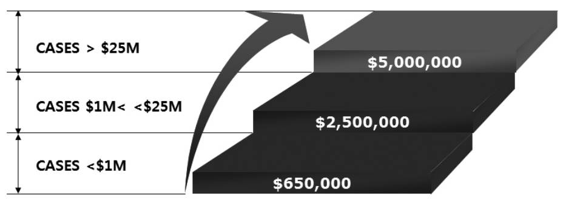 | ||||
양 당사자는 소송이 진행되는 동안 지속적으로 화해(settlement)의 가능성을 진지하게 고려하여야 함. 또한, 무효자료나 침해/비침해 자료를 상대방 당사자와 소송초반부터 공유하는 경우 각 당사자들의 승소가능성에 대한 재평가를 할 수 있어 화해 가능성을 높일 수 있음. 또한, 마크맨 심리는 소송 초반에 갖는 경우 화해를 앞당길 수도 있음. 피고의 경우 특허무효가능성을 분석한 후, 무효가능성이 높다면 미국 특허청에 재심사 또는 재심을 신청하는 것도 소송비용을 절감할 수 있는 방법임. 약식판결신청(Motion for Summary Judgment) 신청 역시 소송을 조기에 종료시켜서 소송비용을 절감할 수 있는 좋은 방법임
5. 특이제도: 증거조사(Discovery)
(1) 증거조사의 목적
증거조사는 영미법에 독특한 제도로서, 소장 및 답변서의 교환 후 양 당사자들이 상대방으로부터 정보를 수집할 수 있도록 한 절차임. 증거조사의 목적은 다음 4가지로 나뉨
(i) 당사자가 자신의 주장을 뒷받침하는데 필요한 증거를 축적하고, 공판시에 이용하기 어려운 증거를 사전에 확보
(ii) 미리 취득한 자료의 분석을 통해 공판에서 심리할 쟁점을 명확히 함
(iii) 미리 제공된 자료를 이용해 당사자가 이에 근거한 가치있는 자료를 확보하도록 도움
(iv) 예상하지 못한 증거를 제출하여 상대방에 불측의 손해를 주는 것을 방지
(2) 증거조사의 중요성 및 폐단
미국의 소송에서도 통상 유리한 증거를 상대방보다 얼마나 많이 획득하는지 여부에 따라 재판의 승패가 나뉘기 때문에 증거조사는 매우 중요함. 증거조사는 광범위한 실체적 진실을 발견하도록 하고, 화해 종결 가능성을 높이는 분쟁해결 수단으로 작용하는 반면에, 기업의 영업비밀이 노출될 위험이 있음. 실제로 소송의 80% 이상이 증거조사 단계의 완료 이전에 당사자간의 화해나 소송의 취하에 의해 종결됨. 한국 기업의 경우 폭넓은 서류 조사 및 증언 등이 이루어질 수 있어, 서류 특정과 번역 등이 한정된 시간 동안 이루어져야 하는 경우 큰 부담을 느끼게 됨
그런데, 증거조사의 실시는 종종 권리남용과 소송지연을 초래하기도 함. 권리남용을 초래하는 예로, 제소자가 확실한 증거도 없이 일단 제소하고 소송이 성립되면 요청한 자료에서 자기 주장에 필요한 증거를 찾아내는 “증거낚기(Fishing Expedition)” 현상이 발생할 수도 있음. 소송지연을 초래하는 예로, 피신청인이 의도적으로 신청인을 일 속에 파묻히게 하거나 문서를 감추기 위해서 피신청인이 의도적으로 엄청난 분량의 문서들을 제출하거나 신청인이 수많은 심문서를 제출하는 경우가 있음
(3) 증거조사의 범위와 방법
계쟁사건과 관련되며, 면책특권을 가지지 않은 것은 일단 모두 증거조사의 대상이 됨. 증거조사 단계는 우선 지방법원 판사는 양당사자에게 증거조사의 “기간”을 정하며, 증거조사는 연방규칙에 따라 그 “범위”와 “방법”이 제한됨. “범위”란 한 당사자가 받아들여질 수 있는 증거의 발견으로 유도될 수 있는, 소송에 관련된 어떠한 사항에 대한 정보라도 얻을 수 있도록 하는 것임. 또한 정보를 수집하는 “방법”은 예를 들면 상대방의 고용인들에 대한 심문, 상대방의 서면답변을 요구하는 서면심문, 상대방에 대한 자료 제출요구 및 시인요구, 신체·정신 감정, 조사 목적의 토지 기타 재산에의 출입 허가 신청 등임
법원은 다음의 요건을 고려하여, 증거조사 제한(Rule 26(b)(2))을 결정함
(ⅰ) 증거조사가 비합리적으로 중첩적이거나 중복적인지, 보다 편리하고 부담이 덜하며 비용이 적은 다른 자료로부터 얻어질 수 있는지의 여부
(ⅱ) 증거조사를 구하는 당사자가 소송에서 증거조사에 의해 정보를 얻을 충분한 기회를 가졌는지의 여부
(ⅲ) 사건 필요성, 논쟁 중인 비용, 당사자들의 자료, 소송 중인 쟁점의 중요성, 쟁점 해결에 있어 증거조사의 중요성을 감안하여, 증거조사의 부담 또는 비용이 가능한 이익보다 더 중요한지 여부
(4) 증거조사 절차 개요
대략적인 증거조사 절차는 다음과 같음
① 몇 차례 있는 공판 전 준비회합에서 양 당사자는 각각 제기된 주장과 소답(pleading)을 입증할 증거(문건 및 침해 혐의 제품, 특허 등)와 증인 목록을 제시
② 증거나 증인의 관련성에 대한 이의 제기가 있는 경우, 증거나 증인으로서의 합당성에 대한 변론을 들음
③ 증거로 합당하면 상세 조사를 허락하고, 증인의 경우 증인에게 질의서를 보내 답변서를 통해 증거를 확보하거나 증언을 녹취하기도 하여 증거나 증인으로서 인정하고, 증거나 증인으로 합당하지 않다고 판단되면 증거나 증인에서 배제
④ 상대 당사자에게 목록에 없는 증거를 청구한 경우, 법원이 그 청구의 정당함을 판단하여 정당하면 해당 당사자에게 증거 제출을 명령하고, 정당하지 않으면 증거에서 배제
⑤ 전문증거(증인의 직접진술이 아닌 전해들은 내용)의 경우 증거로 채택되지 아니하나, 정규 영업보고서 등과 같은 전문증거 예외 규칙의 적용이 가능하면 증거로 인정하고, 전문증거 예외에 해당하지 않는 증거는 증거로 채택이 불가능
⑥ 증거를 제출하도록 혹은 상세 조사에 협조하도록 법원이 명령을 내린 것에 대해 응하지 않을 경우 상대 당사자의 청구에 의해 제재가 가해짐
(5) 증거조사 위반에 대한 제재
증거조사의 대상이 되는 자료 인멸 시 법정 모독에 따른 제재를 받게 됨. 특히 증거조사 명령을 받은 회사 임원 또는 피고용인 등이 위반할 경우에도 회사 전체가 제재를 받을 수 있다는 점에 유의해야 함
- 연방 민사소송규칙 제37조에 의한 제재의 종류는 변호사 비용 등 금전배상 명령, 배심원에게 증거조사 위반 통지, 증거조사 위반 관련 사실이 상대방의 주장대로 성립한 것으로 간주하는 명령, 증거조사 위반 관련 사실에 대한 증거제출의 불가 명령, 변론 중단 및 위반 당사자에 대한 패소 판결임
(1) 질문서 일반
질문서는 사건에 관한 정보를 얻기 위해서 당사자가 상대방에게 요구하는 질문서임. 구체적인 질문 항목은 사건에 관련되는 한, 원고, 피고 어느 쪽의 주장에 관계되는 사항인가를 불문함. 전형적인 질문사항은 (i) 사건에 관련된 인물과 근무지, (ii) 특정의 정보를 포함하는 문서, 기록 등의 존재 여부, 소재지, 보존상태, (iii) 침해 제품의 생산, 사용, 판매에 관한 정보 등이 있음
(2) 회신
질문서를 접수한 당사자는 원칙적으로 30일 이내에 회신을 해야 하나, 해당 법원별 규칙에 따라 신축이 있을 수 있음. 회신문은 본안에서 증거로 사용될 수 있기 때문에 그 내용을 가능한 한 간략화해야 하며, 회신불능, 질문의 의미 불명, 사건과 관계없는 혹은 부당하게 부담이 생기는 질문에 대해서는 이의(Objection)를 제기하여 회신을 거부할 수 있음. 회신을 거부했을 때 상대방은 강제 개시명령을 요구하는 동의를 제출해서 대항하며, 강제 개시명령이 내려진 경우 당사자는 회신을 제출해야만 함. 명령에 따르지 않을 경우 당사자는 법정모욕에 해당되어 제재를 받게 됨
| [표 49] 질문서/문서 제출 요구 시 제소자·피소자 입장 비교 | ||||
|---|---|---|---|---|
| 제소자가 피소자로부터 원하는 내용 | 피소자가 특허권자로부터 원하는 내용 | |||
|
•피소자가 해당 특허나 특허 표시 제품을 최초로 인식한 날짜 •피소자의 해당 특허 청구항 해석의 입장 •피소자의 비침해에 대한 입장 •피소자의 특허법 제101조, 제102조, 제103조, 제112조143)에 따른 특허무효에 대한 입장 •피소자의 권리행사불능에 대한 입장 •피소자가 근거로 삼을 수 있는 의견서 •피소 제품의 ID •피소자의 매출, 이윤, 다른 손해 배상을 위한 정보 •선행기술과 관련 기술의 ID •다른 방어방법에 대한 피소자의 입장 |
•특허권자의 해당 특허 청구항 해석의 입장 •특허권자의 침해 입장 •특허권자가 해당 발명의 착상, 근면성, 실제적 행사 여부 •특허권자의 해당 발명의 최초 판매 또는 판매 청약 •특허권자의 실제소유 특허 제품과 특허 표시 활동 •특허권자의 특허 제품 ID와 판매 •특허 기술의 선행 라이센스 •특허권자의 손해배상 관련 생각 •관련 특허나 소송 •다른 사용가능한 방어방법들(라이센스, 해태, 금반언, 불공정 경쟁, 반독점/특허남용, 불법행위) |
|||
(3) 대응 방법
한정된 기간 내에 부담이 많은 질문서에 효율적으로 대응하기 위해서는 질문서를 받는 즉시 담당변호사와 협의하는 것이 바람직
- 각 질문사항별로 사건과의 관련성, 비밀특권, 이의의 유무, 보호명령의 적용 등에 대해 변호사와의 의견교환을 통해 상황을 정리함으로써 작업의 효율성을 훨씬 높일 수 있음
자인요구서는 사건에 관한 정보의 진실성을 당사자의 자인을 통해 입증하기 위한 수단임. 당사자에 의한 자인은 당해 소송에 한해 구속력을 가짐. 자인요구서에서 전형적으로 확인하는 항목은 (i) 특정사실에 관한 서술 또는 견해의 적정 여부, (ii) 특정사실에 대한 법 적용의 적절 여부, (iii) 특정서류 내용의 합당성 여부임
문서 및 물증제출 요구서는 사건에 관한 모든 서류와 물건에 관해, 감사와 자료 사본(Copy) 작성의 기회를 요청하는 증거조사 수단임
- 소송 부분에서 제일 어렵고 부담이 따르는 작업으로서 전형적인 요구사항은 (i) 문서, 도면, 사진, Disc, Record 및 그 이외의 기록에 대한 사찰, (ii) 상기 (i)항의 기록에 대한 사본(Copy), (iii) 물증(기계, 부품, 실험기기 등)에 대한 사찰, 촬영임
현재 소지하지 않더라도 소지할 권리를 가지고 있는 경우 소송당사자는 물론 제3자에게도 물증 제출을 요구할 수 있음. 일방 당사자가 상대방 및 제3자에 문서제출 요청을 하면, 요청자는 관련 문서들의 상세조사권과 복사권을 보유함. 물증 제출 대상은 당사자가 현재 소지하는 것뿐 아니라, 보호하거나 통제 가능한 것도 포함함. 상대방의 생산 시설 등에 대한 상세조사는 정상적인 증거조사 방법으로서 법 개정 이후 해당 물증의 필요성을 제시할 필요는 없어졌으며 사건 관련성을 제시하면 인정됨
서류의 제출방법은 당사자의 편의를 위하여 대리인간의 합의에 의해 상호 구체적인 서류를 작성하여 상대방에게 송부하는 방법을 취함. 유의할 점은 다음과 같음
(i) 서류를 종류별 대형 바인더에 파일
(ii) 각 서류는 사내용, 대리인용, 대리인용 및 상대방 제출용으로 적어도 3세트를 준비
(iii) 제출하기로 확정된 서류는 각 Page마다 일련번호를 기입
(1) 증언녹취 일반
증언녹취는 사건에 관련된 개인(발명자, 설계자, 판매책임자, 특허담당자 등)으로부터 직접 증언을 얻기 위한 증거조사방법임. 증언녹취를 요구하는 당사자는 상대방에게 증인과 증언의 주제, 일시, 장소를 통지하여야 함
- 법원 명령이 없다면 증언녹취를 하는 당사자는 비디오테이프 녹화 등 증언녹취 방법을 선택할 수 있음. 증언녹취를 비디오테이프로 녹화하는 것은 그 의도에 관계없이 광범위하게 인정되는 경향이 있음
법관 없이 법원 서기(Court Reporter)가 증인선서 및 증언속기를 관리함. 증언녹취의 기록내용은 대리인이 취사선택하여 공판에서 질문서, 자인요구서처럼 정식 증거자료로 사용됨. 증언녹취는 공판(Trial)에서의 증언처럼 당사자 기업관계자가 직접 소송에 관여하는 절차이므로, 증언녹취에 관여하는 사람은 부주의한 증언 또는 오해의 소지가 있는 증언을 하지 않도록 충분히 답변할 사항을 파악해야 함
(2) 대응 방법
증언녹취의 통고에 대해서는 이를 접수한 기업의 대리인은 통고를 보낸 대리인에 대해 증인의 선정일시, 장소를 확인해 놓아야 함. 증언녹취의 과정을 슬기롭게 극복하기 위하여는 미리 자기측 대리인과의 예비 훈련을 실시하여 실제상황에 당황하지 않도록 해야함
| [표 50] 증언녹취 신청인·피신청인의 대응방법 | ||||
|---|---|---|---|---|
| 신청인 | 피신청인 | |||
|
•원칙적으로 모든 자에게 증인의 자격이 부여됨을 인식하여 증언녹취를 신청할 수 있음 -소송과 직접적인 연관이 있는 원고와 피고에게도 증인 자격을 부여한다는 점에서 국내소송법과 차이가 남 -원고나 피고의 증언이 신빙성에 있어서 불충분할 경우, 법원의 재량으로 서면증거를 통한 증명력 보충을 요구 할 수 있음 -동일한 소송에서 소송대리를 중단한 변호사에게도 증인의 자격이 부여될 수 있음 |
•증언녹취 방식의 부적절, 관련 증거의 법정 제시 완료 사실, 증거가 쟁점과 무관함을 증명하여 상대방의 증언녹취 주장에 이의를 제기할 수 있음
-소송 당사자인 경우는 법원의 허가 없이 증언녹취의 고지만으로 시행 가능하지만, 증언녹취를 하는 사람의 자격, 증언녹취 방식, 제시된 증거 등의 이유로 해당 증언녹취에 대해 이의 제기할 수 있음 -증언녹취를 받는 당사자는 소송과 무관하거나 불리한 증언을 해야 할 경우 거부할 수 있음 |
|||
(3) 증언시 주의사항
(가) 질문에 대한 명확한 이해
질문사항에 의문이 있을 경우에는 그에 관해 질문함으로써 질문 내용을 명확히 이해한 후 답변하도록 하고, 모순된 증언을 하지 않도록 질문사항에 대하여만 답함
(나) 불필요한 정보 공개 주의
질문받지 않는 한 자발적으로 진술해야 하는 의무는 없으므로, 불필요한 정보의 공개를 막기 위해서는 가능한 한 Yes, No로 대답함. 불명확한 질문에는 답변하지 않고, 명확히 되도록 요구해야만 함. 증언의 모순이나 일관성이 없는 경우를 찾아내기 위한 작전의 일환으로 유사한 질문이 반복될 때는, 경솔하게 답변하지 않도록 주의해야 함
(나) 불필요한 정보 공개 주의
질문받지 않는 한 자발적으로 진술해야 하는 의무는 없으므로, 불필요한 정보의 공개를 막기 위해서는 가능한 한 Yes, No로 대답함. 불명확한 질문에는 답변하지 않고, 명확히 되도록 요구해야만 함. 증언의 모순이나 일관성이 없는 경우를 찾아내기 위한 작전의 일환으로 유사한 질문이 반복될 때는, 경솔하게 답변하지 않도록 주의해야 함
(다) 전해들은 정보에 대한 추측 답변 주의
명료하게 알지 못하거나 기억에 없는 사항에 대하여 추측에 의한 답변은 피함. 전해들은 정보에 대해서는 그 취지를 명확히 확인해야 함. 전문증거는 영미법상 타인의 진술을 증인이 전해들은 것으로 구성되는 증언임. 미국의 법원들은 선서도 하지 않고 반대신문도 할 수 없는 사람의 성실성과 정확성에 그 증거가치가 달려있는 증언을 인정하지 않을 수 있음(즉, 전문법칙은 전문증거의 증거능력을 배척하는 증거법상의 원칙임). 그러나 이 원칙에는 많은 예외가 있음. 예를 들면, 사업의 통상 업무과정에서 발생한 보고서·서류는 신빙성 있는 것으로 추정되는데, 즉 정기적인 영업활동 과정에서 보존되고, 보고서 등을 작성하는 영업활동의 정기적인 관습 하에 지식을 갖춘 사람이 만들었거나 전달한 정보에서 나온 의견 등은 신빙성이 있는 것으로 추정됨
(라) 통역의 적극적인 활용
통역하는 사이에 생각할 수 있는 시간도 벌고 통역이 잘못되었을 경우 통역과정에서의 실수였음을 이유로 증언의 정정을 요구할 수 있음
(마) 진술내용의 잘못 인지시 정정 요구
착각, 오해, 통역의 잘못 등에 의한 진술내용의 잘못을 알았을 때는 대리인과 상담한 후 정정할 수 있음. 정정은 진술의 정정, 질문의 재개 또는 자기측 대리인에 의한 반대심문에 의해 처리됨
(1) E-Discovery 개요
E-Discovery란 일반 증거개시절차와 구별된는 독립된 절차는 아니고, 전자문서 등의 전자적으로 저장된 정보(이하 “ESI” 또는 “전자정보”라 약칭)를 대상으로 하는 증거개시절차를 뜻함. 최근 기업들이 각종 서류를 종이형태로 보관하는 경우는 거의 없고 스캔 문서를 포함한 다양한 형태의 전자문서를 다양한 형태의 저장장치에 보관하고 있으므로, 이에 대한 증거개시절차를 효율적으로 진행하기 위해 2006년 12월 1일에 발효된 미국 연방 민사소송절차(FRCP) 제26조, 제34조 규정을 개정함
(2) 전자적 자료(ESI)의 유형
(가) 원본 데이터
워드프로세서나 엑셀, 파워포인트 등의 프로그램을 통해 생성된 문서나 파일 그 자체 형태를 의미
(나) 메타데이터(Meta data)
메타데이터는 시스템 데이터 형태를 말하는데, 이는 해당 자료의 내용, 구조 등을 설명함과 함께 해당 파일의 생성일, 수정일, 작성자 등의 속성, 특징 등에 대한 정보를 포함하고 있음
(다) 이미지 파일
이미지 파일로는 전자적 문서에 대한 신속한 리뷰기능 제공을 위해 표준화된 이미지 형태로 변형된 TIEF나 PDF 등을 그 예로 들 수 있음. 이러한 이미지 파일은 표준화되고 인쇄가 가능하지만 수정은 제한되어 있음
(3) 전자증거개시에 있어서 EDRM(전자증거개시 참조모델: Electronic Discovery Reference Model)의 활용
(가) EDRM의 개요
EDRM은 미국 연방민사소송규칙에서 명시하고 있는 전자증거개시의 요구조건을 효과적으로 준수하기 위한 절차를 표준화하고, 절차별 기능 및 명세를 작성한 것임. 이는 여러 관련 단체들의 협의하에 개발되었기 때문에 공인된 전자증거개시에 대한 일반적인 표준으로 활용되고 있음
(나) EDRM에 따른 전자증거개시 기록관리절차
① 정보관리 - 정보관리는 전자증거개시절차의 준비단계로, 전자적으로 생성 및 저장되는 정보환경하에서, 적절한 전자정보의 효율적 관리와 신속, 정확한 전자적 자료의 산출을 목적으로 ESI의 관리/보존 정책을 통해 특정 전자적 자료를 유지하고 관리하는 단계임
② 전자적 자료의 식별 - 식별과정은 보존의무가 있는 전자적 자료나 소송발생시 필요한 모든 관련 정보의 위치를 확인하는 단계로, 이를 통해 증거개시에 있어서 활용해야 하는 전자적 자료의 범위를 결정하게 됨. 식별과정에 있어서는 3가지 범위내에서 전자적 자료를 판단하여 식별함. i) 첫째, 전자적 자료의 개별 소유자 및 관리자 범위를 파악하는 것이 전자적 자료 식별을 위해 가장 중요함. ii) 둘째, 관련된 전자적 자료의 소재를 파악하는 것임. 잠재적으로 대응할 가능성이 있는 전자적 자료의 위치, 활용성, 접근성, 형태 등을 식별할 필요가 있음. iii) 셋째, 개시자료에 관계가 있는 시간의 범위로서 시작날짜와 종료날짜를 정의하는 것이 중요함
③ 전자적 자료의 보존과 수집 - 증거개시를 위하여 산출할 필요가 있는 전자적 자료에 대해 식별과정을 거치고 나면, 이러한 전자적 자료가 우연히 또는 고의로 삭제 및 변경되지 않도록 보존과정을 거쳐야 하고, 해당 전자적 자료를 수집해야 함. 소송자료보존은 일반적으로 소송이 합리적으로 예상될 때 소송과 관련된 모든 정보와 데이터들을 보존하도록 요구하는 조건으로, 소송전 증거개시절차에서 당해 데이터가 활용가능하도록 하기 위한 사전적 조치임
④ 전자적 자료의 처리, 검토, 분석 - 보존 또는 수집된 전자적 자료는 처리, 검토, 분석과정을 거침. 먼저, 전자적 자료에 대한 효과적인 검토를 할 수 있는 형태의 포맷으로 변경하는 단계가 처리과정인데, 처리과정은 다시 평가, 준비, 선택, 출력의 하위 프로세스로 분류됨. 다음으로 전자적 자료의 검토는 전자적 자료에 대한 관련성 및 권한에 대해 검토하는 것임. 마지막으로 전자적 자료의 분석은 수집된 문서를 보다 쉽게 추출하여 검토단계에서 생산성을 향상시킬 수 있도록 해당 사건과 관련된 주제나 주요패턴 등에 대한 문맥과 내용을 분석하는 것임
⑤ 전자적 자료의 생산, 공개 - 전자적 자료의 생산은 전자적 자료에 포함되는 사용가능한 포맷으로 생산을 하는 것임. 즉, 전자증거개시의 최종 단계로서 검토와 분석이 끝난 전자적 자료를 쌍방간에 협의된 포맷으로 산출하고 제출하게 되는 것임
(4) E-Discovery 유의사항
(가) 전자정보의 메타 테이터
전자정보(ESI)는 서면정보에는 없는 정보를 가지고 있음을 유의하여야 함. 메타데이터(meta data)가 대표적인데, 여기에는 전자정보의 생성일자, 작성자, 수정일자, 수정자 등의 정보가 고스란히 남아 있어서, 전문가에 의해 이러한 정보들이 모두 조사될 수 있음
(나) 삭제된 전자정보의 복구
서면의 경우 파쇄시키면 이를 확인할 길이 없지만 전자정보의 경우 로 레벨 포맷(low level format)을 하거나 동일한 메모리 영역에 다른 정보를 재기록하지 않는 한, 대부분의 삭제된 전자정보도 전문가에 의해 복구가 가능하므로 삭제된 전자정보도 항상 개시될 수 있음을 명심하여야 함
(다) E-Discovery 비용
만일 어떤 기업의 지난 5년간 모든 이메일, 워드문서, 엑셀 데이터베이스, pdf 문서를 모두 검토하기 위해서는 많은 시간과 비용이 소요될 수도 있음. 따라서, 종이 문서에 대한 개시된 증거를 조사하는 것보다 정보를 생성하고 복사하는데 드는 비용과 시간은 절감될 수 있으나, 상대방이 이러한 전자정보에 접근하거나 이를 분류, 검토하는데 드는 비용은 훨씬 클 수 있으므로 주의를 요함. 다만, 전자정보의 접근이 지나치게 어려워 전자문서개시에 과도한 비용과 부담이 있을 경우에는 증거개시의무 당사자가 당해 자료의 비접근성에 대한 합리적인 이유를 입증하여 예외적으로 증거개시를 하지 않을 수 있도록 하였음
6. 특이제도: 마크맨 심리(Markman Hearing)
‘마크맨 심리’는 법원이 당사자가 제출한 증거자료를 토대로 특허 청구항(claim)의 해석을 확정하는 특허소송의 특별한 절차를 말함. Markman v. Westview Instruments, Inc. 판결에서 연방대법원이 특허소송에 있어 특허 청구항(claim)의 해석은 법률문제로서 법원의 전속권한에 속하며 배심원이 판단할 사실문제가 아니라고 판시한 데 기인
마크맨 심리 절차는 각 법원의 재량에 맡겨져 있으며, 그 시기와 방법이 통일되어 있지 못하나, 몇몇 법원(예 : 캘리포니아 북부 지방법원)에서는 자체 소송절차 규칙에 마크맨 절차를 규정하고 있음
법원에서 나오는 일반적인 마크맨 결정은 서면 형식으로 나오지만, 종종 법정에서 마크맨 판결이 나오는 경우도 있음. 법원은 재량에 따라 변호사로부터 구두 주장을 청취하기로 결정할 수 있으며, 예비적으로 법원은 증거를 구성하는 심리를 갖기로 결정할 수 있음. 증거를 구성하는 심리에서 각 당사자는 특허청구항 의미에 관해 증언할 증인을 제시할 수 있음. 다만, 특허청구항 해석은 특허청구항 자체, 명세서, 심사이력 순으로 이루어짐
마크맨 심리의 시기 및 청구항 해석에 대한 결정은 공판 판사의 성향에 따라 달라짐. 공판(Trial) 훨씬 이전에 열릴 수도 있고, 공판 전날이나 공판에서의 증거제시 직후에 열릴 수도 있음
- 일반적으로 원고는 특허 청구항이 피고의 특허침해 행위를 모두 포함하는 것으로 해석되도록 하기 위해, 마크맨 심리 및 결정을 마지막 단계에서 선호
- 반면 피고는 법원에 의해 해석된 대로 특허 청구항의 유효성을 공격하기 위해 선행기술을 수집할 충분한 시간을 갖기 위해, 마크맨 심리 및 결정을 초기 단계에서 선호
(1) 특허침해 판정에 직결
특허 청구항을 좁게 해석하면 문언침해의 범위가 좁아져 침해혐의자에게 유리한 반면, 반대로 넓게 해석하면 문제 제품이 특허침해의 판정을 받기가 쉬워 특허권자에게 유리하게 작용함. 다만 지나치게 청구항 범위를 넓게 해석하게 되면 선행기술에 의해 무효화 될 가능성이 높아지는 측면은 있음
- 특허권자 입장에서는 법원이 피고의 특허침해 행위를 포함하면서도 예견성, 자명성, 명세서 기재 또는 실시가능 요건에 대해 항변받지 않을 정도의 특허 청구항 해석을 채택하도록 하는 것이 중요하며, 특허침해 혐의자의 관점에서는 특허 비침해 주장을 특허침해 혐의자에게 제공하는 좁은 해석, 또는 특허상표청이 고려하지 않은 선행기술에 대한 예견성, 자명성 요건을 항변하거나, 명세서 기재 불비나 실시가능 요건(35 U.S.C. §112)을 충족하지 않을 정도로만 넓은 해석을 가지는 것이 바람직
- 특허 클레임의 해석은 특허 침해여부의 판단에 직결되어 대부분 특허 소송의 승패를 좌우함. 따라서 마크맨 심리 단계에서 성공적인 결과를 이끌어낸 측에서는 즉시 약식판결을 신청하여 절차를 조기에 종결하려 할 것임. 따라서 마크맨 심리절차의 중요성은 점점 높아지고 있으며, 침해혐의자로서는 공판을 거치지 않고 약식판결 또는 소 각하 판결에 의해 소송을 유리하게 마무리 지을 기회를 가지게 됨
(2) 소송 경제에 기여
정식 사실심리 이전에 마크맨 심리 절차를 거치면 (i) 쟁점을 명확히 하여 증거조사 절차의 집중에 도움이 되고 (ii) 조기에 특허 청구범위 해석을 확정하여 당사자들에게 사건을 예측하고 계획하는 기회를 주어 화해를 용이하게 하고 소송경제에 도움이 됨
마크맨 심리 절차에서는 특허 청구항의 해석 자료로 사용되는 것은 특허 자체의 내적 증거(Intrinsic Evidence)와 외적 증거(Extrinsic Evidence)로 구분할 수 있음. 명세서는 발명품의 서면기술서로서 청구항의 용어를 명백히 또는 암시적으로 정의함으로써 사전과 같은 역할을 담당하고, 심사이력은 청구항 범위와 관련하여 출원자가 한 진술은 물론 특허상표청에 제출된 모든 특허 심사기록을 포함함
| [표 51] 증거의 종류 | ||||
|---|---|---|---|---|
| 내적 증거 | 외적 증거 | |||
|
•특허상표청구항 자체 문구(claim) •특허 명세서(Specification) •심사이력(Prosecution History) |
•전문가 증언 •학술논문 •특허 출원 시 인용되지 않은 선행기술 •특허권자의 증언 •기술용어사전 등 |
|||
| [표 52] 특허권자 및 특허침해 혐의자 관점의 마크맨 심리 전략 | ||||
|---|---|---|---|---|
| 내적 증거 | 외적 증거 | |||
|
•사건 초기단계에서 기술전문가나 전문가와 상의하는 것이 중요 •특허청구항 해석은 먼저 청구항 용어 자체에서부터 시작 - 청구항 용어가 기술적 의미로 사용되지 않는다면, 해당분야의 통상 기술에 일반적 의미를 부여 •법원은 특허 청구항 자체 다음으로 명세서, 심사이력, 사전, 전문가 증언을 포함한 내적 증거의 다른 형태를 검토 - 특허청구항 자체 및 명세서가 특허청구항의 의미에 대한 가장 신뢰할 수 있는 지표이고, 사전적 정의로 해석을 시작하는 것은 부적절 •특허권자는 명세서, 심사이력과 일치하는 의미로 특허청구항을 정하는 것이 중요 - 특허권자는 특허상표청이 인용하지 않았지만 특허청구항 해석과 관련될 수 있는 선행기술을 숙지해야 함 |
•기술전문가나 전문가는 초기단계부터 고용될 필요가 있고, 피고의 특허침해행위는 해당분야 통상 지식인의 특허청구항 해석에 반대되는지 검토되어야 함
•선행기술 검색은 특허상표청이 검토하지 않은 관련 선행기술이 있는지 결정하기 위해 행해져야 하고, 이러한 방어는 특허청구항 해석과 특허침해·비침해 무효를 포함하는 정보에 근거해 전개됨 •법원이 마크맨 결정을 할 때 명세서 및 심사이력 관점에서 특허청구항 용어를 해석해야 함 - 법원은 특허권자의 행동과 특허권자의 행동이 청구항 범위 내에 있는지를 고려해서는 안 됨 - 법원은 피고의 특허침해 혐의행위를 고려해서는 안 됨 - 법원은 해석을 통해 특허청구항에서 선행기술이 나타나는지 고려해서는 안 되고, 이는 법원의 최종 결정에서 이루어져야 함 → 특허권자는 피고가 특허청구항이 특허상표청에서 고려하지 않은 특정 선행기술 때문에 특정 방식으로 해석되어야 한다는 주장을 제기한데 대해 적절히 이의를 제기할 수 있음 |
|||
(1) 사실심리(Trial) 이전에 마크맨 심리 신청
마크맨 심리 절차의 시기는 대개 법원의 재량에 의함. 따라서 정식 사실심리 이전에 마크맨 심리를 신청하여 법원의 직권발동을 촉구하는 것이 유리할 수 있음
(2) 전문용어의 과다 사용 자제
법원은 특허청구항 용어를 동종업계의 일반적인 의미에 의거하여 해석하므로, 최적 실시예를 지적하는 것만으로는 추정 복멸이 불가능함. 청구범위 용어의 일반적 의미는 다음 방식 등으로 복멸할 수 있음
(ⅰ) 특허권자가 용어를 자신만의 독자적 의미로 사용하고 명세서나 심사이력에서 논쟁 중인 청구용어의 정의를 분명히 제시한 경우
(ⅱ) 내적 증거에서 특허권자의 용어가 선행기술 용어와 구별되고, 사물관할이 배제된다고 나타낸 경우
(ⅲ) 법적 권위의 문제로서 특허권자가 단계+기능 청구항 또는 수단+기능 청구항으로 기술하였을 때, 청구범위 용어가 명세서에 나타난 해당 구조나 단계와 등가물을 나타낸 경우 특허권자가 독자적으로 특허 청구항을 일반적 의미와 다르게 사용하였을 경우에는 입증책임을 부담함
(3) 내적 증거의 철저한 분석
내적 증거는 제3자가 특허권의 권리범위를 확인할 수 있는 공식적 기록이라는 점에서, 특허청구항 해석은 우선적으로 내적 증거에 의하여 행해짐. 내적 증거만으로는 불명확한 경우에야 비로소 외적 증거를 참작하여 해석함. 마크맨 심리에서는 특허의 출원 경과(File History), 출원과정에서 특허 범위나 청구항 용어의 의미 제한이 있었는지 여부 등 내적 증거와 관련된 자료를 철저히 분석하는 것이 중요함
(4) 내적 증거의 분석 후 외적 증거 검토
법원은 내적 증거와 모순되는 외적 증거를 증거로 채택하지 않음. 전문가 증언보다 외적 증거로서의 선행기술서와 사전이 객관적이고 신빙성 있는 가이드로서 우선하므로 이에 따른 청구항 용어 해석을 주장할 수 있음. 부대증거로서 전문가의 증언 제출시 신빙성을 증명하는 것이 중요함
(5) 전문지식으로 유리한 특허청구범위 해석 유도
특허분쟁 발생시 청구범위 해석 과정을 유리하게 이끌 수 있는 전문지식이 중요함. 마크맨 심리 단계에서는 법관에 대한 특허 청구항 의미의 설득력 있는 전달 정도가 관건이므로, 현지 변호사와 사내의 기술 전문가가 소송의 초기 단계에서부터 긴밀히 협조하는 것이 필요함
지방법원의 마크맨 결정은 그 자체로서는 항소할 수 없는 중간결정으로 고려됨. 따라서, 창의적인 전략없이는 일방 당사자는 전체 증거조사 과정에 걸친 절차와 본안에 대한 전반적인 공판에 직면할 수 있음. 그 결과 일방 당사자는 다른 당사자로 하여금 지방법원의 청구항 해석을 파기하고 사건을 반송하는 연방관할 항소법원의 항소심에서 승소하도록 함
항소법원은 특허청구항 해석을 새로운 관점에서 고려하고 지방법원의 마크맨 결정을 고려하지 않음. 최근 항소법원은 마크맨 판결을 다루는 사건의 증가에 대하여 우려를 표시하였음. 항소법원은 다수 사건이 특허 유·무효 결정없이 특허침해 약식판결로부터 나온 항소심처럼 전체 공판 기록이 미흡한 것에 대해서도 우려를 표시하였음
제5절 주요 판례 및 사례
1. 주요 판례
| 출처: 한국지식재산보호원 IP-NAVI | ||||
|---|---|---|---|---|
| 당사자 | 원고: Dyfan, LLC. 피고: Target Corporation |
|||
| 사건번호 | No. 2021-1725 | |||
| 사건의 경과 | Dyfan, LLC(이하 “Dyfan”)는 “모바일 기기용 위치 기반 촉발 시스템(Systems for Location Based Triggers for Mobile Devices)”으로 명명된 이 사건 미국 특허 제9,973,899호(이하 “′899 특허”)와 제10,194,292호(이하 “′292 특허”)2)를 Target Corporation(이하 “Target”)이 침해했다고 주장하며, 텍사스 서부 연방지방법원에 제소함. 대상 특허들은 사용자 위치에 기반하여 그들에게 메시지를 보내는 향상된 시스템을 설명함. 예를 들어, 두 특허의 공통 명세서는 다양한 소매점들이 입주한 쇼핑몰과 같은 특정 위치 내에서 사용자의 위치에 기반하여 그들의 특정 관심사 또는 필요에 맞춤형 정보를 제공하는 통신 시스템을 공지함. 대상 특허들에서 공지된 예시적 시스템은 고정된 위치에서 각각의 유닛의 통신 범위 내 위치한 모바일 기기에 메시지를 전송하는 “복수의 수신자들에게 동일한 메시지를 전송하는 근거리 통신 유닛”을 갖는 구조물을 포함함. 모바일 기기는 “응용 프로그램(application)” 또는 “코드(code)”를 실행하여 상기 메시지를 수신하고 처리함. 한편, 서버(server)는 위치와 관련된 정보를 제공하기 위해 인터넷을 통해 모바일 기기와 통신함 원심에서, Target은 대상 청구항들이 기능식 청구항(means-plus-function claim)으로 해석되어야 마땅한 청구요건들을 포함하고 있다고 주장함. Target의 주장에 따르면, 명세서에서 상기 기능식 청구항 요건들에 상응하는 구조를 설명하는데 실패했으므로, 대상 청구항들은 불명확하여 무효임 원심은 청구항 해석 명령을 통해 쟁점의 “code”/“application” 요건들과 “system” 요건들은 그 의미가 불명확하므로 무효라는 결론을 내렸음 원심은 먼저 “code”/“application” 요건들에 특허법 제112조 6번째 문단이 적용되며, 상기 요건들이 특수 목적의 컴퓨터 기능을 그에 상응하는 구조에 부여했다고 설명함. 명세서에서 “청구의 특수 목적 컴퓨터 구현 기능”을 위한 알고리즘이 존재하지 않는다고 판단하며, 법원은 관련 청구항들이 상응하는 구조를 공개하는데 실패했기 때문에 불명확하다고 결론지었음. 이와 유사하게, 법원은 “system” 요건 역시 충분한 구조 없이 완전히 기능적인 언어만을 설명하기 때문에 동일 조항의 적용을 받으며, 인용된 구성요소가 지정 기능을 수행하는지 여부가 불명확하다고 판단함. 따라서 법원은 대상 청구항들이 기능에 상응하는 구조를 설명하지 못하기 때문에 역시 불명확하다고 결론지음. 상기 청구항 해석에 근거하여, 원심은 대상 청구항들을 무효로 판결했고, Dyfan은 이에 대해 연방순회항소법원에 항소하였음 | |||
| 쟁점 | “means”를 포함하지 않는 기능식 청구항의 특허법 제112조 적용 여부 | |||
| 판시사항 | 연방순회항소법원은 모바일 기기에서 사용자 위치에 기반하여 메시지를 전달하는 방법에 관한 이 사건 특허들의 대상 청구항들이 특허법 제112조 6번째 문단의 기능식 청구항에 해당하여 불명확하기 때문에, 무효라는 원심의 판결은 대상 청구항들이 기능식 청구항 구조를 피하기 위하여 명세서에서 충분히 명확한 구조를 설명하고 있다는 반박 불가능한 증거를 무시한 실수를 범한 것으로 판단하고 파기 환송함 | |||
| 시사점 | 기능식 청구항은 기능을 수행하는 방법 또는 절차로만 작성된 청구항을 의미함. 이 경우, 청구항에서 설명되지 않은 구조, 재료 또는 행위들은 오직 명세서에서 기재된 것만을 의미하는 것으로 해석됨. 명세서에서 구조를 설명하지 않는 경우, 법원은 그러한 기능식 청구항들을 불명확성으로 인해 무효인 것으로로 판단함. 대상 판결에서, 법원은 기능식 청구항의 일반적인 작성 방식인 “means”를 포함하고 있지 않은 청구항의 경우, 무효를 다투는 피고가 기능에 상응하는 구조의 설명이 없음을 직접 입증할 책임이 있다고 강조함 | |||
| 출처: 한국지식재산보호원 IP-NAVI | ||||
|---|---|---|---|---|
| 당사자 | 원고: University of Strathclyde 피고: Clear-Vu Lighting LLC |
|||
| 사건번호 | No. 2020-2243 | |||
| 사건의 경과 |
University of Strathclyde(이하 “Strathclyde”)는 “그람 양성균2)의 비활성화(Inactivation of Gram-Positive Bacteria)”로 명명된 미국 제9,839,706 특허(이하 “′706 특허”)를 보유하고 있다. 대상 기술은 특히 병원 내에서 보건 문제를 야기하는 메티실린 내성 황색포도상구균(Methicillin-resistant Staphylococcus aureus, (이하 “MRSA”))과 다른 그람 양성균의 전파와 감염을 효과적으로 통제할 수 있는 방법에 관한 것임. ′706 특허의 명세서에 따르면, 대상 기술은 기존 방법과 달리 인체에 유해할 수 있는 감광화 작용제(photosensitizing agent)를 감염부위에 바르지 않고도, 인체에 무해한 400-500nm 파장의 가시광선에 노출시킴으로써 항생물질 내성균을 죽이거나 손상을 가할 수 있다고 함
Clear-Vu Lighting LLC(이하 “Clear-Vu”)는 특허심판원에 ′706 특허의 청구항 1 내지 4에 대해 무효심판(inter partes review)을 신청했다. 특허심판원은 청구항 1과 3이 선행기술 Ashkenazi와 Nitzan에 비추어 자명하다고 최종 결정함. 구체적으로, 특허심판원은 상기 선행문헌들이 청구항 1과 3의 청구요건들을 모두 공지 또는 암시했으며, 동종업계의 보통의 기술자라면 두 문헌들을 결합할 동기를 갖고, 그로 인한 성공을 합리적으로 기대할 수 있다고 판단함 -대상 판결의 이해를 위해, 선행기술 Ashkenazi는 여드름의 주원인인 프로피오니박테리움 아크니스(Propionibacterium acnes (P. acnes))의 광소거(photoeradication)를 논한 학술논문이다. Ashkenazi는 감광제의 일종인 포르피린(porphyrin)을 생성하는 아크니스 세균 또는 다른 세균세포(bacterial cells)에 파란색 계열의 빛을 비추면 세포를 광불활성화(photoinactivation)시킬 수 있다고 추측함. 포르피린은 파란색 계열의 빛을 비추면 상기 세포들을 매우 효과적으로 파괴되는 것으로 알려져 왔음. Ashkenazi는 세포 내 포르피린의 생성을 증가시키는 감광제(photosensitizer)를 사용하여 많은 양의 포르피린을 자연적으로 생산하는 방법을 제시함. 해당 연구는 대상 세포에 파란색 빛을 비출 때 감광제를 바른 경우와 바르지 않은 경우를 비교했고, 감광제를 바른 경우의 세포 수 감소가 훨씬 컸다고 결론지었음 -선행기술 Nitzan은 Ashkenazi의 공동 연구자들 중 2인이 발간한 논문으로, MRSA를 포함한 그람 양성 박테리아에 대한 감광제의 효과를 계속 연구한 결과임. 해당 논문은 포르피린이 추가된 배양세포에 감광제를 바르지 않고 407-420nm의 빛에 노출시켰을 때, 세포 수가 전혀 감소하지 않았다고 밝힘 Strathclyde는 특허심판원의 상기 결정에 불복하여 연방순회항소법원에 항소함 |
|||
| 쟁점 | 특정 결과를 요구하는 청구항의 자명성 요건 충족 여부 | |||
| 판시사항 | 연방순회항소법원은 감광제 없이 오직 가시광선을 이용하여 항생물질에 내성을 갖는 세균을 죽이는 방법에 관한 이 사건 특허의 대상 청구항들이 선행기술의 결합에 비추어 자명하다는 특허심판원의 결정에 대해 실질적 증거에 근거하지 않았다며 파기함 | |||
| 시사점 | 대상 판결은 미국 특허법 제103조에서 규정된 자명성의 법리를 검토한 연방순회항소법원의 최신 판례임. 특정 청구항이 선행기술에 비추어 자명함을 주장하는 자는 대상 청구항의 모든 청구요건들이 선행기술에서 공지되었고, 동종업계의 보통의 기술자가 선행기술에서 공지된 사실들을 결합 또는 수정할 동기를 가지며, 이를 통해 성공에 대한 합리적 기대감을 가질 수 있을 것을 입증해야 함. 법원은 대상 특허에서 발명가에 의해 성공한 방법이 선행기술에서는 오직 실패한 기록만 존재할 경우, 이는 제3자에게 성공에 대한 합리적 기대감을 줄 수 없으며 해당 방법이 자명하지 않음을 증명할 수 있다고 판시함. 다만, 법원은 본 판결에서 ‘합리적’의 구체적인 기준을 제시하지 않았기 때문에, 향후 이와 같은 쟁점을 다루는 실무자는 개별 사안에 따라 세심한 접근이 필요할 것으로 보임 | |||
| 출처: 한국지식재산보호원 IP-NAVI | ||||
|---|---|---|---|---|
| 당사자 | 원고: Smart Study Co., Ltd. 피고: Lizhiwangluo16 et al. |
|||
| 사건번호 | 19-cv-7725, 19-cv-7726, 19-cv-7727, 19-cv-7728, 19-cv-7729 | |||
| 사건의 경과 | Smart Study Co., Ltd.(이하 Smart Study)는 게임과 엔터테인먼트를 개발하는 한국기업으로 미취학 아동들을 위한 콘텐츠를 생산하는 핑크퐁(Pinkfong) 브랜드를 소유하고 있음. 핑크퐁은 2016년도에 “아기상어(Baby Shark)”라는 노래와 뮤직비디오를 유튜브에 공개하였고, 해당 뮤직비디오는 31억 회 이상의 시청 조회수를 기록하였음. 뮤직비디오 공개 이후 Smart Study는 장난감, 의류 및 엔터테인먼트 관련업종에서 아기상어 제품들을 세계 각국의 핑크퐁 홈페이지를 통해서 판매하고, 미국에서는 아마존, 월마트와 타겟 등을 통해 판매하는 라이선스 전략을 마련하였음. 또한 Smart Study는 미국특허상표청에 관련 상표들을 출원하여 상품분류 제28류에 “BABY SHARK”를 등록받았고, 제3, 21, 9, 16, 28, 25류에 “PINKFONG”을 등록(이하 아기상어 관련 상표들) 받음 Lizhiwangluo16 등(이하 피고들)은 중국에 위치한 개인사업자 및 기업으로 이베이(eBay) 등의 온라인 플랫폼을 통해 제품을 판매하여 미국으로 배송하는 사업을 하고 있음. Smart Study는 피고들이 아기상어 관련 상표들을 자신의 허락 없이 사용하였고, 자신의 제품들과 시각적으로 구별이 안 될 정도로 유사한 위조상품들을 생산, 판매, 수출, 수입, 홍보, 판매권유 등을 미국 소비자들에게 하였다고 주장하며 뉴욕 주 연방남부지방법원에 소송을 제기하였음 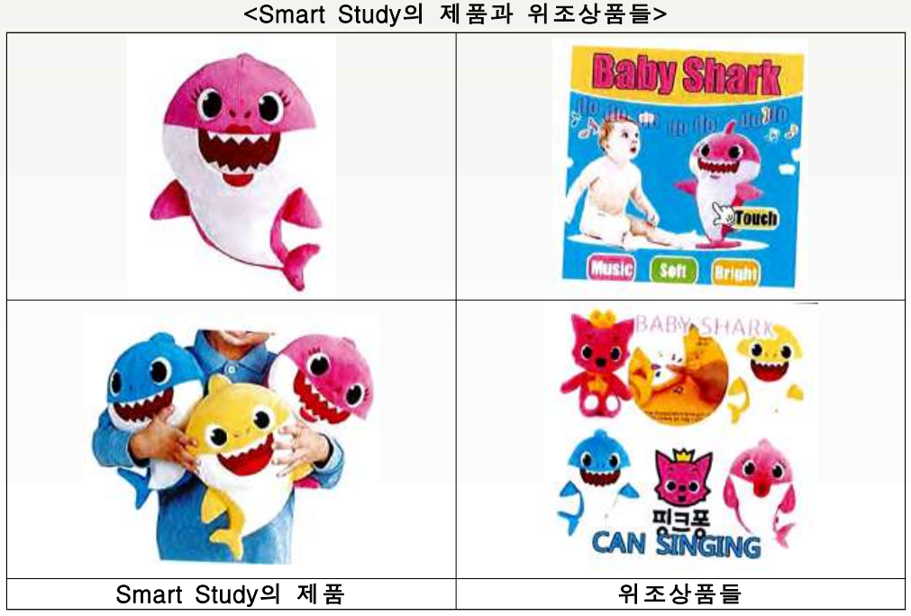 Smart Study는 소장을 통해 등록상표의 침해, 미등록상표의 침해, 부정경쟁행위 및 저작권 침해를 주장하였고, 법정손해배상액(statutory damages)으로 각각의 피고에게 $50,000을 요구하였음. 또한 Smart Study는 영구적 침해금지명령을 법원에 청구하였음. 2020년 3월 11일, 뉴욕 주 연방남부지방법원의 법원서기(law clerk)는 19-cv-7725, 19-cv-7726, 19-cv-7727, 19-cv-7728, 19-cv-7729 사건들의 피고인들에 대한 궐석을 등록하였고, 이후에도 피고들의 궐석에 대한 소명이 없자 2020년 7월 6일에 피고인들을 상대로 궐석판결을 하였음 | |||
| 쟁점 | 상표를 위조하여 온라인으로 위조상품들을 유통·판매한 국외거주 피고들의 대응이 없는 경우 궐석판결을 할 수 있는지 여부 | |||
| 판시사항 | 뉴욕 주 연방남부지방법원은 원고의 상표권 및 저작권 침해에 대한 주장을 인용하며 피고들에 대한 궐석판결을 하였음. 더 나아가 뉴욕 주 연방남부지방법원은 원고가 각각의 피고에게 청구한 $50,000의 법정손해배상액은 법적으로 $2,000,000까지 가능한 상황에서 적절하게 산정된 금액이라고 판시하였음. 또한 뉴욕 주 연방남부지방법원은 피고들에게 아기상어 콘텐츠에 대한 영구적 상표침해 금지명령을 내렸음 | |||
| 시사점 | 원고의 주장에 대한 피고의 대응이 없더라도 궐석재판은 가능하며, 궐석재판은 원고의 주장을 법원이 사실로 인정하고, 답변이 없는 피고들은 원고의 주장사실을 자백한 것으로 간주하기 때문에 원고에게 소송비용과 시간을 절감시켜주는 매우 유리한 결과를 가져올 수 있음 또한 상표권자는 시간과 비용을 들여 쌓아올린 신용이 위조상품으로 인하여 훼손되는 것을 두려워하기 때문에 아기상어 콘텐츠에 대한 영구적 침해금지명령을 받은 점이 큰 성과라고 할 수 있음 | |||
| 출처: 한국지식재산보호원 IP-NAVI | ||||
|---|---|---|---|---|
| 당사자 | 원고: Wreal社 피고: Amazon社 |
|||
| 사건번호 | No. 19-13285 | |||
| 사건의 경과 | 2006년 1월 5일 비디오 콘텐츠 스트리밍 플랫폼 회사 (Wreal, LLCt, 릴社, 이하, ‘원고’)는 온라인 스트리밍 서비스를 지정 서비스로 FyreTV를 출시하였음. 여기서, 온라인 스트리밍 서비스는 “Netflix of Port”, “Ultimate Adult Video On Demand Experience”, 그리고 “성인 영상물 유료 시청 서비스”를 포함함. 원고는 그림 1과 같은 출원상표의 등록을 미국 특허청에 요청하였음 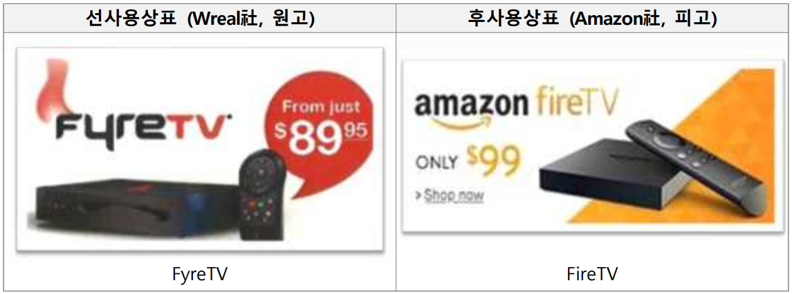 아마존(Amazon, 아마존社, 이하 ‘피고’)은 미국 최대 온라인상품, 서비스 공급 업체임. 피고는 2012년 4월 미국 전역에서 “FireTV” 상표를 사용하여 온라인 서비스를 제공하였음. 원고는 피고의 상표 “FireTV”로 인하여 소비자가 원고의 “FyreTV”라는 상표를 아마존社와 연관시키게 된다고 주장하였음. 지방 법원은 소비자가 피고의 “FireTV”와 원고의 “FyreTV”를 혼동할 가능성이 낮다고 판단하여, 원고의 상표권 침해 주장을 인정하지 않고 기각 판결을 선고하였음. 이에 원고는 아마존社의 “FireTV” 상표 사용이 역혼동 이론에 따라 “FyreTV”의 상표권을 침해하였다고 주장하며 항소하였음 | |||
| 쟁점 | 선사용상표가 후사용상표에 비하여 상업적 규모가 작은 경우, 역방향 혼동으로 인한 상표권 침해 인정 여부 | |||
| 판시사항 | 항소법원은 상표권 침해를 판단할 때, i) 상표의 식별성, ii) 양 상표의 유사성, iii) 제품의 유사성, iv) 판매점 및 고객 기반의 유사성, v) 광고 방법의 유사성, vi) 침해자의 상표 선택 의도, vii) 실제 혼동을 기초로 혼동 가능성을 판단하고, 소비자가 당사자의 제품의 출처로 단일출처를 보고, 피고가 역혼동을 발생시켜 의도적으로 원고를 시장에서 제외시키는 의도가 있고, 실제 혼동을 일으키는 경우가 매우 적어도 실제 혼동이 발생하면 혼동가능성을 인정한다고 보았음 | |||
| 시사점 | 본 사안은 선사용상표가 후사용상표에 비하여 상업적 규모가 작은 경우, 역방향 혼동으로 인한 상표권 침해를 인정한 연방순회항소법원 판결에 관한 것임. 항소법원은 소비자가 당사자의 제품의 출처로 단일출처를 보고, 피고가 역방향 혼동을 발생시켜 의도적으로 원고를 시장에서 제외시키는 의도가 있고, 실제 혼동을 일으키는 경우가 매우 적어도 실제 혼동이 발생하면 혼동가능성을 인정한다고 판단하였음. 대상 판결은 역방향 혼동으로 혼동가능성 판단에서, i) 소비자가 제품을 단일한 출처로 혼동할 가능성, ii) 침해자의 상표 선택 의도, iii) 실제의 혼동 발생의 판단 기준을 제시한 점에서 의미가 있음 | |||
● [실무적 관점] 2020-1171 사건에 대한 시사점 ● [주제별 분석보고서] 미국 직무발명 양도계약 해석에 관해서 ● [주제별 분석보고서] 역방향 혼동과 상표권 침해 판례 동향 ● [주제별 분석보고서] 미국 특허청구범위 해석에 관해서 ● [주제별 분석보고서] 최근 미국의 특허 적격성 기준 동향에 관하여 ● 2019년 IP 트렌드 보고서 – 미국 내 지재권 분쟁 동향 ● 2019년 IP Insight 보고서 – 미국 지식재산 관련 최신 판례 분석 ● 2020년 IP 트렌드 보고서 – 미국 내 지재권 분쟁 동향 ● 2020년 IP Insight 보고서 – 미국 지식재산 관련 최신 판례 분석 ● 2021년 IP 트렌드 보고서 – 미국 내 지재권 분쟁 동향 ● 2021년 IP Insight 보고서 – 미국 지식재산 관련 최신 판례 분석 ● [IP Report] [미국] 전자상거래 환경에서의 2차적 상표권 침해 책임
PARTVIII 온라인 사업자 보호
제1절 개요
Amazon, eBay, Alibaba와 같은 주요 해외 전자상거래 플랫폼은 주로 IP 보호 플랫폼(ex.IPP)과 소유자 권리 인증 프로그램(ex. VeRo Program)등 약관 내외에 지식재산정책을 두어 지식재산분쟁 예방을 위한 가이드라인을 제공하고 있음
| [표 53] 해외 전자상거래 플랫폼 주요 지식재산정책 출처 : 한국지식재산연구원 | ||||
|---|---|---|---|---|
| 구분 | 내용 | |||
| Amazon |
● 판매자에 대한 지식재산정책 보유 (권리침해신고 프로세스 보유)
● 권리자에 대한 지식재산정책 보유 (권리침해신고 프로세스 보유) |
|||
| eBay |
● 소유자 권리 인증 프로그램 운영(VeRO Program)
● 침해청구 통지서(NOCI)를 플랫폼에 송부할 수 있음 |
|||
| Alibaba |
● 소비자 약관과 별도로 지식재산정책을 보유
● 알리바바 그룹 산하 플랫폼(타오바오, 티몰, 1688, 알리익스프레스, 알리바바 인터내셔널, 라자다)을 포괄하는 지식재산 보호 플랫폼(IPP)을 통해 권리침해 신고 가능 |
|||
미국의 모든 전자상거래 플랫폼의 지재권 정책은 연방법에 의거한, 상표 및 특허 규정을 준수하며, 저작권에 있어서는 디지털 밀레니엄 저작권법(DMCA)을 준수하고 있음
밀레니엄 저작권법은 온라인 서비스 제공자(online service providers)들이 대리인(designated agent)를 지정하고, 저작권청에 이 대리인 정보를 등록하며, 웹페이지에 대리인 주소/전화번호/이메일주소를 공시한 뒤, 공시된 연락처를 통해 저작권자로부터 ‘저작권 침해 통지서(DMCA takedown notice)를 접수 받도록함. 통지서의 요청에 따라 해당 침해물의 삭제 및 접근 차단 의무를 신속하게 이행하는 경우 서비스 이용자가 타인의 저작권을 침해함으로써 온라인 서비스 제공자에게 발생하는 손해배상 책임을 면하게 해줌
저작권자는 침해자의 신원을 파악하지 못하더라도 OSP에게 통지서를 보내 침해물에 대한 게시중단을 요청할 수 있으며, OSP는 이 통지를 침해자에게 전달한 뒤 침해자가 답하지 않을 경우 관련 침해물을 삭제해야 함. 침해자는 반론 통지를 제출함으로써 맞설 수 있으나, 이후 저작권자가 법원에서 소송을 제기하지 않는다면 OSP는 해당 저작물을 복원해야함
전통적으로, 전자상거래 플랫폼은 지식재산권에 대한 지침을 제한적으로만 제공하고 판매자들이 스스로 자문을 구하거나 필요한 리서치를 진행해왔으나, 그러나, 플랫폼들의 규모가 커지고 판매자들의 요구가 늘어남에 따라 플랫폼 차원에서 더 많은 지식재산권 관련 지원을 제공하고 있는 추세임
지금으로서는 회사 내에서 본안판단에 대한 분쟁 해결 절차를 제공하는 플랫폼으로 아마존이 유일하며, 그 외의 전자상거래 플랫폼 침해로 신고한 판매자들이 할 수 있는 실질적인 대응은 권리 소유자와 직접 협상하거나 또는 소송에 의존하는 것이 대부분임. 그러나 전자상거래 문의 매출 약진과 함께 위조품으로 인한 소비자들의 피해 사례도 증가하자, 미국 의회에서는 전자상거래 플랫폼의 위조품 판매를 규제하는 법안을 발의하고 있는 추세임
제2절 아마존 (Amazon)
1. 현황
아마존은 미국 최대의 E-커머스 기업으로, 2021년 기준 미국 전자상거래 시장의 41.4%를 점유하고 있음
- 1995년 온라인 서점 서비스 개시 이래로 평균 34% 매출 신장률을 보이며 미국 뿐 아니라 세계적인 인터넷서점 돌풍을 일으킨 이후 종합 전자상거래업체로 자리매김함
- 온라인 서점 서비스를 시작한 지 불과 몇 개월 만에 해외 배송에까지 확장, 도서에서부터 시작해 화장품/생필품/의류./소형전자제품/식품 등 제품 카테고리를 확대해 세상 모든 제품을 판매하는 ‘에브리싱 스토어(everything store)’로 진화
- 아마존 고유의 ‘최저가 알고리즘’에 의해 상시적으로 아마존 내에 판매되는 동일 상품의 가격뿐만 아니라 다른 쇼핑몰의 가격을 확인한 뒤 상품의 ‘최저가’를 변동하는 시스템을 특징으로 함
- 아마존의 경우 미국 내 거주하고 있지 않더라도 일정 등록 절차를 거쳐 국내에서도 셀러(Seller)등록이 가능하며, 종합 물류 서비스인 FBA(Fulfillment by Amazon)을 제공하고 있기 때문에 미국 내 물류센터 이용이 부담되는 경우에도 이 서비스를 통해 물류 및 배송 관련 부분에 대한 부담을 덜 수 있음
2. IP 정책
미국 아마존이 바라보는 지식재산권의 개념은 미국의 연방법 및 디지털 밀레니엄 저작권법(The Digital Millennium Copyright Act, 이하 DMCA)에 근거한 상표·특허·저작권 규정을 따르고 있음
아마존이 바라보는 미국의 지식재산권 개념 네 가지(상표, 디자인 특허, 특허, 저작권)에 대한 기본적인 내용은 다음과 같음
상표(Trademark) : ‘상표’란 브랜드의 이름을 보호하고 제품이나 서비스를 타인의 것과 식별하여 소비자가 출처를 알 수 있게 하는 것으로, 아마존에서는 제품 상세 페이지의 브랜드명과 제품 포장 등에 이 상표가 표시됨. 아마존 셀러가 타인의 상표와 동일하거나 유사한 제품을 판매해 출처 판단에 혼동을 준다면 상표권 침해로 문제가 될 수 있음
디자인 특허(Design Patent) : ‘디자인 특허’란 신규성 있고 독창적인 3D 제품의 ‘외관 디자인’을 보호하는 개념임. 디자인 특허는 특히 주의가 필요한데, 한국 기업들이나 한국 셀러들이 미국의 디자인 특허에 대해 잘못 알고 있는 경우가 많기 때문임. 한국의 ‘의장권’과 미국의 디자인 특허를 동일한 개념으로 여기기 쉬운데, 미국의 디자인 특허는 한국의 의장권과는 분명한 차이가 있다. 레이스 디자인이나 캐릭터 디자인 등의 2D 디자인을 모두 포함하는 한국의 의장권과는 달리, 미국의 디자인 특허는 2D 디자인이 아닌 3D, 즉 제품의 외관을 보호함. 따라서 미국에서는 캐릭터와 같은 2D 디자인은 디자인 특허가 아닌 ‘저작권’으로 보호되며, 상표의 로고는 ‘상표’로 보호됨
특허(Patent) : 실용 특허(Utility Patent)라고도 불리는 ‘특허’는 유용하고 진보적이며 신규성 있는 ‘기술’을 보호함. 특정 제품의 작동 방식이나 사용 방법, 특정한 조성물이나 기계 등이 모두 이 특허에 해당한다고 할 수 있음
저작권(Copyright) : ‘저작권’이란 저작자의 오리지널 창작물을 보호하는 개념으로 여기에는 사진, 그림, 글, 영상, 노래 등이 모두 포함됨. 아마존에서는 제품의 상세 페이지에 표시된 제품 사진 등의 이미지나 텍스트 또는 그림이나 노래·책 등은 제품 자체가 저작권의 보호 대상이기 때문에, 제3자가 이러한 이미지나 텍스트를 무단으로 복사해 사용한다면 저작권 침해로 문제가 될 수 있음
아마존은 셀러들의 저작권, 상표권, 특허권, 디자인권을 보호하고 있으며 IP침해가 발생했을 경우 경고, 계정 일시 중지의 조치를 취할 수 있음
- 다음 링크에서 아마존 IP 정책에 관한 자세한 사항 알아보기 :
https://sellercentral.amazon.com/gp/help/external/G201361070?language=ko_KR
3. IP 침해 피해 발생시 구제 방법
아마존에서 모조품(counterfeit product)리포트 및 제거하기
- 지식재산권의 소유자 혹은 소유자로부터 통지 제출 권한을 얻은 대리인이라면, 아마존의 ‘온라인 침해 신고(Report Infringement)’ 기능을 이용해 상표·특허·저작권과 관련된 모든 침해 신고가 가능함
- 만약 타 셀러가 본인의 상표를 사용해 제품을 판매 중이라면 이 기능으로 신고할 수 있음
- 다음 링크에서 아마존 IP 침해 리포트 방법에 관한 자세한 사항 알아보기 :https://sellercentral.amazon.com/gp/help/external/U5SQCEKADDAQRLZ
① IP침해 리포트 작성 : 모조품이 미국 아마존에서 판매되고 있는 경우 amazon.com/report/infringement 접속 -> Intellectual Property Infringement Report form 작성
② IP침해 유형 선택 : 모조품에 대한 신고는 Trademark concern → the product is counterfeit 선택. 저작권, 상표권 둘 다 침해당한 경우 개별로 리포트 하는 것이 권장됨. 또한 복수의 상표권이 침해당한 경우 각 상표권별로 리포트하는 것이 권장됨.

 ③ 브랜드명, 상표등록번호 입력, 빠른 절차 진행을 위하여 상표/저작권/특허에 관한 문서의 링크도 함께 첨부해야 함
③ 브랜드명, 상표등록번호 입력, 빠른 절차 진행을 위하여 상표/저작권/특허에 관한 문서의 링크도 함께 첨부해야 함
 ④ 침해 상품 목록 작성 : 모조품에 대한 정보 입력시, ASIN(Amazon Standard Identification Number) 혹은 상품URL 기재할 수 있음. 50개까지 입력할 수 있으며, 같은 상품이라도 사이즈/색상 별로 ASIN이 다르기 때문에 기재한 상품과 ASIN이 일치하는지 확인해야 함. IP 침해 리포트를 제출할 때 해당 물품 ASIN을 모두 신고할지, 또는 특정 판매자만을 신고할 것인지 신고 범위를 선택할 수 있음
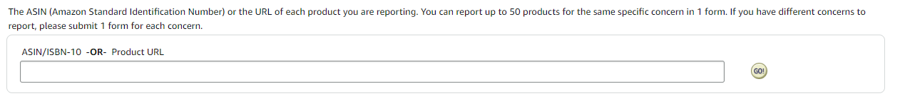
(※ 위 그림에 기재된 ASIN은 예시이며, 실제 IP침해 상품이 아님)
⑤ 개인정보 입력 : 침해자(판매자)와 연락할 수 있는 연락처 입력
④ 침해 상품 목록 작성 : 모조품에 대한 정보 입력시, ASIN(Amazon Standard Identification Number) 혹은 상품URL 기재할 수 있음. 50개까지 입력할 수 있으며, 같은 상품이라도 사이즈/색상 별로 ASIN이 다르기 때문에 기재한 상품과 ASIN이 일치하는지 확인해야 함. IP 침해 리포트를 제출할 때 해당 물품 ASIN을 모두 신고할지, 또는 특정 판매자만을 신고할 것인지 신고 범위를 선택할 수 있음
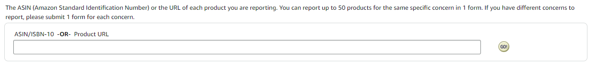
(※ 위 그림에 기재된 ASIN은 예시이며, 실제 IP침해 상품이 아님)
⑤ 개인정보 입력 : 침해자(판매자)와 연락할 수 있는 연락처 입력
 ⑥ 절차는 일반적으로 1~3영업일이 소요되며, 그 이후에도 아마존에서 확인 이메일을 받지 못한 경우 리포트를 재제출하는 것이 좋음
⑥ 절차는 일반적으로 1~3영업일이 소요되며, 그 이후에도 아마존에서 확인 이메일을 받지 못한 경우 리포트를 재제출하는 것이 좋음
4. 아마존이 시행하는 브랜드 보호 프로그램
① 브랜드 레지스트리(Brand Registry)
- 아마존 브랜드 레지스트리는 ‘출원된 상표’를 보유한 셀러가 참여할 수 있는 아마존의 특별한 프로그램으로, 이 브랜드 레지스트리에 등록하면 많은 혜택이 주어짐
- 혜택 중에 하나로, 브랜드 레지스트리에 등록한 셀러에게 아마존은 더 강력한 지식재산권 보호 제도를 제공하며, 지식재산권 침해 발생 시 ‘Report a Violation(RAV)’ 기능을 통해 위반 신고가 가능함
- 브랜드 레지스트리에 등록하면 상표나 특허 등을 침해한 타 리스팅을 더 쉽게 검색할 수 있고 신고 역시 더 간단하며 여러모로 장점이 많음
- 따라서 본인 브랜드에 대해 상표권을 보유하고 있거나 상표를 출원한 셀러라면 반드시 고려해볼 만한 프로그램임
② IP 액셀러레이터 프로그램(IP Accelerator)
- 아마존의 IP(지식재산권) 액셀러레이터란 ‘정식 상표권 등록’을 위한 서비스를 제공하는 지식재산권 전문 로펌과 셀러들을 연결해주는 프로그램
- 이는 아마존이 브랜드 레지스트리 신청 요건으로 ‘등록된 상표’를 요구하던 시기에 특히 유용하게 활용된 프로그램으로, 이미 정해진 아마존 IP Accelerator 로펌을 통해 유사 상표 검색 등의 기본적인 서비스 또한 편리하게 이용할 수 있음
③ 프로젝트 제로(Project Zero)
- 아마존 프로젝트 제로는 머신 러닝 시스템을 통해 모조품을 식별하고 삭제할 수 있는 자동화된 지식재산권 보호 프로그램으로, 상표권을 가진 셀러들이 특별히 침해를 신고하거나 아마존에 연락하지 않아도 상표권을 보호받을 수 있는 툴
- 프로젝트 제로를 이용하기 위해서는, 앞서 살펴본 ‘브랜드 레지스트리’에 등록되어 있어야 하며 해당 브랜드는 상표로 정식 등록된 것이어야 한다는 요건이 있음
- 이외에도 ‘Report a Violation’ 기능을 사용한 경험이 있어야 하며, 최근 6개월 이내에 제출한 지식재산권 침해 신고에 대한 아마존의 인용률(인정 비율)이 90% 이상이어야 프로젝트 제로를 이용할 수 있음
④ 실용특허 중립평가 제도(Utility Patent Neutral Evaluation)
- 아마존은 상표 보호 프로그램뿐 아니라 실용(기술) 특허를 보호하기 위한 ‘실용 특허 중립평가 제도(Utility Patent Neutral Evaluation, 이하 UPNE)’ 또한 운영 중임
- 아마존에서 특허 침해가 의심되는 제품 리스팅을 발견할 경우, 해당 특허권자가 아마존에 신고하면 아마존이 해당 판매자에게 연락해 본 프로그램(UPNE) 참여 여부를 3주 이내에 결정하게 됨
- 판매자가 UPNE에 참여하지 않기로 결정한다면, 침해 의심 리스팅은 바로 삭제됨
- 판매자가 참여하기로 결정한다면 특허권자와 판매자 양측이 각각 4000달러의 참여 비용을 지급하며, 아마존이 지정하는 중립적인 제3의 평가자가 신속하게(보통 3~4개월 이내) 침해 여부를 판단함
- 침해가 맞는 것으로 판단되면 해당 리스팅이 삭제됨과 동시에 특허권자는 4000달러의 비용을 돌려받게 되며, 침해가 아닌 것으로 판단될 경우 반대로 판매자가 비용을 돌려받고 리스팅도 유지됨
- 현재는 ‘Invitation Only’로 아마존이 선정한 특정인들만 참여할 수 있는 이 제도는 법원 등에 특허 침해 소송을 제기해 분쟁을 해결하는 방식보다 비용과 시간이 훨씬 적게 들기 때문에 매우 효율적인 프로그램으로 평가받고 있음
제3절 이베이 (ebay)
1. 현황
이베이(eBay)는 1995년 AuctionWeb이란 이름으로 온라인 경매로 물건을 판매하는 전자상거래 플랫폼으로 출발하였으나, 2000년 바로구매(Buy It Now) 기능을 도입하여 경매 없이 바로 제품을 거래할 수 있는 전자상거래로 전환함
- 이베이는 현재 미국에서 두 번째로 큰 전자상거래 플랫폼을 운영하고 있으며, 2019년 기준 전 세계 2천 5백만 명이 넘는 판매자들(미국 내 약 7백만 명)이 1억 8천만명이 넘는 사용자들에게 제품을 판매하여 약 105조원의 매출을 기록함
- 이베이 전체 방문자의 70% 이상이 미국 거주자임
- 이베이는 경매 또는 바로구매 등의 다양한 판매방식을 제공함을 특징으로 함. 경매의 경우 판매자는 시작가격, 최소가격, 경매기간 등을 설정하여 관심 있는 사용자들의 입찰을 받을 수 있음
- 또한 이베이는 가격제안(Make Offer) 기능을 통해 사용자가 판매자에게 희망 판매 가격을 제시할 수 있게 하여, 판매가격의 협상을 비교적 용이하게 함
- 이베이는 판매자가 판매지역을 선택할 때 별도의 사전 등록 없이 전 세계를 대상으로 판매할 수 있게 함. 그러나 전 세계를 대상으로 판매할 경우 그에 따른 배송, 관세 및 지식재산권 등의 이슈를 사전에 점검할 필요가 있음
2. IP 정책
IP침해가 발생한 경우 지재권자가 IP 침해 사례를 파악하고 이베이에 신고할 수 있음
- 이베이 홈페이지에서 제공하는 침해청구 통지서(NOCI, Notice of Claimed Infrngement)양식을 작성하여 vero@ebay.com으로 제출해야 함
- 신고인의 연락처, 침해 지식재산권 유형, 침해의 성격에 대하여 기재해야함
- 해당 페이지에서 양식확인:
https://ir.ebaystatic.com/pictures/aw/pics/pdf/us/help/community/EN-NOCI.pdf
 이베이 지식재산권 침해 유형 리스트
이베이 지식재산권 침해 유형 리스트
- https://www.ebay.com/help/policies/member-behavior-policies/encouraging-infringement-policy?id=4377
- 판매자가 eBay를 사용하여 다른 사람이 제3자의 지적 재산권을 침해하도록 조장하거나 활성화하는 것을 허용하지 않음
- eBay 정책을 따르지 않는 활동은 목록을 행정적으로 종료 또는 취소하고, 검색 결과에서 모든 목록을 숨기거나 강등하고, 판매자 등급을 낮추고, 구매 또는 판매 제한, 계정 정지와 같은 다양한 조치를 취함
이베이는 지식재산권 소유자들이 침해 주장 사례를 신고할 수 있도록 소유자 권리 인증 프로그램인 VeRO(Verified Rights Owner Program)을 제공하고, 이베이는 지재권자들이 VeRO 가입자 프로필을 만들도록 권장함 (https://www.ebay.com/help/policies/listing-policies/selling-policies/intellectual-property-vero-program?id=4349)
- 이베이는 침해청구통지서(NOCI)를 받은 후, 관련 침해혐의자에게 신고당사자의 연락처를 제공하여 분쟁당사자들이 서로 간에 직접 문제를 해결하도록 함
- 또한 이베이는 침해신고서를 바탕으로 상품 리스팅을 재량으로 삭제하고, 침해혐의자에게 삭제 사실 및 삭제의 근거를 통지할 수 있음
3. IP 침해 발생시 구제방법
이베이에서 IP침해가 발생한 경우 침해청구통지서(NOCI)를 vero@ebay.com에 제출하여 침해 신고를 해야 함
- 이베이는 상표권 및 저작권 침해에 있어서 구체적인 사유에 따른 코드를 부여하며, 다른 유형의 지식재산권은 “기타 침해”로 분류됨
- 올바르게 작성된 지재권자의 IP 침해 청구가 접수되면, 이베이는 대체로 침해콘텐츠를 삭제하고 있음
- 이베이는 침해혐의자에 신고자의 연락처, 삭제되었다는 사실 및 삭제의 근거를 알려주며 침해혐의자에게 분쟁의 직접 해결을위해 신고인과 연락할 것을 권장함
□ 상표(Trademark)
이베이는 상표 침해를 신고하기 위한 NOCI양식에 3개의 근거 코드(Reason Code)를 제공함

|

|
코드 1.1은 위조품 등의 상표권 침해 품목에 적용함. 상표권자는 유효하고 집행 가능한 상표권을 소유하고 있음을 증명하기 위해 상표등록정보를 제공해야함
코드 2.1은 상표권자가 자신의 상표를 침해하는 컨텐츠 리스팅을 신고할 수 있게 해줌. 상표권자는 침해를 주장하는 상표의 등록정보를 제출해야함
코드 5.5는 상표를 침해하는 상점명 또는 사용자 ID에 대한 침해청구를 제출할 수 있게 해줌. 코드 5.5에 해당하는 민원을 접수하는 상표권자는 접수양식의 “제품번호(item number)”란에 침해인의 사용자ID 및 침해상점의 URL을 기재하고, 해당 상표에 대한 정보를 제공해야함
□ 저작권 (Copyright)
이베이의 NOCI는 저작권침해의 유형에 따라 4개의 코드를 부여함
- 코드3.1은 라이선스 계약을 위반한 소프트웨어 판매에 사용됨. 이베이는 미개봉 정품 소프트웨어 판매에 대한 신고는 처리하지 않고 있음
- 코드 3.2는 저작권을 침해한 위조 상품에 대한 것임
- 나머지 3개 코드는 콘텐츠 리스팅에 관련하여 발생하는 저작권 침해에 대한 것임. 코드 4.1은 저작권의 보호를 받는 텍스트의 불법 카피를 포함한 리스팅 신고, 코드 4.2는 이미지의 불법 복제가 포함된 리스팅 신고, 코드 4.3은 리스팅의 이미지와 텍스트 모두가 불법 복제된 경우 사용되는 코드임
□ 특허(Patent)
특허권자는 NOCI양식의 코드 5.1을 이용하여 특허침해를 신고할 수 있음
- 이때 특허권자는 특허의 등록정보 뿐만 아니라 특허 침해를 확인한 법원 명령도 제공해야 함
제4절 월마트 (Walmart)
1. 현황
월마트는 1962년 미국 아칸소주에서 창립한 이후 성장을 거듭하여, 2020년 1월 기준 미국에서 가장 많은 오프라인 매장 수인 1만 1501개의 점포와 물류 인프라를 갖추고 있음
- 월마트는 오프라인 매장을 통해 식품, 생필품, 의류, 화장품, 장난감, 전자제품 등 다양한 품목을 취급하고 있으며 월마트 마켓플레이스라는 전자상거래 플랫폼에서도 오프라인 매장과 유사하게 다양한 제품들을 취급하고 있음
- 매달 1억명이 넘는 방문자들이 월마트 마켓플레이스를 이용하고 있으며 20202년 아마존 프라임에 대항마로 월마트 플러스(Walmart Plus)라는 회원제 기반의 빠른 배송 서비스를 시작하였음
- 월마트는 40개의 온라인 전용 풀필먼트 서비스(Walmart Fulfillment Service, WFS)를 보유하고 있고, 일부 WFS에는 피킹로봇 알파봇(Alphabot)이 배치돼 작업 속도 단축 및 효율성을 향상시킴
월마트는 다수의 오프라인 매장을 보유한 만큼 온라인 전자상거래 플랫폼과 오프라인 매장 사이의 시너지를 내기 위한 노력을 기울이고 있음을 특징으로 함
- 월마트 웹페이지에서 제품을 검색하면 월마트 오프라인 매장에서 수령이 가능한 제품과 전자상거래 플랫폼상 판매자로부터 구매가 가능한 제품이 같이 표시되며, 월마트의 오프라인으로 매장으로 배송시키고 구매자가 오프라인 매장을 방문하여 제품을 픽업수령하면 배송비를 면제해주는 제도를 갖추고 있음
월마트는 전자상거래 플랫폼에서 제품을 판매할 경우 판매자 역시 철저한 검증을 거쳐 선정하는 제도를 두고 있음
- 판매자의 경험과 규모, 판매 제품의 품질과 평판, 가격 경쟁력 등을 우선순위로 공급업체와 제3자 셀러를 선정하며, 공급업체로 선정되기 위해서는 홈페이지 신청, 식품 브로커 및 세일즈 활용, 월마트 기존 공급업체 통하는 방법이 있음
2. IP 정책
월마트는 지식재산권을 존중하며, 저작권, 상표권, 특허권 침해가 발생할 경우 월마트 측에 침해 주장을 보고할 수 있음
- 월마트 IP 침해 신고 정책(Claims of Intellectual Property Infringement)
참조 링크 : https://www.walmart.com/help/article/Claims-of-Intellectual-Property-Infringement/6171b9ac00384f3f920aa14a9c08bdac
저작권 : 저작권 침해는 저작권법에 따라 보호되는 창작물을 무단으로 사용하는 것을 의미함. 저작권법으로 보호되는 저작물의 예로는 사진, 비디오, 예술작품, 음악 등이 있음
- 월마트상에서 저작권이 침해된 경우, 미국의 디지털 밀레니엄 저작권법(Digital Millennium Copyright Act, Title 17, United States Code, Section 512(c), DMCA)에 따라 저작권 침해 주장은 Walmart가 지정한 대리인에게 침해사실을 알려야 함
- DMCA는 저작권자들이 삭제요청통지(takedown notice)를 제출할 수 있도록 허용하며, 저작권자는 월마트가 제공하는 지적재산권 침해 신고 양식을 제출하여 삭제요청을 진행할 수 있음
상표권 : 상표는 한 당사자의 상품 또는 서비스의 출처를 다른 사람의 것과 식별하게 만들어 주는 단어, 구문, 기호 또는 디자인임
- 미국 상표법에 따라 상표 소유자는 상표의 사용이 혼동을 일으킬 가능성이 있는 경우 경쟁업체가 해당 상표를 사용하는 것을 방지할 권리가 있으므로, 월마트상에서 상표권이 침해된 경우 IP 침해를 신고할 수 있음
- 월마트는 제3자와 상표 소유자간의 상표 분쟁을 중재하지 않으나, 제3자와 상표 소유자가 소유권 및 침해에 대한 분쟁을 해결할 의도로 조치를 취하기 전에 상표권 주장을 제3자에게 전달하며, 월마트는 상표 소유자의 권리를 침해하는 것으로 판명된 콘텐츠를 삭제할 권리가 있음
모조품 주장 (Counterfeit Claims) : 모조품은 진품으로 보이도록 의도된, 진품 아닌 품목으로, 월마트는 모조품으로 판단되는 콘텐츠를 제거할 권리가 있으며, 모조품 청구를 처리하는 데 적절하다고 판단되는 경우 추가 조치를 취할 수 있는 권리를 보유함
특허권 : 특허권은 특허권자에게 해당 제품에 대한 독점권을 부여하는 미국 특허청의 허가로, 월마트상에서 특허가 침해된 경우 역시 월마트에 신고할 수 있음
- 다만 월마트는 제3자와 특허 소유자간의 특허 분쟁을 중재하지 않으며, 월마트는 제3자와 특허권자가 특허 소유권 및 침해에 대한 분쟁을 해결할 의도로 해당 침해 청구를 제3자에게 전달함
- 또한 월마트는 특허권자의 권리를 침해하는 것으로 판명된 콘텐츠를 삭제할 권리를 보유하고 있음
- 당사자들이 분쟁해결에 이르지 못한 경우 월마트가 재량범위 내에서 침해대상 리스팅을 삭제할 수는 있으나, 분쟁의 본안까지 판단하는 프로그램은 부재한 상황임
- 디자인특허와 실용특허는 별도로 구분하고 있지 않음
월마트는 신고인과 침해자 당사자들이 직접 분쟁을 해결할 것을 권고하며, 당사자들이 분쟁해결의 기회를 가지기 전에 리스팅을 삭제하지 않으므로 침해컨텐츠 삭제까지 상당 기간이 지연되며, 신속한 해결을 위해 소송과 같은 방법에 의존해야 하여 높은 비용이 소요될 것으로 예상됨
반복된 IP 침해가 발생할 경우, 월마트는 유효한 지적재산권 침해청구를 수회에 걸쳐 받은 자(Repeat Infringer)를 따로 분류하여 적절한 조치를 취함
- IP를 반복적으로 침해한 자에게 월마트는 판매 목록 삭제, 월마트와의 관계 중단 또는 종료의 조치를 취할 수 있음
3. IP 침해시 구제방법
IP 침해 신고 방법 (저작권/상표권/특허권/모조품 신고의 경우)
- 다음의 링크에서 IP 침해 신고 양식을 작성한 뒤 제출함
https://brandportal.walmart.com/ipservices
- 신고 양식 작성 화면은 아래와 같음
신고자의 신원(이름, 주소, 연락처) 등을 작성한 뒤 문제가 되는 IPR의 유형을 선택함 (상표→Trademark, 특허→Patent, 모조품→Counterfeit, 저작권→Copyright)

□ 상표권 침해 신고의 경우
위에서 상표를 선택한 경우, 아래와 같은 창을 볼 수 있으며 상표권자명/상표권 보유 회사명/브랜드명/상표권 침해 상품 url 및 판매자/영문으로 된 IPR 증명 문서 및 설명/디지털 설명을 입력한 뒤 신고서를 제출(Submit Claim)하면 됨
특허권 침해, 저작권 침해의 경우 위와 동일하며 모조품을 구매한 고객이 모조품 신고한 경우 신고서에 모조품 주문 번호(Order Number)를 입력할 수도 있음
제5절 타켓(Target), 베스트바이(Best Buy)
1. 타켓
타겟은 대형 유통체인으로 식료품부터 의류, 세제나 비누 등을 포함한 생활용품, 화장품, 의약품 주방 용품, 가전제품, 문구류를 비롯한 다양한 상품을 판매함
- 타겟은 1902년에 미네소타주 미니애플리스에서 설립되어, 1962년 미네소타주 로즈빌이라는 도시에 대형 할인판매점 타겟을 처음으로 선보여 현재는 미국 전국에 매장 1,900개를 운영하는 미국 대표 유통기업으로 자리잡음
- 타겟은 2017년 5억 5,000만달러를 들여 스타트업 쉽트(Shipt)를 인수하여, 온라인에서 구매한 상품을 당일 소비자에게 배송해주는 서비스를 시작하였으며, 소비자가 앱을 통해 물건을 주문한 뒤 타겟매장으로 이동하면 직원이 주차장으로 상품을 가져다주는 드라이브업(Driveup) 서비스를 통해 온라인 부문을 강화하는 전략을 실행해옴
타켓은 지난 몇 년간 드라이브 업 서비스 확장, 당일 배송 확대, 매장 내 마이크로 풀필먼트 센터 구축 등 온라인 플랫폼 강화에 집중하며 2020년 온라인 매출이 전년 대비 2배 이상 증가하는 실적을 보임
2. 베스트바이 (Best Buy)
베스트바이는 1966년 오디오 전문점 ‘사운드 오브 뮤직’으로 시작해, 현재는 전미 1,000개에 가까운 가전제품 및 전자기기 매장을 운영하는 유통매장으로 2019년까지만 해도 국내 매출의 84%가량을 오프라인 매장에서 만들어냄
- 그러나 코로나19의 영향으로 베스트바이도 온라인 매출 성장에 주력하기 시작함
- 코로나19로 인해 컴퓨터 및 웹캠, 스피커, 마이크, 조명 등 재택 근무 상황에 필요한 전자제품 수요가 급증하며 베스트바이는 오프라인 매장을 ‘풀필먼트 거점’으로 바꾸는 전략을 실행함
- 이에 따라 베스트바이의 2020년 3분기 온라인 매출은 175% 성장하였고, 그 중 40$는 오프라인 배장 픽업으로 발생했다는 성과를 도출함
3. 디지털 밀레니엄 저작권법 (Digital Millennium Act, DMCA)
디지털 밀레니엄 저작권법(DMCA)는 1998년에 제정되어 온라인 저작권 및 침해에 대한 벌칙을 강화함
DMCA 법은 인터넷에서 이용자의 저작권 침해에 대한 온라인서비스제공자의 법적 책임을 제한하고 있으며, 인터넷 서비스 제공자의 직접 및 간접적인 책임으로부터의 면책 규정을 마련하고 있음
- ① 온라인 서비스 제공자가 저작권 침해 상황을 인지하게 된 경우 신속히 관련 자료를 삭제 또는 차단하고, ② 저작권 침해행위로부터 재정적 이득을 얻지 않고, ③ 침해행위가 일어나고 있다고 주장하는 내용의 통지를 받은 경우 신속히 침해로 주장되는 자료를 삭제 또는 차단할 경우(notice-and-takedown) 면책받을 수 있어, 많은 온라인 서비스 제공자들은 이 면책요건을 적용받기 위하여 일단 권리자로부터 삭제 요청을 받으면 바로 게시물을 삭제하거나 차단하는 조치를 취하고 있음
미국 내 모든 전자상거래 플랫폼은 DMCA를 준수하고 있음
- DMCA에 따라 저작권자는 침해혐의자에게 저작권 관련 경고를 줄 수 있음
- 저작권 침해 혐의자는 저작권 침해 의심이 제기된 모든 자료를 삭제할 수 있고, DMCA에 따라 반박하는 답변을 통지할 수 있음
- 침해혐의자의 이의제기를 받은 날로부터 14일 이내에 저작권자가 소송을 제기하지 않으면 해당 분쟁은 해소된 것으로 간주되고 해당 콘텐츠는 복원될 수 있음
4. 저작권 침해 조치
타겟의 콘텐츠가 저작권을 침해할 경우, 저작권자는 타겟의 지정대리인에게 저작권 침해 사실을 통지할 수 있음
- 이러한 절차는 오로지 침해혐의자에게 저작권 침해사실을 알리기 위한 것일 뿐이며, 타겟은 저작권자의 침해 주장의 타당성에 대한 결정을 내리지 않음
- 타겟의 지침에 따라 저작권침해 통지가 적절하게 이루어진 경우, 타겟은 저작권 침해된 것으로 추정되는 콘텐츠를 삭제하꺼나 콘텐츠에 대한 접근을 차단함
- 또한 타겟은 DMCA에 따라 침해혐의자에게 해당 사실을 통지하기 위한 합리적인 조치를 취해야함
- DMCA에 따라 침해혐의자는 저작권자에게 반론 통지를 보낼 수 있음
저작권자가 DMCA 통지를 제출하기 위해서 팩스, 일반 우편, 전자메일의 방법을 통해 서면으로 제출해야하며, 식별 가능한 저작권 정보, 연락처, 문제된 저작물 사용은 저작권자 또는 법령에 따른 허가를 받지 않았다는 점에 대한 저작권자의 신의 성실한 진술, 위증 처벌 가능성 아래 경고장에 있는 정보가 정확하다는 점에 대한 저작권자의 진술을 기재해야함
ㅇ 주소 : DMCA Designated Agent
- Target Brands, Inc. 1000 Nicollet Mall, TPS-3165 Minneapolis, Minnesota 55403
- 팩스 : 612-696-3399
- 전자메일 : DMCA@target.com
베스트바이의 경우에도 역시 저작권이 침해된 경우 식별 가능한 저작권 정보 및 연락처, 문제된 저작물 사용은 저작권자 또는 법령에 따른 허가를 받지 않았다는 점에 대한 저작권자의 신의 성실한 진술, 위증 처벌 가능성 아래 경고장에 있는 정보가 정확하다는 점에 대한 저작권자의 진술을 기재하여 아래의 방법을 통해 침해통지를 보낼 수 있음
ㅇ 주소 : DMCA Agent
- BBY Solutions, Inc. B6-Legal Dept. 7601 Penn Ave. S Richfield, MN 55423
- 전자메일 : dmca.agent@bestbuy.com
- 전화 : 612-291-1000
- 팩스 : 612-292-2323
제6절 엣시(Etsy)
1. 현황
엣시는 2005년 공예품, 골동품 및 공예품 재료 등의 판매를 중점으로 한 전자상거래 플랫포으로 시작하여, 다년간의 성장을 거쳐 현재 미국에서 다섯 번째로 큰 전자상거래 플랫폼을 운영하고 있음
- 2020년 기준 엣시는 약 310만명의 셀러와 603만명의 소비자가 이용하고 있으며, 2015년 나스닥 상장 이후, 2020년 9월부터 S&P 500dp 편입되면서 시가 총액이 3배 이상 뛰기도 함
- 엣시는 다양한 분야의 제품을 다루고 있지만, 공예품, 골동품 전문 전자상거래 플랫폼으로 널리 알려져 있어 사용자들도 주로 공예품, 골동품, 공예품 재료 등을 구입하려 엣시를 방문하는 경우가 많음. 따라서 엑시의 색깔과 맞지 않는 제품을 판매할 경우 신중한 고려가 필요함
- 초창기 엣시는 판매자가 직접 수작업로 만든 제품만 수공예품으로 부를 수 있도록 하였으나 2013년부터 판매자가 제삼자나 외부 공장을 통해 만든 제품도 수공예품에 포함시켜 판매자가 수공예품이라는 명칭을 달고 판매할 수 있는 제품의 물량을 늘릴 수 있도록 하였으며, 2015년부터 엣시 생산 프로그램(Etsy Manufacturing)을 시작하여 판매자들이 사전 승인된 외부 생산업체들과 연계한 제품 생산을 허용함
- 따라서 생산업체들은 엣시에서 제품을 직접 판매하는 것 이외에도 엣시의 판매자들과 협력해 외부 생산업체로 사업을 운영할 기회를 타진해보는 것도 고려할 수 있음
엣시는 코로나 특수를 타고 ‘수제 마스크’판매가 큰 반응을 일으켜, 2020년 2분기 엣시의 수제 마스크 판매액은 약 3억 4,600달러를 기록하며 신규 이용자도 1,200만명이 증가한 영향력을 보여줌
2. IP 정책
엣시에서는 지재권 권리자들이 자신의 권리에 대해 적극적으로 침해 사례를 적발하고 신고해야하며, (신고 페이지 : https://www.etsy.com/legal/ip/report) 해당 페이지에는 사용자가 상표, 저작권, 위조, 특허 침해 및 기타를 포함한 모든종류의 지식재산권 침해를 신고할 수 있는 양식을 제공함
수공예품 위주의 전자상거래 플랫폼인만큼, 엣시의 지식재산권 정책은 주로 상표와 저작권에 관한 것임
(상표권 침해 이슈) 상품 판매 페이지의 세부사항부터 제품 설명을 위해 판매자가 사용한 특정 언어에 이르기까지 엣시의 상점 전반에서 상표 관련 이슈를 찾아볼 수 있음
- 예를 들어, 엣시에 리스팅된 제품의 해시 태그에 상점 로고가 노출된 경우, 이는 상표법 보호의 대상이 됨
- 또한 상표가 새겨진 걸쇠나 버클, 상표가 결합된 직물 패턴, 엑시 내의 상점의 명칭과 로고 자체가 충분히 독특하여 구별되는 경우에도 상표권의 보호 대상이 됨
- 엣시를 이용하는 판매자 중 빈티지 제품의 판매자가 많으며, 빈티지 제품의 판매자가 제품의 브랜드명을 알 경우, 제품 리스팅과 제품 택(Tag)에 브랜드 명을 삽입할 수 있음
- 해당 빈티지 제품이 정품일 경우 판매자의 해당 브랜드 사용은 사실에 기반하고 있다는 점과 과거 정품을 구매하고 재판매하는 것이라는 점에서 타인의 상표에 대한 적법한 사용이 됨
- 상표권 침해 방지의 핵심은 구매자가 혼동할 수 있는 리스팅과 설명을 피하는 것으로, 만약 리스팅이 사실과 달리 해당 제품이 특정 브랜드와 연관이 되었있다고 암시할 경우 그 리스팅은 상표권 침해가 될 수 있음
(저작권 침해 이슈) 엣시의 플랫폼은 빈티지 및 수공예품 판매자를 주로 유치한다는 점에서, 엣시의 저작권 보호는 중요하게 여겨지며 판매자의 실제 상품은 저작권 보호의 대상이 됨
- 제품을 직접 제작하지 않은 판매자라고 하더라도 여전히 저작권의 보호를 받을 수 있음 (ex. 드레스를 판매하는 판매자가, 드레스 제품의 리스팅에 “의자 옆에 걸어놓은 빈티지 드레스”의 사진을 삽입한 경우 그 사진에 대한 저자구건을 가질 수 있음)
- 특정한 경우 리스팅의 제품설명 또는 상점의 설명 및 정책 역시 원본 컨텐츠의 구성에 창의성이 가미되었기 때문에 저작권 보호의 대상이 됨
- 엣시는 판매자들에게 잠재적인 저작권 침해에 대한 내용 또한 고지하고 있음
- 먼저, 사진의 대상물이 저작권의 보호 대상이 아니더라도, 그 사진 자체는 저작권의 보호를 받을 수 있음을 명시하고 있음 (ex. 독창적이지 않은 금반지는 저작권의 보호 대상이 아니나, 조명과 각도 등의 창의성을 추가하여 촬영된 금반지의 사진은 보호될 수 있음)
- 따라서, 상점 페이지에 판매자가 직접 촬영하거나 소유하고 있지 않은 사진을 게시할 때, 저작권 침해 가능성이 있으므로 주의해야 함
- 또한 엣시는 디지털 밀레니엄 저작권법(DMCA)의 삭제요청(Take down)통지와 반박(Counter)통지의 절차를 준수함
엣시는 지식재산권 분쟁의 해결에 있어 불간섭주의 접근방식을 취하고 있어, 엣시가 침해신고서를 접수하면 그 신고서에 적부판단 없이 바로 침해대상 리스팅을 삭제하거자 침해 자료에 대한 접근을 차단함
- 이어서 침해혐의자에게 리스팅삭제 또는 접근차단 조치가 시행되었다는 점을 통지함
- 엣시는 전자상거래 플랫폼으로서 어떤 제품이 판매 가능한지 여부를 지식재산권과 관련하여 판단하지 않는 입장을 취하고 있어, 진정한 IP 침해 여부를 가리는 것은 분쟁 당사자간에 해결할 문제로 남겨짐
- 이러한 방식은 침해 컨텐츠를 신속하게 삭제할 수 있으며, 해당 양식이 침해 대상 상품 및 관련 컨텐츠의 지식재산권의 소유여부를 증빙하는 것 외에 별도로 증거 또는 정보를 요구하지 않는다는 점에서 지재권자인 신고자에게 유용함
- 또한 엑시는 반복적인 침해행위를 한 자에게 대하여 무거운 벌칙을 부과함. 엣시는 한 판매자가 여러 번 신고를 받은 경우 엣시가 해당 신고를 인용했는지 여부와 관계없이 해당 판매자가 가진 플랫폼상의 모든 계쩡과 상점을 취소할 수 있음
3. IP 침해시 구제 방법
엣시의 모든 지식재산권 분쟁 신고는 엣시의 온라인 침해 통지 양식(https://www.etsy.com/legal/ip/report)을 이용하여 제출함
- 먼저 신고자인 지재권자는 문제된 지식재산권의 소유권이 자신에게 있다는 점을 표시해야 함

다음을 지재권자의 연락처 정보를 입력하고(이 정보는 침해자에게 제공함), 지식재산권의 유형을 선택해야 함
 엣시는 저작권 상표권, 위조품, 특허에 대한 침해를 신고할 수 있도록 하고 있으며, 더불어 퍼블리시티권 등 그 외 다른 유형의 지식재산권 침해신고도 할 수 있음
엣시는 저작권 상표권, 위조품, 특허에 대한 침해를 신고할 수 있도록 하고 있으며, 더불어 퍼블리시티권 등 그 외 다른 유형의 지식재산권 침해신고도 할 수 있음
상표권자는 ① 등록된 상표의 소유권이 있는 경우 ② 계류 중인 출원을 가지고 있는 경우 ③ 상표권에 대한 다른 근거가 있음을 표시한 경우 상표 침해 신고를 제출할 수 있음
 다만, 상표와 달리 계류 중인 특허출원을 이유로 IP 침해 신고를 허용하지 않음 (등록특허권자만 IP침해 신고 가능)
다만, 상표와 달리 계류 중인 특허출원을 이유로 IP 침해 신고를 허용하지 않음 (등록특허권자만 IP침해 신고 가능)
엣시의 저작권침해 신고는 디지털밀레니엄 저작권법(DMCA)이 그 관할을 담당하여 판매자는 엣시의 온라인 침해통지양식을 이용해 삭제요청통지(takedown notice)를 제출할 수 있음
- 저작권자는 아래와 같은 엣시의 지정 대리인(Etsy, Inc., Attn: Legal Department, 117 Adams Street, Brooklyn, NY 11201) 에게 삭제요청 통지를 우편발송하거나 이메일(legal@etsy)로 발송할 수 있음
엣시의 저작권 침해 신고양식은 아래와 같음
 2022년 4월 엣시는 창작자 및 지식재산권 보유자가 IP침해를 보다 더 쉽게 신고할 수 있는 지식재산권 포털(Etsy Reporting Potral)을 출시함
2022년 4월 엣시는 창작자 및 지식재산권 보유자가 IP침해를 보다 더 쉽게 신고할 수 있는 지식재산권 포털(Etsy Reporting Potral)을 출시함
- 포털 링크 : https://www.etsy.com/ipreporting
- 사용가이드 (YouTube) : https://www.youtube.com/watch?v=OD-x7QbpzOU
 https://www.etsy.com/ipreporting 에 브랜드에 관한 정보를 입력하여 가입한 다음, 상단의 ‘Intellectual Properties’탭을 클릭하여 보유하고 있는 지식재산권을 등록함
https://www.etsy.com/ipreporting 에 브랜드에 관한 정보를 입력하여 가입한 다음, 상단의 ‘Intellectual Properties’탭을 클릭하여 보유하고 있는 지식재산권을 등록함

 IP 침해신고를 하기 위해서는 상단의 “Reports”탭을 클릭하여 IP침해 상품과 관련된 자신의 IP를 선택한 뒤, IP 침해 상품의 리스팅을 클릭하여 리포트에 추가함
IP 침해신고를 하기 위해서는 상단의 “Reports”탭을 클릭하여 IP침해 상품과 관련된 자신의 IP를 선택한 뒤, IP 침해 상품의 리스팅을 클릭하여 리포트에 추가함

 “Report”탭에서 처리 현황을 확인할 수 있으며, IP침해 신고의 내용이 유효할 경우 Etsy에서 후속조치에 대한 이메일을 보내줌
“Report”탭에서 처리 현황을 확인할 수 있으며, IP침해 신고의 내용이 유효할 경우 Etsy에서 후속조치에 대한 이메일을 보내줌
PARTIX 지식재산권 체크리스트
제1절 R&D 체크리스트
1. 특허출원 결정
| 번호 | 세부 항목 | 체크 |
|---|---|---|
| 1 |
한 특허를 받을 가능성을 평가했는가?
→ 연구초기단계부터 규칙적으로 평가하는 것이 필요 |
|
| 2 |
특허 보호의 범위에 대해서 평가했는가?
→ 특허청구범위가 너무 좁으면 회피하기가 쉬움 → 특허청구범위가 너무 넓으면 자기특허가 무효가 될 수 있음 |
|
| 3 |
특허침해에 대해서 쉽게 알아낼 수 있는가?
→ 침해의 적발이 불가능할 경우 특허의 가치가 떨어짐 |
|
| 4 |
경쟁자가 활동하고 있는가?
→ 경쟁자가 동분야를 연구하고 있거나, 시장출시를 준비하고 있다면 가능한 빨리 출원하는 것이 필요 |
|
| 5 |
특허와 다른 지식재산권의 관계에 대해서 평가하였는가?
→ ex. 특허와 상표를 동시에 출원하는 것 검토 등 |
|
| 6 |
상업적 가능성과 수익이 ‘기술공개 및 특허비용 부담’을 정당화 하는가?
→ 특허보호비용(ex. 특허소송비용), 실질적 보호기간 검토 (기술수명과 관련) 검토 |
|
| 7 | 특허유지비용이 준비되어 있는가? (등록료, 연차료 등) | |
| 8 | 어떤 국가에서 출원할지를 결정하였는가? | |
| 9 |
경쟁자에게 미치는 영향에 대해서 평가하였는가?
→ 특허는 경쟁자에게 진입장벽으로 작용하기도 하지만 정보공개로 인해 경쟁자가 이를 활용할 가능성이 있음 |
|
| 10 |
상업화 의사가 없다면, 라이센싱 기회가 없는가?
→ 상업화 또는 라이센싱할 의향이 없을 경우 특허출원할 필요가 없음 |
|
| 11 |
발명이 공개되었는가? 상업적으로 사용되고 있는가?
→ 공개적으로 알려져서 혹은 사용되어서 특허받을 수 없는지 확인 필요 |
2. IP 출원 시 필요사항
| 권리 | 번호 | 세부 항목 | 체크 |
|---|---|---|---|
| 특허 | 1 |
출원 전에 발명이 공개된 경우, 공개 후 12개월 안에 출원하였는가?
→ 미국의 공지 예외신청기간은 12개월임 |
|
| 2 |
선행특허조사를 수행하였는가?
→ 특허검색사이트 : www.uspto.gov |
||
| 3 |
단일청구항 20개, 독립청구항 3개 이상일 경우, 명세서 100페이지 이상일 경우 관납료가 추가 되는 것을 알고 있는가?
→ 미국 관납료 안내 : https://www.uspto.gov/learning-and-resources/fees-and-payment/uspto-fee-schedule |
||
| 4 |
빠른 출원일 확보가 필요한 경우, 가출원 제도를 고려하였는가?
→ 가출원 후 12개월 이내 해당 가출원에 기초한 정규출원을 하지 않으면 임시출원은 포기 또는 취하된 것으로 간주됨 |
||
| 5 | 빠른 심사가 필요한 경우 우선심사(PE)/특허심사하이웨이(PPH)/신속심사(AE)를 고려하였는가? | ||
| 6 |
특허 출원 후 3개월 이내에 IDS(Information Disclosure Statement)를 제출하였는가?
→ IDS를 출원일로부터 3개월 이후 또는 최초거절이유통지서 발송일 이후에 제출하는 경우 추가비용을 납부해야함 |
||
| 상표 | 1 | 출원 전 상표 검색을 통해 동일∙유사한선행상표가 있는지 확인하였는가? | |
| 2 | 지정상품/서비스는 ‘선의의 사용의도(Bona fide Intent to Use)’가 있는 것으로만 간추렸는가? | ||
| 3 | 사용의도(intent-to-use) 혹은 사용중(Use-in-Commerce)에 근거하여 출원한 경우 사용진술서와 사용증거물을 마련하였는가? | ||
| 4 | 미국을 지정한 마드리드 출원시표장에 대한 ‘사용의사 선언서(Declaration of intention to use mark)’를 제출하였는가? | ||
| 디자인 | 1 |
출원 전에 디자인이 공개된 경우, 공개 후 1년 안에 출원하였는가?
→ 미국의 디자인특허 공지 예외신청기간은 1년임 |
|
| 2 |
한국 출원 후 6개월 이내에 미국에 우선권 주장 출원하였는가?
→ 선출원주의, 신규성, 진보성 판단 시점을 한국 출원일로 간주함 |
3. 기술유출 방지
| 번호 | 세부 항목 | 체크 |
|---|---|---|
| 1 |
영업 비밀 관리 체계를 구비하였는가?
→ 영업 비밀 유출 시 법적으로 보호받을 정도로 관리 체계 구축이 필요함 |
|
| 2 |
고용 정책 매뉴얼에 영업 비밀 관련 제재사항을 포함시켰는가?
→ ex. 기밀 정보의 무단 공개 금지 고용기간 창출된 발명 및 보호가 필요한 작업에 대한 권리의 양도 퇴사시 모든 회사의 정보 및 재산을 반환 |
|
| 3 | 회사 컴퓨터, 네트워크 및 클라우드 기반 저장소에 저장된 모든 영업비밀에 대해 엄격한 암호 보호 프로토콜이 설정하였는가? | |
| 4 | 권한을 가진 자만이 출입할 수 있는 통제구역이 있으며, 그 구역은 실제로 엄격하게 규제되고 있는가? | |
| 5 | 외부인(투자 파트너, 공급업체, 고객 등)에게 기밀 또는 독점정보를 공개하기 전에 비밀유지계약서(Non-disclosure agreement, NDA)에 서명하게 했는가? | |
| 6 |
비밀유지계약서(NDA)에 아래의 내용이 포함되어 있는가?
→ 비밀정보의 범위/정보 사용 용도/비밀유지 의무 내용/비밀정보 관련 권리 귀속/손해배상책임 |
|
| 7 | (현지 조립생산 수출) 현지 제조 생산 업체에 기술 제공을 할 경우, 영업 비밀 관련 사항에 대한 계약사항을 정확히 다루고 있는가? | |
| 8 | (현지 조립생산 수출) 현지 생산 기업은 제조 설비나 금형, 도면, 원재료의 속에 포함되어 있는 것 등의 제조 노하우의 가치를 확실히 인식하고 있는가? | |
| 9 | (현지인 관리) 현지인과 내부 직원들을 대상으로 영업비밀에 대한 정기적인 교육이 이루어지고 있는가? | |
| 10 | (현지인 관리) 영업비밀을 외부에 유출할 경우, 현지인과 내부 직원들은 어떤 처벌을 받을 수 있는지 알고 있는가? |
4. 기술계약
| 번호 | 세부 항목 | 체크 |
|---|---|---|
| 1 | (이전기술 범위 확정) 기술이전 대상기술을 명확화하고 있는가? | |
| 2 | (기술제공방식 특정) 실시권의 종류, 라이선싱의 범위 및 유효기간을 명확히 하였는가? | |
| 3 |
(기술보증 범위)
실현 가능한 범위 내에서 합리적 보증조항을 규정하였는가?
→ ex. 특허유효성 보증, 제3자 권리 비침해보증, 등록보증 등은 금지 또는 지양되어야함 |
|
| 4 |
(기술제공 대가의 산정 및 지급)
기술료 산정기준과 지불방법에 대해 규정하고 있는가?
→ ex. 선급기술료, 정액기술료, 경상기술료 |
|
| 5 | (개량기술) 기술공급자의 개량기술과 기술도입자의 개량기술에 대한 귀속 처리방법을 정하였는가? | |
| 6 | (비밀유지의무 부과) 계약 실시 중 및 계약만료 이후 기밀유지에 대한 사항을 규정하고 있는가? | |
| 7 | (분쟁해결조항) 분쟁해결 방법을 특정하고, 기술제공자와 기술도입자의 의무를 나누어 규정하고 있는가? |
제2절 수출 체크리스트
1. 전시·박람회 분쟁대응
| 번호 | 세부 항목 | 체크 |
|---|---|---|
| 1 |
● 해외 전시회 참가 전 지식재산권의 사전 확보가 이루어졌는가?
→ 침해품에 대한 권리행사를 위해서 전시국 개최국에 지재권 등록이 되어 있어야함 |
|
| 2 |
● 전시회 참가 예정 국가 및 경쟁기업의 지식재산권 현황을 조사하였는가?
→ 전시회 참가 이전에, 자사 전시품이 타사의 지재권을 침해하였는지 여부를 확인해야함 (침해가능성이 높은 경우, 전시회 참가여부를 재고할 수 있음) → 자사의 권리침해 가능성이 있는 제품에 경고장 발송, 세관 통관 저지할 수 있음 |
|
| 3 |
● 지재권 침해 가능성이 있는 전시 물품 통관 시, 세관에 의한 지재권 침해 물품 검수가 될 수 있도록 조치를 취하였는가?
→ 세관 당국의 권한으로 지재권 침해혐의 품목에 대한 운송중단, 검사, 샘플수거, 모방제품 파기가 가능할 수 있음 |
|
| 4 |
● 해외 전시회 참가시 아래와 같은 서류를 준비하였는가?
→ 지식재산권 증명 서류 → 출품기업 및 담당직원의 자격 및 신원 확인 서류 → 타인의 침해 또는 비침해 주장에 대한 반작 자료 → 위임장 및 대리인 신분증명서 |
|
| 5 |
● 전시회 기간 중 지재권 침해로 인한 경고장 수령 시, 변호사(변리사) 선임 등을 통한 침해 사안을 확인하였는가?
→ 경고장 수령업체는 주어진 회신 기한 이내에 변호사 등을 선임하여 이에 답변을 해야 하며, 사실관계 확인을 위해 기한 연장을 요청해볼 수 있음 → IP-DESK가 설치된 지역에서는 IP-DESK에 도움을 요청할 수 있음 (바로가기 : https://www.kotra.or.kr/kp/subList/20000005984/subhome/supBiz/selectBizMntList.do?unitBizCd=DD0201) |
|
| 6 |
● 경고장 및 종료통지 선언문에 적힌 내용은 철저히 감수하였는가?
→ 지재권 소유자에게 유리한 진술이 기재되는 경우가 보편적이므로, 사실관계를 확인하여 사실이 아니거나 우리업체 측에 불리한 내용은 반드시 수정을 해야함 (양측 대리인간 협의를 통해 해당 내용이 수정 되어야 하며, 그 전에 상대방 대리인이 발송한 경고장에 절대로 서명을 해선 안됨) |
|
| 7 |
● 전시회 참가 후 타인의 지재권 침해 혹은 정보 유출가능성에 대비하였는가?
→ 참가기업은 부스 내방객의 신원을 확인해야하며, 팸플릿 등 홍보자료의 무분별한 배포 지양할 필요가 있음 |
|
| 8 |
● 전시회 출품 후 지재권 출원시, 신규성 상실에 대한 대비를 하였는가?
→ 전시회 종료 후 신규성 상실 예외 주장 출원을 통하여 신속한 권리 확보가 필요함 → 국가별 공지형태 및 공지예외 적용 기간을 체크할 것 (ex. 중국은 ‘중국정부가 주관한 국제박람회’로 제한되어 있음) |
2. 전자상거래 플랫폼
| 번호 | 세부 항목 | 체크 |
|---|---|---|
| 1 | 판매하는 제품이 타인 및 타사의 지식재산권을 침해하는지 검토하였는가? | |
| 2 | 판매자가 직접 촬영하거나 소유하고 있지 않은 사진을 판매 페이지에 게시할 때 저작권 침해 가능성이 있는지 여부를 검토하였는가? | |
| 3 | 브랜드 레지스트리(아마존), Vero(이베이) 등 각 플랫폼이 제공하는 지재권 보호 프로그램을 활용하였는가? | |
| 4 |
전자상거래 플랫폼에서 지식재산 침해 피해를 당할 경우 해당 플랫폼 등록(가입)을 진행하였는가?
→ 특히 중국의 경우, 외국 기업이 중국 전자상거래 플랫폼에 사용자 등록하는 것이 쉽지 않으므로 중국 현지 대리인 선임하는 것을 권고함 |
|
| 5 |
위조상품 모니터링을 시작 전 다음과 같은 사항을 점검하였는가?
→ 보유중인 지재권 유효기간 확인 → 지재권 등록증의 권리자 확인 (제3자가 권리 보유중일 경우 단속 위해서는 권리 위임을 받아야함) → 정식판매자 리스트 확보 (오인신고를 방지하깅 위하여 온라인 정식 판매자 리스트 확보 필요) → 가품 여부를 판단하기 위해서는 정품의 정보가 잘 정리되어야 함 |
|
| 6 | 신고시 정품과 침해상품의 차이가 잘 보이도록 대조자료를 작성 및 제출하였는가? | |
| 7 |
각 전자상거래 플랫폼의 지식재산권 침해 신고링크를 숙지하였는가?
→ (알리바바 그룹) https://ipp.alibabagroup.com → (아마존) https://www.amazon.com/report/infringement |
3. 세관
| 번호 | 세부 항목 | 체크 |
|---|---|---|
| 1 |
(지재권 등록 제도) 미국 세관의 지재권 등록제도(USCBP e-Recordation Program)을 통해 상표, 저작권 등록을 하였는가?
→ USCBP : https://apps.cbp.gov/e-recordations/ |
|
| 2 | 상표 등록시, 상표 이용이 허가된 모든 당사자들의 정보 (라이센시, 자회사, 협력사, 제조사)를 기재하였는가? | |
| 3 |
등록 전의 저작권의 경우 출원 후 6개월 이내에 CBP에 등록 하였는가?
→ IPRRQuestions@cbp.dhs.gov로 출원 증빙서 제출 |
|
| 4 |
미 세관이 정품을 모조품과 구별할 수 있도록 정품 식별 가이드(product identification)을제공하였는가?
→ 식별 가이드에는 회사명/지재권정보/연락처/미국 국제무역위원회조사번호/제품∙제조정보/모조품사진 등이 포함되어야 함 |
|
| 5 | (갱신) 상표는 10년마다, 저작권은 20년마다 세관 지재권 등록시스템에 등록갱신을 하였는가? | |
| 6 |
(침해 신고) 침해 제품의 선적 및 모조품 유통업자의 정보가 있을 경우 미 세관의 부정무역신고센터에 고발하였는가?
→ 부정무역신고센터 : http://eallegations.cbp.gov |
4. IP 분쟁
| 번호 | 세부 항목 | 체크 |
|---|---|---|
| 1 |
침해물품 조사를 하였는가?
→ 특허권자가 유통 경로, 전시회, 판매 시장 등을 조사하거나 인터넷 조사를 통하여 정보를 입수하여 특허침해품에 대한 조사가 필요함 |
|
| 2 | 전자상거래 플랫폼에서 권리침해행위가 발생하였을 경우, 플랫폼에 신고하였는가? | |
| 3 |
특허 침해여부를 확정하기 위하여 아래와 같은 사항을 조사하였는가?
→ 침해 특허의 심사 포대(File Wrapper) 청구항 해석 특허 유효성 확인 침해 제품의 기술 및 시장동향 |
|
| 4 |
침해행위를 확인하고 침해 사실을 입증하는 확실한 증거 확보 후 경고장 발송대상을 확정하였는가?
→ 경고장은 권리침해 행위가 비교적 경미하여 서면으로 제지할 가능성이 있는 경우, 가능한 빨리 침해를 제지하려고 하는 경우에 활용하는 것이 바람직함 → 증거를 확보하지 않은 상태에서 경고장을 발송할 경우 부정경쟁 행위로 인정될 가능성이 있어 주의해야함 |
|
| 5 |
경고장에 아래와 같은 사항을 기재하였는가?
→ 지재권번호/침해가 의심되는 제품/침해된 지재권 내용/지재권 침해의 법적 근거/협상의 여지/구체적인 요구사항/침해행위 중지 및 협상 없을 시 법적절차를 취한다는 내용/서면 응답 요청 시한 |
|
| 6 |
특허소송 제기 여부 판단시 아래와 같은 사항을 고려하였는가?
→ 특허 권리범위/상대방의 의도/소송비용/사업상 중요도를 고려하여 특허소송 제기 여부를 결정하는 것이 바람직함 |
|
| 7 | 특허침해 판단 결과 자사의 승산이 낮은 경우, 특허 전문가의 비침해의견서를 받아두어 실시로 인한 고의 침해를 부담하지 않도록 조치하였는가? |
PARTX 참고자료
제1절 코로나-19 관련
1. 코로나-19관련 개정사항
미국 특허상표청(USPTO)은 2021년 7월 2일부터 발효되는 최종 규칙에 따라 37 CFR § 1.4(e)에 명시된 수기 서명 요구 사항을 삭제함
- 섹션 1.4(e)는 Office of Enrollment and Discipline(OED) 범위 내에서 등록 및 신용 카드 결제와 관련된 서신에 진한 잉크로 된 원본 수기 서명을 요구하였으나, § 1.4(e)의 제거를 통해 85 FR 17502에 게시된 서명 요구 사항에 대한 USPTO의 면제를 시행함
- § 1.4(e)의 제거는 팩스 전송 및 S-서명 사용을 허용하고 OED 내에서 전자 파일링 시스템의 구현을 용이하게 함
미국 특허상표청(USPTO)은 COVID-19 우선 상표 심사 프로그램(COVID-19 Prioritized Trademark Examination Program)에 따라 출원을 심사된 경우 상표심판 및 항소 위원회(TTAB) 이전에 항소 중이거나 이의 제기와 관련된 출원에 대해 구제를 제공
- COVID-19 관련 신청 반대를 위한 회의 프로그램에 따라 TTAB 변호사 또는 판사는 당사자의 필수 합의 및 발견 계획 회의에 참여 가능
- 신청자가 제공된 구제에 참여하기 위한 추가 비용이나 요구 사항은 없음
등록 유지 신청 마감일이 다가오는 상표 소유자인 경우, COVID-19가 소유자 또는 비즈니스에 직접적인 영향을 미치고 일시적으로 상표 사용을 방해한 경우 소유자는 상표 사용을 일시적으로 면제해 줄 것을 요청할 수 있음
신청시 다음과 같은 내용을 제출해야 함
- COVID-19가 귀하 또는 소유자 또는 비즈니스에 어떤 영향을 미쳤고, 제품 및 서비스에 대한 상표 사용을 일시적으로 중단하게 했는지에 대한 설명
- 상표가 마지막으로 사용된 날짜
- 사용을 재개하기 위해 취하는 단계
- 상표 사용을 재개할 것으로 예상되는 대략적인 날짜
현재 일부 해외 지식재산(IP) 사무소는 코로나19 사태로 인해 해외 출원의 종이 등본을 발급하지 않고 있음. 발병 기간 동안 신청자에게 구제를 제공하기 위해 USPTO는 외국 출원의 인증 사본 제출 요건을 중단하는 조건을 명시한 관보 고시를 발행
- 신청서는 USPTO와의 양자 또는 다자 우선 문서 교환 프로그램에 참여하지 않는 외국 IP 사무소에 제출되고, 이 프로그램을 통한 검색을 허용해야 함
2. Patent 4 Partnerships 공개
2. Patent 4 Partnerships 공개
USPTO는 2020. 5. Patents 4 Partnerships(P4P)라는 웹 기반 지식재산 거래 플랫폼을 함. P4P는 라이선싱 계약 체결이 가능한 특허 출원공고를 게재한 데이터 베이스로, 애초에 P4P는 코로나19의 방지, 진단 및 대응에 기여할 수 있는 기술의 상용화를 용이하게 하는 것이 목적이었기 때매문에 초기에는 코로나19관련 지식재산들만 등록되어 있었음. 하지만 이후 코로나19와 무관한 지식재산으로도 대상이 확장되었고, 2021. 910건 이상의 특허 및 출원공고들이 등재되어 있음.
P4P 등록이 가능한 지식재산은 미국 특허 또는 미국 출원공고로 제한되며, 등록은 무료임. 라이선싱 계약 협상 및 체결은 USPTO 개입 없이 제공된 연락처를 통해 당사자들의 접촉으로 이루어질 수 있음
https://developer. uspto.gov/ipmarketplace/search/patents
제2절 기업실무자를 위한 참고 사례
1. ‘일반명사.COM’도 상표로 등록될 수 있다고 본 사례 (United States Patent and Trademark Office v. Booking.com B.V.)
|
● 기존 USPTO는 자체적으로 일반용어가 도메인주소(.com)와 결합되면 일반용어(generic term)으로 간주하여 상표 보호를 받을 수 없다는 규칙을 가지고 있었음
● 그러나 해당 사건에서 법원은 이러한 규칙을 깨고, 용어가 일반적인지, 보호 가능한 상표인지 여부는 소비자의 인식에 따라 결정해야한다고 판단함 ● 부킹닷컴은 2011년 12월부터 2012년 11월 사이에 예약을 뜻하는 ‘BOOKING’에 ‘.COM’을 붙인 ‘BOOKING. COM’ 문구가 포함된 네 가지의 상표 (출원번호 85,485,097, 79,114,998, 79,122,365, 79,122,366)를 출원하였는데 미국 특허상표청은 네 건 각각에 대해 서비스표가 지정서비스를 단순히 기술·설명한다는 (merely descriptive) 이유로 등록을 거절하였음 ● 부킹닷컴은 이에 대해 자사의 표장이 식별력을 획득했다는 반론을 제기하였으나 상표 심사관을 설득하기엔 역부족이었음 ● 심사관으로부터 최종 등록 거절 통보를 받은 부킹닷컴은 결국 특허상표청 내부 행정심판기관인 상표심판원 (Trademark Trial and Appeal Board (TTAB))에 항소함 ● 상표심판원은 부킹닷컴의 표장 ‘BOOKING.COM’을 구성하는 ‘BOOKING’과 ‘.COM’ 각각의 요소가 일반명이기 때문에 소비자들이 합성어인 ‘BOOKING.COM’도 일반적으로 여행 관련 예약을 하는 서비스로 이해할 것이라 봄 ● 나아가 설령 일반명이 아닐지라도 ‘BOOKING.COM’은 부킹닷컴의 서비스를 단순히 설명하고 있으며 출처 식별력을 획득하지 못한 것으로 판단하여 서비스표 등록 거절을 확정지었음 ● 이에 불복한 부킹닷컴은 특허상표청을 대상으로 버지니아 동부 연방지방법원 (U.S. District Court for the Eastern District of Virginia)에 민사 소송을 제기함 ● 연방지방법원은 ‘BOOKING’과 ‘.COM’이 각각 일반명이며 두 단어를 합성한 ‘BOOKING.COM’은 설명적인 표장이지만, 상표심판원의 심결과 달리 호텔 서비스에 국한해서는 2차적인 의미가 인정되어 식별력 있는 표장이라는 판결을 내림 ● 이에 대하여 특허상표청은 제4순회항소법원 (U.S. Court of Appeals for the Fourth Circuit)에 항소하였으나, 항소법원은 소비자들이 ‘BOOKING.COM’이라는 명칭을 특정 회사가 아닌 일반적인 온라인 호텔 예약 서비스로 이해한다는 점을 특허상표청이 입증하지 못했다고 지적함 ● 제4순회항소법원이 ‘일반명사+닷컴’의 합성어는 반드시 일반명이라는 특허상표청의 주장을 기각하며 1심 판결을 확정함에 따라 특허상표청은 연방대법원에 상고함 ● 부킹닷컴측의 변호인들은 ‘BOOKING.com’과 같은 복합상표는 그 전체로 간주되어야 하며 용어를 분리하여 분석할 수 없다고 주장함 (‘booking’과 ‘.com’일반적인 용어라고해서 그 조합인 ‘BOOKING.com’이 일반적인 용어라고 단언해선 안됨) ● 또한 USPTO에 주장에 따를 경우‘Hotels.com’, ‘Law.com’과 같은 도메인 이름과 ‘TV Guide’, “Pizza Hut’과 같은 일반적인 용어로 구성된 상표의 등록이 어려워질 수도 있다는 점을 주장함 ● 이에 대하여 법원은 ‘BOOKING.com’이 일반용어인지 여부는, 그 용어 자체가 소비자들에게 일반적인 호텔 예약 서비스로 받아들여지고 있는지에 따라 결정될 것이라고 밝힘 ● 소비자들이 ‘BOOKING.com’을 일반적인 용어로 받아들여지지 않고 있다는 점이 하급심에서 밝혀졌으며 USPTO가 제시한 규칙은 실제 등록 상표에 통용되고 있지 않기 때문에(예를 들어 등록상표 ‘ART.com’는 예술품을 판매하는 온라인 소매점의 상표임) 받아들일 수 없다고 판결함 ● 또한 USPTO는 ‘BOOKING.com’이 상표로 등록되면 ‘ebooking.com’또는 ‘hotel-booking.com’과 같은 경쟁사가 도메인 이름을 사용하기 어려울 것이라고 주장하였으나, 법원은 혼동을 일으킬 수 있는 상표에 대해서는 ‘공정한 사용(fair use)’의 법리를 적용하여 해결할 수 있음을 명시하였음 ● 이러한 상표 등록 결정은 브랜드 이름에 있어서 소비자의 인식이 가장 중요함을 시사하며, 일반적인 용어를 상표로 등록하기 위해서 소비자의 인식이 가장 중요한 증거로 작용할 수 있음을 알 수 있음 ● 따라서 ‘일반명.com’ 형식의 상표를 등록하려면 출원인들은 해당 일반명을 사용한 인터넷 도메인명을 확보하는 것 외에도, 도메인명 관리와 홍보 활동을 장기간 꾸준히 진행하여 소비자들에게 출처 표식을 나타내는 상표로 인식시킬 수 있도록 힘써야 함 |
2. 외형이 기능적인 경우 트레이드 드레스로 보호되지 않는다고 판단한 사례 (Ezaki Glico Kabushiki Kaisha v. Lotte International America Corp.)
|
● 에자키 글리코(Ezaki Glico)의 포키(Pocky)라는 초콜릿 막대과자는 1978년부터 판매해왔으며, 포키 막대과자의 제품 외형(product configuration)을 미국 특허상표청에 트레이드 드레스로 등록함
● 이에 대하여 롯데제과는 1988년부터 한국에서 출시한 빼빼로를 미국에 수출해왔고, 에자키 글리코는 자사의 트레이드 드레스를 근거로 롯데제과측에 미국 내 빼빼로 판매를 저지하기 위하여, 2015년 뉴저지 연방지방법원에 롯데상사 미주 법인과 롯데제과를 상대로 포키 과자 모양에 대한 상표권 침해소송을 제기함 ● 뉴저지 연방지방법원은 포키의 제품 외형이 기능적이기 때문에 트레이드 드레스로 보호될 수 없다고 판시하였으며, 제3순회항소법원에서도 동일한 판단을 하였음 ● 이 사건의 쟁점은 포키의 트레이드 드레스가 기능적인지 여부임. 유용한(useful) 디자인은 특허법에 의해 디자인특허로 보호받을 수 있지만, 상표법의 보호대상이 아니기 때문임 ● 따라서 기능성이 있는 대상은 상표로 등록이 불가능하며, 설사 상표로 등록되었더라도 해당 상표가 기능적인 점을 입증하면 상표 침해 주장을 방어할 수 있음 ● 법원은 다음과 같은 이유로 포키가 기능적이기 때문에 상표법의 보호대상이 아니라고 판시하였음 ● 첫 번째로, 어떤 형태나 디자인으로 인해 제품의 작동이 용이해진다는 점을 보여줌으로써 기능성이 증명됨 ● 포키의 경우 소비자들이 초콜릿을 묻히지 않고도 손으로 과자를 쥐고 먹을 수 있게 해주기 때문에, 초콜릿을 바르지 않은 손잡이 부분이 상당히 유용함 ● 둘째, 해당 제품 형태가 유용하고 실용적임을 제조자가 마케팅에 널리 활용할 때 이는 기능성을 드러내는 증거가 됨. ● 에자키 글리코는 포키의 편리한 디자인과 실용적인 이점을 다년간 홍보해옴. 특히, 포키가 손에 초콜렛을 묻히지 않고 멀티태스킹을 가능하게 해주며, 휴대 가능한 과자라는 점을 광고에서 강조해왔기 때문에 이러한 자료는 포키 디자인의 기능성에 무게를 실어줌 ● 셋째, 해당 형태가 관련 실용특허의 청구항에 포함될 때 이는 동 형태에 기능성이 있음을 암시하는 근거가 될 수 있음. ● 에자키 글리코는 2014년에 미국에 실용특허 “막대 모양의 과자와 이에 대한 제조법”을 취득하였음. 다만, 해당 실용특허는 막대과자 모양을 만드는 “방법”에 관한 발명으로, 포키의 트레이드 드레스와는 구분되어 동 소송에서 고려 요소가 아니라고 법원은 밝힘 ● 마지막으로, 어떤 제품을 디자인하는 방법이 소수의 몇 가지에 불과할 때 기능적 성격을 나타내는 증거물이 될 수 있음 ● 법원은 이러한 입장을 종합하여 포키의 트레이드 드레스는 유용한 디자인이고 기능적이므로, 상표법으로 보호받을 수 없으며 다라서 롯데제과를 상대로 한 상표권 침해 주장이 성립하지 않는다고 판시함 ● 특정 모양으로 만들었을 때 제품이 더 잘 작동되거나, 사용하기 한층 더 편리해지거나, 제품 생산 비용이 절감되거나, 품질이 향상될 경우 그 디자인요소는 유용하므로 기능적이라고 간주될 가능성이 높아지고 상표법으로 보호받을 수 없게됨을 시사함 ● 법원이 이처럼 트레이드 기능성을 판단하는 기준을 폭넓게 규정한 덕분에 롯데제과는 미국 내 빼빼로 판매 전면 중단 및 거액의 손해배상 책임 위기를 넘길 수 있게 되었음 |
제3절 현지대리인
1. 미국 대리인제도 소개
미국에서 특허업무를 대리할 수 있는 실무가는 특허변호사(Patent Attorney)이거나 특허변리사(Patent Agent)이어야 함. 현재 약 48,000명의 특허변리사가 미국특허청에 등록되어 있으며, 그 중 변리사 자격을 동시에 갖춘 특허변호사는 약 10,000명 정도임. 양자 모두 미국특허청에 대해 실무를 대리할 수 있는 동일한 면허를 가지고 있음. 또한 양자 모두 특허가능성에 대한 자문을 수행할 수 있음. 그러나 특허변리사는 고객이 재심사가 아닌 소송을 고려하고 있을 경우 제3자의 특허의 유효성에 대한 자문을 제공할 수는 없음
특허변호사는 미국특허청의 면허 이외에 적어도 미국 내 한 주에서 일반변호사 자격을 가져야 함. 따라서, 특허변호사는 변호사 자격이 허락하는 주 또는 지역에서 특허청에 대한 업무 외의 법적 업무를 수행할 수 있음. 이러한 법적 업무는 특허 라이센싱에 대한 자문, 특허청의 거절결정에 대한 불복소송, 침해소송 및 그에 관한 자문, 등록된 특허에 대한 침해여부에 관한 자문 등을 포함함
특허변호사 및 특허변리사는 보통 기술분야 학위를 보유하고 있으며 반드시 미국 특허청의 등록 시험을 통과하여야 함. 등록 시험은 특허법에 관한 지식과 미국 특허청의 심사지침에 의한 미국특허청의 정책 및 절차를 시험함. 특허청의 등록 시험에 합격하고 또한 하나의 주에서 변호사 자격을 얻으면 특허변호사로 불리며, 변호사 자격을 취득하지 않았으나 특허청의 등록 시험을 통과한 과학, 공학 또는 법 전공자 등은 특허변리사로 불림. 특허변리사는 법적 자문 및 법정에서 소송대리를 하지 못함
2. 대리인 선정기준
| [표 53] 대리인 선정시 고려해야할 항목 | |
|---|---|
| 종류 | 내용 |
| 업무 및 커뮤니케이션 능력 |
사건을 수임하게 될 변호사 또는 변리사의 지식재산권 사건의 실적 경험이 어느 정도인가?
복잡한 문의에도 최적의 대응조치를 안내해주는가? 보고를 적시에 하고 고객의 지시에 따라 일을 진행하는가? 고객과의 커뮤니케이션이 쉽게 이루어질 수 있는 언어 능력이 있는가? 당국과의 관계가 좋고, 업계 평가가 좋은가? |
| 서비스 품질 |
고객이 지적한 문제점을 적시에 개정하기 위해 노력을 하는가?
고객의 요구를 충족하기 위해 최선을 다해 노력 했는가? 오류가 있을 경우 그것을 인정하면서도 수정하는가? |
| 비용 |
비용청구는 합리적이고 투명한가?
비용을 최대한 억제시키려고 노력하고 있는가? 비용이 고객에게 부담이 될 것 같으면 미리 고지하고 다른 방안을 제안하는가? 미리 견적을 내고 비용 청구는 견적 금액을 초과하지 않는가? 견적을 초과하는 경우 그 이유를 명확하게 설명 했는가? |
3. 대리인 정보
영국의 지식재산권 분석 기관인 IP STARS이 집계한 2022년 지식재산권 분야 로펌 랭킹을 참고하여 특허 소송 분야 및 특허 출원 분야의 미국 로펌에 대한 기초적인 자료를 제공함. 여기 수록된 로펌에 관한 정보는 대리인을 선임하는 데에 도움을 주기 위한 목적으로 수집된 것이며, 이하 기재되는 로펌을 추천하는 것은 아님
| [표 54] IP STARS 선정 특허 소송 분야 상위 로펌 | |||
|---|---|---|---|
| 등급 | 로펌 | 홈페이지 | |
| 1 | Desmarais | www.desmaraisllp.com | Homepage Contact |
| Finnegan Henderson Farabow Garret & Dunner | www.finnegan.com | virginia.carron@finnegan.com | |
| Fish & Richardson | www.fr.com | barritt@fr.com | |
| Gibson Dunn & Crutcher | www.gibsondunn.com | inquiries@gibsondunn.com | |
| Kirkland & Ellis | www.kirkland.com | Homepage Contact | |
| Latham & Watkins | www.lw.com | Homepage Contact | |
| Quinn Emanuel Urquhart & Sullivan | www.quinnkorea.com | Homepage Contact | |
| WilmerHale | www.wilmerhale.com/en | Homepage Contact | |
| 2 | Paul Hastings | www.paulhastings.com | Homepage Contact |
| Weil Gotshal & Manges | www.weil.com | Homepage Contact | |
| Williams & Connolly | www.wc.com | Homepage Contact | |
| 3 | Knobbe Martens | www.knobbe.com | bill.zimmerman@knobbe.com |
| [표 55] IP STARS 선정 특허 출원 분야 상위 로펌 | |||
|---|---|---|---|
| 등급 | 로펌 | 홈페이지 | |
| 1 | Finnegan Henderson Farabow Garret & Dunner | www.finnegan.com | virginia.carron@finnegan.com |
| Fish & Richardson | www.fr.com | barritt@fr.com | |
| Knobbe Martens | www.knobbe.com | bill.zimmerman@knobbe.com | |
| Sterne Kessier Goldstein & Fox | www.sternekessler.com | Homepage Contact | |
| 2 | Cooley | www.cooley.com | Homepage Contact |
| Fenwick & West | www.fenwick.com | Homepage Contact | |
| Foley & Lardner | www.foley.com | kbeattie@foley.com | |
| Kilpatrick Townsend & Stockton | www.kilpatricktownsend.com | lfowler@kilpatricktownsend.com | |
| Oblon McClelland Maier & Neustadt | www.oblon.com | oblonpr@oblon.com | |
| Schwegman Lundberg & Woessner | www.slwip.com | Homepage Contact | |
| Venable | www.venable.com | cborello@venable.com | |
상기 사무소 외에도 한국지식재산보호원에서 대리인 정보를 제공하고 있음
- IP-NAVI 미국 대리인 정보 바로가기
제4절 기타
1. 지식재산권 검색 방법
(1) USPTO 사이트("http://www.uspto.gov/")에서의 검색
- 홈페이지 화면의 상단 좌측의 “PATENTS”를 클릭하여 검색
(2) 한국특허정보원 특허기술정보서비스 ("www.kipris.or.kr")를 이용한 검색
- 키프리스의 메인화면으로 해외특허 및 해외상표의 검색이 가능
(3) 구글 사이트 ("http://www.google.com/advanced_patent_search")를 이용한 검색
- 구글 검색창에 “고급 특허검색”을 입력하는 경우 국내 뿐만 아니라 미국특허청, 유럽특허청 등에 제출된 특허 데이터를 무료로 검색하고 열람 가능
(1) USPTO 사이트(http://www.uspto.gov/)에서의 검색
- 홈페이지 화면의 상단 좌측의 “TRADEMARKS”를 클릭하여 검색
(2) 한국특허정보원 특허기술정보서비스(www.kipris.or.kr)를 이용한 검색
- 키프리스의 메인화면으로 해외특허 및 해외상표의 검색이 가능
■ 상표 검색 방법
(1) 동일어 검색(Identical Name Search)
간단한 검색으로 검색사이트(USPTO)에서 기본검색(Basic Search)을 선택하여 검색어(Search Term)칸에 검색하고자 하는 이름을 넣어 원하는 상표와 동일한 상표가 있는지 검색하는 것임. 만약 검색 결과가 “Sorry, No results were found for your query”로 나왔다면 입력한 상표와 같은 이름의 상표가 없다는 말임. 그러나 이 결과로 등록이 된다는 것은 아니고, 다른 상표와 혼동을 줄 수 있는 경우 상표가 거절되므로 다음의 검색을 실행하여야 함
(2) 유의어 검색(Screen Search)
유의어 검색이라 함은 연결된 단어로 된 상표라면 각각의 단어를 입력하여 넓게 검색하는 방법에 해당함. 즉 국제상표기준과 거의 유사한 미국 상표법의 상품 또는 서비스의 카테고리 안에서 출원하려는 상표를 입력하여 출원 중이거나 등록된 상표 중에서 유효한 상표가 있는지 확인해 보는 검색임. 이와 같은 검색의 결과를 통하여 상표 자체의 유사성 여부의 확인과 그 확인된 상품이 같은 카테고리 안에 존재하는지 확인할 수 있음. 예를 들면, 전자제품(Electronic devices)등은 IC 09의 카테고리이고, 의류(Clothing)는 IC 25의 카테고리에 존재함. 애니메이션의 경우에는 상표로 등록될 캐릭터나 디자인 등이 어떤 물품에 사용될 것인지 결정되면 해당 카테고리를 검색하여 상품의 목록(list of goods)의 내용 중 유사한 상표를 분석하여 등록될 확률을 검토해야 할 것임
(3) 전문 검색 사이트의 사용
동일·유의어 검색 외에 유료 전문 검색 사이트를 이용하면 더 확실한 결과를 얻을 수 있음. 즉, 전문 검색(In-depth Search) 사이트를 선택하여 좀 더 전문적인 검색(Advanced Search)을 실행해서 결과를 보거나, 더 넓은 범위의 검색을 설정하여 검색하는 방법도 존재함. 이러한 방법을 최종적으로 수행하여 해당 상표와 유사한 상표가 존재하는지 확인한 다음, 유사한 상표가 존재할 경우에는 같은 카테고리인지와 같은 카테고리가 아니라도 혼동이론(Confusion Theory)과 희석화 이론(Dilution Theory)을 적용하여 상표 등록이 가능한지 여부에 대한 분석 작업이 출원 전에 선행될 필요가 있음
2. 기타
하기 사이트에서 지식재산권을 비롯한 세계법제정보를 검색할 수 있음
■ 지식재산권 관련 법령 검색
■ 세계 법령정보 검색
*해외대리인(강상윤 Partner/IP attorney, Studebaker & Brackett, P.C. 소속) 자문